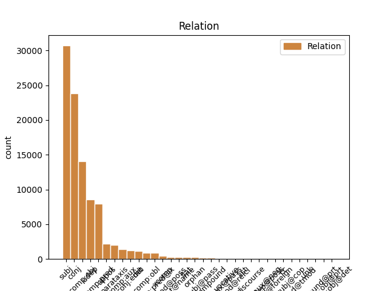
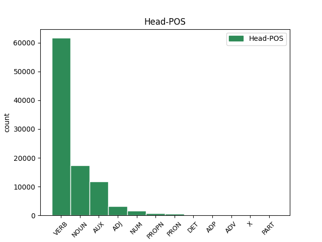
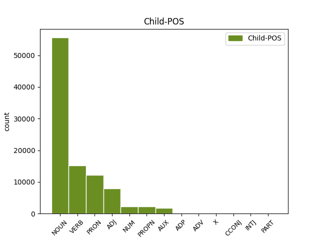

Distribution of features within this leaf



Agreement Rules sorted by frequency.
- When the dependent token is the subject(subj) of the head token, and the head token is VERB and the dependent token is NOUN.
1 Hvussu hvussu NOUN _ Case=Nom|Gender=Masc|Number=Sing 6 subj _ _
2 verður _ _ _ _ 0 _ _ _
3 við _ _ _ _ 0 _ _ _
4 ætlaðu _ _ _ _ 0 _ _ _
5 broytingunum _ _ _ _ 0 _ _ _
6 ber ber VERB _ Mood=Ind|Number=Sing|Person=3|Tense=Past|VerbForm=Fin|Voice=Act 0 _ _ _
7 ikki _ _ _ _ 0 _ _ _
8 til _ _ _ _ 0 _ _ _
9 at _ _ _ _ 0 _ _ _
10 siga _ _ _ _ 0 _ _ _
11 enn _ _ _ _ 0 _ _ _
12 , _ _ _ _ 0 _ _ _
13 tí _ _ _ _ 0 _ _ _
14 nýggi _ _ _ _ 0 _ _ _
15 landsstýrismaðurin _ _ _ _ 0 _ _ _
16 hevur _ _ _ _ 0 _ _ _
17 enn _ _ _ _ 0 _ _ _
18 ikki _ _ _ _ 0 _ _ _
19 alment _ _ _ _ 0 _ _ _
20 beinleiðis _ _ _ _ 0 _ _ _
21 nevnt _ _ _ _ 0 _ _ _
22 nakað _ _ _ _ 0 _ _ _
23 um _ _ _ _ 0 _ _ _
24 broytingar _ _ _ _ 0 _ _ _
25 á _ _ _ _ 0 _ _ _
26 økinum _ _ _ _ 0 _ _ _
27 . _ _ _ _ 0 _ _ _
1 Hann _ _ _ _ 0 _ _ _
2 tók _ _ _ _ 0 _ _ _
3 ímóti _ _ _ _ 0 _ _ _
4 honum _ _ _ _ 0 _ _ _
5 , _ _ _ _ 0 _ _ _
6 gav _ _ _ _ 0 _ _ _
7 honum _ _ _ _ 0 _ _ _
8 nýggjan _ _ _ _ 0 _ _ _
9 búna _ _ _ _ 0 _ _ _
10 , _ _ _ _ 0 _ _ _
11 helt _ _ _ _ 0 _ _ _
12 veitslu veitslu NOUN _ Case=Acc|Gender=Masc|Number=Sing 13 comp:obj _ _
13 fyri fyri VERB _ Mood=Ind|Number=Sing|Person=3|Tense=Past|VerbForm=Fin|Voice=Act 0 _ _ _
14 honum- _ _ _ _ 0 _ _ _
15 og _ _ _ _ 0 _ _ _
16 gjørdi _ _ _ _ 0 _ _ _
17 hann _ _ _ _ 0 _ _ _
18 til _ _ _ _ 0 _ _ _
19 umboð _ _ _ _ 0 _ _ _
20 Sítt _ _ _ _ 0 _ _ _
21 aftur _ _ _ _ 0 _ _ _
22 . _ _ _ _ 0 _ _ _
1 Hetta _ _ _ _ 0 _ _ _
2 er _ _ _ _ 0 _ _ _
3 ein _ _ _ _ 0 _ _ _
4 tvey _ _ _ _ 0 _ _ _
5 ára _ _ _ _ 0 _ _ _
6 útbúgving _ _ _ _ 0 _ _ _
7 , _ _ _ _ 0 _ _ _
8 sum _ _ _ _ 0 _ _ _
9 er _ _ _ _ 0 _ _ _
10 býtt _ _ _ _ 0 _ _ _
11 upp _ _ _ _ 0 _ _ _
12 í _ _ _ _ 0 _ _ _
13 fýra _ _ _ _ 0 _ _ _
14 semestur _ _ _ _ 0 _ _ _
15 , _ _ _ _ 0 _ _ _
16 har _ _ _ _ 0 _ _ _
17 møguleiki _ _ _ _ 0 _ _ _
18 er _ _ _ _ 0 _ _ _
19 at _ _ _ _ 0 _ _ _
20 nema _ _ _ _ 0 _ _ _
21 sær _ _ _ _ 0 _ _ _
22 kunnleika _ _ _ _ 0 _ _ _
23 í _ _ _ _ 0 _ _ _
24 uppmáting uppmáting NOUN _ Definite=Ind|Gender=Fem|Number=Sing 0 _ _ _
25 , _ _ _ _ 0 _ _ _
26 viðgerð _ _ _ _ 0 _ _ _
27 av _ _ _ _ 0 _ _ _
28 uppmátingardáta _ _ _ _ 0 _ _ _
29 , _ _ _ _ 0 _ _ _
30 og _ _ _ _ 0 _ _ _
31 fyriskipan fyriskipan NOUN _ Definite=Ind|Gender=Fem|Number=Sing 24 conj _ _
32 og _ _ _ _ 0 _ _ _
33 stýring _ _ _ _ 0 _ _ _
34 av _ _ _ _ 0 _ _ _
35 byggiprojektum _ _ _ _ 0 _ _ _
36 . _ _ _ _ 0 _ _ _
1 Hóast _ _ _ _ 0 _ _ _
2 at _ _ _ _ 0 _ _ _
3 stovnar _ _ _ _ 0 _ _ _
4 uttan _ _ _ _ 0 _ _ _
5 iva _ _ _ _ 0 _ _ _
6 longu _ _ _ _ 0 _ _ _
7 hava _ _ _ _ 0 _ _ _
8 eina _ _ _ _ 0 _ _ _
9 tílíka _ _ _ _ 0 _ _ _
10 kunningarskyldu _ _ _ _ 0 _ _ _
11 sambært _ _ _ _ 0 _ _ _
12 fyrisitingarrættinum _ _ _ _ 0 _ _ _
13 , _ _ _ _ 0 _ _ _
14 verður _ _ _ _ 0 _ _ _
15 hendan _ _ _ _ 0 _ _ _
16 ikki _ _ _ _ 0 _ _ _
17 hildin _ _ _ _ 0 _ _ _
18 sum sum PRON _ Case=Nom|Gender=Neut|Number=Sing 20 subj _ _
19 nú _ _ _ _ 0 _ _ _
20 er vere VERB _ Mood=Ind|Number=Sing|Person=3|Tense=Pres|VerbForm=Fin|Voice=Act 0 _ _ _
21 , _ _ _ _ 0 _ _ _
22 og _ _ _ _ 0 _ _ _
23 tað _ _ _ _ 0 _ _ _
24 hevði _ _ _ _ 0 _ _ _
25 tí _ _ _ _ 0 _ _ _
26 verið _ _ _ _ 0 _ _ _
27 ynskiligt _ _ _ _ 0 _ _ _
28 , _ _ _ _ 0 _ _ _
29 at _ _ _ _ 0 _ _ _
30 kunningarskyldan _ _ _ _ 0 _ _ _
31 bleiv _ _ _ _ 0 _ _ _
32 ásett _ _ _ _ 0 _ _ _
33 í _ _ _ _ 0 _ _ _
34 lógini _ _ _ _ 0 _ _ _
35 . _ _ _ _ 0 _ _ _
1 Hann _ _ _ _ 0 _ _ _
2 tók _ _ _ _ 0 _ _ _
3 ímóti _ _ _ _ 0 _ _ _
4 honum _ _ _ _ 0 _ _ _
5 , _ _ _ _ 0 _ _ _
6 gav _ _ _ _ 0 _ _ _
7 honum _ _ _ _ 0 _ _ _
8 nýggjan _ _ _ _ 0 _ _ _
9 búna _ _ _ _ 0 _ _ _
10 , _ _ _ _ 0 _ _ _
11 helt _ _ _ _ 0 _ _ _
12 veitslu _ _ _ _ 0 _ _ _
13 fyri fyri VERB _ Mood=Ind|Number=Sing|Person=3|Tense=Past|VerbForm=Fin|Voice=Act 0 _ _ _
14 honum- _ _ _ _ 0 _ _ _
15 og _ _ _ _ 0 _ _ _
16 gjørdi gjørdi VERB _ Mood=Ind|Number=Sing|Person=3|Tense=Past|VerbForm=Fin|Voice=Act 13 conj _ _
17 hann _ _ _ _ 0 _ _ _
18 til _ _ _ _ 0 _ _ _
19 umboð _ _ _ _ 0 _ _ _
20 Sítt _ _ _ _ 0 _ _ _
21 aftur _ _ _ _ 0 _ _ _
22 . _ _ _ _ 0 _ _ _
1 Hvussu _ _ _ _ 0 _ _ _
2 verður _ _ _ _ 0 _ _ _
3 við _ _ _ _ 0 _ _ _
4 ætlaðu _ _ _ _ 0 _ _ _
5 broytingunum _ _ _ _ 0 _ _ _
6 ber _ _ _ _ 0 _ _ _
7 ikki _ _ _ _ 0 _ _ _
8 til _ _ _ _ 0 _ _ _
9 at _ _ _ _ 0 _ _ _
10 siga _ _ _ _ 0 _ _ _
11 enn _ _ _ _ 0 _ _ _
12 , _ _ _ _ 0 _ _ _
13 tí _ _ _ _ 0 _ _ _
14 nýggi _ _ _ _ 0 _ _ _
15 landsstýrismaðurin landsstýrismaðuri NOUN _ Case=Dat|Gender=Masc|Number=Sing 16 udep _ _
16 hevur hevur VERB _ Mood=Ind|Number=Sing|Person=3|Tense=Pres|VerbForm=Fin|Voice=Act 0 _ _ _
17 enn _ _ _ _ 0 _ _ _
18 ikki _ _ _ _ 0 _ _ _
19 alment _ _ _ _ 0 _ _ _
20 beinleiðis _ _ _ _ 0 _ _ _
21 nevnt _ _ _ _ 0 _ _ _
22 nakað _ _ _ _ 0 _ _ _
23 um _ _ _ _ 0 _ _ _
24 broytingar _ _ _ _ 0 _ _ _
25 á _ _ _ _ 0 _ _ _
26 økinum _ _ _ _ 0 _ _ _
27 . _ _ _ _ 0 _ _ _
1 Hetta hetta NOUN _ Case=Nom|Number=Sing 2 subj _ _
2 er vere AUX _ Mood=Ind|Number=Sing|Person=3|Tense=Pres|VerbForm=Fin|Voice=Act 0 _ _ _
3 tó _ _ _ _ 0 _ _ _
4 ikki _ _ _ _ 0 _ _ _
5 galdandi _ _ _ _ 0 _ _ _
6 í _ _ _ _ 0 _ _ _
7 sambandi _ _ _ _ 0 _ _ _
8 við _ _ _ _ 0 _ _ _
9 brævatkvøðu _ _ _ _ 0 _ _ _
10 . _ _ _ _ 0 _ _ _
1 So _ _ _ _ 0 _ _ _
2 eri eri AUX _ Mood=Ind|Number=Sing|Person=3|Tense=Pres|VerbForm=Fin 0 _ _ _
3 eg _ _ _ _ 0 _ _ _
4 eynduríkur eynduríkur NOUN _ Case=Nom|Number=Sing 2 comp:pred _ _
5 . _ _ _ _ 0 _ _ _
1 38 _ _ _ _ 0 _ _ _
2 ) _ _ _ _ 0 _ _ _
3 Innaneftirlit _ _ _ _ 0 _ _ _
4 : _ _ _ _ 0 _ _ _
5 Skipað _ _ _ _ 0 _ _ _
6 tiltøk _ _ _ _ 0 _ _ _
7 , _ _ _ _ 0 _ _ _
8 sum sums ADJ _ Case=Acc|Gender=Neut|Number=Sing 9 subj _ _
9 skulu skulun VERB _ Mood=Opt|Number=Sing|Person=1|Tense=Pres|VerbForm=Fin|Voice=Act 0 _ _ _
10 tryggja _ _ _ _ 0 _ _ _
11 , _ _ _ _ 0 _ _ _
12 at _ _ _ _ 0 _ _ _
13 virksemið _ _ _ _ 0 _ _ _
14 á _ _ _ _ 0 _ _ _
15 alibrúkinum _ _ _ _ 0 _ _ _
16 verður _ _ _ _ 0 _ _ _
17 lagt _ _ _ _ 0 _ _ _
18 til _ _ _ _ 0 _ _ _
19 rættis _ _ _ _ 0 _ _ _
20 , _ _ _ _ 0 _ _ _
21 skipað _ _ _ _ 0 _ _ _
22 , _ _ _ _ 0 _ _ _
23 útint _ _ _ _ 0 _ _ _
24 og _ _ _ _ 0 _ _ _
25 viðlíkahildið _ _ _ _ 0 _ _ _
26 í _ _ _ _ 0 _ _ _
27 samsvari _ _ _ _ 0 _ _ _
28 við _ _ _ _ 0 _ _ _
29 galdandi _ _ _ _ 0 _ _ _
30 lóg _ _ _ _ 0 _ _ _
31 ella _ _ _ _ 0 _ _ _
32 við _ _ _ _ 0 _ _ _
33 krøv _ _ _ _ 0 _ _ _
34 , _ _ _ _ 0 _ _ _
35 heimilað _ _ _ _ 0 _ _ _
36 í _ _ _ _ 0 _ _ _
37 galdandi _ _ _ _ 0 _ _ _
38 lóg _ _ _ _ 0 _ _ _
39 . _ _ _ _ 0 _ _ _
1 Hann _ _ _ _ 0 _ _ _
2 vísir _ _ _ _ 0 _ _ _
3 á _ _ _ _ 0 _ _ _
4 , _ _ _ _ 0 _ _ _
5 at _ _ _ _ 0 _ _ _
6 tað _ _ _ _ 0 _ _ _
7 altíð _ _ _ _ 0 _ _ _
8 eru _ _ _ _ 0 _ _ _
9 fráfall _ _ _ _ 0 _ _ _
10 , _ _ _ _ 0 _ _ _
11 og _ _ _ _ 0 _ _ _
12 tí _ _ _ _ 0 _ _ _
13 er vere AUX _ Mood=Ind|Number=Sing|Person=3|Tense=Pres|VerbForm=Fin|Voice=Act 0 _ _ _
14 neyðugt neyðugts ADJ _ Definite=Ind|Degree=Pos|Gender=Neut|Number=Sing 13 comp:pred _ _
15 við _ _ _ _ 0 _ _ _
16 breiðum _ _ _ _ 0 _ _ _
17 grundarlag _ _ _ _ 0 _ _ _
18 . _ _ _ _ 0 _ _ _
1 38 _ _ _ _ 0 _ _ _
2 ) _ _ _ _ 0 _ _ _
3 Innaneftirlit _ _ _ _ 0 _ _ _
4 : _ _ _ _ 0 _ _ _
5 Skipað _ _ _ _ 0 _ _ _
6 tiltøk _ _ _ _ 0 _ _ _
7 , _ _ _ _ 0 _ _ _
8 sum _ _ _ _ 0 _ _ _
9 skulu skulun VERB _ Mood=Opt|Number=Sing|Person=1|Tense=Pres|VerbForm=Fin|Voice=Act 0 _ _ _
10 tryggja tryggjan NOUN _ Case=Nom|Degree=Pos|Gender=Fem|Number=Sing|Strength=Strong 9 comp:pred _ _
11 , _ _ _ _ 0 _ _ _
12 at _ _ _ _ 0 _ _ _
13 virksemið _ _ _ _ 0 _ _ _
14 á _ _ _ _ 0 _ _ _
15 alibrúkinum _ _ _ _ 0 _ _ _
16 verður _ _ _ _ 0 _ _ _
17 lagt _ _ _ _ 0 _ _ _
18 til _ _ _ _ 0 _ _ _
19 rættis _ _ _ _ 0 _ _ _
20 , _ _ _ _ 0 _ _ _
21 skipað _ _ _ _ 0 _ _ _
22 , _ _ _ _ 0 _ _ _
23 útint _ _ _ _ 0 _ _ _
24 og _ _ _ _ 0 _ _ _
25 viðlíkahildið _ _ _ _ 0 _ _ _
26 í _ _ _ _ 0 _ _ _
27 samsvari _ _ _ _ 0 _ _ _
28 við _ _ _ _ 0 _ _ _
29 galdandi _ _ _ _ 0 _ _ _
30 lóg _ _ _ _ 0 _ _ _
31 ella _ _ _ _ 0 _ _ _
32 við _ _ _ _ 0 _ _ _
33 krøv _ _ _ _ 0 _ _ _
34 , _ _ _ _ 0 _ _ _
35 heimilað _ _ _ _ 0 _ _ _
36 í _ _ _ _ 0 _ _ _
37 galdandi _ _ _ _ 0 _ _ _
38 lóg _ _ _ _ 0 _ _ _
39 . _ _ _ _ 0 _ _ _
1 Hvussu _ _ _ _ 0 _ _ _
2 verður verður ADJ _ Case=Nom|Degree=Pos|Gender=Neut|Number=Sing|Strength=Strong 6 comp:pred _ _
3 við _ _ _ _ 0 _ _ _
4 ætlaðu _ _ _ _ 0 _ _ _
5 broytingunum _ _ _ _ 0 _ _ _
6 ber ber VERB _ Mood=Ind|Number=Sing|Person=3|Tense=Past|VerbForm=Fin|Voice=Act 0 _ _ _
7 ikki _ _ _ _ 0 _ _ _
8 til _ _ _ _ 0 _ _ _
9 at _ _ _ _ 0 _ _ _
10 siga _ _ _ _ 0 _ _ _
11 enn _ _ _ _ 0 _ _ _
12 , _ _ _ _ 0 _ _ _
13 tí _ _ _ _ 0 _ _ _
14 nýggi _ _ _ _ 0 _ _ _
15 landsstýrismaðurin _ _ _ _ 0 _ _ _
16 hevur _ _ _ _ 0 _ _ _
17 enn _ _ _ _ 0 _ _ _
18 ikki _ _ _ _ 0 _ _ _
19 alment _ _ _ _ 0 _ _ _
20 beinleiðis _ _ _ _ 0 _ _ _
21 nevnt _ _ _ _ 0 _ _ _
22 nakað _ _ _ _ 0 _ _ _
23 um _ _ _ _ 0 _ _ _
24 broytingar _ _ _ _ 0 _ _ _
25 á _ _ _ _ 0 _ _ _
26 økinum _ _ _ _ 0 _ _ _
27 . _ _ _ _ 0 _ _ _
1 Tú _ _ _ _ 0 _ _ _
2 vart _ _ _ _ 0 _ _ _
3 í _ _ _ _ 0 _ _ _
4 Eden _ _ _ _ 0 _ _ _
5 , _ _ _ _ 0 _ _ _
6 aldingarði _ _ _ _ 0 _ _ _
7 Guds _ _ _ _ 0 _ _ _
8 ; _ _ _ _ 0 _ _ _
9 við _ _ _ _ 0 _ _ _
10 alskyns _ _ _ _ 0 _ _ _
11 dýrum _ _ _ _ 0 _ _ _
12 steinum _ _ _ _ 0 _ _ _
13 vart _ _ _ _ 0 _ _ _
14 tú _ _ _ _ 0 _ _ _
15 avtaktur avtaktur NOUN _ Definite=Ind|Degree=Pos|Number=Sing 0 _ _ _
16 : _ _ _ _ 0 _ _ _
17 karneol karneol NOUN _ Definite=Ind|Gender=Neut|Number=Sing 15 appos _ _
18 , _ _ _ _ 0 _ _ _
19 tópas _ _ _ _ 0 _ _ _
20 , _ _ _ _ 0 _ _ _
21 jaspis _ _ _ _ 0 _ _ _
22 , _ _ _ _ 0 _ _ _
23 krýsolit _ _ _ _ 0 _ _ _
24 , _ _ _ _ 0 _ _ _
25 sjóham _ _ _ _ 0 _ _ _
26 , _ _ _ _ 0 _ _ _
27 ónyks _ _ _ _ 0 _ _ _
28 , _ _ _ _ 0 _ _ _
29 saffir _ _ _ _ 0 _ _ _
30 , _ _ _ _ 0 _ _ _
31 karfunkul _ _ _ _ 0 _ _ _
32 og _ _ _ _ 0 _ _ _
33 smáragd _ _ _ _ 0 _ _ _
34 , _ _ _ _ 0 _ _ _
35 og _ _ _ _ 0 _ _ _
36 alt _ _ _ _ 0 _ _ _
37 hetta _ _ _ _ 0 _ _ _
38 lagt _ _ _ _ 0 _ _ _
39 í _ _ _ _ 0 _ _ _
40 umgjarðir _ _ _ _ 0 _ _ _
41 av _ _ _ _ 0 _ _ _
42 gulli _ _ _ _ 0 _ _ _
43 . _ _ _ _ 0 _ _ _
1 Til _ _ _ _ 0 _ _ _
2 samans _ _ _ _ 0 _ _ _
3 millum _ _ _ _ 0 _ _ _
4 20 20 NUM _ Number=Plur|NumType=Card 0 _ _ _
5 og _ _ _ _ 0 _ _ _
6 30 30 NUM _ Number=Plur|NumType=Card 4 conj _ _
7 fólk _ _ _ _ 0 _ _ _
8 hava _ _ _ _ 0 _ _ _
9 verið _ _ _ _ 0 _ _ _
10 við _ _ _ _ 0 _ _ _
11 at _ _ _ _ 0 _ _ _
12 sett _ _ _ _ 0 _ _ _
13 fýra _ _ _ _ 0 _ _ _
14 tons _ _ _ _ 0 _ _ _
15 av _ _ _ _ 0 _ _ _
16 seteplum _ _ _ _ 0 _ _ _
17 niður _ _ _ _ 0 _ _ _
18 í _ _ _ _ 0 _ _ _
19 Kollafirði _ _ _ _ 0 _ _ _
20 , _ _ _ _ 0 _ _ _
21 á _ _ _ _ 0 _ _ _
22 Signabø _ _ _ _ 0 _ _ _
23 , _ _ _ _ 0 _ _ _
24 á _ _ _ _ 0 _ _ _
25 Velbastað _ _ _ _ 0 _ _ _
26 , _ _ _ _ 0 _ _ _
27 í _ _ _ _ 0 _ _ _
28 Leynum _ _ _ _ 0 _ _ _
29 og _ _ _ _ 0 _ _ _
30 í _ _ _ _ 0 _ _ _
31 Sandavági _ _ _ _ 0 _ _ _
32 . _ _ _ _ 0 _ _ _
1 Eg _ _ _ _ 0 _ _ _
2 eri _ _ _ _ 0 _ _ _
3 vónsvikin _ _ _ _ 0 _ _ _
4 av _ _ _ _ 0 _ _ _
5 VÍF _ _ _ _ 0 _ _ _
6 , _ _ _ _ 0 _ _ _
7 sum sums PRON _ Case=Acc|Gender=Neut|Number=Sing 9 comp:obj _ _
8 eg _ _ _ _ 0 _ _ _
9 haldi haldin VERB _ Mood=Ind|Number=Sing|Person=3|Tense=Past|VerbForm=Fin|Voice=Act 0 _ _ _
10 hevur _ _ _ _ 0 _ _ _
11 breiðasta _ _ _ _ 0 _ _ _
12 og _ _ _ _ 0 _ _ _
13 besta _ _ _ _ 0 _ _ _
14 spælarahópin _ _ _ _ 0 _ _ _
15 í _ _ _ _ 0 _ _ _
16 deildini _ _ _ _ 0 _ _ _
17 , _ _ _ _ 0 _ _ _
18 sigur _ _ _ _ 0 _ _ _
19 Finnur _ _ _ _ 0 _ _ _
20 millum _ _ _ _ 0 _ _ _
21 annað _ _ _ _ 0 _ _ _
22 niðanfyri _ _ _ _ 0 _ _ _
23 . _ _ _ _ 0 _ _ _
1 So _ _ _ _ 0 _ _ _
2 eri eri AUX _ Mood=Ind|Number=Sing|Person=3|Tense=Pres|VerbForm=Fin 0 _ _ _
3 eg eg PRON _ Animacy=Hum|Case=Nom|Number=Sing|Person=1|PronType=Prs 2 subj _ _
4 eynduríkur _ _ _ _ 0 _ _ _
5 . _ _ _ _ 0 _ _ _
1 Hann Hann PROPN _ Case=Nom|Gender=Masc|Number=Sing 2 subj _ _
2 tók tók VERB _ Mood=Ind|Number=Sing|Person=3|Tense=Past|VerbForm=Fin|Voice=Act 0 _ _ _
3 ímóti _ _ _ _ 0 _ _ _
4 honum _ _ _ _ 0 _ _ _
5 , _ _ _ _ 0 _ _ _
6 gav _ _ _ _ 0 _ _ _
7 honum _ _ _ _ 0 _ _ _
8 nýggjan _ _ _ _ 0 _ _ _
9 búna _ _ _ _ 0 _ _ _
10 , _ _ _ _ 0 _ _ _
11 helt _ _ _ _ 0 _ _ _
12 veitslu _ _ _ _ 0 _ _ _
13 fyri _ _ _ _ 0 _ _ _
14 honum- _ _ _ _ 0 _ _ _
15 og _ _ _ _ 0 _ _ _
16 gjørdi _ _ _ _ 0 _ _ _
17 hann _ _ _ _ 0 _ _ _
18 til _ _ _ _ 0 _ _ _
19 umboð _ _ _ _ 0 _ _ _
20 Sítt _ _ _ _ 0 _ _ _
21 aftur _ _ _ _ 0 _ _ _
22 . _ _ _ _ 0 _ _ _
1 Tað _ _ _ _ 0 _ _ _
2 kundi _ _ _ _ 0 _ _ _
3 eg _ _ _ _ 0 _ _ _
4 siga sigan VERB _ Mood=Ind|Number=Sing|Person=3|Tense=Past|VerbForm=Fin|Voice=Act 0 _ _ _
5 út _ _ _ _ 0 _ _ _
6 frá _ _ _ _ 0 _ _ _
7 orðunum _ _ _ _ 0 _ _ _
8 í _ _ _ _ 0 _ _ _
9 1 _ _ _ _ 0 _ _ _
10 . _ _ _ _ 0 _ _ _
11 Pæt _ _ _ _ 0 _ _ _
12 . _ _ _ _ 0 _ _ _
13 3,9 _ _ _ _ 0 _ _ _
14 - _ _ _ _ 0 _ _ _
15 10 _ _ _ _ 0 _ _ _
16 : _ _ _ _ 0 _ _ _
17 ” _ _ _ _ 0 _ _ _
18 Gjaldið gjaldan VERB _ Aspect=Perf|Case=Nom|Gender=Neut|Number=Sing|Strength=Strong|Tense=Past|VerbForm=Part|Voice=Pass 4 parataxis _ _
19 ikki _ _ _ _ 0 _ _ _
20 ilt _ _ _ _ 0 _ _ _
21 fyri _ _ _ _ 0 _ _ _
22 ilt _ _ _ _ 0 _ _ _
23 ella _ _ _ _ 0 _ _ _
24 deilan _ _ _ _ 0 _ _ _
25 fyri _ _ _ _ 0 _ _ _
26 deilan _ _ _ _ 0 _ _ _
27 ; _ _ _ _ 0 _ _ _
28 men _ _ _ _ 0 _ _ _
29 tvørtur _ _ _ _ 0 _ _ _
30 ímót _ _ _ _ 0 _ _ _
31 , _ _ _ _ 0 _ _ _
32 vælsignið _ _ _ _ 0 _ _ _
33 heldur _ _ _ _ 0 _ _ _
34 , _ _ _ _ 0 _ _ _
35 tí _ _ _ _ 0 _ _ _
36 at _ _ _ _ 0 _ _ _
37 til _ _ _ _ 0 _ _ _
38 tess _ _ _ _ 0 _ _ _
39 eru _ _ _ _ 0 _ _ _
40 tit _ _ _ _ 0 _ _ _
41 kallaðir _ _ _ _ 0 _ _ _
42 , _ _ _ _ 0 _ _ _
43 at _ _ _ _ 0 _ _ _
44 tit _ _ _ _ 0 _ _ _
45 skulu _ _ _ _ 0 _ _ _
46 arva _ _ _ _ 0 _ _ _
47 signing _ _ _ _ 0 _ _ _
48 . _ _ _ _ 0 _ _ _
1 Seinastu _ _ _ _ 0 _ _ _
2 tølini _ _ _ _ 0 _ _ _
3 fyri _ _ _ _ 0 _ _ _
4 bruttotjóðarinntøku _ _ _ _ 0 _ _ _
5 hava _ _ _ _ 0 _ _ _
6 víst _ _ _ _ 0 _ _ _
7 , _ _ _ _ 0 _ _ _
8 at _ _ _ _ 0 _ _ _
9 vøkstur _ _ _ _ 0 _ _ _
10 aftur _ _ _ _ 0 _ _ _
11 er _ _ _ _ 0 _ _ _
12 við _ _ _ _ 0 _ _ _
13 at _ _ _ _ 0 _ _ _
14 koma _ _ _ _ 0 _ _ _
15 í _ _ _ _ 0 _ _ _
16 amerikanska amerikansk ADJ _ Definite=Def|Degree=Pos|Number=Sing 0 _ _ _
17 og _ _ _ _ 0 _ _ _
18 evropeiska evropeisk ADJ _ Case=Nom|Degree=Pos|Gender=Masc|Number=Sing|Strength=Weak 16 conj _ _
19 búskapin _ _ _ _ 0 _ _ _
20 . _ _ _ _ 0 _ _ _
1 Tvær _ _ _ _ 0 _ _ _
2 tær _ _ _ _ 0 _ _ _
3 síðstu _ _ _ _ 0 _ _ _
4 vikurnar _ _ _ _ 0 _ _ _
5 tók _ _ _ _ 0 _ _ _
6 síðan _ _ _ _ 0 _ _ _
7 hjá _ _ _ _ 0 _ _ _
8 SMS _ _ _ _ 0 _ _ _
9 nevniliga _ _ _ _ 0 _ _ _
10 egið _ _ _ _ 0 _ _ _
11 met _ _ _ _ 0 _ _ _
12 á _ _ _ _ 0 _ _ _
13 ymsum _ _ _ _ 0 _ _ _
14 økjum _ _ _ _ 0 _ _ _
15 , _ _ _ _ 0 _ _ _
16 og _ _ _ _ 0 _ _ _
17 hesaferð _ _ _ _ 0 _ _ _
18 varð verðe VERB _ Mood=Ind|Number=Sing|Person=3|Tense=Past|VerbForm=Fin|Voice=Act 0 _ _ _
19 talan talan VERB _ Aspect=Perf|Case=Nom|Gender=Neut|Number=Sing|Strength=Strong|Tense=Past|VerbForm=Part|Voice=Pass 18 comp:pred@x _ _
20 um _ _ _ _ 0 _ _ _
21 økið _ _ _ _ 0 _ _ _
22 brúkarar _ _ _ _ 0 _ _ _
23 . _ _ _ _ 0 _ _ _
1 Mállæran _ _ _ _ 0 _ _ _
2 í _ _ _ _ 0 _ _ _
3 royndunum _ _ _ _ 0 _ _ _
4 í _ _ _ _ 0 _ _ _
5 fjør _ _ _ _ 0 _ _ _
6 var vere AUX _ Mood=Ind|Number=Sing|Person=3|Tense=Past|VerbForm=Fin|Voice=Act 0 _ _ _
7 skipað _ _ _ _ 0 _ _ _
8 øðrvísi _ _ _ _ 0 _ _ _
9 enn _ _ _ _ 0 _ _ _
10 undanfarnu _ _ _ _ 0 _ _ _
11 ár _ _ _ _ 0 _ _ _
12 , _ _ _ _ 0 _ _ _
13 tí _ _ _ _ 0 _ _ _
14 at _ _ _ _ 0 _ _ _
15 næmingarnir _ _ _ _ 0 _ _ _
16 ikki _ _ _ _ 0 _ _ _
17 skuldu _ _ _ _ 0 _ _ _
18 skriva _ _ _ _ 0 _ _ _
19 tekst _ _ _ _ 0 _ _ _
20 , _ _ _ _ 0 _ _ _
21 men _ _ _ _ 0 _ _ _
22 bara _ _ _ _ 0 _ _ _
23 seta sete VERB _ Mood=Ind|Number=Sing|Person=3|Tense=Past|VerbForm=Fin|Voice=Act 6 conj _ _
24 x _ _ _ _ 0 _ _ _
25 við _ _ _ _ 0 _ _ _
26 rætt _ _ _ _ 0 _ _ _
27 svar _ _ _ _ 0 _ _ _
28 . _ _ _ _ 0 _ _ _
1 Velur _ _ _ _ 0 _ _ _
2 tú tú PRON _ Case=Nom|Number=Sing|Person=2|PronType=Prs 3 det _ _
3 harafturímóti harafturímóti NOUN _ Case=Dat|Gender=Fem|Number=Sing 0 _ _ _
4 " _ _ _ _ 0 _ _ _
5 Fráboðan _ _ _ _ 0 _ _ _
6 við _ _ _ _ 0 _ _ _
7 longum _ _ _ _ 0 _ _ _
8 boðum _ _ _ _ 0 _ _ _
9 " _ _ _ _ 0 _ _ _
10 , _ _ _ _ 0 _ _ _
11 er _ _ _ _ 0 _ _ _
12 fráboðanin _ _ _ _ 0 _ _ _
13 ikki _ _ _ _ 0 _ _ _
14 at _ _ _ _ 0 _ _ _
15 síggja _ _ _ _ 0 _ _ _
16 á _ _ _ _ 0 _ _ _
17 fysiska _ _ _ _ 0 _ _ _
18 kontuavritinum _ _ _ _ 0 _ _ _
19 og _ _ _ _ 0 _ _ _
20 heldur _ _ _ _ 0 _ _ _
21 ikki _ _ _ _ 0 _ _ _
22 á _ _ _ _ 0 _ _ _
23 kontuavritinum _ _ _ _ 0 _ _ _
24 inni _ _ _ _ 0 _ _ _
25 í _ _ _ _ 0 _ _ _
26 Netbankanum _ _ _ _ 0 _ _ _
27 . _ _ _ _ 0 _ _ _
1 Umleið umleije VERB _ Definite=Ind|Gender=Neut|Number=Sing|VerbForm=Part 0 _ _ _
2 2,5 _ _ _ _ 0 _ _ _
3 tímar _ _ _ _ 0 _ _ _
4 til _ _ _ _ 0 _ _ _
5 Cagliari _ _ _ _ 0 _ _ _
6 ( _ _ _ _ 0 _ _ _
7 flogvøllin _ _ _ _ 0 _ _ _
8 ) _ _ _ _ 0 _ _ _
9 Nýtt _ _ _ _ 0 _ _ _
10 4 _ _ _ _ 0 _ _ _
11 stjørna _ _ _ _ 0 _ _ _
12 hotel hotel NOUN _ Definite=Ind|Gender=Neut|Number=Sing 1 conj _ _
13 í _ _ _ _ 0 _ _ _
14 býnum _ _ _ _ 0 _ _ _
15 Alghero _ _ _ _ 0 _ _ _
16 . _ _ _ _ 0 _ _ _
1 Skoda _ _ _ _ 0 _ _ _
2 Octavia _ _ _ _ 0 _ _ _
3 ársins _ _ _ _ 0 _ _ _
4 bilur _ _ _ _ 0 _ _ _
5 2014 _ _ _ _ 0 _ _ _
6 Honda _ _ _ _ 0 _ _ _
7 Civic _ _ _ _ 0 _ _ _
8 ársins _ _ _ _ 0 _ _ _
9 brúkti _ _ _ _ 0 _ _ _
10 bilur bilur VERB _ Mood=Ind|Number=Sing|Person=3|Tense=Pres|VerbForm=Fin|Voice=Act 0 _ _ _
11 í _ _ _ _ 0 _ _ _
12 2014 _ _ _ _ 0 _ _ _
13 Í _ _ _ _ 0 _ _ _
14 kapping _ _ _ _ 0 _ _ _
15 við _ _ _ _ 0 _ _ _
16 100 _ _ _ _ 0 _ _ _
17 aðrar _ _ _ _ 0 _ _ _
18 bilar _ _ _ _ 0 _ _ _
19 , _ _ _ _ 0 _ _ _
20 er vere AUX _ Mood=Ind|Number=Sing|Person=3|Tense=Pres|VerbForm=Fin|Voice=Act 10 conj _ _
21 Honda _ _ _ _ 0 _ _ _
22 Civic _ _ _ _ 0 _ _ _
23 av _ _ _ _ 0 _ _ _
24 donskum _ _ _ _ 0 _ _ _
25 bilbløðum _ _ _ _ 0 _ _ _
26 og _ _ _ _ 0 _ _ _
27 brúktbilaserfrøðingum _ _ _ _ 0 _ _ _
28 kosin _ _ _ _ 0 _ _ _
29 besti _ _ _ _ 0 _ _ _
30 brúkti _ _ _ _ 0 _ _ _
31 bilur _ _ _ _ 0 _ _ _
32 á _ _ _ _ 0 _ _ _
33 danska _ _ _ _ 0 _ _ _
34 marknaðinum _ _ _ _ 0 _ _ _
35 . _ _ _ _ 0 _ _ _
1 Oljuprísurin _ _ _ _ 0 _ _ _
2 hevur hevur VERB _ Mood=Opt|Number=Sing|Person=1|Tense=Pres|VerbForm=Fin|Voice=Act 0 _ _ _
3 lækkað lækka VERB _ Aspect=Perf|Case=Nom|Gender=Neut|Number=Sing|Strength=Strong|Tense=Past|VerbForm=Part|Voice=Pass 2 comp:aux _ _
4 nógv _ _ _ _ 0 _ _ _
5 í _ _ _ _ 0 _ _ _
6 dag _ _ _ _ 0 _ _ _
7 . _ _ _ _ 0 _ _ _
1 38 _ _ _ _ 0 _ _ _
2 ) _ _ _ _ 0 _ _ _
3 Innaneftirlit _ _ _ _ 0 _ _ _
4 : _ _ _ _ 0 _ _ _
5 Skipað _ _ _ _ 0 _ _ _
6 tiltøk _ _ _ _ 0 _ _ _
7 , _ _ _ _ 0 _ _ _
8 sum _ _ _ _ 0 _ _ _
9 skulu _ _ _ _ 0 _ _ _
10 tryggja _ _ _ _ 0 _ _ _
11 , _ _ _ _ 0 _ _ _
12 at _ _ _ _ 0 _ _ _
13 virksemið _ _ _ _ 0 _ _ _
14 á _ _ _ _ 0 _ _ _
15 alibrúkinum _ _ _ _ 0 _ _ _
16 verður _ _ _ _ 0 _ _ _
17 lagt _ _ _ _ 0 _ _ _
18 til _ _ _ _ 0 _ _ _
19 rættis _ _ _ _ 0 _ _ _
20 , _ _ _ _ 0 _ _ _
21 skipað _ _ _ _ 0 _ _ _
22 , _ _ _ _ 0 _ _ _
23 útint _ _ _ _ 0 _ _ _
24 og _ _ _ _ 0 _ _ _
25 viðlíkahildið viðlíkahildið NOUN _ Aspect=Perf|Case=Nom|Gender=Neut|Number=Sing|Strength=Strong|Tense=Past|VerbForm=Part|Voice=Pass 0 _ _ _
26 í _ _ _ _ 0 _ _ _
27 samsvari _ _ _ _ 0 _ _ _
28 við _ _ _ _ 0 _ _ _
29 galdandi _ _ _ _ 0 _ _ _
30 lóg _ _ _ _ 0 _ _ _
31 ella _ _ _ _ 0 _ _ _
32 við _ _ _ _ 0 _ _ _
33 krøv _ _ _ _ 0 _ _ _
34 , _ _ _ _ 0 _ _ _
35 heimilað heimilan VERB _ Aspect=Perf|Case=Nom|Gender=Neut|Number=Sing|Strength=Strong|Tense=Past|VerbForm=Part|Voice=Pass 25 conj _ _
36 í _ _ _ _ 0 _ _ _
37 galdandi _ _ _ _ 0 _ _ _
38 lóg _ _ _ _ 0 _ _ _
39 . _ _ _ _ 0 _ _ _
1 Finn _ _ _ _ 0 _ _ _
2 tín _ _ _ _ 0 _ _ _
3 dreymabil _ _ _ _ 0 _ _ _
4 á _ _ _ _ 0 _ _ _
5 www.bilimport.fo _ _ _ _ 0 _ _ _
6 Nú nú AUX _ Mood=Imp|Number=Sing|Person=2|VerbForm=Fin 0 _ _ _
7 leygardagin _ _ _ _ 0 _ _ _
8 verður _ _ _ _ 0 _ _ _
9 Formula _ _ _ _ 0 _ _ _
10 - _ _ _ _ 0 _ _ _
11 kappingin kappingi NOUN _ Case=Dat|Gender=Fem|Number=Sing 6 udep _ _
12 , _ _ _ _ 0 _ _ _
13 sum _ _ _ _ 0 _ _ _
14 er _ _ _ _ 0 _ _ _
15 FM _ _ _ _ 0 _ _ _
16 í _ _ _ _ 0 _ _ _
17 inniróðri _ _ _ _ 0 _ _ _
18 . _ _ _ _ 0 _ _ _
1 Í _ _ _ _ 0 _ _ _
2 gjárkvøldið _ _ _ _ 0 _ _ _
3 var _ _ _ _ 0 _ _ _
4 tjúkt _ _ _ _ 0 _ _ _
5 í _ _ _ _ 0 _ _ _
6 mjørka _ _ _ _ 0 _ _ _
7 , _ _ _ _ 0 _ _ _
8 tað _ _ _ _ 0 _ _ _
9 fóru _ _ _ _ 0 _ _ _
10 tvey _ _ _ _ 0 _ _ _
11 flogfør _ _ _ _ 0 _ _ _
12 avstað _ _ _ _ 0 _ _ _
13 aftur _ _ _ _ 0 _ _ _
14 , _ _ _ _ 0 _ _ _
15 eftir _ _ _ _ 0 _ _ _
16 at _ _ _ _ 0 _ _ _
17 hava hava VERB _ Mood=Ind|Number=Sing|Person=3|Tense=Past|VerbForm=Fin|Voice=Act 18 subj _ _
18 flogið flogið VERB _ Aspect=Perf|Case=Nom|Gender=Neut|Number=Sing|Strength=Strong|Tense=Past|VerbForm=Part|Voice=Pass 0 _ _ _
19 uppi _ _ _ _ 0 _ _ _
20 yvir _ _ _ _ 0 _ _ _
21 í _ _ _ _ 0 _ _ _
22 eina _ _ _ _ 0 _ _ _
23 góða _ _ _ _ 0 _ _ _
24 løtu _ _ _ _ 0 _ _ _
25 . _ _ _ _ 0 _ _ _
1 Løgmaður løgmaður NOUN _ Case=Nom|Gender=Masc|Number=Sing 2 subj _ _
2 sigur sigur NOUN _ Mood=Ind|Number=Sing|Person=3|Tense=Pres|VerbForm=Fin|Voice=Act 0 _ _ _
3 soleiðis _ _ _ _ 0 _ _ _
4 í _ _ _ _ 0 _ _ _
5 skrivi _ _ _ _ 0 _ _ _
6 , _ _ _ _ 0 _ _ _
7 sum _ _ _ _ 0 _ _ _
8 er _ _ _ _ 0 _ _ _
9 sent _ _ _ _ 0 _ _ _
10 Rættarnevndini _ _ _ _ 0 _ _ _
11 . _ _ _ _ 0 _ _ _
1 Eg _ _ _ _ 0 _ _ _
2 eri _ _ _ _ 0 _ _ _
3 37 _ _ _ _ 0 _ _ _
4 ár _ _ _ _ 0 _ _ _
5 og _ _ _ _ 0 _ _ _
6 elsti elsti NOUN _ Case=Nom|Gender=Fem|Number=Sing 0 _ _ _
7 pakkarin _ _ _ _ 0 _ _ _
8 umborð umborð NOUN _ Case=Acc|Gender=Fem|Number=Sing 6 comp:obj _ _
9 , _ _ _ _ 0 _ _ _
10 so _ _ _ _ 0 _ _ _
11 sum _ _ _ _ 0 _ _ _
12 heild _ _ _ _ 0 _ _ _
13 er _ _ _ _ 0 _ _ _
14 talan _ _ _ _ 0 _ _ _
15 um _ _ _ _ 0 _ _ _
16 ungt _ _ _ _ 0 _ _ _
17 fólk _ _ _ _ 0 _ _ _
18 . _ _ _ _ 0 _ _ _
1 ” _ _ _ _ 0 _ _ _
2 Gerandisdagurin _ _ _ _ 0 _ _ _
3 er _ _ _ _ 0 _ _ _
4 ikki _ _ _ _ 0 _ _ _
5 ein _ _ _ _ 0 _ _ _
6 sjálvfylgja _ _ _ _ 0 _ _ _
7 hjá _ _ _ _ 0 _ _ _
8 teimum _ _ _ _ 0 _ _ _
9 , _ _ _ _ 0 _ _ _
10 sum _ _ _ _ 0 _ _ _
11 tørva tørvan VERB _ Mood=Ind|Number=Sing|Person=3|Tense=Pres|VerbForm=Fin 0 _ _ _
12 serliga _ _ _ _ 0 _ _ _
13 hjálp _ _ _ _ 0 _ _ _
14 og _ _ _ _ 0 _ _ _
15 tað _ _ _ _ 0 _ _ _
16 er er VERB _ Mood=Ind|Number=Sing|Person=3|Tense=Pres|VerbForm=Fin|Voice=Act 11 conj:emb _ _
17 tað _ _ _ _ 0 _ _ _
18 góða _ _ _ _ 0 _ _ _
19 lívið _ _ _ _ 0 _ _ _
20 heldur _ _ _ _ 0 _ _ _
21 ikki _ _ _ _ 0 _ _ _
22 . _ _ _ _ 0 _ _ _
1 Tí _ _ _ _ 0 _ _ _
2 er vere VERB _ Mood=Ind|Number=Sing|Person=3|Tense=Pres|VerbForm=Fin|Voice=Act 0 _ _ _
3 altarborðið _ _ _ _ 0 _ _ _
4 ikki _ _ _ _ 0 _ _ _
5 tengt tengt VERB _ Aspect=Perf|Case=Nom|Gender=Neut|Number=Sing|Strength=Strong|Tense=Past|VerbForm=Part|Voice=Pass 2 comp:pred _ _
6 at _ _ _ _ 0 _ _ _
7 skynsemi _ _ _ _ 0 _ _ _
8 ella _ _ _ _ 0 _ _ _
9 førleikum _ _ _ _ 0 _ _ _
10 hjá _ _ _ _ 0 _ _ _
11 tí _ _ _ _ 0 _ _ _
12 , _ _ _ _ 0 _ _ _
13 ið _ _ _ _ 0 _ _ _
14 tekur _ _ _ _ 0 _ _ _
15 ímóti _ _ _ _ 0 _ _ _
16 . _ _ _ _ 0 _ _ _
1 Hann _ _ _ _ 0 _ _ _
2 tók _ _ _ _ 0 _ _ _
3 ímóti _ _ _ _ 0 _ _ _
4 honum _ _ _ _ 0 _ _ _
5 , _ _ _ _ 0 _ _ _
6 gav _ _ _ _ 0 _ _ _
7 honum _ _ _ _ 0 _ _ _
8 nýggjan _ _ _ _ 0 _ _ _
9 búna _ _ _ _ 0 _ _ _
10 , _ _ _ _ 0 _ _ _
11 helt _ _ _ _ 0 _ _ _
12 veitslu _ _ _ _ 0 _ _ _
13 fyri fyri VERB _ Mood=Ind|Number=Sing|Person=3|Tense=Past|VerbForm=Fin|Voice=Act 0 _ _ _
14 honum- honum- PRON _ Case=Dat|Gender=Masc|Number=Sing|Person=3|PronType=Prs 13 udep _ _
15 og _ _ _ _ 0 _ _ _
16 gjørdi _ _ _ _ 0 _ _ _
17 hann _ _ _ _ 0 _ _ _
18 til _ _ _ _ 0 _ _ _
19 umboð _ _ _ _ 0 _ _ _
20 Sítt _ _ _ _ 0 _ _ _
21 aftur _ _ _ _ 0 _ _ _
22 . _ _ _ _ 0 _ _ _
1 Fyri _ _ _ _ 0 _ _ _
2 allar _ _ _ _ 0 _ _ _
3 umsøkjarar _ _ _ _ 0 _ _ _
4 er _ _ _ _ 0 _ _ _
5 galdandi _ _ _ _ 0 _ _ _
6 , _ _ _ _ 0 _ _ _
7 at _ _ _ _ 0 _ _ _
8 borgarin _ _ _ _ 0 _ _ _
9 skal _ _ _ _ 0 _ _ _
10 vera _ _ _ _ 0 _ _ _
11 í _ _ _ _ 0 _ _ _
12 arbeiðsførum _ _ _ _ 0 _ _ _
13 aldri _ _ _ _ 0 _ _ _
14 , _ _ _ _ 0 _ _ _
15 og _ _ _ _ 0 _ _ _
16 hava _ _ _ _ 0 _ _ _
17 verið _ _ _ _ 0 _ _ _
18 úti _ _ _ _ 0 _ _ _
19 fyri _ _ _ _ 0 _ _ _
20 tilburði _ _ _ _ 0 _ _ _
21 , _ _ _ _ 0 _ _ _
22 sum _ _ _ _ 0 _ _ _
23 hevur _ _ _ _ 0 _ _ _
24 broytt broytt ADJ _ Definite=Ind|Gender=Neut|Number=Sing|VerbForm=Part 0 _ _ _
25 førleikastøðið førleikastøð NOUN _ Definite=Def|Gender=Neut|Number=Sing 24 comp:obj _ _
26 og _ _ _ _ 0 _ _ _
27 lívsumstøðurnar _ _ _ _ 0 _ _ _
28 munandi _ _ _ _ 0 _ _ _
29 . _ _ _ _ 0 _ _ _
1 Hetta _ _ _ _ 0 _ _ _
2 fyribrigdið _ _ _ _ 0 _ _ _
3 er vere AUX _ Mood=Ind|Number=Sing|Person=3|Tense=Pres|VerbForm=Fin|Voice=Act 0 _ _ _
4 framvegis _ _ _ _ 0 _ _ _
5 virkið virki VERB _ Aspect=Perf|Case=Nom|Gender=Neut|Number=Sing|Strength=Strong|Tense=Past|VerbForm=Part|Voice=Pass 3 comp:aux _ _
6 í _ _ _ _ 0 _ _ _
7 skandinavisku _ _ _ _ 0 _ _ _
8 londunum _ _ _ _ 0 _ _ _
9 , _ _ _ _ 0 _ _ _
10 góð _ _ _ _ 0 _ _ _
11 9.000 _ _ _ _ 0 _ _ _
12 ár _ _ _ _ 0 _ _ _
13 eftir _ _ _ _ 0 _ _ _
14 , _ _ _ _ 0 _ _ _
15 at _ _ _ _ 0 _ _ _
16 ísurin _ _ _ _ 0 _ _ _
17 bráðnaði _ _ _ _ 0 _ _ _
18 burtur _ _ _ _ 0 _ _ _
19 . _ _ _ _ 0 _ _ _
1 Í _ _ _ _ 0 _ _ _
2 hesum _ _ _ _ 0 _ _ _
3 sambandi _ _ _ _ 0 _ _ _
4 verður verður ADJ _ Mood=Ind|Number=Sing|Person=3|Tense=Pres|VerbForm=Fin|Voice=Act 0 _ _ _
5 víst víst NOUN _ Definite=Ind|Gender=Neut|Number=Sing 4 subj _ _
6 til _ _ _ _ 0 _ _ _
7 svarið _ _ _ _ 0 _ _ _
8 upp _ _ _ _ 0 _ _ _
9 á _ _ _ _ 0 _ _ _
10 1 _ _ _ _ 0 _ _ _
11 . _ _ _ _ 0 _ _ _
12 spurningin _ _ _ _ 0 _ _ _
13 , _ _ _ _ 0 _ _ _
14 har _ _ _ _ 0 _ _ _
15 víst _ _ _ _ 0 _ _ _
16 verður _ _ _ _ 0 _ _ _
17 á _ _ _ _ 0 _ _ _
18 , _ _ _ _ 0 _ _ _
19 hvat _ _ _ _ 0 _ _ _
20 samgonguskjalið _ _ _ _ 0 _ _ _
21 sigur _ _ _ _ 0 _ _ _
22 um _ _ _ _ 0 _ _ _
23 kringvarpsspurningin _ _ _ _ 0 _ _ _
24 í _ _ _ _ 0 _ _ _
25 síni _ _ _ _ 0 _ _ _
26 heild _ _ _ _ 0 _ _ _
27 . _ _ _ _ 0 _ _ _
1 Hetta _ _ _ _ 0 _ _ _
2 er _ _ _ _ 0 _ _ _
3 ein _ _ _ _ 0 _ _ _
4 tvey _ _ _ _ 0 _ _ _
5 ára _ _ _ _ 0 _ _ _
6 útbúgving _ _ _ _ 0 _ _ _
7 , _ _ _ _ 0 _ _ _
8 sum _ _ _ _ 0 _ _ _
9 er _ _ _ _ 0 _ _ _
10 býtt _ _ _ _ 0 _ _ _
11 upp _ _ _ _ 0 _ _ _
12 í _ _ _ _ 0 _ _ _
13 fýra _ _ _ _ 0 _ _ _
14 semestur _ _ _ _ 0 _ _ _
15 , _ _ _ _ 0 _ _ _
16 har _ _ _ _ 0 _ _ _
17 møguleiki _ _ _ _ 0 _ _ _
18 er _ _ _ _ 0 _ _ _
19 at _ _ _ _ 0 _ _ _
20 nema _ _ _ _ 0 _ _ _
21 sær _ _ _ _ 0 _ _ _
22 kunnleika _ _ _ _ 0 _ _ _
23 í _ _ _ _ 0 _ _ _
24 uppmáting _ _ _ _ 0 _ _ _
25 , _ _ _ _ 0 _ _ _
26 viðgerð _ _ _ _ 0 _ _ _
27 av _ _ _ _ 0 _ _ _
28 uppmátingardáta _ _ _ _ 0 _ _ _
29 , _ _ _ _ 0 _ _ _
30 og _ _ _ _ 0 _ _ _
31 fyriskipan fyriskipan NOUN _ Definite=Ind|Gender=Fem|Number=Sing 0 _ _ _
32 og _ _ _ _ 0 _ _ _
33 stýring stýring NOUN _ Definite=Ind|Gender=Fem|Number=Sing 31 conj:emb _ _
34 av _ _ _ _ 0 _ _ _
35 byggiprojektum _ _ _ _ 0 _ _ _
36 . _ _ _ _ 0 _ _ _
1 Guttormur _ _ _ _ 0 _ _ _
2 vaks vaks VERB _ Mood=Ind|Number=Sing|Person=3|Tense=Past|VerbForm=Fin|Voice=Act 0 _ _ _
3 tí tí VERB _ Mood=Ind|Number=Sing|Person=3|Tense=Past|VerbForm=Fin|Voice=Act 2 xcomp _ _
4 upp _ _ _ _ 0 _ _ _
5 í _ _ _ _ 0 _ _ _
6 húsinum _ _ _ _ 0 _ _ _
7 hjá _ _ _ _ 0 _ _ _
8 Jóannesi _ _ _ _ 0 _ _ _
9 ommubeiggjanum _ _ _ _ 0 _ _ _
10 , _ _ _ _ 0 _ _ _
11 sum _ _ _ _ 0 _ _ _
12 mamman _ _ _ _ 0 _ _ _
13 var _ _ _ _ 0 _ _ _
14 gift _ _ _ _ 0 _ _ _
15 inn _ _ _ _ 0 _ _ _
16 í _ _ _ _ 0 _ _ _
17 . _ _ _ _ 0 _ _ _
18 Guttormur _ _ _ _ 0 _ _ _
19 átti _ _ _ _ 0 _ _ _
20 hálvsystkin _ _ _ _ 0 _ _ _
21 , _ _ _ _ 0 _ _ _
22 men _ _ _ _ 0 _ _ _
23 bert _ _ _ _ 0 _ _ _
24 eitt _ _ _ _ 0 _ _ _
25 av _ _ _ _ 0 _ _ _
26 teimum _ _ _ _ 0 _ _ _
27 var _ _ _ _ 0 _ _ _
28 tilkomið _ _ _ _ 0 _ _ _
29 , _ _ _ _ 0 _ _ _
30 ein _ _ _ _ 0 _ _ _
31 systir _ _ _ _ 0 _ _ _
32 , _ _ _ _ 0 _ _ _
33 íð _ _ _ _ 0 _ _ _
34 búsettist _ _ _ _ 0 _ _ _
35 í _ _ _ _ 0 _ _ _
36 Svínoy _ _ _ _ 0 _ _ _
37 . _ _ _ _ 0 _ _ _
1 Tó _ _ _ _ 0 _ _ _
2 var _ _ _ _ 0 _ _ _
3 semja _ _ _ _ 0 _ _ _
4 um _ _ _ _ 0 _ _ _
5 , _ _ _ _ 0 _ _ _
6 at _ _ _ _ 0 _ _ _
7 pengar _ _ _ _ 0 _ _ _
8 og _ _ _ _ 0 _ _ _
9 karmar _ _ _ _ 0 _ _ _
10 var _ _ _ _ 0 _ _ _
11 ikki _ _ _ _ 0 _ _ _
12 loysnin _ _ _ _ 0 _ _ _
13 uppá _ _ _ _ 0 _ _ _
14 alt _ _ _ _ 0 _ _ _
15 , _ _ _ _ 0 _ _ _
16 tí _ _ _ _ 0 _ _ _
17 at _ _ _ _ 0 _ _ _
18 uttan _ _ _ _ 0 _ _ _
19 eldsálir _ _ _ _ 0 _ _ _
20 hevði hevði NOUN _ Mood=Ind|Number=Sing|Person=3|Tense=Past|VerbForm=Fin|Voice=Act 0 _ _ _
21 fimleikurin fimleikur NOUN _ Case=Dat|Gender=Masc|Number=Sing 20 udep _ _
22 ikki _ _ _ _ 0 _ _ _
23 verið _ _ _ _ 0 _ _ _
24 lív _ _ _ _ 0 _ _ _
25 lagað _ _ _ _ 0 _ _ _
26 . _ _ _ _ 0 _ _ _
1 Menniskjans _ _ _ _ 0 _ _ _
2 vald _ _ _ _ 0 _ _ _
3 er vere AUX _ Mood=Ind|Number=Sing|Person=3|Tense=Pres|VerbForm=Fin|Voice=Act 0 _ _ _
4 avmarkað _ _ _ _ 0 _ _ _
5 til _ _ _ _ 0 _ _ _
6 tíð _ _ _ _ 0 _ _ _
7 og _ _ _ _ 0 _ _ _
8 stað _ _ _ _ 0 _ _ _
9 – _ _ _ _ 0 _ _ _
10 Gud _ _ _ _ 0 _ _ _
11 er vere AUX _ Mood=Ind|Number=Sing|Person=3|Tense=Pres|VerbForm=Fin|Voice=Act 3 conj _ _
12 ikki _ _ _ _ 0 _ _ _
13 avmarkaður _ _ _ _ 0 _ _ _
14 . _ _ _ _ 0 _ _ _
1 Pápin _ _ _ _ 0 _ _ _
2 var _ _ _ _ 0 _ _ _
3 ateist _ _ _ _ 0 _ _ _
4 , _ _ _ _ 0 _ _ _
5 men _ _ _ _ 0 _ _ _
6 sum _ _ _ _ 0 _ _ _
7 4 _ _ _ _ 0 _ _ _
8 ára ár NOUN _ Case=Gen|Number=Sing 9 udep _ _
9 gamal gamal ADJ _ Definite=Ind|Degree=Pos|Number=Sing 0 _ _ _
10 hoyrdi _ _ _ _ 0 _ _ _
11 Emanuel _ _ _ _ 0 _ _ _
12 eina _ _ _ _ 0 _ _ _
13 rødd _ _ _ _ 0 _ _ _
14 sum _ _ _ _ 0 _ _ _
15 tríggjar _ _ _ _ 0 _ _ _
16 ferðir _ _ _ _ 0 _ _ _
17 segði _ _ _ _ 0 _ _ _
18 : _ _ _ _ 0 _ _ _
19 Jesus _ _ _ _ 0 _ _ _
20 ! _ _ _ _ 0 _ _ _
1 Hvussu _ _ _ _ 0 _ _ _
2 verður _ _ _ _ 0 _ _ _
3 við _ _ _ _ 0 _ _ _
4 ætlaðu _ _ _ _ 0 _ _ _
5 broytingunum _ _ _ _ 0 _ _ _
6 ber _ _ _ _ 0 _ _ _
7 ikki _ _ _ _ 0 _ _ _
8 til _ _ _ _ 0 _ _ _
9 at _ _ _ _ 0 _ _ _
10 siga _ _ _ _ 0 _ _ _
11 enn _ _ _ _ 0 _ _ _
12 , _ _ _ _ 0 _ _ _
13 tí _ _ _ _ 0 _ _ _
14 nýggi _ _ _ _ 0 _ _ _
15 landsstýrismaðurin _ _ _ _ 0 _ _ _
16 hevur hevur VERB _ Mood=Ind|Number=Sing|Person=3|Tense=Pres|VerbForm=Fin|Voice=Act 0 _ _ _
17 enn _ _ _ _ 0 _ _ _
18 ikki ikki ADJ _ Case=Acc|Degree=Pos|Gender=Neut|Number=Sing|Strength=Strong 16 comp:obj _ _
19 alment _ _ _ _ 0 _ _ _
20 beinleiðis _ _ _ _ 0 _ _ _
21 nevnt _ _ _ _ 0 _ _ _
22 nakað _ _ _ _ 0 _ _ _
23 um _ _ _ _ 0 _ _ _
24 broytingar _ _ _ _ 0 _ _ _
25 á _ _ _ _ 0 _ _ _
26 økinum _ _ _ _ 0 _ _ _
27 . _ _ _ _ 0 _ _ _
1 Løgmaður _ _ _ _ 0 _ _ _
2 sigur _ _ _ _ 0 _ _ _
3 soleiðis _ _ _ _ 0 _ _ _
4 í _ _ _ _ 0 _ _ _
5 skrivi _ _ _ _ 0 _ _ _
6 , _ _ _ _ 0 _ _ _
7 sum sum ADJ _ Case=Nom|Gender=Neut|Number=Sing 8 subj _ _
8 er vere AUX _ Mood=Ind|Number=Sing|Person=3|Tense=Pres|VerbForm=Fin|Voice=Act 0 _ _ _
9 sent _ _ _ _ 0 _ _ _
10 Rættarnevndini _ _ _ _ 0 _ _ _
11 . _ _ _ _ 0 _ _ _
1 “ _ _ _ _ 0 _ _ _
2 Men _ _ _ _ 0 _ _ _
3 hví _ _ _ _ 0 _ _ _
4 ert ert VERB _ Mood=Ind|Number=Sing|Person=2|Tense=Pres|VerbForm=Fin 15 comp:obj _ _
5 tú _ _ _ _ 0 _ _ _
6 við _ _ _ _ 0 _ _ _
7 tað _ _ _ _ 0 _ _ _
8 sama _ _ _ _ 0 _ _ _
9 komin _ _ _ _ 0 _ _ _
10 uppaftur _ _ _ _ 0 _ _ _
11 til _ _ _ _ 0 _ _ _
12 okkara _ _ _ _ 0 _ _ _
13 ? _ _ _ _ 0 _ _ _
14 ” _ _ _ _ 0 _ _ _
15 spurdi spurdit VERB _ Mood=Ind|Number=Sing|Person=3|Tense=Past|VerbForm=Fin|Voice=Act 0 _ _ _
16 stóri _ _ _ _ 0 _ _ _
17 Kláus _ _ _ _ 0 _ _ _
18 . _ _ _ _ 0 _ _ _
1 Hetta _ _ _ _ 0 _ _ _
2 er vere AUX _ Mood=Ind|Number=Sing|Person=3|Tense=Pres|VerbForm=Fin|Voice=Act 0 _ _ _
3 tó _ _ _ _ 0 _ _ _
4 ikki _ _ _ _ 0 _ _ _
5 galdandi galdan VERB _ Case=Nom|Gender=Fem|Number=Sing|Strength=Weak|Tense=Pres|VerbForm=Part|Voice=Act 2 comp:pred _ _
6 í _ _ _ _ 0 _ _ _
7 sambandi _ _ _ _ 0 _ _ _
8 við _ _ _ _ 0 _ _ _
9 brævatkvøðu _ _ _ _ 0 _ _ _
10 . _ _ _ _ 0 _ _ _
1 Avgerð _ _ _ _ 0 _ _ _
2 um _ _ _ _ 0 _ _ _
3 at _ _ _ _ 0 _ _ _
4 taka _ _ _ _ 0 _ _ _
5 HSF _ _ _ _ 0 _ _ _
6 av _ _ _ _ 0 _ _ _
7 krevur _ _ _ _ 0 _ _ _
8 meiriluta _ _ _ _ 0 _ _ _
9 upp _ _ _ _ 0 _ _ _
10 á _ _ _ _ 0 _ _ _
11 2/3 _ _ _ _ 0 _ _ _
12 av _ _ _ _ 0 _ _ _
13 øllum _ _ _ _ 0 _ _ _
14 limum _ _ _ _ 0 _ _ _
15 í _ _ _ _ 0 _ _ _
16 HSF _ _ _ _ 0 _ _ _
17 , _ _ _ _ 0 _ _ _
18 og _ _ _ _ 0 _ _ _
19 avgerð _ _ _ _ 0 _ _ _
20 skal _ _ _ _ 0 _ _ _
21 takast _ _ _ _ 0 _ _ _
22 á _ _ _ _ 0 _ _ _
23 einum _ _ _ _ 0 _ _ _
24 aðalfundi _ _ _ _ 0 _ _ _
25 , _ _ _ _ 0 _ _ _
26 ið _ _ _ _ 0 _ _ _
27 er vere AUX _ Mood=Ind|Number=Sing|Person=3|Tense=Pres|VerbForm=Fin|Voice=Act 0 _ _ _
28 serliga _ _ _ _ 0 _ _ _
29 innkallaður innkallaðu ADJ _ Definite=Ind|Gender=Neut|Number=Sing|VerbForm=Part 27 comp:aux _ _
30 til _ _ _ _ 0 _ _ _
31 endamálið _ _ _ _ 0 _ _ _
32 . _ _ _ _ 0 _ _ _
1 Tú tú PRON _ Case=Nom|Number=Sing|Person=2|PronType=Prs 3 subj _ _
2 kanst _ _ _ _ 0 _ _ _
3 lurta lurta NOUN _ Mood=Ind|Number=Sing|Person=3|Tense=Pres|VerbForm=Fin 0 _ _ _
4 eftir _ _ _ _ 0 _ _ _
5 tal _ _ _ _ 0 _ _ _
6 .. _ _ _ _ 0 _ _ _
1 Velur _ _ _ _ 0 _ _ _
2 tú _ _ _ _ 0 _ _ _
3 harafturímóti _ _ _ _ 0 _ _ _
4 " _ _ _ _ 0 _ _ _
5 Fráboðan _ _ _ _ 0 _ _ _
6 við _ _ _ _ 0 _ _ _
7 longum _ _ _ _ 0 _ _ _
8 boðum _ _ _ _ 0 _ _ _
9 " _ _ _ _ 0 _ _ _
10 , _ _ _ _ 0 _ _ _
11 er _ _ _ _ 0 _ _ _
12 fráboðanin _ _ _ _ 0 _ _ _
13 ikki _ _ _ _ 0 _ _ _
14 at _ _ _ _ 0 _ _ _
15 síggja _ _ _ _ 0 _ _ _
16 á _ _ _ _ 0 _ _ _
17 fysiska _ _ _ _ 0 _ _ _
18 kontuavritinum _ _ _ _ 0 _ _ _
19 og _ _ _ _ 0 _ _ _
20 heldur heldur VERB _ Mood=Ind|Number=Sing|Person=3|Tense=Pres|VerbForm=Fin|Voice=Act 0 _ _ _
21 ikki ikkis NUM _ Case=Acc|Degree=Pos|Gender=Neut|Number=Sing|Strength=Strong 20 subj _ _
22 á _ _ _ _ 0 _ _ _
23 kontuavritinum _ _ _ _ 0 _ _ _
24 inni _ _ _ _ 0 _ _ _
25 í _ _ _ _ 0 _ _ _
26 Netbankanum _ _ _ _ 0 _ _ _
27 . _ _ _ _ 0 _ _ _
1 NET _ _ _ _ 0 _ _ _
2 Date _ _ _ _ 0 _ _ _
3 : _ _ _ _ 0 _ _ _
4 Tue _ _ _ _ 0 _ _ _
5 , _ _ _ _ 0 _ _ _
6 27 _ _ _ _ 0 _ _ _
7 Jan _ _ _ _ 0 _ _ _
8 2015 _ _ _ _ 0 _ _ _
9 23:10:37 _ _ _ _ 0 _ _ _
10 GMT _ _ _ _ 0 _ _ _
11 Connection connection NOUN _ Number=Sing 0 _ _ _
12 : _ _ _ _ 0 _ _ _
13 close _ _ _ _ 0 _ _ _
14 Content _ _ _ _ 0 _ _ _
15 - _ _ _ _ 0 _ _ _
16 Length length NOUN _ Number=Sing 11 parataxis _ _
17 : _ _ _ _ 0 _ _ _
18 86279 _ _ _ _ 0 _ _ _
19 Strok _ _ _ _ 0 _ _ _
20 Lærarafelagið _ _ _ _ 0 _ _ _
21 Skúlablaðið _ _ _ _ 0 _ _ _
22 Bókadeildin _ _ _ _ 0 _ _ _
23 Bókaklubbin _ _ _ _ 0 _ _ _
24 Bókamiðsølan _ _ _ _ 0 _ _ _
25 Hvat _ _ _ _ 0 _ _ _
26 er _ _ _ _ 0 _ _ _
27 betri _ _ _ _ 0 _ _ _
28 enn _ _ _ _ 0 _ _ _
29 ein _ _ _ _ 0 _ _ _
30 koppur _ _ _ _ 0 _ _ _
31 við _ _ _ _ 0 _ _ _
32 kakao _ _ _ _ 0 _ _ _
33 , _ _ _ _ 0 _ _ _
34 tá _ _ _ _ 0 _ _ _
35 ið _ _ _ _ 0 _ _ _
36 tað _ _ _ _ 0 _ _ _
37 er _ _ _ _ 0 _ _ _
38 januar _ _ _ _ 0 _ _ _
39 - _ _ _ _ 0 _ _ _
40 kalt _ _ _ _ 0 _ _ _
41 úti _ _ _ _ 0 _ _ _
42 ? _ _ _ _ 0 _ _ _
1 Hví _ _ _ _ 0 _ _ _
2 er _ _ _ _ 0 _ _ _
3 tað _ _ _ _ 0 _ _ _
4 neyðugt neyðugts ADJ _ Case=Nom|Degree=Pos|Gender=Neut|Number=Sing|Strength=Strong 0 _ _ _
5 við _ _ _ _ 0 _ _ _
6 einum _ _ _ _ 0 _ _ _
7 nýggjum _ _ _ _ 0 _ _ _
8 sambandsflokki _ _ _ _ 0 _ _ _
9 , _ _ _ _ 0 _ _ _
10 tá tá VERB _ Mood=Imp|Number=Sing|Person=2|VerbForm=Fin 4 conj _ _
11 vit _ _ _ _ 0 _ _ _
12 longu _ _ _ _ 0 _ _ _
13 hava _ _ _ _ 0 _ _ _
14 ein _ _ _ _ 0 _ _ _
15 sambandsflokk _ _ _ _ 0 _ _ _
16 ? _ _ _ _ 0 _ _ _
1 Orsøkin _ _ _ _ 0 _ _ _
2 til _ _ _ _ 0 _ _ _
3 , _ _ _ _ 0 _ _ _
4 at _ _ _ _ 0 _ _ _
5 samgongan _ _ _ _ 0 _ _ _
6 lat lat VERB _ Mood=Ind|Number=Sing|Person=3|Tense=Past|VerbForm=Fin|Voice=Act 0 _ _ _
7 seg seg PRON _ Case=Acc|Number=Sing|PronType=Prs 6 comp:obl _ _
8 kroysta _ _ _ _ 0 _ _ _
9 at _ _ _ _ 0 _ _ _
10 koma _ _ _ _ 0 _ _ _
11 við _ _ _ _ 0 _ _ _
12 hesi _ _ _ _ 0 _ _ _
13 eykajáttan _ _ _ _ 0 _ _ _
14 , _ _ _ _ 0 _ _ _
15 var _ _ _ _ 0 _ _ _
16 at _ _ _ _ 0 _ _ _
17 starvsfólk _ _ _ _ 0 _ _ _
18 og _ _ _ _ 0 _ _ _
19 avvarðandi _ _ _ _ 0 _ _ _
20 ikki _ _ _ _ 0 _ _ _
21 longur _ _ _ _ 0 _ _ _
22 vildu _ _ _ _ 0 _ _ _
23 tiga _ _ _ _ 0 _ _ _
24 , _ _ _ _ 0 _ _ _
25 men _ _ _ _ 0 _ _ _
26 mótmæltu _ _ _ _ 0 _ _ _
27 teim _ _ _ _ 0 _ _ _
28 ógvusligu _ _ _ _ 0 _ _ _
29 sparingum _ _ _ _ 0 _ _ _
30 , _ _ _ _ 0 _ _ _
31 ið _ _ _ _ 0 _ _ _
32 vóru _ _ _ _ 0 _ _ _
33 fráboðaðar _ _ _ _ 0 _ _ _
34 innan _ _ _ _ 0 _ _ _
35 eldrarøktina _ _ _ _ 0 _ _ _
36 . _ _ _ _ 0 _ _ _
1 Tað _ _ _ _ 0 _ _ _
2 er vere VERB _ Mood=Ind|Number=Sing|Person=3|Tense=Pres|VerbForm=Fin|Voice=Act 0 _ _ _
3 í _ _ _ _ 0 _ _ _
4 Havn _ _ _ _ 0 _ _ _
5 , _ _ _ _ 0 _ _ _
6 beint beint ADJ _ Definite=Ind|Degree=Pos|Gender=Neut|Number=Sing 2 conj _ _
7 við _ _ _ _ 0 _ _ _
8 venjingarskúlan _ _ _ _ 0 _ _ _
9 . _ _ _ _ 0 _ _ _
1 Abraham Abraham PROPN _ Case=Nom|Gender=Masc|Number=Sing 0 _ _ _
2 Løkin Løkin PROPN _ Case=Nom|Gender=Masc|Number=Sing 1 flat _ _
3 stendur _ _ _ _ 0 _ _ _
4 við _ _ _ _ 0 _ _ _
5 ábyrgdini _ _ _ _ 0 _ _ _
6 og _ _ _ _ 0 _ _ _
7 hann _ _ _ _ 0 _ _ _
8 vísti _ _ _ _ 0 _ _ _
9 í _ _ _ _ 0 _ _ _
10 ÍF _ _ _ _ 0 _ _ _
11 , _ _ _ _ 0 _ _ _
12 at _ _ _ _ 0 _ _ _
13 hann _ _ _ _ 0 _ _ _
14 kann _ _ _ _ 0 _ _ _
15 fáa _ _ _ _ 0 _ _ _
16 stóra _ _ _ _ 0 _ _ _
17 framgongd _ _ _ _ 0 _ _ _
18 við _ _ _ _ 0 _ _ _
19 einum _ _ _ _ 0 _ _ _
20 liði _ _ _ _ 0 _ _ _
21 . _ _ _ _ 0 _ _ _
1 Og _ _ _ _ 0 _ _ _
2 alt _ _ _ _ 0 _ _ _
3 fyri fyri VERB _ Mood=Ind|Number=Sing|Person=3|Tense=Past|VerbForm=Fin|Voice=Act 0 _ _ _
4 eitt _ _ _ _ 0 _ _ _
5 settist _ _ _ _ 0 _ _ _
6 hon _ _ _ _ 0 _ _ _
7 við _ _ _ _ 0 _ _ _
8 Jesu _ _ _ _ 0 _ _ _
9 føtur _ _ _ _ 0 _ _ _
10 at _ _ _ _ 0 _ _ _
11 hoyra _ _ _ _ 0 _ _ _
12 , _ _ _ _ 0 _ _ _
13 hvat hvat NOUN _ Definite=Ind|Gender=Neut|Number=Sing 3 parataxis _ _
14 ið _ _ _ _ 0 _ _ _
15 hann _ _ _ _ 0 _ _ _
16 segði _ _ _ _ 0 _ _ _
17 ! _ _ _ _ 0 _ _ _
1 Onnur _ _ _ _ 0 _ _ _
2 mál mál NOUN _ Case=Nom|Gender=Neut|Number=Sing 0 _ _ _
3 , _ _ _ _ 0 _ _ _
4 sum sums ADJ _ Case=Nom|Gender=Neut|Number=Sing 2 conj _ _
5 vit _ _ _ _ 0 _ _ _
6 hava _ _ _ _ 0 _ _ _
7 viðgjørt _ _ _ _ 0 _ _ _
8 eru _ _ _ _ 0 _ _ _
9 : _ _ _ _ 0 _ _ _
10 Fyrispurningur _ _ _ _ 0 _ _ _
11 um _ _ _ _ 0 _ _ _
12 góðgæti _ _ _ _ 0 _ _ _
13 : _ _ _ _ 0 _ _ _
14 Foreldur _ _ _ _ 0 _ _ _
15 spurdu _ _ _ _ 0 _ _ _
16 , _ _ _ _ 0 _ _ _
17 um _ _ _ _ 0 _ _ _
18 forboð _ _ _ _ 0 _ _ _
19 skuldi _ _ _ _ 0 _ _ _
20 setast _ _ _ _ 0 _ _ _
21 fyri _ _ _ _ 0 _ _ _
22 , _ _ _ _ 0 _ _ _
23 at _ _ _ _ 0 _ _ _
24 góðgæti _ _ _ _ 0 _ _ _
25 kom _ _ _ _ 0 _ _ _
26 inn _ _ _ _ 0 _ _ _
27 um _ _ _ _ 0 _ _ _
28 skúlans _ _ _ _ 0 _ _ _
29 gátt _ _ _ _ 0 _ _ _
30 . _ _ _ _ 0 _ _ _
1 Hansara Hansara PROPN _ Case=Gen|Number=Sing 3 subj _ _
2 mál _ _ _ _ 0 _ _ _
3 er vere AUX _ Mood=Ind|Number=Sing|Person=3|Tense=Pres|VerbForm=Fin 0 _ _ _
4 at _ _ _ _ 0 _ _ _
5 vinna _ _ _ _ 0 _ _ _
6 fólk _ _ _ _ 0 _ _ _
7 . _ _ _ _ 0 _ _ _
1 Málini málini NOUN _ Case=Gen|Number=Sing 2 mod@poss _ _
2 vóru vóru NOUN _ Case=Acc|Number=Sing 0 _ _ _
3 sjáldan _ _ _ _ 0 _ _ _
4 nógv _ _ _ _ 0 _ _ _
5 , _ _ _ _ 0 _ _ _
6 tí _ _ _ _ 0 _ _ _
7 veðrið _ _ _ _ 0 _ _ _
8 var _ _ _ _ 0 _ _ _
9 ikki _ _ _ _ 0 _ _ _
10 altíð _ _ _ _ 0 _ _ _
11 til _ _ _ _ 0 _ _ _
12 vildar _ _ _ _ 0 _ _ _
13 . _ _ _ _ 0 _ _ _
1 Jóhan Jóhan PROPN _ Case=Nom|Gender=Masc|Number=Sing 0 _ _ _
2 Páll _ _ _ _ 0 _ _ _
3 Joensen _ _ _ _ 0 _ _ _
4 , _ _ _ _ 0 _ _ _
5 stjóri stjóri NOUN _ Case=Nom|Gender=Masc|Number=Sing 1 appos _ _
6 , _ _ _ _ 0 _ _ _
7 sigur _ _ _ _ 0 _ _ _
8 við _ _ _ _ 0 _ _ _
9 Portalin _ _ _ _ 0 _ _ _
10 í _ _ _ _ 0 _ _ _
11 gjár _ _ _ _ 0 _ _ _
12 , _ _ _ _ 0 _ _ _
13 at _ _ _ _ 0 _ _ _
14 framleiðslan _ _ _ _ 0 _ _ _
15 á _ _ _ _ 0 _ _ _
16 virkinum _ _ _ _ 0 _ _ _
17 byrjar _ _ _ _ 0 _ _ _
18 væntandi _ _ _ _ 0 _ _ _
19 8 _ _ _ _ 0 _ _ _
20 . _ _ _ _ 0 _ _ _
21 august _ _ _ _ 0 _ _ _
22 . _ _ _ _ 0 _ _ _
1 Eg _ _ _ _ 0 _ _ _
2 eri _ _ _ _ 0 _ _ _
3 37 _ _ _ _ 0 _ _ _
4 ár _ _ _ _ 0 _ _ _
5 og _ _ _ _ 0 _ _ _
6 elsti _ _ _ _ 0 _ _ _
7 pakkarin _ _ _ _ 0 _ _ _
8 umborð _ _ _ _ 0 _ _ _
9 , _ _ _ _ 0 _ _ _
10 so _ _ _ _ 0 _ _ _
11 sum sums ADJ _ Case=Nom|Gender=Fem|Number=Sing 12 det _ _
12 heild heild NOUN _ Case=Nom|Gender=Fem|Number=Sing 0 _ _ _
13 er _ _ _ _ 0 _ _ _
14 talan _ _ _ _ 0 _ _ _
15 um _ _ _ _ 0 _ _ _
16 ungt _ _ _ _ 0 _ _ _
17 fólk _ _ _ _ 0 _ _ _
18 . _ _ _ _ 0 _ _ _
1 Upplýsandi _ _ _ _ 0 _ _ _
2 tiltøk _ _ _ _ 0 _ _ _
3 , _ _ _ _ 0 _ _ _
4 fyrningarfreistin _ _ _ _ 0 _ _ _
5 skal _ _ _ _ 0 _ _ _
6 burtur _ _ _ _ 0 _ _ _
7 , _ _ _ _ 0 _ _ _
8 møguleika møguleik ADJ _ Case=Nom|Degree=Pos|Gender=Fem|Number=Sing|Strength=Strong 0 _ _ _
9 til _ _ _ _ 0 _ _ _
10 ókeypis _ _ _ _ 0 _ _ _
11 sálarliga _ _ _ _ 0 _ _ _
12 hjálp _ _ _ _ 0 _ _ _
13 , _ _ _ _ 0 _ _ _
14 strangari _ _ _ _ 0 _ _ _
15 revsirammur revsirammur NOUN _ Case=Nom|Number=Sing 8 conj _ _
16 o.a _ _ _ _ 0 _ _ _
17 . _ _ _ _ 0 _ _ _
18 Í _ _ _ _ 0 _ _ _
19 Unga _ _ _ _ 0 _ _ _
20 Tjóðveldið _ _ _ _ 0 _ _ _
21 ynskja _ _ _ _ 0 _ _ _
22 vit _ _ _ _ 0 _ _ _
23 , _ _ _ _ 0 _ _ _
24 at _ _ _ _ 0 _ _ _
25 øll _ _ _ _ 0 _ _ _
26 , _ _ _ _ 0 _ _ _
27 ið _ _ _ _ 0 _ _ _
28 eru _ _ _ _ 0 _ _ _
29 offur _ _ _ _ 0 _ _ _
30 fyri _ _ _ _ 0 _ _ _
31 kynsligum _ _ _ _ 0 _ _ _
32 ágangi _ _ _ _ 0 _ _ _
33 skulu _ _ _ _ 0 _ _ _
34 ikki _ _ _ _ 0 _ _ _
35 revsast _ _ _ _ 0 _ _ _
36 longur _ _ _ _ 0 _ _ _
37 . _ _ _ _ 0 _ _ _
1 Tað _ _ _ _ 0 _ _ _
2 eru _ _ _ _ 0 _ _ _
3 hesi _ _ _ _ 0 _ _ _
4 hagtøl _ _ _ _ 0 _ _ _
5 , _ _ _ _ 0 _ _ _
6 sum sum PRON _ Case=Nom|Gender=Neut|Number=Sing 7 subj _ _
7 ætlanin ætlani ADJ _ Case=Nom|Gender=Neut|Number=Sing 0 _ _ _
8 er _ _ _ _ 0 _ _ _
9 at _ _ _ _ 0 _ _ _
10 samskipa _ _ _ _ 0 _ _ _
11 í _ _ _ _ 0 _ _ _
12 eina _ _ _ _ 0 _ _ _
13 databasu _ _ _ _ 0 _ _ _
14 , _ _ _ _ 0 _ _ _
15 sum _ _ _ _ 0 _ _ _
16 verður _ _ _ _ 0 _ _ _
17 gjørd _ _ _ _ 0 _ _ _
18 á _ _ _ _ 0 _ _ _
19 Náttúruvísindadeildini _ _ _ _ 0 _ _ _
20 og _ _ _ _ 0 _ _ _
21 skal _ _ _ _ 0 _ _ _
22 verða _ _ _ _ 0 _ _ _
23 tøk _ _ _ _ 0 _ _ _
24 hjá _ _ _ _ 0 _ _ _
25 einum _ _ _ _ 0 _ _ _
26 og _ _ _ _ 0 _ _ _
27 hvørjum _ _ _ _ 0 _ _ _
28 , _ _ _ _ 0 _ _ _
29 sum _ _ _ _ 0 _ _ _
30 hevur _ _ _ _ 0 _ _ _
31 áhugað _ _ _ _ 0 _ _ _
32 fyri _ _ _ _ 0 _ _ _
33 haruveiðu _ _ _ _ 0 _ _ _
34 . _ _ _ _ 0 _ _ _
1 Tó _ _ _ _ 0 _ _ _
2 er _ _ _ _ 0 _ _ _
3 tað _ _ _ _ 0 _ _ _
4 rektarin _ _ _ _ 0 _ _ _
5 , _ _ _ _ 0 _ _ _
6 sum _ _ _ _ 0 _ _ _
7 gevur gevu VERB _ Mood=Ind|Number=Sing|Person=3|Tense=Pres|VerbForm=Fin 0 _ _ _
8 Lyru Lyru PROPN _ Case=Acc|Number=Sing 7 comp:obj _ _
9 gyltu _ _ _ _ 0 _ _ _
10 kumpassina _ _ _ _ 0 _ _ _
11 , _ _ _ _ 0 _ _ _
12 men _ _ _ _ 0 _ _ _
13 hví _ _ _ _ 0 _ _ _
14 má _ _ _ _ 0 _ _ _
15 hon _ _ _ _ 0 _ _ _
16 onki _ _ _ _ 0 _ _ _
17 siga _ _ _ _ 0 _ _ _
18 fyri _ _ _ _ 0 _ _ _
19 vøkru _ _ _ _ 0 _ _ _
20 og _ _ _ _ 0 _ _ _
21 hugtakandi _ _ _ _ 0 _ _ _
22 frú _ _ _ _ 0 _ _ _
23 Coulter _ _ _ _ 0 _ _ _
24 ? _ _ _ _ 0 _ _ _
1 Hetta _ _ _ _ 0 _ _ _
2 merkir _ _ _ _ 0 _ _ _
3 , _ _ _ _ 0 _ _ _
4 at _ _ _ _ 0 _ _ _
5 løgmaður _ _ _ _ 0 _ _ _
6 í _ _ _ _ 0 _ _ _
7 eftirlitisvirksemi _ _ _ _ 0 _ _ _
8 sínum _ _ _ _ 0 _ _ _
9 eigur _ _ _ _ 0 _ _ _
10 at _ _ _ _ 0 _ _ _
11 verða _ _ _ _ 0 _ _ _
12 sera _ _ _ _ 0 _ _ _
13 opin _ _ _ _ 0 _ _ _
14 mótvegis _ _ _ _ 0 _ _ _
15 landsstýrismálanevndini landsstýrismálanevndi NOUN _ Case=Dat|Gender=Fem|Number=Sing 16 comp:obl _ _
16 fyri fyri VERB _ Mood=Ind|Number=Sing|Person=3|Tense=Pres|VerbForm=Fin|Voice=Act 0 _ _ _
17 at _ _ _ _ 0 _ _ _
18 tryggjað _ _ _ _ 0 _ _ _
19 sær _ _ _ _ 0 _ _ _
20 , _ _ _ _ 0 _ _ _
21 at _ _ _ _ 0 _ _ _
22 hann _ _ _ _ 0 _ _ _
23 ikki _ _ _ _ 0 _ _ _
24 sjálvur _ _ _ _ 0 _ _ _
25 ífellir _ _ _ _ 0 _ _ _
26 ábyrgd _ _ _ _ 0 _ _ _
27 eftir _ _ _ _ 0 _ _ _
28 § _ _ _ _ 0 _ _ _
29 5 _ _ _ _ 0 _ _ _
30 . _ _ _ _ 0 _ _ _
31 Eitt _ _ _ _ 0 _ _ _
32 nú _ _ _ _ 0 _ _ _
33 við _ _ _ _ 0 _ _ _
34 at _ _ _ _ 0 _ _ _
35 senda _ _ _ _ 0 _ _ _
36 avrit _ _ _ _ 0 _ _ _
37 av _ _ _ _ 0 _ _ _
38 átalum _ _ _ _ 0 _ _ _
39 til _ _ _ _ 0 _ _ _
40 landsstýrismálanevndina _ _ _ _ 0 _ _ _
41 . _ _ _ _ 0 _ _ _
1 Eisini eisin PROPN _ Case=Dat|Gender=Fem|Number=Sing 2 udep _ _
2 hevði hevði VERB _ Mood=Ind|Number=Sing|Person=3|Tense=Past|VerbForm=Fin|Voice=Act 0 _ _ _
3 hann _ _ _ _ 0 _ _ _
4 mong _ _ _ _ 0 _ _ _
5 álitisstørv _ _ _ _ 0 _ _ _
6 , _ _ _ _ 0 _ _ _
7 sat _ _ _ _ 0 _ _ _
8 í _ _ _ _ 0 _ _ _
9 líkningrnevndini _ _ _ _ 0 _ _ _
10 í _ _ _ _ 0 _ _ _
11 Klaksvík _ _ _ _ 0 _ _ _
12 í _ _ _ _ 0 _ _ _
13 16 _ _ _ _ 0 _ _ _
14 ár _ _ _ _ 0 _ _ _
15 , _ _ _ _ 0 _ _ _
16 18 _ _ _ _ 0 _ _ _
17 ár _ _ _ _ 0 _ _ _
18 í _ _ _ _ 0 _ _ _
19 Føroya _ _ _ _ 0 _ _ _
20 Handilsskúla _ _ _ _ 0 _ _ _
21 eins _ _ _ _ 0 _ _ _
22 og _ _ _ _ 0 _ _ _
23 14 _ _ _ _ 0 _ _ _
24 ár _ _ _ _ 0 _ _ _
25 í _ _ _ _ 0 _ _ _
26 Tekniska _ _ _ _ 0 _ _ _
27 skúla _ _ _ _ 0 _ _ _
28 . _ _ _ _ 0 _ _ _
1 Eg _ _ _ _ 0 _ _ _
2 eri verie AUX _ Mood=Ind|Number=Sing|Person=3|Tense=Pres|VerbForm=Fin 0 _ _ _
3 37 _ _ _ _ 0 _ _ _
4 ár _ _ _ _ 0 _ _ _
5 og _ _ _ _ 0 _ _ _
6 elsti _ _ _ _ 0 _ _ _
7 pakkarin _ _ _ _ 0 _ _ _
8 umborð _ _ _ _ 0 _ _ _
9 , _ _ _ _ 0 _ _ _
10 so _ _ _ _ 0 _ _ _
11 sum _ _ _ _ 0 _ _ _
12 heild _ _ _ _ 0 _ _ _
13 er vere VERB _ Mood=Ind|Number=Sing|Person=3|Tense=Pres|VerbForm=Fin|Voice=Act 2 parataxis _ _
14 talan _ _ _ _ 0 _ _ _
15 um _ _ _ _ 0 _ _ _
16 ungt _ _ _ _ 0 _ _ _
17 fólk _ _ _ _ 0 _ _ _
18 . _ _ _ _ 0 _ _ _
1 Eg _ _ _ _ 0 _ _ _
2 tordi tordit VERB _ Mood=Ind|Number=Sing|Person=3|Tense=Past|VerbForm=Fin 0 _ _ _
3 tó _ _ _ _ 0 _ _ _
4 ikki ikki NUM _ Case=Acc|Number=Sing 2 comp:obj _ _
5 at _ _ _ _ 0 _ _ _
6 fegnast _ _ _ _ 0 _ _ _
7 , _ _ _ _ 0 _ _ _
8 tí _ _ _ _ 0 _ _ _
9 í _ _ _ _ 0 _ _ _
10 einari _ _ _ _ 0 _ _ _
11 pressaðari _ _ _ _ 0 _ _ _
12 støðu _ _ _ _ 0 _ _ _
13 gloymi _ _ _ _ 0 _ _ _
14 eg _ _ _ _ 0 _ _ _
15 , _ _ _ _ 0 _ _ _
16 hvønn _ _ _ _ 0 _ _ _
17 veg _ _ _ _ 0 _ _ _
18 málið _ _ _ _ 0 _ _ _
19 vendir _ _ _ _ 0 _ _ _
20 . _ _ _ _ 0 _ _ _
1 1 _ _ _ _ 0 _ _ _
2 . _ _ _ _ 0 _ _ _
3 Eru _ _ _ _ 0 _ _ _
4 viðurskiftini _ _ _ _ 0 _ _ _
5 galdandi _ _ _ _ 0 _ _ _
6 fyri _ _ _ _ 0 _ _ _
7 arbeiðsmegina _ _ _ _ 0 _ _ _
8 umborð _ _ _ _ 0 _ _ _
9 á _ _ _ _ 0 _ _ _
10 Athenu Athenu PROPN _ Case=Dat|Gender=Masc|Number=Sing 0 _ _ _
11 og _ _ _ _ 0 _ _ _
12 Poseidon Poseidon PROPN _ Case=Dat|Gender=Masc|Number=Sing 10 conj _ _
13 í _ _ _ _ 0 _ _ _
14 øllum _ _ _ _ 0 _ _ _
15 lutum _ _ _ _ 0 _ _ _
16 í _ _ _ _ 0 _ _ _
17 samsvari _ _ _ _ 0 _ _ _
18 við _ _ _ _ 0 _ _ _
19 útlendingalóggávuna _ _ _ _ 0 _ _ _
20 , _ _ _ _ 0 _ _ _
21 sum _ _ _ _ 0 _ _ _
22 skipar _ _ _ _ 0 _ _ _
23 atgongdina _ _ _ _ 0 _ _ _
24 hjá _ _ _ _ 0 _ _ _
25 útlendingum _ _ _ _ 0 _ _ _
26 til _ _ _ _ 0 _ _ _
27 føroyska _ _ _ _ 0 _ _ _
28 arbeiðsmarknaðin _ _ _ _ 0 _ _ _
29 ? _ _ _ _ 0 _ _ _
1 Finn finn VERB _ Mood=Imp|Number=Sing|Person=2|VerbForm=Fin 0 _ _ _
2 tín _ _ _ _ 0 _ _ _
3 dreymabil _ _ _ _ 0 _ _ _
4 á _ _ _ _ 0 _ _ _
5 www.bilimport.fo _ _ _ _ 0 _ _ _
6 Nú _ _ _ _ 0 _ _ _
7 leygardagin _ _ _ _ 0 _ _ _
8 verður _ _ _ _ 0 _ _ _
9 Formula _ _ _ _ 0 _ _ _
10 - _ _ _ _ 0 _ _ _
11 kappingin _ _ _ _ 0 _ _ _
12 , _ _ _ _ 0 _ _ _
13 sum _ _ _ _ 0 _ _ _
14 er vere AUX _ Mood=Ind|Number=Sing|Person=3|Tense=Pres|VerbForm=Fin|Voice=Act 1 parataxis _ _
15 FM _ _ _ _ 0 _ _ _
16 í _ _ _ _ 0 _ _ _
17 inniróðri _ _ _ _ 0 _ _ _
18 . _ _ _ _ 0 _ _ _
1 Býráðsins _ _ _ _ 0 _ _ _
2 samtykt samtykt NOUN _ Case=Nom|Gender=Fem|Number=Sing 0 _ _ _
3 : _ _ _ _ 0 _ _ _
4 Tilmælið tilmælið VERB _ Aspect=Perf|Case=Nom|Gender=Neut|Number=Sing|Strength=Strong|Tense=Past|VerbForm=Part|Voice=Pass 2 parataxis _ _
5 samtykt _ _ _ _ 0 _ _ _
6 . _ _ _ _ 0 _ _ _
7 10/00629 _ _ _ _ 0 _ _ _
8 Marknaumskipan _ _ _ _ 0 _ _ _
9 , _ _ _ _ 0 _ _ _
10 matr _ _ _ _ 0 _ _ _
11 . _ _ _ _ 0 _ _ _
12 nr _ _ _ _ 0 _ _ _
13 . _ _ _ _ 0 _ _ _
14 1352 _ _ _ _ 0 _ _ _
15 m _ _ _ _ 0 _ _ _
16 og _ _ _ _ 0 _ _ _
17 1352n _ _ _ _ 0 _ _ _
18 Talan _ _ _ _ 0 _ _ _
19 er _ _ _ _ 0 _ _ _
20 um _ _ _ _ 0 _ _ _
21 smávegis _ _ _ _ 0 _ _ _
22 umskipan _ _ _ _ 0 _ _ _
23 millum _ _ _ _ 0 _ _ _
24 ognirnar _ _ _ _ 0 _ _ _
25 m.a _ _ _ _ 0 _ _ _
26 . _ _ _ _ 0 _ _ _
27 fyri _ _ _ _ 0 _ _ _
28 at _ _ _ _ 0 _ _ _
29 útvega _ _ _ _ 0 _ _ _
30 ovara _ _ _ _ 0 _ _ _
31 stykkinum _ _ _ _ 0 _ _ _
32 vegatkomu _ _ _ _ 0 _ _ _
33 oman _ _ _ _ 0 _ _ _
34 í _ _ _ _ 0 _ _ _
35 Kjalarvegin _ _ _ _ 0 _ _ _
36 . _ _ _ _ 0 _ _ _
1 Hon _ _ _ _ 0 _ _ _
2 var _ _ _ _ 0 _ _ _
3 eisini _ _ _ _ 0 _ _ _
4 sannførd _ _ _ _ 0 _ _ _
5 um _ _ _ _ 0 _ _ _
6 , _ _ _ _ 0 _ _ _
7 at _ _ _ _ 0 _ _ _
8 hóast _ _ _ _ 0 _ _ _
9 tað _ _ _ _ 0 _ _ _
10 mangan _ _ _ _ 0 _ _ _
11 breyt _ _ _ _ 0 _ _ _
12 í _ _ _ _ 0 _ _ _
13 bæði _ _ _ _ 0 _ _ _
14 borð _ _ _ _ 0 _ _ _
15 á _ _ _ _ 0 _ _ _
16 lívsleið _ _ _ _ 0 _ _ _
17 hennara _ _ _ _ 0 _ _ _
18 , _ _ _ _ 0 _ _ _
19 vildi _ _ _ _ 0 _ _ _
20 Harrin _ _ _ _ 0 _ _ _
21 sjálvur _ _ _ _ 0 _ _ _
22 stríðast _ _ _ _ 0 _ _ _
23 fyri _ _ _ _ 0 _ _ _
24 hesum _ _ _ _ 0 _ _ _
25 verki _ _ _ _ 0 _ _ _
26 og _ _ _ _ 0 _ _ _
27 veita _ _ _ _ 0 _ _ _
28 henni _ _ _ _ 0 _ _ _
29 styrki _ _ _ _ 0 _ _ _
30 at _ _ _ _ 0 _ _ _
31 fullføra _ _ _ _ 0 _ _ _
32 tað _ _ _ _ 0 _ _ _
33 , _ _ _ _ 0 _ _ _
34 sum sums ADJ _ Case=Acc|Gender=Neut|Number=Sing 39 subj _ _
35 hon _ _ _ _ 0 _ _ _
36 eisini _ _ _ _ 0 _ _ _
37 til _ _ _ _ 0 _ _ _
38 fulnar _ _ _ _ 0 _ _ _
39 gjørdi gjørdi NOUN _ Case=Acc|Gender=Neut|Number=Sing 0 _ _ _
40 . _ _ _ _ 0 _ _ _
1 Umframt _ _ _ _ 0 _ _ _
2 at _ _ _ _ 0 _ _ _
3 gera _ _ _ _ 0 _ _ _
4 ymiskt _ _ _ _ 0 _ _ _
5 praktiskt _ _ _ _ 0 _ _ _
6 arbeiði _ _ _ _ 0 _ _ _
7 , _ _ _ _ 0 _ _ _
8 var _ _ _ _ 0 _ _ _
9 toymið _ _ _ _ 0 _ _ _
10 eisini _ _ _ _ 0 _ _ _
11 á _ _ _ _ 0 _ _ _
12 strondini _ _ _ _ 0 _ _ _
13 í _ _ _ _ 0 _ _ _
14 Haifa _ _ _ _ 0 _ _ _
15 og _ _ _ _ 0 _ _ _
16 evangeliseraði _ _ _ _ 0 _ _ _
17 , _ _ _ _ 0 _ _ _
18 og _ _ _ _ 0 _ _ _
19 tað _ _ _ _ 0 _ _ _
20 eina _ _ _ _ 0 _ _ _
21 kvøldið _ _ _ _ 0 _ _ _
22 var vere AUX _ Mood=Ind|Number=Sing|Person=3|Tense=Past|VerbForm=Fin|Voice=Act 0 _ _ _
23 toymið toymið NOUN _ Aspect=Perf|Case=Nom|Gender=Neut|Number=Sing|Strength=Strong|Tense=Past|VerbForm=Part|Voice=Pass 22 conj _ _
24 eisini _ _ _ _ 0 _ _ _
25 og _ _ _ _ 0 _ _ _
26 sang _ _ _ _ 0 _ _ _
27 á _ _ _ _ 0 _ _ _
28 eini _ _ _ _ 0 _ _ _
29 kaffistovu _ _ _ _ 0 _ _ _
30 í _ _ _ _ 0 _ _ _
31 býnum _ _ _ _ 0 _ _ _
32 . _ _ _ _ 0 _ _ _
1 Stk _ _ _ _ 0 _ _ _
2 . _ _ _ _ 0 _ _ _
3 2 _ _ _ _ 0 _ _ _
4 . _ _ _ _ 0 _ _ _
5 Er _ _ _ _ 0 _ _ _
6 ikki _ _ _ _ 0 _ _ _
7 full _ _ _ _ 0 _ _ _
8 semja _ _ _ _ 0 _ _ _
9 um _ _ _ _ 0 _ _ _
10 avgerðir _ _ _ _ 0 _ _ _
11 nevndarinnar _ _ _ _ 0 _ _ _
12 í _ _ _ _ 0 _ _ _
13 einum _ _ _ _ 0 _ _ _
14 máli _ _ _ _ 0 _ _ _
15 , _ _ _ _ 0 _ _ _
16 skulu _ _ _ _ 0 _ _ _
17 tey _ _ _ _ 0 _ _ _
18 , _ _ _ _ 0 _ _ _
19 ið _ _ _ _ 0 _ _ _
20 eru _ _ _ _ 0 _ _ _
21 komin _ _ _ _ 0 _ _ _
22 til _ _ _ _ 0 _ _ _
23 aðra _ _ _ _ 0 _ _ _
24 niðurstøðu _ _ _ _ 0 _ _ _
25 í _ _ _ _ 0 _ _ _
26 málinum _ _ _ _ 0 _ _ _
27 , _ _ _ _ 0 _ _ _
28 hava _ _ _ _ 0 _ _ _
29 loyvi _ _ _ _ 0 _ _ _
30 til _ _ _ _ 0 _ _ _
31 at _ _ _ _ 0 _ _ _
32 fáa _ _ _ _ 0 _ _ _
33 sína _ _ _ _ 0 _ _ _
34 støðu støðus NOUN _ Case=Acc|Gender=Fem|Number=Sing 35 subj@pass _ _
35 førda førd VERB _ Aspect=Perf|Case=Nom|Gender=Neut|Number=Sing|Strength=Strong|Tense=Past|VerbForm=Part|Voice=Pass 0 _ _ _
36 í _ _ _ _ 0 _ _ _
37 fundabókina _ _ _ _ 0 _ _ _
38 , _ _ _ _ 0 _ _ _
39 tá _ _ _ _ 0 _ _ _
40 biðið _ _ _ _ 0 _ _ _
41 verður _ _ _ _ 0 _ _ _
42 um _ _ _ _ 0 _ _ _
43 tað _ _ _ _ 0 _ _ _
44 . _ _ _ _ 0 _ _ _
1 Skjalið _ _ _ _ 0 _ _ _
2 fæst _ _ _ _ 0 _ _ _
3 á _ _ _ _ 0 _ _ _
4 heimasíðuni _ _ _ _ 0 _ _ _
5 her _ _ _ _ 0 _ _ _
6 ella _ _ _ _ 0 _ _ _
7 við _ _ _ _ 0 _ _ _
8 at _ _ _ _ 0 _ _ _
9 venda _ _ _ _ 0 _ _ _
10 sær _ _ _ _ 0 _ _ _
11 til _ _ _ _ 0 _ _ _
12 TAKS _ _ _ _ 0 _ _ _
13 tlf _ _ _ _ 0 _ _ _
14 35 35 NUM _ Number=Plur|NumType=Card 0 _ _ _
15 26 _ _ _ _ 0 _ _ _
16 00 00 NUM _ Number=Plur|NumType=Card 14 compound _ _
17 . _ _ _ _ 0 _ _ _
18 Samstundis _ _ _ _ 0 _ _ _
19 fáa _ _ _ _ 0 _ _ _
20 teir _ _ _ _ 0 _ _ _
21 skattgjaldarar _ _ _ _ 0 _ _ _
22 , _ _ _ _ 0 _ _ _
23 ið _ _ _ _ 0 _ _ _
24 TAKS _ _ _ _ 0 _ _ _
25 heldur _ _ _ _ 0 _ _ _
26 seg _ _ _ _ 0 _ _ _
27 hava _ _ _ _ 0 _ _ _
28 rættar _ _ _ _ 0 _ _ _
29 upplýsingar _ _ _ _ 0 _ _ _
30 um _ _ _ _ 0 _ _ _
31 í _ _ _ _ 0 _ _ _
32 fyribilsskattaskránni _ _ _ _ 0 _ _ _
33 , _ _ _ _ 0 _ _ _
34 eina _ _ _ _ 0 _ _ _
35 skattauppgerð _ _ _ _ 0 _ _ _
36 ( _ _ _ _ 0 _ _ _
37 bláa _ _ _ _ 0 _ _ _
38 skjalið _ _ _ _ 0 _ _ _
39 ) _ _ _ _ 0 _ _ _
40 . _ _ _ _ 0 _ _ _
1 Eftir _ _ _ _ 0 _ _ _
2 hetta _ _ _ _ 0 _ _ _
3 trýsti _ _ _ _ 0 _ _ _
4 B36 _ _ _ _ 0 _ _ _
5 eina _ _ _ _ 0 _ _ _
6 løtu _ _ _ _ 0 _ _ _
7 uttan _ _ _ _ 0 _ _ _
8 at _ _ _ _ 0 _ _ _
9 fáa _ _ _ _ 0 _ _ _
10 mál _ _ _ _ 0 _ _ _
11 , _ _ _ _ 0 _ _ _
12 og _ _ _ _ 0 _ _ _
13 sum _ _ _ _ 0 _ _ _
14 hálvleikurin _ _ _ _ 0 _ _ _
15 leið _ _ _ _ 0 _ _ _
16 dovnaði _ _ _ _ 0 _ _ _
17 innsatsurin _ _ _ _ 0 _ _ _
18 nakað _ _ _ _ 0 _ _ _
19 . _ _ _ _ 0 _ _ _
20 2 _ _ _ _ 0 _ _ _
21 - _ _ _ _ 0 _ _ _
22 0 _ _ _ _ 0 _ _ _
23 var _ _ _ _ 0 _ _ _
24 eisini eisini NUM _ Case=Dat|Gender=Masc,Neut|Number=Sing 25 udep _ _
25 støðan støða VERB _ Aspect=Perf|Case=Nom|Gender=Neut|Number=Sing|Strength=Strong|Tense=Past|VerbForm=Part|Voice=Pass 0 _ _ _
26 í _ _ _ _ 0 _ _ _
27 steðginum _ _ _ _ 0 _ _ _
28 . _ _ _ _ 0 _ _ _
1 Venjari _ _ _ _ 0 _ _ _
2 hjá _ _ _ _ 0 _ _ _
3 føroyska _ _ _ _ 0 _ _ _
4 liðnum _ _ _ _ 0 _ _ _
5 er _ _ _ _ 0 _ _ _
6 Magnus Magnus PROPN _ Case=Nom|Gender=Masc|Number=Sing 0 _ _ _
7 Aðalsteinsson Aðalsteinsson PROPN _ Case=Nom|Gender=Masc|Number=Sing 6 flat@name _ _
8 . _ _ _ _ 0 _ _ _
1 Líkasælan _ _ _ _ 0 _ _ _
2 breiðir _ _ _ _ 0 _ _ _
3 seg _ _ _ _ 0 _ _ _
4 , _ _ _ _ 0 _ _ _
5 tí _ _ _ _ 0 _ _ _
6 tú _ _ _ _ 0 _ _ _
7 nært _ _ _ _ 0 _ _ _
8 ongatíð _ _ _ _ 0 _ _ _
9 tað _ _ _ _ 0 _ _ _
10 tú tú PRON _ Case=Nom|Number=Sing|Person=2|PronType=Prs 11 mod@poss _ _
11 skalt skalts NOUN _ Case=Acc|Gender=Masc|Number=Sing 0 _ _ _
12 , _ _ _ _ 0 _ _ _
13 og _ _ _ _ 0 _ _ _
14 Trælanípan _ _ _ _ 0 _ _ _
15 dagar _ _ _ _ 0 _ _ _
16 upp _ _ _ _ 0 _ _ _
17 í _ _ _ _ 0 _ _ _
18 sjónarringinum _ _ _ _ 0 _ _ _
19 . _ _ _ _ 0 _ _ _
1 Hon _ _ _ _ 0 _ _ _
2 var vere AUX _ Mood=Ind|Number=Sing|Person=3|Tense=Past|VerbForm=Fin|Voice=Act 0 _ _ _
3 eisini eisini PRON _ Case=Dat|Gender=Fem|Number=Sing 2 udep _ _
4 sannførd _ _ _ _ 0 _ _ _
5 um _ _ _ _ 0 _ _ _
6 , _ _ _ _ 0 _ _ _
7 at _ _ _ _ 0 _ _ _
8 hóast _ _ _ _ 0 _ _ _
9 tað _ _ _ _ 0 _ _ _
10 mangan _ _ _ _ 0 _ _ _
11 breyt _ _ _ _ 0 _ _ _
12 í _ _ _ _ 0 _ _ _
13 bæði _ _ _ _ 0 _ _ _
14 borð _ _ _ _ 0 _ _ _
15 á _ _ _ _ 0 _ _ _
16 lívsleið _ _ _ _ 0 _ _ _
17 hennara _ _ _ _ 0 _ _ _
18 , _ _ _ _ 0 _ _ _
19 vildi _ _ _ _ 0 _ _ _
20 Harrin _ _ _ _ 0 _ _ _
21 sjálvur _ _ _ _ 0 _ _ _
22 stríðast _ _ _ _ 0 _ _ _
23 fyri _ _ _ _ 0 _ _ _
24 hesum _ _ _ _ 0 _ _ _
25 verki _ _ _ _ 0 _ _ _
26 og _ _ _ _ 0 _ _ _
27 veita _ _ _ _ 0 _ _ _
28 henni _ _ _ _ 0 _ _ _
29 styrki _ _ _ _ 0 _ _ _
30 at _ _ _ _ 0 _ _ _
31 fullføra _ _ _ _ 0 _ _ _
32 tað _ _ _ _ 0 _ _ _
33 , _ _ _ _ 0 _ _ _
34 sum _ _ _ _ 0 _ _ _
35 hon _ _ _ _ 0 _ _ _
36 eisini _ _ _ _ 0 _ _ _
37 til _ _ _ _ 0 _ _ _
38 fulnar _ _ _ _ 0 _ _ _
39 gjørdi _ _ _ _ 0 _ _ _
40 . _ _ _ _ 0 _ _ _
1 Tá _ _ _ _ 0 _ _ _
2 hesir _ _ _ _ 0 _ _ _
3 eru _ _ _ _ 0 _ _ _
4 latnir latnir NOUN _ Case=NomAcc|Gender=Masc|Number=Sing 0 _ _ _
5 2 _ _ _ _ 0 _ _ _
6 . _ _ _ _ 0 _ _ _
7 dómara dómar NOUN _ Case=Gen|Number=Sing 4 compound _ _
8 , _ _ _ _ 0 _ _ _
9 kunnu _ _ _ _ 0 _ _ _
10 teir _ _ _ _ 0 _ _ _
11 ikki _ _ _ _ 0 _ _ _
12 broytast _ _ _ _ 0 _ _ _
13 . _ _ _ _ 0 _ _ _
1 Tíðirnar tíðirnar NOUN _ Definite=Ind|Gender=Masc|Number=Plur 6 vocative _ _
2 , _ _ _ _ 0 _ _ _
3 sum _ _ _ _ 0 _ _ _
4 í _ _ _ _ 0 _ _ _
5 løtuni _ _ _ _ 0 _ _ _
6 eru er VERB _ Mood=Ind|Number=Plur|Person=3|Tense=Pres|VerbForm=Fin|Voice=Act 0 _ _ _
7 eftir _ _ _ _ 0 _ _ _
8 , _ _ _ _ 0 _ _ _
9 eru _ _ _ _ 0 _ _ _
10 hesar _ _ _ _ 0 _ _ _
11 : _ _ _ _ 0 _ _ _
12 Tilmelda _ _ _ _ 0 _ _ _
13 teg _ _ _ _ 0 _ _ _
14 á _ _ _ _ 0 _ _ _
15 heimasíðuni _ _ _ _ 0 _ _ _
16 , _ _ _ _ 0 _ _ _
17 skjótast _ _ _ _ 0 _ _ _
18 tilber _ _ _ _ 0 _ _ _
19 Beinta _ _ _ _ 0 _ _ _
20 syngur _ _ _ _ 0 _ _ _
21 á _ _ _ _ 0 _ _ _
22 café´ini _ _ _ _ 0 _ _ _
23 í _ _ _ _ 0 _ _ _
24 kvøld _ _ _ _ 0 _ _ _
25 Í _ _ _ _ 0 _ _ _
26 kvøld _ _ _ _ 0 _ _ _
27 kl _ _ _ _ 0 _ _ _
28 . _ _ _ _ 0 _ _ _
29 20.00 _ _ _ _ 0 _ _ _
30 er _ _ _ _ 0 _ _ _
31 tað _ _ _ _ 0 _ _ _
32 Beinta _ _ _ _ 0 _ _ _
33 Napoleonsdóttir _ _ _ _ 0 _ _ _
34 sum _ _ _ _ 0 _ _ _
35 syngur _ _ _ _ 0 _ _ _
36 í _ _ _ _ 0 _ _ _
37 OM _ _ _ _ 0 _ _ _
38 Café´ini _ _ _ _ 0 _ _ _
39 . _ _ _ _ 0 _ _ _
1 Formaður _ _ _ _ 0 _ _ _
2 í _ _ _ _ 0 _ _ _
3 tingbólki _ _ _ _ 0 _ _ _
4 sambandsfloksins _ _ _ _ 0 _ _ _
5 og _ _ _ _ 0 _ _ _
6 formaður formaður NOUN _ Case=Nom|Gender=Masc|Number=Sing 0 _ _ _
7 vinnunevndini _ _ _ _ 0 _ _ _
8 , _ _ _ _ 0 _ _ _
9 Alfred Alfred PROPN _ Case=Nom|Gender=Masc|Number=Sing|Shared=Yes 6 appos _ _
10 Olsen _ _ _ _ 0 _ _ _
11 , _ _ _ _ 0 _ _ _
12 tekur _ _ _ _ 0 _ _ _
13 undir _ _ _ _ 0 _ _ _
14 við _ _ _ _ 0 _ _ _
15 ætlanini _ _ _ _ 0 _ _ _
16 hjá _ _ _ _ 0 _ _ _
17 landsstýrismanninum _ _ _ _ 0 _ _ _
18 í _ _ _ _ 0 _ _ _
19 fiskivinnumálum _ _ _ _ 0 _ _ _
20 . _ _ _ _ 0 _ _ _
1 Hví _ _ _ _ 0 _ _ _
2 døma _ _ _ _ 0 _ _ _
3 eitt _ _ _ _ 0 _ _ _
4 menniskja menniskja NOUN _ Definite=Ind|Gender=Neut|Number=Sing 0 _ _ _
5 , _ _ _ _ 0 _ _ _
6 áðrenn _ _ _ _ 0 _ _ _
7 nakar _ _ _ _ 0 _ _ _
8 veit veit VERB _ Mood=Ind|Number=Sing|Person=2|Tense=Pres|VerbForm=Fin|Voice=Act 4 appos _ _
9 , _ _ _ _ 0 _ _ _
10 hvussu _ _ _ _ 0 _ _ _
11 vorðið _ _ _ _ 0 _ _ _
12 er _ _ _ _ 0 _ _ _
13 ? _ _ _ _ 0 _ _ _
1 Hon _ _ _ _ 0 _ _ _
2 var _ _ _ _ 0 _ _ _
3 eisini _ _ _ _ 0 _ _ _
4 sannførd _ _ _ _ 0 _ _ _
5 um _ _ _ _ 0 _ _ _
6 , _ _ _ _ 0 _ _ _
7 at _ _ _ _ 0 _ _ _
8 hóast _ _ _ _ 0 _ _ _
9 tað _ _ _ _ 0 _ _ _
10 mangan _ _ _ _ 0 _ _ _
11 breyt _ _ _ _ 0 _ _ _
12 í _ _ _ _ 0 _ _ _
13 bæði _ _ _ _ 0 _ _ _
14 borð _ _ _ _ 0 _ _ _
15 á _ _ _ _ 0 _ _ _
16 lívsleið _ _ _ _ 0 _ _ _
17 hennara _ _ _ _ 0 _ _ _
18 , _ _ _ _ 0 _ _ _
19 vildi vildi VERB _ Mood=Ind|Number=Sing|Person=3|Tense=Past|VerbForm=Fin|Voice=Act 0 _ _ _
20 Harrin _ _ _ _ 0 _ _ _
21 sjálvur _ _ _ _ 0 _ _ _
22 stríðast _ _ _ _ 0 _ _ _
23 fyri _ _ _ _ 0 _ _ _
24 hesum _ _ _ _ 0 _ _ _
25 verki _ _ _ _ 0 _ _ _
26 og _ _ _ _ 0 _ _ _
27 veita _ _ _ _ 0 _ _ _
28 henni _ _ _ _ 0 _ _ _
29 styrki _ _ _ _ 0 _ _ _
30 at _ _ _ _ 0 _ _ _
31 fullføra _ _ _ _ 0 _ _ _
32 tað _ _ _ _ 0 _ _ _
33 , _ _ _ _ 0 _ _ _
34 sum _ _ _ _ 0 _ _ _
35 hon _ _ _ _ 0 _ _ _
36 eisini _ _ _ _ 0 _ _ _
37 til _ _ _ _ 0 _ _ _
38 fulnar _ _ _ _ 0 _ _ _
39 gjørdi gjørdi NOUN _ Case=Acc|Gender=Neut|Number=Sing 19 conj:emb _ _
40 . _ _ _ _ 0 _ _ _
1 Tað _ _ _ _ 0 _ _ _
2 er vere VERB _ Mood=Ind|Number=Sing|Person=3|Tense=Pres|VerbForm=Fin|Voice=Act 0 _ _ _
3 stórur _ _ _ _ 0 _ _ _
4 áhugi _ _ _ _ 0 _ _ _
5 fyri _ _ _ _ 0 _ _ _
6 ferðavinnuni ferðavinnu VERB _ Case=Dat|Gender=Masc|Number=Sing|Strength=Weak|Tense=Pres|VerbForm=Part|Voice=Act 2 udep _ _
7 , _ _ _ _ 0 _ _ _
8 og _ _ _ _ 0 _ _ _
9 eg _ _ _ _ 0 _ _ _
10 trúgvi _ _ _ _ 0 _ _ _
11 , _ _ _ _ 0 _ _ _
12 at _ _ _ _ 0 _ _ _
13 við _ _ _ _ 0 _ _ _
14 góðum _ _ _ _ 0 _ _ _
15 samstarvi _ _ _ _ 0 _ _ _
16 kann _ _ _ _ 0 _ _ _
17 ferðavinnan _ _ _ _ 0 _ _ _
18 skjótt _ _ _ _ 0 _ _ _
19 blóma _ _ _ _ 0 _ _ _
20 í _ _ _ _ 0 _ _ _
21 oynni _ _ _ _ 0 _ _ _
22 , _ _ _ _ 0 _ _ _
23 sigur _ _ _ _ 0 _ _ _
24 hon _ _ _ _ 0 _ _ _
25 . _ _ _ _ 0 _ _ _
1 Ein ein PRON _ Animacy=Hum|Number=Sing|PronType=Art,Prs 0 _ _ _
2 og _ _ _ _ 0 _ _ _
3 hvør hvør NOUN _ Definite=Ind|Gender=Neut|Number=Sing 1 conj _ _
4 kann _ _ _ _ 0 _ _ _
5 spyrja _ _ _ _ 0 _ _ _
6 seg _ _ _ _ 0 _ _ _
7 sjálvan _ _ _ _ 0 _ _ _
8 : _ _ _ _ 0 _ _ _
9 Eri _ _ _ _ 0 _ _ _
10 eg _ _ _ _ 0 _ _ _
11 góður _ _ _ _ 0 _ _ _
12 ? _ _ _ _ 0 _ _ _
1 Løgmaður _ _ _ _ 0 _ _ _
2 sigur sigur NOUN _ Mood=Ind|Number=Sing|Person=3|Tense=Pres|VerbForm=Fin|Voice=Act 0 _ _ _
3 soleiðis _ _ _ _ 0 _ _ _
4 í _ _ _ _ 0 _ _ _
5 skrivi _ _ _ _ 0 _ _ _
6 , _ _ _ _ 0 _ _ _
7 sum _ _ _ _ 0 _ _ _
8 er vere AUX _ Mood=Ind|Number=Sing|Person=3|Tense=Pres|VerbForm=Fin|Voice=Act 2 conj _ _
9 sent _ _ _ _ 0 _ _ _
10 Rættarnevndini _ _ _ _ 0 _ _ _
11 . _ _ _ _ 0 _ _ _
1 Stk.5 _ _ _ _ 0 _ _ _
2 Hjálparfólk _ _ _ _ 0 _ _ _
3 innan _ _ _ _ 0 _ _ _
4 dagstovnaøkið _ _ _ _ 0 _ _ _
5 , _ _ _ _ 0 _ _ _
6 sum _ _ _ _ 0 _ _ _
7 arbeiða _ _ _ _ 0 _ _ _
8 mánadag _ _ _ _ 0 _ _ _
9 til _ _ _ _ 0 _ _ _
10 fríggjadag _ _ _ _ 0 _ _ _
11 , _ _ _ _ 0 _ _ _
12 ið _ _ _ _ 0 _ _ _
13 fáa _ _ _ _ 0 _ _ _
14 álagt _ _ _ _ 0 _ _ _
15 arbeiðið arbeið NOUN _ Definite=Def|Gender=Neut|Number=Sing 0 _ _ _
16 leygardag leygardag NOUN _ Definite=Ind|Gender=Masc|Number=Sing 15 orphan _ _
17 , _ _ _ _ 0 _ _ _
18 sunnudag _ _ _ _ 0 _ _ _
19 ella _ _ _ _ 0 _ _ _
20 á _ _ _ _ 0 _ _ _
21 serstøkum _ _ _ _ 0 _ _ _
22 frídegi _ _ _ _ 0 _ _ _
23 fáa _ _ _ _ 0 _ _ _
24 goldið _ _ _ _ 0 _ _ _
25 + _ _ _ _ 0 _ _ _
26 100 _ _ _ _ 0 _ _ _
27 % _ _ _ _ 0 _ _ _
28 Full _ _ _ _ 0 _ _ _
29 arbeiðstíð _ _ _ _ 0 _ _ _
30 er _ _ _ _ 0 _ _ _
31 40 _ _ _ _ 0 _ _ _
32 tímar _ _ _ _ 0 _ _ _
33 um _ _ _ _ 0 _ _ _
34 vikuna _ _ _ _ 0 _ _ _
35 . _ _ _ _ 0 _ _ _
1 STROK _ _ _ _ 0 _ _ _
2 er _ _ _ _ 0 _ _ _
3 farið _ _ _ _ 0 _ _ _
4 á _ _ _ _ 0 _ _ _
5 Voxbotn _ _ _ _ 0 _ _ _
6 og _ _ _ _ 0 _ _ _
7 vit _ _ _ _ 0 _ _ _
8 hava hava VERB _ Mood=Ind|Number=Sing|Person=3|Tense=Past|VerbForm=Fin|Voice=Act 0 _ _ _
9 fingið fingið VERB _ Aspect=Perf|Case=Nom|Gender=Neut|Number=Sing|Strength=Strong|Tense=Past|VerbForm=Part|Voice=Pass 8 comp:aux@pass _ _
10 fyrstu _ _ _ _ 0 _ _ _
11 myndirnar _ _ _ _ 0 _ _ _
12 frá _ _ _ _ 0 _ _ _
13 okkara _ _ _ _ 0 _ _ _
14 ' _ _ _ _ 0 _ _ _
15 manni _ _ _ _ 0 _ _ _
16 ' _ _ _ _ 0 _ _ _
17 á _ _ _ _ 0 _ _ _
18 staðnum _ _ _ _ 0 _ _ _
19 , _ _ _ _ 0 _ _ _
20 Teiti _ _ _ _ 0 _ _ _
21 í _ _ _ _ 0 _ _ _
22 Stórustovu _ _ _ _ 0 _ _ _
23 :) _ _ _ _ 0 _ _ _
24 Tú _ _ _ _ 0 _ _ _
25 mást _ _ _ _ 0 _ _ _
26 logga _ _ _ _ 0 _ _ _
27 á _ _ _ _ 0 _ _ _
28 fyri _ _ _ _ 0 _ _ _
29 at _ _ _ _ 0 _ _ _
30 gera _ _ _ _ 0 _ _ _
31 viðmerking _ _ _ _ 0 _ _ _
32 ! _ _ _ _ 0 _ _ _
1 Eisini _ _ _ _ 0 _ _ _
2 stóð _ _ _ _ 0 _ _ _
3 at _ _ _ _ 0 _ _ _
4 lesa _ _ _ _ 0 _ _ _
5 , _ _ _ _ 0 _ _ _
6 at _ _ _ _ 0 _ _ _
7 tað _ _ _ _ 0 _ _ _
8 sambært _ _ _ _ 0 _ _ _
9 einari _ _ _ _ 0 _ _ _
10 kanning _ _ _ _ 0 _ _ _
11 , _ _ _ _ 0 _ _ _
12 eru _ _ _ _ 0 _ _ _
13 tey _ _ _ _ 0 _ _ _
14 sløgini _ _ _ _ 0 _ _ _
15 , _ _ _ _ 0 _ _ _
16 sum _ _ _ _ 0 _ _ _
17 verða _ _ _ _ 0 _ _ _
18 nógv _ _ _ _ 0 _ _ _
19 mest _ _ _ _ 0 _ _ _
20 seld _ _ _ _ 0 _ _ _
21 í _ _ _ _ 0 _ _ _
22 Føroyum _ _ _ _ 0 _ _ _
23 - _ _ _ _ 0 _ _ _
24 sonevndu _ _ _ _ 0 _ _ _
25 3.generasjóns _ _ _ _ 0 _ _ _
26 p _ _ _ _ 0 _ _ _
27 - _ _ _ _ 0 _ _ _
28 pillarar _ _ _ _ 0 _ _ _
29 – _ _ _ _ 0 _ _ _
30 sum sum ADJ _ Case=Nom|Gender=Neut|Number=Sing 0 _ _ _
31 elva elv NOUN _ Definite=Def|Gender=Fem|Number=Sing 30 orphan _ _
32 til _ _ _ _ 0 _ _ _
33 størri _ _ _ _ 0 _ _ _
34 vanda _ _ _ _ 0 _ _ _
35 fyri _ _ _ _ 0 _ _ _
36 blóðtøppi _ _ _ _ 0 _ _ _
37 . _ _ _ _ 0 _ _ _
1 Vit _ _ _ _ 0 _ _ _
2 síggja _ _ _ _ 0 _ _ _
3 barnið _ _ _ _ 0 _ _ _
4 sum _ _ _ _ 0 _ _ _
5 eitt _ _ _ _ 0 _ _ _
6 frítt _ _ _ _ 0 _ _ _
7 og _ _ _ _ 0 _ _ _
8 socialt _ _ _ _ 0 _ _ _
9 menniskja _ _ _ _ 0 _ _ _
10 , _ _ _ _ 0 _ _ _
11 sum _ _ _ _ 0 _ _ _
12 hevur _ _ _ _ 0 _ _ _
13 krav _ _ _ _ 0 _ _ _
14 uppá _ _ _ _ 0 _ _ _
15 virðing _ _ _ _ 0 _ _ _
16 og _ _ _ _ 0 _ _ _
17 innlivan _ _ _ _ 0 _ _ _
18 í _ _ _ _ 0 _ _ _
19 tað _ _ _ _ 0 _ _ _
20 , _ _ _ _ 0 _ _ _
21 sum sums ADJ _ Case=Nom|Gender=Neut|Number=Sing 22 subj _ _
22 birtist birtist ADJ _ Mood=Ind|Number=Sing|Person=3|Tense=Pres|VerbForm=Fin|Voice=Act 0 _ _ _
23 í _ _ _ _ 0 _ _ _
24 barninum _ _ _ _ 0 _ _ _
25 . _ _ _ _ 0 _ _ _
1 Eitt _ _ _ _ 0 _ _ _
2 lítið _ _ _ _ 0 _ _ _
3 sindur sindu VERB _ Mood=Ind|Number=Plur|Person=3|Tense=Pres|VerbForm=Fin|Voice=Act 5 subj _ _
4 hægri _ _ _ _ 0 _ _ _
5 eru verue AUX _ Mood=Ind|Number=Plur|Person=3|Tense=Pres|VerbForm=Fin|Voice=Act 0 _ _ _
6 JHR _ _ _ _ 0 _ _ _
7 Entreprenørar _ _ _ _ 0 _ _ _
8 við _ _ _ _ 0 _ _ _
9 1,494 _ _ _ _ 0 _ _ _
10 mió _ _ _ _ 0 _ _ _
11 . _ _ _ _ 0 _ _ _
1 Útróðurin _ _ _ _ 0 _ _ _
2 gav gat VERB _ Mood=Ind|Number=Sing|Person=3|Tense=Past|VerbForm=Fin|Voice=Act 0 _ _ _
3 í _ _ _ _ 0 _ _ _
4 síni sínis ADJ _ Case=Acc|Degree=Pos|Gender=Neut|Number=Sing|Strength=Strong 2 udep _ _
5 tíð _ _ _ _ 0 _ _ _
6 nógv _ _ _ _ 0 _ _ _
7 virksemi _ _ _ _ 0 _ _ _
8 í _ _ _ _ 0 _ _ _
9 bygdini _ _ _ _ 0 _ _ _
10 , _ _ _ _ 0 _ _ _
11 og _ _ _ _ 0 _ _ _
12 seinni _ _ _ _ 0 _ _ _
13 hava _ _ _ _ 0 _ _ _
14 nógvir _ _ _ _ 0 _ _ _
15 skipsmenn _ _ _ _ 0 _ _ _
16 verið _ _ _ _ 0 _ _ _
17 við _ _ _ _ 0 _ _ _
18 Gjógv _ _ _ _ 0 _ _ _
19 . _ _ _ _ 0 _ _ _
1 Eitt _ _ _ _ 0 _ _ _
2 sum _ _ _ _ 0 _ _ _
3 bókaummælarin _ _ _ _ 0 _ _ _
4 legði lejan VERB _ Mood=Ind|Number=Sing|Person=3|Tense=Past|VerbForm=Fin|Voice=Act 7 comp:obl _ _
5 dent _ _ _ _ 0 _ _ _
6 á _ _ _ _ 0 _ _ _
7 var vere VERB _ Mood=Ind|Number=Sing|Person=3|Tense=Past|VerbForm=Fin|Voice=Act 0 _ _ _
8 , _ _ _ _ 0 _ _ _
9 at _ _ _ _ 0 _ _ _
10 í _ _ _ _ 0 _ _ _
11 bókini _ _ _ _ 0 _ _ _
12 kunnu _ _ _ _ 0 _ _ _
13 vit _ _ _ _ 0 _ _ _
14 eisini _ _ _ _ 0 _ _ _
15 lesa _ _ _ _ 0 _ _ _
16 um _ _ _ _ 0 _ _ _
17 mannin _ _ _ _ 0 _ _ _
18 hjá _ _ _ _ 0 _ _ _
19 Nikolinu _ _ _ _ 0 _ _ _
20 , _ _ _ _ 0 _ _ _
21 Jóan _ _ _ _ 0 _ _ _
22 Hans _ _ _ _ 0 _ _ _
23 Simonsen _ _ _ _ 0 _ _ _
24 , _ _ _ _ 0 _ _ _
25 sum _ _ _ _ 0 _ _ _
26 vit _ _ _ _ 0 _ _ _
27 annars _ _ _ _ 0 _ _ _
28 ikki _ _ _ _ 0 _ _ _
29 hoyra _ _ _ _ 0 _ _ _
30 so _ _ _ _ 0 _ _ _
31 nógv _ _ _ _ 0 _ _ _
32 um _ _ _ _ 0 _ _ _
33 . _ _ _ _ 0 _ _ _
1 Tann _ _ _ _ 0 _ _ _
2 grøni _ _ _ _ 0 _ _ _
3 teksturin _ _ _ _ 0 _ _ _
4 á _ _ _ _ 0 _ _ _
5 posanum _ _ _ _ 0 _ _ _
6 og _ _ _ _ 0 _ _ _
7 búmerkið _ _ _ _ 0 _ _ _
8 hjá _ _ _ _ 0 _ _ _
9 kommununi _ _ _ _ 0 _ _ _
10 var vere AUX _ Mood=Ind|Number=Sing|Person=3|Tense=Past|VerbForm=Fin|Voice=Act 0 _ _ _
11 eisini eisini PRON _ Case=Dat|Gender=Fem|Number=Sing 10 comp:pred _ _
12 , _ _ _ _ 0 _ _ _
13 sum _ _ _ _ 0 _ _ _
14 tað _ _ _ _ 0 _ _ _
15 plagdi _ _ _ _ 0 _ _ _
16 . _ _ _ _ 0 _ _ _
1 Øll _ _ _ _ 0 _ _ _
2 hini _ _ _ _ 0 _ _ _
3 starvsfólkini _ _ _ _ 0 _ _ _
4 síggja _ _ _ _ 0 _ _ _
5 bert _ _ _ _ 0 _ _ _
6 , _ _ _ _ 0 _ _ _
7 at _ _ _ _ 0 _ _ _
8 viðkomandi _ _ _ _ 0 _ _ _
9 ikki ikki NUM _ Case=Nom|Number=Sing|NumType=Card 10 subj _ _
10 er vere AUX _ Mood=Ind|Number=Sing|Person=3|Tense=Pres|VerbForm=Fin 0 _ _ _
11 tøkur _ _ _ _ 0 _ _ _
12 . _ _ _ _ 0 _ _ _
1 Tað _ _ _ _ 0 _ _ _
2 er _ _ _ _ 0 _ _ _
3 eisini eisini NUM _ Case=Dat|Gender=Masc,Neut|Number=Sing 6 det _ _
4 Heilaga _ _ _ _ 0 _ _ _
5 Andans _ _ _ _ 0 _ _ _
6 gerningur gerningur NOUN _ Definite=Ind|Gender=Fem|Number=Sing 0 _ _ _
7 at _ _ _ _ 0 _ _ _
8 kalla _ _ _ _ 0 _ _ _
9 tey _ _ _ _ 0 _ _ _
10 trúgvandi _ _ _ _ 0 _ _ _
11 til _ _ _ _ 0 _ _ _
12 tænastu _ _ _ _ 0 _ _ _
13 fyri _ _ _ _ 0 _ _ _
14 Jesus _ _ _ _ 0 _ _ _
15 og _ _ _ _ 0 _ _ _
16 veita _ _ _ _ 0 _ _ _
17 teimum _ _ _ _ 0 _ _ _
18 førleikar _ _ _ _ 0 _ _ _
19 og _ _ _ _ 0 _ _ _
20 styrki _ _ _ _ 0 _ _ _
21 til _ _ _ _ 0 _ _ _
22 hesa _ _ _ _ 0 _ _ _
23 tænastu _ _ _ _ 0 _ _ _
24 . _ _ _ _ 0 _ _ _
1 Gleðin _ _ _ _ 0 _ _ _
2 um _ _ _ _ 0 _ _ _
3 góða _ _ _ _ 0 _ _ _
4 spælið _ _ _ _ 0 _ _ _
5 , _ _ _ _ 0 _ _ _
6 sum _ _ _ _ 0 _ _ _
7 førdi førdi VERB _ Mood=Ind|Number=Sing|Person=3|Tense=Past|VerbForm=Fin|Voice=Act 0 _ _ _
8 til _ _ _ _ 0 _ _ _
9 eitt _ _ _ _ 0 _ _ _
10 fínt _ _ _ _ 0 _ _ _
11 mál _ _ _ _ 0 _ _ _
12 , _ _ _ _ 0 _ _ _
13 og _ _ _ _ 0 _ _ _
14 væntaða _ _ _ _ 0 _ _ _
15 sigurin _ _ _ _ 0 _ _ _
16 , _ _ _ _ 0 _ _ _
17 var vere AUX _ Mood=Ind|Number=Sing|Person=3|Tense=Past|VerbForm=Fin|Voice=Act 7 conj:emb _ _
18 bráddliga _ _ _ _ 0 _ _ _
19 vend _ _ _ _ 0 _ _ _
20 til _ _ _ _ 0 _ _ _
21 vónloysi _ _ _ _ 0 _ _ _
22 um _ _ _ _ 0 _ _ _
23 eitt _ _ _ _ 0 _ _ _
24 tap _ _ _ _ 0 _ _ _
25 . _ _ _ _ 0 _ _ _
1 1 _ _ _ _ 0 _ _ _
2 . _ _ _ _ 0 _ _ _
3 petti _ _ _ _ 0 _ _ _
4 Fíggjarnevndin _ _ _ _ 0 _ _ _
5 ansar _ _ _ _ 0 _ _ _
6 eftir _ _ _ _ 0 _ _ _
7 , _ _ _ _ 0 _ _ _
8 at _ _ _ _ 0 _ _ _
9 peningaognir _ _ _ _ 0 _ _ _
10 kommununnar _ _ _ _ 0 _ _ _
11 - _ _ _ _ 0 _ _ _
12 íroknaður _ _ _ _ 0 _ _ _
13 tann _ _ _ _ 0 _ _ _
14 peningur _ _ _ _ 0 _ _ _
15 , _ _ _ _ 0 _ _ _
16 ið _ _ _ _ 0 _ _ _
17 ikki _ _ _ _ 0 _ _ _
18 er _ _ _ _ 0 _ _ _
19 neyðugur _ _ _ _ 0 _ _ _
20 til _ _ _ _ 0 _ _ _
21 gjaldingar _ _ _ _ 0 _ _ _
22 av _ _ _ _ 0 _ _ _
23 dagligu _ _ _ _ 0 _ _ _
24 útreiðslunum _ _ _ _ 0 _ _ _
25 - _ _ _ _ 0 _ _ _
26 verða _ _ _ _ 0 _ _ _
27 goymdar _ _ _ _ 0 _ _ _
28 á _ _ _ _ 0 _ _ _
29 tryggan _ _ _ _ 0 _ _ _
30 hátt hátts NOUN _ Case=Acc|Gender=Masc|Number=Sing 0 _ _ _
31 og _ _ _ _ 0 _ _ _
32 eisini eisini PRON _ Case=Dat|Gender=Fem|Number=Sing 30 conj _ _
33 soleiðis _ _ _ _ 0 _ _ _
34 , _ _ _ _ 0 _ _ _
35 at _ _ _ _ 0 _ _ _
36 tær _ _ _ _ 0 _ _ _
37 geva _ _ _ _ 0 _ _ _
38 sum _ _ _ _ 0 _ _ _
39 mest _ _ _ _ 0 _ _ _
40 av _ _ _ _ 0 _ _ _
41 sær _ _ _ _ 0 _ _ _
42 . _ _ _ _ 0 _ _ _
1 SSP _ _ _ _ 0 _ _ _
2 - _ _ _ _ 0 _ _ _
3 ráðgevin _ _ _ _ 0 _ _ _
4 kemur _ _ _ _ 0 _ _ _
5 at _ _ _ _ 0 _ _ _
6 starvast _ _ _ _ 0 _ _ _
7 á _ _ _ _ 0 _ _ _
8 Barnaverndarstovuni Barnaverndarstovuni PROPN _ Case=Dat|Gender=Fem|Number=Sing 0 _ _ _
9 , _ _ _ _ 0 _ _ _
10 ið _ _ _ _ 0 _ _ _
11 heldur _ _ _ _ 0 _ _ _
12 til _ _ _ _ 0 _ _ _
13 í _ _ _ _ 0 _ _ _
14 KSF _ _ _ _ 0 _ _ _
15 - _ _ _ _ 0 _ _ _
16 húsinum húsins NOUN _ Case=Dat|Gender=Masc|Number=Sing 8 conj _ _
17 . _ _ _ _ 0 _ _ _
1 Ein _ _ _ _ 0 _ _ _
2 alfahannur _ _ _ _ 0 _ _ _
3 er vere AUX _ Mood=Ind|Number=Sing|Person=3|Tense=Pres|VerbForm=Fin|Voice=Act 0 _ _ _
4 ein ein NUM _ Gender=Masc|Number=Sing|PronType=Art 3 comp:pred _ _
5 , _ _ _ _ 0 _ _ _
6 ið _ _ _ _ 0 _ _ _
7 leiðir _ _ _ _ 0 _ _ _
8 flokkin _ _ _ _ 0 _ _ _
9 . _ _ _ _ 0 _ _ _
1 ! _ _ _ _ 0 _ _ _
2 so _ _ _ _ 0 _ _ _
3 ikki _ _ _ _ 0 _ _ _
4 tosa _ _ _ _ 0 _ _ _
5 um _ _ _ _ 0 _ _ _
6 nakað _ _ _ _ 0 _ _ _
7 ið _ _ _ _ 0 _ _ _
8 tú _ _ _ _ 0 _ _ _
9 ikki _ _ _ _ 0 _ _ _
10 veist _ _ _ _ 0 _ _ _
11 nakað _ _ _ _ 0 _ _ _
12 um _ _ _ _ 0 _ _ _
13 , _ _ _ _ 0 _ _ _
14 mister _ _ _ _ 0 _ _ _
15 : _ _ _ _ 0 _ _ _
16 ) _ _ _ _ 0 _ _ _
17 ) _ _ _ _ 0 _ _ _
18 so _ _ _ _ 0 _ _ _
19 bíða _ _ _ _ 0 _ _ _
20 við _ _ _ _ 0 _ _ _
21 at _ _ _ _ 0 _ _ _
22 siga siga NOUN _ Case=Dat|Gender=Masc|Number=Sing 0 _ _ _
23 sovorið sovorið NOUN _ Case=Nom|Gender=Fem|Number=Sing 22 comp:pred _ _
24 fyrr _ _ _ _ 0 _ _ _
25 enn _ _ _ _ 0 _ _ _
26 fleirið _ _ _ _ 0 _ _ _
27 róðrar _ _ _ _ 0 _ _ _
28 eru _ _ _ _ 0 _ _ _
29 rógvnir _ _ _ _ 0 _ _ _
30 ! _ _ _ _ 0 _ _ _
1 Expires _ _ _ _ 0 _ _ _
2 : _ _ _ _ 0 _ _ _
3 Tue _ _ _ _ 0 _ _ _
4 , _ _ _ _ 0 _ _ _
5 27 _ _ _ _ 0 _ _ _
6 Jan _ _ _ _ 0 _ _ _
7 2015 _ _ _ _ 0 _ _ _
8 13:20:06 _ _ _ _ 0 _ _ _
9 GMT _ _ _ _ 0 _ _ _
10 Cache _ _ _ _ 0 _ _ _
11 - _ _ _ _ 0 _ _ _
12 control _ _ _ _ 0 _ _ _
13 : _ _ _ _ 0 _ _ _
14 Private _ _ _ _ 0 _ _ _
15 Longu _ _ _ _ 0 _ _ _
16 komandi _ _ _ _ 0 _ _ _
17 vikuskifti _ _ _ _ 0 _ _ _
18 byrja _ _ _ _ 0 _ _ _
19 summarlegurnar _ _ _ _ 0 _ _ _
20 í _ _ _ _ 0 _ _ _
21 Zarepta _ _ _ _ 0 _ _ _
22 , _ _ _ _ 0 _ _ _
23 har _ _ _ _ 0 _ _ _
24 stóra _ _ _ _ 0 _ _ _
25 ungdómslegan _ _ _ _ 0 _ _ _
26 er _ _ _ _ 0 _ _ _
27 tann tann NOUN _ Definite=Ind|Gender=Masc|Number=Sing 0 _ _ _
28 fyrsta fyrst ADJ _ Definite=Def|Degree=Pos|Number=Sing 27 comp:pred _ _
29 í _ _ _ _ 0 _ _ _
30 røðini _ _ _ _ 0 _ _ _
31 . _ _ _ _ 0 _ _ _
1 Aksel _ _ _ _ 0 _ _ _
2 Højgaard _ _ _ _ 0 _ _ _
3 , _ _ _ _ 0 _ _ _
4 luttakari _ _ _ _ 0 _ _ _
5 í _ _ _ _ 0 _ _ _
6 apríl _ _ _ _ 0 _ _ _
7 2013 _ _ _ _ 0 _ _ _
8 " _ _ _ _ 0 _ _ _
9 Alt _ _ _ _ 0 _ _ _
10 var _ _ _ _ 0 _ _ _
11 so _ _ _ _ 0 _ _ _
12 vanligt _ _ _ _ 0 _ _ _
13 , _ _ _ _ 0 _ _ _
14 fakútrýkkini _ _ _ _ 0 _ _ _
15 vóru _ _ _ _ 0 _ _ _
16 á _ _ _ _ 0 _ _ _
17 støði _ _ _ _ 0 _ _ _
18 har _ _ _ _ 0 _ _ _
19 øll _ _ _ _ 0 _ _ _
20 kundu _ _ _ _ 0 _ _ _
21 verða _ _ _ _ 0 _ _ _
22 við _ _ _ _ 0 _ _ _
23 , _ _ _ _ 0 _ _ _
24 Jenny _ _ _ _ 0 _ _ _
25 var vere AUX _ Mood=Ind|Number=Sing|Person=3|Tense=Past|VerbForm=Fin|Voice=Act 0 _ _ _
26 greið _ _ _ _ 0 _ _ _
27 og _ _ _ _ 0 _ _ _
28 dugdi dugje VERB _ Mood=Ind|Number=Sing|Person=3|Tense=Past|VerbForm=Fin|Voice=Act 25 conj:emb _ _
29 væl _ _ _ _ 0 _ _ _
30 at _ _ _ _ 0 _ _ _
31 lýsa _ _ _ _ 0 _ _ _
32 tað _ _ _ _ 0 _ _ _
33 vit _ _ _ _ 0 _ _ _
34 lærdu _ _ _ _ 0 _ _ _
35 . _ _ _ _ 0 _ _ _
1 Serstakliga _ _ _ _ 0 _ _ _
2 sum _ _ _ _ 0 _ _ _
3 búskaparstøðan _ _ _ _ 0 _ _ _
4 er _ _ _ _ 0 _ _ _
5 í _ _ _ _ 0 _ _ _
6 løtuni _ _ _ _ 0 _ _ _
7 er _ _ _ _ 0 _ _ _
8 umráðandi _ _ _ _ 0 _ _ _
9 , _ _ _ _ 0 _ _ _
10 at _ _ _ _ 0 _ _ _
11 tey _ _ _ _ 0 _ _ _
12 arbeiði _ _ _ _ 0 _ _ _
13 , _ _ _ _ 0 _ _ _
14 sum sums PRON _ Case=Nom|Gender=Neut|Number=Sing 0 _ _ _
15 tað _ _ _ _ 0 _ _ _
16 almenna _ _ _ _ 0 _ _ _
17 ella _ _ _ _ 0 _ _ _
18 partafeløg partafeløg NOUN _ Case=Acc|Gender=Fem|Number=Sing 14 orphan _ _
19 , _ _ _ _ 0 _ _ _
20 sum _ _ _ _ 0 _ _ _
21 tað _ _ _ _ 0 _ _ _
22 almenna _ _ _ _ 0 _ _ _
23 eigur _ _ _ _ 0 _ _ _
24 , _ _ _ _ 0 _ _ _
25 skapa _ _ _ _ 0 _ _ _
26 sum _ _ _ _ 0 _ _ _
27 mest _ _ _ _ 0 _ _ _
28 virksemi _ _ _ _ 0 _ _ _
29 her _ _ _ _ 0 _ _ _
30 heima _ _ _ _ 0 _ _ _
31 . _ _ _ _ 0 _ _ _
1 Tue _ _ _ _ 0 _ _ _
2 , _ _ _ _ 0 _ _ _
3 09 _ _ _ _ 0 _ _ _
4 Sep _ _ _ _ 0 _ _ _
5 2014 _ _ _ _ 0 _ _ _
6 12:36:01 _ _ _ _ 0 _ _ _
7 BST _ _ _ _ 0 _ _ _
8 av _ _ _ _ 0 _ _ _
9 Vagn _ _ _ _ 0 _ _ _
10 , _ _ _ _ 0 _ _ _
11 83542 _ _ _ _ 0 _ _ _
12 ferðir ferðir NOUN _ Mood=Ind|Number=Sing|Person=3|Tense=Pres|VerbForm=Fin|Voice=Act 0 _ _ _
13 sætt sætt VERB _ Case=Acc|Gender=Fem|Number=Sing 12 xcomp _ _
14 Aftur _ _ _ _ 0 _ _ _
15 í _ _ _ _ 0 _ _ _
16 ár _ _ _ _ 0 _ _ _
17 verður _ _ _ _ 0 _ _ _
18 lektiu _ _ _ _ 0 _ _ _
19 - _ _ _ _ 0 _ _ _
20 café _ _ _ _ 0 _ _ _
21 fyri _ _ _ _ 0 _ _ _
22 næmingarnar _ _ _ _ 0 _ _ _
23 í _ _ _ _ 0 _ _ _
24 skúlanum _ _ _ _ 0 _ _ _
25 . _ _ _ _ 0 _ _ _
1 Fyrsta _ _ _ _ 0 _ _ _
2 árið _ _ _ _ 0 _ _ _
3 var vere AUX _ Mood=Ind|Number=Sing|Person=3|Tense=Past|VerbForm=Fin|Voice=Act 0 _ _ _
4 talið _ _ _ _ 0 _ _ _
5 av _ _ _ _ 0 _ _ _
6 umsøkjarum _ _ _ _ 0 _ _ _
7 100 _ _ _ _ 0 _ _ _
8 , _ _ _ _ 0 _ _ _
9 og _ _ _ _ 0 _ _ _
10 talið taliðs ADJ _ Aspect=Perf|Case=Nom|Gender=Neut|Number=Sing|Strength=Strong|Tense=Past|VerbForm=Part|Voice=Pass 3 conj _ _
11 hevur _ _ _ _ 0 _ _ _
12 eisini _ _ _ _ 0 _ _ _
13 síðani _ _ _ _ 0 _ _ _
14 verið _ _ _ _ 0 _ _ _
15 rættiliga _ _ _ _ 0 _ _ _
16 høgt _ _ _ _ 0 _ _ _
17 . _ _ _ _ 0 _ _ _
1 Stk _ _ _ _ 0 _ _ _
2 . _ _ _ _ 0 _ _ _
3 3 _ _ _ _ 0 _ _ _
4 . _ _ _ _ 0 _ _ _
5 Persónar Persónar NOUN _ Case=Nom|Gender=Masc|Number=Sing 7 appos _ _
6 , _ _ _ _ 0 _ _ _
7 sum sum PRON _ Case=Nom|Gender=Neut|Number=Sing 0 _ _ _
8 liva _ _ _ _ 0 _ _ _
9 í _ _ _ _ 0 _ _ _
10 samlívi _ _ _ _ 0 _ _ _
11 , _ _ _ _ 0 _ _ _
12 verða _ _ _ _ 0 _ _ _
13 ikki _ _ _ _ 0 _ _ _
14 mettir _ _ _ _ 0 _ _ _
15 sum _ _ _ _ 0 _ _ _
16 einsamallir _ _ _ _ 0 _ _ _
17 . _ _ _ _ 0 _ _ _
1 Í _ _ _ _ 0 _ _ _
2 norðurlondumverður _ _ _ _ 0 _ _ _
3 studningur _ _ _ _ 0 _ _ _
4 útgoldin _ _ _ _ 0 _ _ _
5 sum sum NOUN _ Case=Nom|Gender=Neut|Number=Sing 8 det _ _
6 A _ _ _ _ 0 _ _ _
7 - _ _ _ _ 0 _ _ _
8 inntøka inntøka NOUN _ Case=Nom|Gender=Fem|Number=Sing 0 _ _ _
9 . _ _ _ _ 0 _ _ _
1 Henda Henda PROPN _ Case=Gen|Number=Sing 2 mod@poss _ _
2 ætlan ætlan NOUN _ Case=NomAcc|Definite=Def|Gender=Masc|Number=Sing 0 _ _ _
3 var _ _ _ _ 0 _ _ _
4 broytt _ _ _ _ 0 _ _ _
5 í _ _ _ _ 0 _ _ _
6 2009 _ _ _ _ 0 _ _ _
7 , _ _ _ _ 0 _ _ _
8 tá _ _ _ _ 0 _ _ _
9 Koltur _ _ _ _ 0 _ _ _
10 varð _ _ _ _ 0 _ _ _
11 tikin _ _ _ _ 0 _ _ _
12 úr _ _ _ _ 0 _ _ _
13 festiskipanini _ _ _ _ 0 _ _ _
14 . _ _ _ _ 0 _ _ _
1 Um _ _ _ _ 0 _ _ _
2 tit _ _ _ _ 0 _ _ _
3 hava _ _ _ _ 0 _ _ _
4 dømir _ _ _ _ 0 _ _ _
5 uppá _ _ _ _ 0 _ _ _
6 servarir _ _ _ _ 0 _ _ _
7 í _ _ _ _ 0 _ _ _
8 UK _ _ _ _ 0 _ _ _
9 við _ _ _ _ 0 _ _ _
10 vánaligum _ _ _ _ 0 _ _ _
11 pingi _ _ _ _ 0 _ _ _
12 , _ _ _ _ 0 _ _ _
13 har har AUX _ Mood=Ind|Number=Sing|Person=3|Tense=Pres|VerbForm=Fin 15 xcomp _ _
14 pingið _ _ _ _ 0 _ _ _
15 var vere VERB _ Mood=Ind|Number=Sing|Person=3|Tense=Past|VerbForm=Fin|Voice=Act 0 _ _ _
16 gott _ _ _ _ 0 _ _ _
17 áðrenn _ _ _ _ 0 _ _ _
18 , _ _ _ _ 0 _ _ _
19 so _ _ _ _ 0 _ _ _
20 posta _ _ _ _ 0 _ _ _
21 tað _ _ _ _ 0 _ _ _
22 her _ _ _ _ 0 _ _ _
23 . _ _ _ _ 0 _ _ _
1 So _ _ _ _ 0 _ _ _
2 einfalt _ _ _ _ 0 _ _ _
3 er vere AUX _ Mood=Ind|Number=Sing|Person=3|Tense=Pres|VerbForm=Fin|Voice=Act 6 comp:obj _ _
4 tað _ _ _ _ 0 _ _ _
5 , _ _ _ _ 0 _ _ _
6 sigur sigur VERB _ Mood=Ind|Number=Sing|Person=3|Tense=Pres|VerbForm=Fin|Voice=Act 0 _ _ _
7 Rúni _ _ _ _ 0 _ _ _
8 . _ _ _ _ 0 _ _ _
1 Eyguni _ _ _ _ 0 _ _ _
2 møðast _ _ _ _ 0 _ _ _
3 av _ _ _ _ 0 _ _ _
4 reyðum _ _ _ _ 0 _ _ _
5 , _ _ _ _ 0 _ _ _
6 gulum gulu ADJ _ Definite=Ind|Degree=Pos|Gender=Neut|Number=Sing 0 _ _ _
7 og _ _ _ _ 0 _ _ _
8 bláum bláum ADJ _ Case=Dat|Gender=Neut|Number=Sing 6 conj:emb _ _
9 karmellupappíri _ _ _ _ 0 _ _ _
10 , _ _ _ _ 0 _ _ _
11 meðan _ _ _ _ 0 _ _ _
12 lukturin _ _ _ _ 0 _ _ _
13 av _ _ _ _ 0 _ _ _
14 kleynum _ _ _ _ 0 _ _ _
15 og _ _ _ _ 0 _ _ _
16 jødakakum _ _ _ _ 0 _ _ _
17 verður _ _ _ _ 0 _ _ _
18 hangandi _ _ _ _ 0 _ _ _
19 í _ _ _ _ 0 _ _ _
20 minninum _ _ _ _ 0 _ _ _
21 langt _ _ _ _ 0 _ _ _
22 inn _ _ _ _ 0 _ _ _
23 í _ _ _ _ 0 _ _ _
24 vaksnamannalívið _ _ _ _ 0 _ _ _
25 . _ _ _ _ 0 _ _ _
1 “ _ _ _ _ 0 _ _ _
2 Handilsbannið _ _ _ _ 0 _ _ _
3 verður _ _ _ _ 0 _ _ _
4 galdandi _ _ _ _ 0 _ _ _
5 ” _ _ _ _ 0 _ _ _
6 , _ _ _ _ 0 _ _ _
7 sigur _ _ _ _ 0 _ _ _
8 ES _ _ _ _ 0 _ _ _
9 talsmaðurin _ _ _ _ 0 _ _ _
10 , _ _ _ _ 0 _ _ _
11 “ _ _ _ _ 0 _ _ _
12 Sum _ _ _ _ 0 _ _ _
13 vit _ _ _ _ 0 _ _ _
14 altíð _ _ _ _ 0 _ _ _
15 hava _ _ _ _ 0 _ _ _
16 sagt _ _ _ _ 0 _ _ _
17 , _ _ _ _ 0 _ _ _
18 so _ _ _ _ 0 _ _ _
19 eru _ _ _ _ 0 _ _ _
20 vit _ _ _ _ 0 _ _ _
21 opnir opnir ADJ _ Mood=Ind|Number=Sing|Person=3|Tense=Pres|VerbForm=Fin|Voice=Act 0 _ _ _
22 fyri fyr ADJ _ Case=Nom|Gender=Fem|Number=Sing 21 comp:pred _ _
23 at _ _ _ _ 0 _ _ _
24 tosa _ _ _ _ 0 _ _ _
25 við _ _ _ _ 0 _ _ _
26 föroyingar _ _ _ _ 0 _ _ _
27 um _ _ _ _ 0 _ _ _
28 at _ _ _ _ 0 _ _ _
29 finna _ _ _ _ 0 _ _ _
30 eina _ _ _ _ 0 _ _ _
31 loysn _ _ _ _ 0 _ _ _
32 , _ _ _ _ 0 _ _ _
33 so _ _ _ _ 0 _ _ _
34 sildastovnurin _ _ _ _ 0 _ _ _
35 , _ _ _ _ 0 _ _ _
36 sum _ _ _ _ 0 _ _ _
37 vit _ _ _ _ 0 _ _ _
38 deila _ _ _ _ 0 _ _ _
39 við _ _ _ _ 0 _ _ _
40 Föroyar _ _ _ _ 0 _ _ _
41 , _ _ _ _ 0 _ _ _
42 er _ _ _ _ 0 _ _ _
43 burðardyggur _ _ _ _ 0 _ _ _
44 . _ _ _ _ 0 _ _ _
1 Vónandi vónan VERB _ Case=Nom|Gender=Fem|Number=Sing|Strength=Weak|Tense=Pres|VerbForm=Part|Voice=Act 0 _ _ _
2 er vere AUX _ Mood=Ind|Number=Sing|Person=3|Tense=Pres|VerbForm=Fin|Voice=Act 1 subj _ _
3 regluliga _ _ _ _ 0 _ _ _
4 eftirlitið _ _ _ _ 0 _ _ _
5 við _ _ _ _ 0 _ _ _
6 til _ _ _ _ 0 _ _ _
7 at _ _ _ _ 0 _ _ _
8 tálma _ _ _ _ 0 _ _ _
9 møguligari _ _ _ _ 0 _ _ _
10 misnýtslu _ _ _ _ 0 _ _ _
11 framyvir _ _ _ _ 0 _ _ _
12 eisini _ _ _ _ 0 _ _ _
13 . _ _ _ _ 0 _ _ _
1 Døturnar _ _ _ _ 0 _ _ _
2 vóru vórus NOUN _ Case=Acc|Gender=Fem|Number=Sing 0 _ _ _
3 : _ _ _ _ 0 _ _ _
4 Anna Anna PROPN _ Case=Nom|Gender=Fem|Number=Sing 2 subj _ _
5 , _ _ _ _ 0 _ _ _
6 íð _ _ _ _ 0 _ _ _
7 giftist _ _ _ _ 0 _ _ _
8 við _ _ _ _ 0 _ _ _
9 Líggjasi _ _ _ _ 0 _ _ _
10 í _ _ _ _ 0 _ _ _
11 Keldhúsinum _ _ _ _ 0 _ _ _
12 í _ _ _ _ 0 _ _ _
13 Hattarvík _ _ _ _ 0 _ _ _
14 ; _ _ _ _ 0 _ _ _
15 Lisbeth _ _ _ _ 0 _ _ _
16 , _ _ _ _ 0 _ _ _
17 íð _ _ _ _ 0 _ _ _
18 giftist _ _ _ _ 0 _ _ _
19 við _ _ _ _ 0 _ _ _
20 Andrasi _ _ _ _ 0 _ _ _
21 har _ _ _ _ 0 _ _ _
22 Norð _ _ _ _ 0 _ _ _
23 ; _ _ _ _ 0 _ _ _
24 og _ _ _ _ 0 _ _ _
25 Ata _ _ _ _ 0 _ _ _
26 , _ _ _ _ 0 _ _ _
27 íð _ _ _ _ 0 _ _ _
28 giftist _ _ _ _ 0 _ _ _
29 við _ _ _ _ 0 _ _ _
30 Mikkjali _ _ _ _ 0 _ _ _
31 har _ _ _ _ 0 _ _ _
32 Norð _ _ _ _ 0 _ _ _
33 á _ _ _ _ 0 _ _ _
34 Kirkju _ _ _ _ 0 _ _ _
35 . _ _ _ _ 0 _ _ _
1 NET _ _ _ _ 0 _ _ _
2 X _ _ _ _ 0 _ _ _
3 - _ _ _ _ 0 _ _ _
4 AspNet _ _ _ _ 0 _ _ _
5 - _ _ _ _ 0 _ _ _
6 Version _ _ _ _ 0 _ _ _
7 : _ _ _ _ 0 _ _ _
8 2.0.50727 _ _ _ _ 0 _ _ _
9 Fylg _ _ _ _ 0 _ _ _
10 gongdini _ _ _ _ 0 _ _ _
11 hjá _ _ _ _ 0 _ _ _
12 garanteraðum _ _ _ _ 0 _ _ _
13 virðisbrøvum _ _ _ _ 0 _ _ _
14 29 29 NUM _ Number=Plur|NumType=Card 0 _ _ _
15 - _ _ _ _ 0 _ _ _
16 09 _ _ _ _ 0 _ _ _
17 - _ _ _ _ 0 _ _ _
18 2006 2006 NUM _ Number=Plur|NumType=Card 14 flat _ _
19 Hevur _ _ _ _ 0 _ _ _
20 tú _ _ _ _ 0 _ _ _
21 gjørt _ _ _ _ 0 _ _ _
22 íløgur _ _ _ _ 0 _ _ _
23 í _ _ _ _ 0 _ _ _
24 garanterað _ _ _ _ 0 _ _ _
25 virðisbrøv _ _ _ _ 0 _ _ _
26 ? _ _ _ _ 0 _ _ _
1 Í _ _ _ _ 0 _ _ _
2 tann _ _ _ _ 0 _ _ _
3 mun _ _ _ _ 0 _ _ _
4 tað _ _ _ _ 0 _ _ _
5 ber _ _ _ _ 0 _ _ _
6 til _ _ _ _ 0 _ _ _
7 , _ _ _ _ 0 _ _ _
8 er vere AUX _ Mood=Ind|Number=Sing|Person=3|Tense=Pres|VerbForm=Fin|Voice=Act 0 _ _ _
9 heimilað heimila VERB _ Aspect=Perf|Case=Nom|Gender=Neut|Number=Sing|Strength=Strong|Tense=Past|VerbForm=Part|Voice=Pass 8 comp:aux@pass _ _
10 Arbeiðsloysisskipanini _ _ _ _ 0 _ _ _
11 at _ _ _ _ 0 _ _ _
12 mótrokna _ _ _ _ 0 _ _ _
13 hesar _ _ _ _ 0 _ _ _
14 útreiðslur _ _ _ _ 0 _ _ _
15 í _ _ _ _ 0 _ _ _
16 arbeiðsloysisstuðli _ _ _ _ 0 _ _ _
17 til _ _ _ _ 0 _ _ _
18 viðkomandi _ _ _ _ 0 _ _ _
19 . _ _ _ _ 0 _ _ _
1 Teimum Teimum NOUN _ Case=Nom|Number=Sing 0 _ _ _
2 , _ _ _ _ 0 _ _ _
3 sum sum PRON _ Case=Nom|Number=Sing 1 appos _ _
4 upp _ _ _ _ 0 _ _ _
5 ígjøgnum _ _ _ _ 0 _ _ _
6 øldirnar _ _ _ _ 0 _ _ _
7 , _ _ _ _ 0 _ _ _
8 hava _ _ _ _ 0 _ _ _
9 sett _ _ _ _ 0 _ _ _
10 sítt _ _ _ _ 0 _ _ _
11 persónliga _ _ _ _ 0 _ _ _
12 álit _ _ _ _ 0 _ _ _
13 á _ _ _ _ 0 _ _ _
14 Ísraels _ _ _ _ 0 _ _ _
15 Gud _ _ _ _ 0 _ _ _
16 og _ _ _ _ 0 _ _ _
17 Sonin _ _ _ _ 0 _ _ _
18 , _ _ _ _ 0 _ _ _
19 Jesus _ _ _ _ 0 _ _ _
20 Kristus _ _ _ _ 0 _ _ _
21 . _ _ _ _ 0 _ _ _
1 So _ _ _ _ 0 _ _ _
2 komu _ _ _ _ 0 _ _ _
3 teir _ _ _ _ 0 _ _ _
4 aftur _ _ _ _ 0 _ _ _
5 og _ _ _ _ 0 _ _ _
6 søgdu _ _ _ _ 0 _ _ _
7 bóndanum _ _ _ _ 0 _ _ _
8 frá _ _ _ _ 0 _ _ _
9 ; _ _ _ _ 0 _ _ _
10 ikki _ _ _ _ 0 _ _ _
11 høvdu _ _ _ _ 0 _ _ _
12 teir _ _ _ _ 0 _ _ _
13 vætt vætts NOUN _ Case=Acc|Number=Sing 0 _ _ _
14 mat _ _ _ _ 0 _ _ _
15 tá tat VERB _ Mood=Ind|Number=Sing|Person=3|Tense=Pres|VerbForm=Fin 13 mod@relcl _ _
16 í _ _ _ _ 0 _ _ _
17 tveir _ _ _ _ 0 _ _ _
18 dagar _ _ _ _ 0 _ _ _
19 . _ _ _ _ 0 _ _ _
1 Enn _ _ _ _ 0 _ _ _
2 er _ _ _ _ 0 _ _ _
3 allur _ _ _ _ 0 _ _ _
4 byggningurin _ _ _ _ 0 _ _ _
5 ikki _ _ _ _ 0 _ _ _
6 innrættaður _ _ _ _ 0 _ _ _
7 , _ _ _ _ 0 _ _ _
8 so _ _ _ _ 0 _ _ _
9 roknast _ _ _ _ 0 _ _ _
10 kann _ _ _ _ 0 _ _ _
11 við _ _ _ _ 0 _ _ _
12 , _ _ _ _ 0 _ _ _
13 at _ _ _ _ 0 _ _ _
14 ein _ _ _ _ 0 _ _ _
15 enn _ _ _ _ 0 _ _ _
16 størri _ _ _ _ 0 _ _ _
17 partur _ _ _ _ 0 _ _ _
18 av _ _ _ _ 0 _ _ _
19 postvirkseminum _ _ _ _ 0 _ _ _
20 í _ _ _ _ 0 _ _ _
21 høvuðsstaðnum _ _ _ _ 0 _ _ _
22 verður verður ADJ _ Mood=Ind|Number=Sing|Person=3|Tense=Pres|VerbForm=Fin|Voice=Act 0 _ _ _
23 miðsavnaður miðsavnaður NOUN _ Case=Nom|Gender=Masc|Number=Sing 22 comp:pred _ _
24 á _ _ _ _ 0 _ _ _
25 høvuðsposthúsinum _ _ _ _ 0 _ _ _
26 í _ _ _ _ 0 _ _ _
27 framtíðini _ _ _ _ 0 _ _ _
28 . _ _ _ _ 0 _ _ _
1 Tað _ _ _ _ 0 _ _ _
2 gleðiliga _ _ _ _ 0 _ _ _
3 er _ _ _ _ 0 _ _ _
4 so _ _ _ _ 0 _ _ _
5 nú _ _ _ _ 0 _ _ _
6 , _ _ _ _ 0 _ _ _
7 at _ _ _ _ 0 _ _ _
8 Deyvafelagið _ _ _ _ 0 _ _ _
9 hevur hevur VERB _ Mood=Ind|Number=Sing|Person=3|Tense=Past|VerbForm=Fin|Voice=Act 0 _ _ _
10 fingið fingið ADJ _ Aspect=Perf|Case=Nom|Gender=Neut|Number=Sing|Strength=Strong|Tense=Past|VerbForm=Part|Voice=Pass 9 comp:aux _ _
11 at _ _ _ _ 0 _ _ _
12 vita _ _ _ _ 0 _ _ _
13 frá _ _ _ _ 0 _ _ _
14 Løgregluni _ _ _ _ 0 _ _ _
15 , _ _ _ _ 0 _ _ _
16 at _ _ _ _ 0 _ _ _
17 deyv _ _ _ _ 0 _ _ _
18 skulu _ _ _ _ 0 _ _ _
19 verða _ _ _ _ 0 _ _ _
20 umfataði _ _ _ _ 0 _ _ _
21 av _ _ _ _ 0 _ _ _
22 hesari _ _ _ _ 0 _ _ _
23 skipan _ _ _ _ 0 _ _ _
24 . _ _ _ _ 0 _ _ _
1 Sum _ _ _ _ 0 _ _ _
2 vit _ _ _ _ 0 _ _ _
3 hava hava NOUN _ Mood=Ind|Number=Sing|Person=3|Tense=Pres|VerbForm=Fin|Voice=Act 0 _ _ _
4 skilt skilt VERB _ Mood=Ind|Number=Sing|Person=3|Tense=Pres|VerbForm=Fin|Voice=Act 3 subj _ _
5 so _ _ _ _ 0 _ _ _
6 vóru _ _ _ _ 0 _ _ _
7 væl _ _ _ _ 0 _ _ _
8 yvir _ _ _ _ 0 _ _ _
9 300 _ _ _ _ 0 _ _ _
10 atgongumerkið _ _ _ _ 0 _ _ _
11 seld _ _ _ _ 0 _ _ _
12 og _ _ _ _ 0 _ _ _
13 harafturat _ _ _ _ 0 _ _ _
14 koma _ _ _ _ 0 _ _ _
15 so _ _ _ _ 0 _ _ _
16 øll _ _ _ _ 0 _ _ _
17 børnini _ _ _ _ 0 _ _ _
18 , _ _ _ _ 0 _ _ _
19 so _ _ _ _ 0 _ _ _
20 alt _ _ _ _ 0 _ _ _
21 í _ _ _ _ 0 _ _ _
22 alt _ _ _ _ 0 _ _ _
23 hava _ _ _ _ 0 _ _ _
24 tað _ _ _ _ 0 _ _ _
25 kanska _ _ _ _ 0 _ _ _
26 veri _ _ _ _ 0 _ _ _
27 út _ _ _ _ 0 _ _ _
28 ímót _ _ _ _ 0 _ _ _
29 400 _ _ _ _ 0 _ _ _
30 áskoðarar _ _ _ _ 0 _ _ _
31 á _ _ _ _ 0 _ _ _
32 Skørinum _ _ _ _ 0 _ _ _
33 í _ _ _ _ 0 _ _ _
34 gjárkvøldið _ _ _ _ 0 _ _ _
35 og _ _ _ _ 0 _ _ _
36 stuðlaðu _ _ _ _ 0 _ _ _
37 báðum _ _ _ _ 0 _ _ _
38 1 _ _ _ _ 0 _ _ _
39 . _ _ _ _ 0 _ _ _
40 deildar _ _ _ _ 0 _ _ _
41 feløgunum _ _ _ _ 0 _ _ _
42 í _ _ _ _ 0 _ _ _
43 oynni _ _ _ _ 0 _ _ _
44 . _ _ _ _ 0 _ _ _
1 Tað _ _ _ _ 0 _ _ _
2 kemur _ _ _ _ 0 _ _ _
3 tær _ _ _ _ 0 _ _ _
4 ikki _ _ _ _ 0 _ _ _
5 í _ _ _ _ 0 _ _ _
6 huga _ _ _ _ 0 _ _ _
7 í _ _ _ _ 0 _ _ _
8 lítla _ _ _ _ 0 _ _ _
9 barnahøvdinum _ _ _ _ 0 _ _ _
10 í _ _ _ _ 0 _ _ _
11 hesi hesis NOUN _ Case=Acc|Number=Sing 0 _ _ _
12 barnagarðsstovu barnagarðsstovus NOUN _ Case=Acc|Number=Sing 11 flat _ _
13 . _ _ _ _ 0 _ _ _
1 NET _ _ _ _ 0 _ _ _
2 Date _ _ _ _ 0 _ _ _
3 : _ _ _ _ 0 _ _ _
4 Tue _ _ _ _ 0 _ _ _
5 , _ _ _ _ 0 _ _ _
6 27 _ _ _ _ 0 _ _ _
7 Jan _ _ _ _ 0 _ _ _
8 2015 _ _ _ _ 0 _ _ _
9 08:50:25 _ _ _ _ 0 _ _ _
10 GMT _ _ _ _ 0 _ _ _
11 Connection _ _ _ _ 0 _ _ _
12 : _ _ _ _ 0 _ _ _
13 close _ _ _ _ 0 _ _ _
14 Content _ _ _ _ 0 _ _ _
15 - _ _ _ _ 0 _ _ _
16 Length _ _ _ _ 0 _ _ _
17 : _ _ _ _ 0 _ _ _
18 20120 _ _ _ _ 0 _ _ _
19 Samlaður _ _ _ _ 0 _ _ _
20 prísur _ _ _ _ 0 _ _ _
21 fyri _ _ _ _ 0 _ _ _
22 stell _ _ _ _ 0 _ _ _
23 og _ _ _ _ 0 _ _ _
24 gløs _ _ _ _ 0 _ _ _
25 úr _ _ _ _ 0 _ _ _
26 Ring _ _ _ _ 0 _ _ _
27 51 51 NUM _ Number=Plur|NumType=Card 0 _ _ _
28 00 _ _ _ _ 0 _ _ _
29 15 15 NUM _ Number=Plur|NumType=Card 27 flat@name _ _
30 og _ _ _ _ 0 _ _ _
31 fá _ _ _ _ 0 _ _ _
32 eina _ _ _ _ 0 _ _ _
33 tíð _ _ _ _ 0 _ _ _
34 til _ _ _ _ 0 _ _ _
35 eina _ _ _ _ 0 _ _ _
36 sjónarroynd _ _ _ _ 0 _ _ _
37 og _ _ _ _ 0 _ _ _
38 persónliga _ _ _ _ 0 _ _ _
39 vegleiðing _ _ _ _ 0 _ _ _
40 . _ _ _ _ 0 _ _ _
1 Um _ _ _ _ 0 _ _ _
2 hugt _ _ _ _ 0 _ _ _
3 verður _ _ _ _ 0 _ _ _
4 eftir _ _ _ _ 0 _ _ _
5 søguligu _ _ _ _ 0 _ _ _
6 tølunum _ _ _ _ 0 _ _ _
7 fyri fyr VERB _ Mood=Ind|Number=Sing|Person=3|Tense=Pres|VerbForm=Fin|Voice=Act 0 _ _ _
8 útreiðsluvøkstur _ _ _ _ 0 _ _ _
9 landskassans _ _ _ _ 0 _ _ _
10 seinnu _ _ _ _ 0 _ _ _
11 árini _ _ _ _ 0 _ _ _
12 sæst _ _ _ _ 0 _ _ _
13 , _ _ _ _ 0 _ _ _
14 hvussu _ _ _ _ 0 _ _ _
15 torfør _ _ _ _ 0 _ _ _
16 henda _ _ _ _ 0 _ _ _
17 uppgáva _ _ _ _ 0 _ _ _
18 er vere PRON _ Mood=Ind|Number=Sing|Person=3|Tense=Pres|VerbForm=Fin|Voice=Act 7 conj _ _
19 . _ _ _ _ 0 _ _ _
1 Hevði _ _ _ _ 0 _ _ _
2 hann _ _ _ _ 0 _ _ _
3 annars _ _ _ _ 0 _ _ _
4 akt _ _ _ _ 0 _ _ _
5 , _ _ _ _ 0 _ _ _
6 sum sums PRON _ Case=Nom|Gender=Masc|Number=Sing 7 det _ _
7 hann hann PRON _ Case=Nom|Gender=Masc|Number=Sing|Person=3|PronType=Prs 0 _ _ _
8 hevur _ _ _ _ 0 _ _ _
9 makt _ _ _ _ 0 _ _ _
10 , _ _ _ _ 0 _ _ _
11 - _ _ _ _ 0 _ _ _
12 hann _ _ _ _ 0 _ _ _
13 situr _ _ _ _ 0 _ _ _
14 jú _ _ _ _ 0 _ _ _
15 við _ _ _ _ 0 _ _ _
16 fíggjarmálum _ _ _ _ 0 _ _ _
17 ! _ _ _ _ 0 _ _ _
1 Ella _ _ _ _ 0 _ _ _
2 fara _ _ _ _ 0 _ _ _
3 øll _ _ _ _ 0 _ _ _
4 á _ _ _ _ 0 _ _ _
5 flatabø _ _ _ _ 0 _ _ _
6 í _ _ _ _ 0 _ _ _
7 song _ _ _ _ 0 _ _ _
8 kl _ _ _ _ 0 _ _ _
9 22 _ _ _ _ 0 _ _ _
10 ? _ _ _ _ 0 _ _ _
11 Vøllurin _ _ _ _ 0 _ _ _
12 skuldi _ _ _ _ 0 _ _ _
13 ligið _ _ _ _ 0 _ _ _
14 burtur _ _ _ _ 0 _ _ _
15 frá _ _ _ _ 0 _ _ _
16 bygdum _ _ _ _ 0 _ _ _
17 øki _ _ _ _ 0 _ _ _
18 , _ _ _ _ 0 _ _ _
19 so _ _ _ _ 0 _ _ _
20 kundu _ _ _ _ 0 _ _ _
21 børnini _ _ _ _ 0 _ _ _
22 fingið _ _ _ _ 0 _ _ _
23 fri _ _ _ _ 0 _ _ _
24 at _ _ _ _ 0 _ _ _
25 spælt _ _ _ _ 0 _ _ _
26 har _ _ _ _ 0 _ _ _
27 , _ _ _ _ 0 _ _ _
28 og _ _ _ _ 0 _ _ _
29 fólk _ _ _ _ 0 _ _ _
30 fingi fingi NOUN _ Case=Gen|Number=Sing 0 _ _ _
31 fri _ _ _ _ 0 _ _ _
32 fyri fyri VERB _ Mood=Ind|Number=Sing|Person=3|Tense=Pres|VerbForm=Fin|Voice=Act 30 conj:emb _ _
33 teimum _ _ _ _ 0 _ _ _
34 . _ _ _ _ 0 _ _ _
1 Tað _ _ _ _ 0 _ _ _
2 , _ _ _ _ 0 _ _ _
3 sum _ _ _ _ 0 _ _ _
4 áður _ _ _ _ 0 _ _ _
5 gjørdi _ _ _ _ 0 _ _ _
6 menniskju _ _ _ _ 0 _ _ _
7 fremmand _ _ _ _ 0 _ _ _
8 hvør _ _ _ _ 0 _ _ _
9 fyri _ _ _ _ 0 _ _ _
10 øðrum _ _ _ _ 0 _ _ _
11 , _ _ _ _ 0 _ _ _
12 verður _ _ _ _ 0 _ _ _
13 við _ _ _ _ 0 _ _ _
14 hesum _ _ _ _ 0 _ _ _
15 eina einas NUM _ Case=Acc|Gender=Fem|Number=Sing 0 _ _ _
16 og _ _ _ _ 0 _ _ _
17 sama saman ADJ _ Case=Acc|Gender=Fem|Number=Sing 15 conj _ _
18 boðskapi _ _ _ _ 0 _ _ _
19 , _ _ _ _ 0 _ _ _
20 niðurbrotið _ _ _ _ 0 _ _ _
21 , _ _ _ _ 0 _ _ _
22 so _ _ _ _ 0 _ _ _
23 at _ _ _ _ 0 _ _ _
24 nakað _ _ _ _ 0 _ _ _
25 nýtt _ _ _ _ 0 _ _ _
26 kann _ _ _ _ 0 _ _ _
27 koma _ _ _ _ 0 _ _ _
28 í _ _ _ _ 0 _ _ _
29 staðin _ _ _ _ 0 _ _ _
30 . _ _ _ _ 0 _ _ _
1 Tá _ _ _ _ 0 _ _ _
2 endaliga _ _ _ _ 0 _ _ _
3 uppgerðin _ _ _ _ 0 _ _ _
4 hjá _ _ _ _ 0 _ _ _
5 búnum _ _ _ _ 0 _ _ _
6 smb _ _ _ _ 0 _ _ _
7 . _ _ _ _ 0 _ _ _
8 galdandi _ _ _ _ 0 _ _ _
9 skiftisreglum _ _ _ _ 0 _ _ _
10 verður _ _ _ _ 0 _ _ _
11 gjørd _ _ _ _ 0 _ _ _
12 , _ _ _ _ 0 _ _ _
13 skulu _ _ _ _ 0 _ _ _
14 tær _ _ _ _ 0 _ _ _
15 ognir _ _ _ _ 0 _ _ _
16 , _ _ _ _ 0 _ _ _
17 sum _ _ _ _ 0 _ _ _
18 kunnu _ _ _ _ 0 _ _ _
19 avskrivast _ _ _ _ 0 _ _ _
20 og _ _ _ _ 0 _ _ _
21 ognir _ _ _ _ 0 _ _ _
22 , _ _ _ _ 0 _ _ _
23 sum _ _ _ _ 0 _ _ _
24 koma _ _ _ _ 0 _ _ _
25 undir _ _ _ _ 0 _ _ _
26 27 _ _ _ _ 0 _ _ _
27 . _ _ _ _ 0 _ _ _
28 § _ _ _ _ 0 _ _ _
29 verða _ _ _ _ 0 _ _ _
30 mettar _ _ _ _ 0 _ _ _
31 sum _ _ _ _ 0 _ _ _
32 tær tær NOUN _ Case=Nom|Gender=Neut|Number=Plur 33 subj@pass _ _
33 eru erun AUX _ Mood=Ind|Number=Plur|Person=3|Tense=Pres|VerbForm=Fin 0 _ _ _
34 avhendar _ _ _ _ 0 _ _ _
35 uppgerðardagin _ _ _ _ 0 _ _ _
36 . _ _ _ _ 0 _ _ _
1 Eingin _ _ _ _ 0 _ _ _
2 handhevjan _ _ _ _ 0 _ _ _
3 av _ _ _ _ 0 _ _ _
4 svávulreglum _ _ _ _ 0 _ _ _
5 Nýggju Nýggjus PROPN _ Case=Acc|Gender=Masc|Number=Sing 0 _ _ _
6 herdu herdus NOUN _ Case=Acc|Gender=Masc|Number=Sing 5 flat _ _
7 svávulreglurnar _ _ _ _ 0 _ _ _
8 , _ _ _ _ 0 _ _ _
9 ið _ _ _ _ 0 _ _ _
10 koma _ _ _ _ 0 _ _ _
11 í _ _ _ _ 0 _ _ _
12 gildi _ _ _ _ 0 _ _ _
13 um _ _ _ _ 0 _ _ _
14 ársskiftið _ _ _ _ 0 _ _ _
15 í _ _ _ _ 0 _ _ _
16 ECA _ _ _ _ 0 _ _ _
17 - _ _ _ _ 0 _ _ _
18 umráðunum _ _ _ _ 0 _ _ _
19 , _ _ _ _ 0 _ _ _
20 fara _ _ _ _ 0 _ _ _
21 als _ _ _ _ 0 _ _ _
22 ikki _ _ _ _ 0 _ _ _
23 at _ _ _ _ 0 _ _ _
24 verða _ _ _ _ 0 _ _ _
25 handhevjaðar _ _ _ _ 0 _ _ _
26 . _ _ _ _ 0 _ _ _
1 Far _ _ _ _ 0 _ _ _
2 inn _ _ _ _ 0 _ _ _
3 á _ _ _ _ 0 _ _ _
4 " _ _ _ _ 0 _ _ _
5 Gjald _ _ _ _ 0 _ _ _
6 á _ _ _ _ 0 _ _ _
7 netinum _ _ _ _ 0 _ _ _
8 " _ _ _ _ 0 _ _ _
9 og _ _ _ _ 0 _ _ _
10 fylg _ _ _ _ 0 _ _ _
11 leiðbeiningini _ _ _ _ 0 _ _ _
12 , _ _ _ _ 0 _ _ _
13 so _ _ _ _ 0 _ _ _
14 ert ert VERB _ Mood=Ind|Number=Sing|Person=2|Tense=Pres|VerbForm=Fin 0 _ _ _
15 tú tú PRON _ Case=Nom|Number=Sing|Person=2|PronType=Prs 14 comp:pred _ _
16 í _ _ _ _ 0 _ _ _
17 gongd _ _ _ _ 0 _ _ _
18 . _ _ _ _ 0 _ _ _
1 Tað _ _ _ _ 0 _ _ _
2 kundi _ _ _ _ 0 _ _ _
3 eg _ _ _ _ 0 _ _ _
4 siga _ _ _ _ 0 _ _ _
5 út _ _ _ _ 0 _ _ _
6 frá _ _ _ _ 0 _ _ _
7 orðunum _ _ _ _ 0 _ _ _
8 í _ _ _ _ 0 _ _ _
9 1 _ _ _ _ 0 _ _ _
10 . _ _ _ _ 0 _ _ _
11 Pæt _ _ _ _ 0 _ _ _
12 . _ _ _ _ 0 _ _ _
13 3,9 _ _ _ _ 0 _ _ _
14 - _ _ _ _ 0 _ _ _
15 10 _ _ _ _ 0 _ _ _
16 : _ _ _ _ 0 _ _ _
17 ” _ _ _ _ 0 _ _ _
18 Gjaldið _ _ _ _ 0 _ _ _
19 ikki _ _ _ _ 0 _ _ _
20 ilt _ _ _ _ 0 _ _ _
21 fyri _ _ _ _ 0 _ _ _
22 ilt _ _ _ _ 0 _ _ _
23 ella _ _ _ _ 0 _ _ _
24 deilan _ _ _ _ 0 _ _ _
25 fyri _ _ _ _ 0 _ _ _
26 deilan _ _ _ _ 0 _ _ _
27 ; _ _ _ _ 0 _ _ _
28 men _ _ _ _ 0 _ _ _
29 tvørtur _ _ _ _ 0 _ _ _
30 ímót _ _ _ _ 0 _ _ _
31 , _ _ _ _ 0 _ _ _
32 vælsignið _ _ _ _ 0 _ _ _
33 heldur _ _ _ _ 0 _ _ _
34 , _ _ _ _ 0 _ _ _
35 tí _ _ _ _ 0 _ _ _
36 at _ _ _ _ 0 _ _ _
37 til _ _ _ _ 0 _ _ _
38 tess _ _ _ _ 0 _ _ _
39 eru _ _ _ _ 0 _ _ _
40 tit _ _ _ _ 0 _ _ _
41 kallaðir _ _ _ _ 0 _ _ _
42 , _ _ _ _ 0 _ _ _
43 at _ _ _ _ 0 _ _ _
44 tit _ _ _ _ 0 _ _ _
45 skulu _ _ _ _ 0 _ _ _
46 arva arva NOUN _ Case=Dat|Gender=Neut|Number=Sing 0 _ _ _
47 signing sign VERB _ Case=Nom|Gender=Masc|Number=Sing|Strength=Strong|Tense=Pres|VerbForm=Part|Voice=Act 46 comp:pred@x _ _
48 . _ _ _ _ 0 _ _ _
1 Talur _ _ _ _ 0 _ _ _
2 : _ _ _ _ 0 _ _ _
3 Har _ _ _ _ 0 _ _ _
4 varð _ _ _ _ 0 _ _ _
5 eisini eisis PRON _ Case=Dat|Gender=Fem|Number=Sing 6 comp:obl _ _
6 borðreitt borðreitt NOUN _ Case=Nom|Gender=Neut|Number=Sing 0 _ _ _
7 við _ _ _ _ 0 _ _ _
8 góðum _ _ _ _ 0 _ _ _
9 sangi _ _ _ _ 0 _ _ _
10 og _ _ _ _ 0 _ _ _
11 talum _ _ _ _ 0 _ _ _
12 . _ _ _ _ 0 _ _ _
1 Serstakliga _ _ _ _ 0 _ _ _
2 sum _ _ _ _ 0 _ _ _
3 búskaparstøðan _ _ _ _ 0 _ _ _
4 er _ _ _ _ 0 _ _ _
5 í _ _ _ _ 0 _ _ _
6 løtuni _ _ _ _ 0 _ _ _
7 er _ _ _ _ 0 _ _ _
8 umráðandi _ _ _ _ 0 _ _ _
9 , _ _ _ _ 0 _ _ _
10 at _ _ _ _ 0 _ _ _
11 tey _ _ _ _ 0 _ _ _
12 arbeiði _ _ _ _ 0 _ _ _
13 , _ _ _ _ 0 _ _ _
14 sum sums PRON _ Case=Nom|Gender=Neut|Number=Sing 0 _ _ _
15 tað _ _ _ _ 0 _ _ _
16 almenna _ _ _ _ 0 _ _ _
17 ella _ _ _ _ 0 _ _ _
18 partafeløg _ _ _ _ 0 _ _ _
19 , _ _ _ _ 0 _ _ _
20 sum sums PRON _ Case=Nom|Gender=Neut|Number=Sing 14 conj _ _
21 tað _ _ _ _ 0 _ _ _
22 almenna _ _ _ _ 0 _ _ _
23 eigur _ _ _ _ 0 _ _ _
24 , _ _ _ _ 0 _ _ _
25 skapa _ _ _ _ 0 _ _ _
26 sum _ _ _ _ 0 _ _ _
27 mest _ _ _ _ 0 _ _ _
28 virksemi _ _ _ _ 0 _ _ _
29 her _ _ _ _ 0 _ _ _
30 heima _ _ _ _ 0 _ _ _
31 . _ _ _ _ 0 _ _ _
1 Serstakliga _ _ _ _ 0 _ _ _
2 sum _ _ _ _ 0 _ _ _
3 búskaparstøðan _ _ _ _ 0 _ _ _
4 er _ _ _ _ 0 _ _ _
5 í _ _ _ _ 0 _ _ _
6 løtuni _ _ _ _ 0 _ _ _
7 er _ _ _ _ 0 _ _ _
8 umráðandi _ _ _ _ 0 _ _ _
9 , _ _ _ _ 0 _ _ _
10 at _ _ _ _ 0 _ _ _
11 tey _ _ _ _ 0 _ _ _
12 arbeiði _ _ _ _ 0 _ _ _
13 , _ _ _ _ 0 _ _ _
14 sum _ _ _ _ 0 _ _ _
15 tað _ _ _ _ 0 _ _ _
16 almenna _ _ _ _ 0 _ _ _
17 ella _ _ _ _ 0 _ _ _
18 partafeløg _ _ _ _ 0 _ _ _
19 , _ _ _ _ 0 _ _ _
20 sum sums PRON _ Case=Nom|Gender=Neut|Number=Sing 0 _ _ _
21 tað _ _ _ _ 0 _ _ _
22 almenna _ _ _ _ 0 _ _ _
23 eigur _ _ _ _ 0 _ _ _
24 , _ _ _ _ 0 _ _ _
25 skapa skapan VERB _ Mood=Ind|Number=Sing|Person=1|Tense=Pres|VerbForm=Fin|Voice=Act 20 conj _ _
26 sum _ _ _ _ 0 _ _ _
27 mest _ _ _ _ 0 _ _ _
28 virksemi _ _ _ _ 0 _ _ _
29 her _ _ _ _ 0 _ _ _
30 heima _ _ _ _ 0 _ _ _
31 . _ _ _ _ 0 _ _ _
1 Eftir _ _ _ _ 0 _ _ _
2 at _ _ _ _ 0 _ _ _
3 hava _ _ _ _ 0 _ _ _
4 staðið stað NOUN _ Definite=Def|Gender=Neut|Number=Sing 0 _ _ _
5 seg seg PRON _ Case=Acc|Number=Sing|PronType=Prs 4 comp:obj _ _
6 væl _ _ _ _ 0 _ _ _
7 í _ _ _ _ 0 _ _ _
8 kappingum _ _ _ _ 0 _ _ _
9 um _ _ _ _ 0 _ _ _
10 afrikameistaraheitið _ _ _ _ 0 _ _ _
11 og _ _ _ _ 0 _ _ _
12 í _ _ _ _ 0 _ _ _
13 heimsmeistarakappingini _ _ _ _ 0 _ _ _
14 , _ _ _ _ 0 _ _ _
15 er _ _ _ _ 0 _ _ _
16 kamerunska _ _ _ _ 0 _ _ _
17 landsliðið _ _ _ _ 0 _ _ _
18 í _ _ _ _ 0 _ _ _
19 mansfótbólti _ _ _ _ 0 _ _ _
20 vorðið _ _ _ _ 0 _ _ _
21 eitt _ _ _ _ 0 _ _ _
22 tað _ _ _ _ 0 _ _ _
23 besta _ _ _ _ 0 _ _ _
24 í _ _ _ _ 0 _ _ _
25 Afrika _ _ _ _ 0 _ _ _
26 . _ _ _ _ 0 _ _ _
1 Býráðsins _ _ _ _ 0 _ _ _
2 samtykt samtykt NOUN _ Case=Nom|Gender=Fem|Number=Sing 19 parataxis _ _
3 : _ _ _ _ 0 _ _ _
4 Tilmælið _ _ _ _ 0 _ _ _
5 samtykt _ _ _ _ 0 _ _ _
6 . _ _ _ _ 0 _ _ _
7 10/00629 _ _ _ _ 0 _ _ _
8 Marknaumskipan _ _ _ _ 0 _ _ _
9 , _ _ _ _ 0 _ _ _
10 matr _ _ _ _ 0 _ _ _
11 . _ _ _ _ 0 _ _ _
12 nr _ _ _ _ 0 _ _ _
13 . _ _ _ _ 0 _ _ _
14 1352 _ _ _ _ 0 _ _ _
15 m _ _ _ _ 0 _ _ _
16 og _ _ _ _ 0 _ _ _
17 1352n _ _ _ _ 0 _ _ _
18 Talan _ _ _ _ 0 _ _ _
19 er vere AUX _ Mood=Ind|Number=Sing|Person=3|Tense=Pres|VerbForm=Fin|Voice=Act 0 _ _ _
20 um _ _ _ _ 0 _ _ _
21 smávegis _ _ _ _ 0 _ _ _
22 umskipan _ _ _ _ 0 _ _ _
23 millum _ _ _ _ 0 _ _ _
24 ognirnar _ _ _ _ 0 _ _ _
25 m.a _ _ _ _ 0 _ _ _
26 . _ _ _ _ 0 _ _ _
27 fyri _ _ _ _ 0 _ _ _
28 at _ _ _ _ 0 _ _ _
29 útvega _ _ _ _ 0 _ _ _
30 ovara _ _ _ _ 0 _ _ _
31 stykkinum _ _ _ _ 0 _ _ _
32 vegatkomu _ _ _ _ 0 _ _ _
33 oman _ _ _ _ 0 _ _ _
34 í _ _ _ _ 0 _ _ _
35 Kjalarvegin _ _ _ _ 0 _ _ _
36 . _ _ _ _ 0 _ _ _
1 Kaj _ _ _ _ 0 _ _ _
2 Leo _ _ _ _ 0 _ _ _
3 hevur _ _ _ _ 0 _ _ _
4 eisini eisini PRON _ Case=Dat|Gender=Fem|Number=Sing 5 udep _ _
5 vunnið vunnið NOUN _ Case=Acc|Gender=Neut|Number=Sing 0 _ _ _
6 sær _ _ _ _ 0 _ _ _
7 pláss _ _ _ _ 0 _ _ _
8 í _ _ _ _ 0 _ _ _
9 landsliðshitanum _ _ _ _ 0 _ _ _
10 í _ _ _ _ 0 _ _ _
11 2014 _ _ _ _ 0 _ _ _
12 . _ _ _ _ 0 _ _ _
1 Og _ _ _ _ 0 _ _ _
2 í _ _ _ _ 0 _ _ _
3 og _ _ _ _ 0 _ _ _
4 við _ _ _ _ 0 _ _ _
5 at _ _ _ _ 0 _ _ _
6 alt alt ADJ _ Case=Nom|Gender=Neut|Number=Sing 0 _ _ _
7 – _ _ _ _ 0 _ _ _
8 burtursæð burtursæð NOUN _ Case=Nom|Gender=Neut|Number=Sing 6 appos _ _
9 frá _ _ _ _ 0 _ _ _
10 skattinum _ _ _ _ 0 _ _ _
11 – _ _ _ _ 0 _ _ _
12 eru _ _ _ _ 0 _ _ _
13 fastar _ _ _ _ 0 _ _ _
14 útreiðslur _ _ _ _ 0 _ _ _
15 , _ _ _ _ 0 _ _ _
16 er _ _ _ _ 0 _ _ _
17 greitt _ _ _ _ 0 _ _ _
18 , _ _ _ _ 0 _ _ _
19 at _ _ _ _ 0 _ _ _
20 hetta _ _ _ _ 0 _ _ _
21 er _ _ _ _ 0 _ _ _
22 nakað _ _ _ _ 0 _ _ _
23 , _ _ _ _ 0 _ _ _
24 vit _ _ _ _ 0 _ _ _
25 verða _ _ _ _ 0 _ _ _
26 noydd _ _ _ _ 0 _ _ _
27 at _ _ _ _ 0 _ _ _
28 taka _ _ _ _ 0 _ _ _
29 sera _ _ _ _ 0 _ _ _
30 álvarsliga _ _ _ _ 0 _ _ _
31 . _ _ _ _ 0 _ _ _
1 Skjalið _ _ _ _ 0 _ _ _
2 fæst _ _ _ _ 0 _ _ _
3 á _ _ _ _ 0 _ _ _
4 heimasíðuni _ _ _ _ 0 _ _ _
5 her _ _ _ _ 0 _ _ _
6 ella _ _ _ _ 0 _ _ _
7 við _ _ _ _ 0 _ _ _
8 at _ _ _ _ 0 _ _ _
9 venda _ _ _ _ 0 _ _ _
10 sær _ _ _ _ 0 _ _ _
11 til _ _ _ _ 0 _ _ _
12 TAKS _ _ _ _ 0 _ _ _
13 tlf _ _ _ _ 0 _ _ _
14 35 _ _ _ _ 0 _ _ _
15 26 _ _ _ _ 0 _ _ _
16 00 _ _ _ _ 0 _ _ _
17 . _ _ _ _ 0 _ _ _
18 Samstundis _ _ _ _ 0 _ _ _
19 fáa _ _ _ _ 0 _ _ _
20 teir _ _ _ _ 0 _ _ _
21 skattgjaldarar _ _ _ _ 0 _ _ _
22 , _ _ _ _ 0 _ _ _
23 ið _ _ _ _ 0 _ _ _
24 TAKS _ _ _ _ 0 _ _ _
25 heldur _ _ _ _ 0 _ _ _
26 seg _ _ _ _ 0 _ _ _
27 hava _ _ _ _ 0 _ _ _
28 rættar _ _ _ _ 0 _ _ _
29 upplýsingar _ _ _ _ 0 _ _ _
30 um _ _ _ _ 0 _ _ _
31 í _ _ _ _ 0 _ _ _
32 fyribilsskattaskránni _ _ _ _ 0 _ _ _
33 , _ _ _ _ 0 _ _ _
34 eina _ _ _ _ 0 _ _ _
35 skattauppgerð skattauppgerð NOUN _ Definite=Ind|Gender=Masc|Number=Sing 0 _ _ _
36 ( _ _ _ _ 0 _ _ _
37 bláa _ _ _ _ 0 _ _ _
38 skjalið skjalið ADJ _ Definite=Ind|Gender=Neut|Number=Sing|VerbForm=Part 35 appos _ _
39 ) _ _ _ _ 0 _ _ _
40 . _ _ _ _ 0 _ _ _
1 Nógv _ _ _ _ 0 _ _ _
2 er vere AUX _ Mood=Ind|Number=Sing|Person=3|Tense=Pres|VerbForm=Fin|Voice=Act 0 _ _ _
3 fiskað fiska ADJ _ Definite=Ind|Gender=Neut|Number=Sing|VerbForm=Part 2 comp:aux@pass _ _
4 av _ _ _ _ 0 _ _ _
5 sildakvotuni _ _ _ _ 0 _ _ _
6 Tróndur _ _ _ _ 0 _ _ _
7 í _ _ _ _ 0 _ _ _
8 Gøtu _ _ _ _ 0 _ _ _
9 siglir _ _ _ _ 0 _ _ _
10 inn _ _ _ _ 0 _ _ _
11 við _ _ _ _ 0 _ _ _
12 1.100 _ _ _ _ 0 _ _ _
13 tonsum _ _ _ _ 0 _ _ _
14 Tróndur _ _ _ _ 0 _ _ _
15 í _ _ _ _ 0 _ _ _
16 Gøtu _ _ _ _ 0 _ _ _
17 , _ _ _ _ 0 _ _ _
18 sum _ _ _ _ 0 _ _ _
19 hevur _ _ _ _ 0 _ _ _
20 roynt _ _ _ _ 0 _ _ _
21 saman _ _ _ _ 0 _ _ _
22 við _ _ _ _ 0 _ _ _
23 Finni _ _ _ _ 0 _ _ _
24 Fríða _ _ _ _ 0 _ _ _
25 og _ _ _ _ 0 _ _ _
26 Jupiter _ _ _ _ 0 _ _ _
27 vestur _ _ _ _ 0 _ _ _
28 ímóti _ _ _ _ 0 _ _ _
29 íslendska _ _ _ _ 0 _ _ _
30 markinum _ _ _ _ 0 _ _ _
31 , _ _ _ _ 0 _ _ _
32 fór _ _ _ _ 0 _ _ _
33 fyrrapartin _ _ _ _ 0 _ _ _
34 at _ _ _ _ 0 _ _ _
35 sigla _ _ _ _ 0 _ _ _
36 inn _ _ _ _ 0 _ _ _
37 við _ _ _ _ 0 _ _ _
38 1.100 _ _ _ _ 0 _ _ _
39 tonsum _ _ _ _ 0 _ _ _
40 - _ _ _ _ 0 _ _ _
41 meginparturin _ _ _ _ 0 _ _ _
42 er _ _ _ _ 0 _ _ _
43 makrelur _ _ _ _ 0 _ _ _
44 . _ _ _ _ 0 _ _ _
1 Dentur _ _ _ _ 0 _ _ _
2 var _ _ _ _ 0 _ _ _
3 m.a _ _ _ _ 0 _ _ _
4 . _ _ _ _ 0 _ _ _
5 lagdur _ _ _ _ 0 _ _ _
6 á _ _ _ _ 0 _ _ _
7 , _ _ _ _ 0 _ _ _
8 at _ _ _ _ 0 _ _ _
9 tann _ _ _ _ 0 _ _ _
10 umrøddi _ _ _ _ 0 _ _ _
11 bólkurin _ _ _ _ 0 _ _ _
12 er _ _ _ _ 0 _ _ _
13 sera _ _ _ _ 0 _ _ _
14 viðbrekin _ _ _ _ 0 _ _ _
15 fyri _ _ _ _ 0 _ _ _
16 broytingum _ _ _ _ 0 _ _ _
17 , _ _ _ _ 0 _ _ _
18 og _ _ _ _ 0 _ _ _
19 at _ _ _ _ 0 _ _ _
20 øll _ _ _ _ 0 _ _ _
21 sambýli _ _ _ _ 0 _ _ _
22 eru _ _ _ _ 0 _ _ _
23 heim _ _ _ _ 0 _ _ _
24 teirra _ _ _ _ 0 _ _ _
25 , _ _ _ _ 0 _ _ _
26 sum _ _ _ _ 0 _ _ _
27 búgva _ _ _ _ 0 _ _ _
28 har ha VERB _ Mood=Ind|Number=Sing|Person=3|Tense=Pres|VerbForm=Fin|Voice=Act 0 _ _ _
29 - _ _ _ _ 0 _ _ _
30 og _ _ _ _ 0 _ _ _
31 ongin _ _ _ _ 0 _ _ _
32 eigur eigur ADJ _ Case=Nom|Gender=Masc|Number=Sing 28 conj:emb _ _
33 við _ _ _ _ 0 _ _ _
34 kravboðum _ _ _ _ 0 _ _ _
35 at _ _ _ _ 0 _ _ _
36 kunna _ _ _ _ 0 _ _ _
37 taka _ _ _ _ 0 _ _ _
38 heimið _ _ _ _ 0 _ _ _
39 frá _ _ _ _ 0 _ _ _
40 fólki _ _ _ _ 0 _ _ _
41 og _ _ _ _ 0 _ _ _
42 flyta _ _ _ _ 0 _ _ _
43 tey _ _ _ _ 0 _ _ _
44 aðrastaðni _ _ _ _ 0 _ _ _
45 . _ _ _ _ 0 _ _ _
1 Fyrsta _ _ _ _ 0 _ _ _
2 árið _ _ _ _ 0 _ _ _
3 var _ _ _ _ 0 _ _ _
4 talið _ _ _ _ 0 _ _ _
5 av _ _ _ _ 0 _ _ _
6 umsøkjarum _ _ _ _ 0 _ _ _
7 100 _ _ _ _ 0 _ _ _
8 , _ _ _ _ 0 _ _ _
9 og _ _ _ _ 0 _ _ _
10 talið _ _ _ _ 0 _ _ _
11 hevur _ _ _ _ 0 _ _ _
12 eisini eisini PRON _ Case=Dat|Gender=Masc,Neut|Number=Sing 16 comp:obl _ _
13 síðani _ _ _ _ 0 _ _ _
14 verið _ _ _ _ 0 _ _ _
15 rættiliga _ _ _ _ 0 _ _ _
16 høgt høg ADJ _ Case=Nom|Degree=Pos|Gender=Neut|Number=Sing|Strength=Strong 0 _ _ _
17 . _ _ _ _ 0 _ _ _
1 B36 _ _ _ _ 0 _ _ _
2 hevur _ _ _ _ 0 _ _ _
3 ikki _ _ _ _ 0 _ _ _
4 gummibein gummibein NOUN _ Case=Nom|Number=Sing 0 _ _ _
5 , _ _ _ _ 0 _ _ _
6 tað _ _ _ _ 0 _ _ _
7 er er AUX _ Mood=Ind|Number=Sing|Person=3|Tense=Pres|VerbForm=Fin 4 appos _ _
8 hava _ _ _ _ 0 _ _ _
9 teir _ _ _ _ 0 _ _ _
10 próvað _ _ _ _ 0 _ _ _
11 , _ _ _ _ 0 _ _ _
12 men _ _ _ _ 0 _ _ _
13 tað _ _ _ _ 0 _ _ _
14 merkir _ _ _ _ 0 _ _ _
15 ikki _ _ _ _ 0 _ _ _
16 at _ _ _ _ 0 _ _ _
17 teir _ _ _ _ 0 _ _ _
18 spæla _ _ _ _ 0 _ _ _
19 uttan _ _ _ _ 0 _ _ _
20 nervar _ _ _ _ 0 _ _ _
21 sunnudagin _ _ _ _ 0 _ _ _
22 . _ _ _ _ 0 _ _ _
1 Arbeiðsloysið _ _ _ _ 0 _ _ _
2 er _ _ _ _ 0 _ _ _
3 4,5 _ _ _ _ 0 _ _ _
4 prosent _ _ _ _ 0 _ _ _
5 - _ _ _ _ 0 _ _ _
6 tað _ _ _ _ 0 _ _ _
7 minsta _ _ _ _ 0 _ _ _
8 seinastu _ _ _ _ 0 _ _ _
9 trý _ _ _ _ 0 _ _ _
10 árini _ _ _ _ 0 _ _ _
11 Árstíðarjavnaða _ _ _ _ 0 _ _ _
12 talið _ _ _ _ 0 _ _ _
13 av _ _ _ _ 0 _ _ _
14 fulltíðararbeiðsleysum _ _ _ _ 0 _ _ _
15 var vere AUX _ Mood=Ind|Number=Sing|Person=3|Tense=Past|VerbForm=Fin|Voice=Act 0 _ _ _
16 1.200 _ _ _ _ 0 _ _ _
17 í _ _ _ _ 0 _ _ _
18 desember _ _ _ _ 0 _ _ _
19 , _ _ _ _ 0 _ _ _
20 ið _ _ _ _ 0 _ _ _
21 er vere AUX _ Mood=Ind|Number=Sing|Person=3|Tense=Pres|VerbForm=Fin|Voice=Act 15 conj:emb _ _
22 106 _ _ _ _ 0 _ _ _
23 færri _ _ _ _ 0 _ _ _
24 enn _ _ _ _ 0 _ _ _
25 í _ _ _ _ 0 _ _ _
26 november _ _ _ _ 0 _ _ _
27 mánað _ _ _ _ 0 _ _ _
28 . _ _ _ _ 0 _ _ _
1 2011 _ _ _ _ 0 _ _ _
2 - _ _ _ _ 0 _ _ _
3 08 08 NUM _ Number=Plur|NumType=Card 0 _ _ _
4 - _ _ _ _ 0 _ _ _
5 19 19 NUM _ Number=Plur|NumType=Card 3 conj:emb _ _
6 at _ _ _ _ 0 _ _ _
7 11:49 _ _ _ _ 0 _ _ _
8 AM _ _ _ _ 0 _ _ _
9 - _ _ _ _ 0 _ _ _
10 Hammerhov _ _ _ _ 0 _ _ _
11 : _ _ _ _ 0 _ _ _
12 Eri _ _ _ _ 0 _ _ _
13 eg _ _ _ _ 0 _ _ _
14 hin _ _ _ _ 0 _ _ _
15 einasti _ _ _ _ 0 _ _ _
16 sum _ _ _ _ 0 _ _ _
17 er _ _ _ _ 0 _ _ _
18 skuffadur _ _ _ _ 0 _ _ _
19 av _ _ _ _ 0 _ _ _
20 DotA2 _ _ _ _ 0 _ _ _
21 ? _ _ _ _ 0 _ _ _
1 Wed _ _ _ _ 0 _ _ _
2 , _ _ _ _ 0 _ _ _
3 13 _ _ _ _ 0 _ _ _
4 Jun _ _ _ _ 0 _ _ _
5 2012 _ _ _ _ 0 _ _ _
6 03:39:38 _ _ _ _ 0 _ _ _
7 BST _ _ _ _ 0 _ _ _
8 av _ _ _ _ 0 _ _ _
9 Vagn _ _ _ _ 0 _ _ _
10 , _ _ _ _ 0 _ _ _
11 215807 _ _ _ _ 0 _ _ _
12 ferðir _ _ _ _ 0 _ _ _
13 sætt _ _ _ _ 0 _ _ _
14 Týsdagin _ _ _ _ 0 _ _ _
15 12 _ _ _ _ 0 _ _ _
16 . _ _ _ _ 0 _ _ _
17 juni _ _ _ _ 0 _ _ _
18 varð verðe VERB _ Mood=Ind|Number=Sing|Person=3|Tense=Past|VerbForm=Fin|Voice=Act 0 _ _ _
19 skipað skipað ADJ _ Definite=Ind|Gender=Neut|Number=Sing|VerbForm=Part 18 comp:aux@pass _ _
20 fyri _ _ _ _ 0 _ _ _
21 fráfaringarsamkomu _ _ _ _ 0 _ _ _
22 í _ _ _ _ 0 _ _ _
23 samband _ _ _ _ 0 _ _ _
24 við _ _ _ _ 0 _ _ _
25 at _ _ _ _ 0 _ _ _
26 Jóhan _ _ _ _ 0 _ _ _
27 Heri _ _ _ _ 0 _ _ _
28 Joensen _ _ _ _ 0 _ _ _
29 fer _ _ _ _ 0 _ _ _
30 frá _ _ _ _ 0 _ _ _
31 við _ _ _ _ 0 _ _ _
32 eftirløn _ _ _ _ 0 _ _ _
33 . _ _ _ _ 0 _ _ _
1 Hann _ _ _ _ 0 _ _ _
2 fær _ _ _ _ 0 _ _ _
3 6 _ _ _ _ 0 _ _ _
4 út _ _ _ _ 0 _ _ _
5 av _ _ _ _ 0 _ _ _
6 6 _ _ _ _ 0 _ _ _
7 BB _ _ _ _ 0 _ _ _
8 - _ _ _ _ 0 _ _ _
9 logo _ _ _ _ 0 _ _ _
10 frá _ _ _ _ 0 _ _ _
11 mær _ _ _ _ 0 _ _ _
12 , _ _ _ _ 0 _ _ _
13 tí _ _ _ _ 0 _ _ _
14 eg _ _ _ _ 0 _ _ _
15 haldi _ _ _ _ 0 _ _ _
16 , _ _ _ _ 0 _ _ _
17 at _ _ _ _ 0 _ _ _
18 hann _ _ _ _ 0 _ _ _
19 er _ _ _ _ 0 _ _ _
20 væl _ _ _ _ 0 _ _ _
21 gjørdur _ _ _ _ 0 _ _ _
22 , _ _ _ _ 0 _ _ _
23 og _ _ _ _ 0 _ _ _
24 eisini eisini PRON _ Mood=Opt|Number=Sing|Person=3|Tense=Past|VerbForm=Fin|Voice=Act 25 det _ _
25 flott flott ADJ _ Definite=Ind|Degree=Pos|Number=Sing 0 _ _ _
26 at _ _ _ _ 0 _ _ _
27 tær _ _ _ _ 0 _ _ _
28 hava _ _ _ _ 0 _ _ _
29 klárað _ _ _ _ 0 _ _ _
30 at _ _ _ _ 0 _ _ _
31 tikið _ _ _ _ 0 _ _ _
32 uppá _ _ _ _ 0 _ _ _
33 akkurát _ _ _ _ 0 _ _ _
34 , _ _ _ _ 0 _ _ _
35 tá _ _ _ _ 0 _ _ _
36 ið _ _ _ _ 0 _ _ _
37 eiturkoppurin _ _ _ _ 0 _ _ _
38 gongur _ _ _ _ 0 _ _ _
39 . _ _ _ _ 0 _ _ _
1 Dirvið _ _ _ _ 0 _ _ _
2 síggja _ _ _ _ 0 _ _ _
3 vit _ _ _ _ 0 _ _ _
4 aftur _ _ _ _ 0 _ _ _
5 í _ _ _ _ 0 _ _ _
6 myndlistini _ _ _ _ 0 _ _ _
7 hjá _ _ _ _ 0 _ _ _
8 Lív _ _ _ _ 0 _ _ _
9 – _ _ _ _ 0 _ _ _
10 síggi síggi ADJ _ Mood=Imp|Number=Sing|Person=2|VerbForm=Fin 0 _ _ _
11 eisini eisini PRON _ Case=Dat|Gender=Fem|Number=Sing 10 udep _ _
12 at _ _ _ _ 0 _ _ _
13 tú _ _ _ _ 0 _ _ _
14 hevur _ _ _ _ 0 _ _ _
15 flutt _ _ _ _ 0 _ _ _
16 teg _ _ _ _ 0 _ _ _
17 síðani _ _ _ _ 0 _ _ _
18 síðstu _ _ _ _ 0 _ _ _
19 framsýning _ _ _ _ 0 _ _ _
20 , _ _ _ _ 0 _ _ _
21 sum _ _ _ _ 0 _ _ _
22 eg _ _ _ _ 0 _ _ _
23 sá _ _ _ _ 0 _ _ _
24 hjá _ _ _ _ 0 _ _ _
25 tær _ _ _ _ 0 _ _ _
26 í _ _ _ _ 0 _ _ _
27 Riberhúsi _ _ _ _ 0 _ _ _
28 í _ _ _ _ 0 _ _ _
29 Fuglafiðri _ _ _ _ 0 _ _ _
30 í _ _ _ _ 0 _ _ _
31 2007 _ _ _ _ 0 _ _ _
32 – _ _ _ _ 0 _ _ _
33 har _ _ _ _ 0 _ _ _
34 ið _ _ _ _ 0 _ _ _
35 blái _ _ _ _ 0 _ _ _
36 liturin _ _ _ _ 0 _ _ _
37 hevði _ _ _ _ 0 _ _ _
38 yvirveldi _ _ _ _ 0 _ _ _
39 . _ _ _ _ 0 _ _ _
1 Tillukku tillukku VERB _ Case=Acc|Gender=Fem|Number=Sing 0 _ _ _
2 við _ _ _ _ 0 _ _ _
3 úttøkuni _ _ _ _ 0 _ _ _
4 og _ _ _ _ 0 _ _ _
5 góða _ _ _ _ 0 _ _ _
6 eydnu _ _ _ _ 0 _ _ _
7 , _ _ _ _ 0 _ _ _
8 Bjørk Bjørk PROPN _ Case=Voc|Gender=Masc|Number=Sing 1 vocative _ _
9 ! _ _ _ _ 0 _ _ _
1 Aftaná _ _ _ _ 0 _ _ _
2 kríggið _ _ _ _ 0 _ _ _
3 millum _ _ _ _ 0 _ _ _
4 Georgia _ _ _ _ 0 _ _ _
5 og _ _ _ _ 0 _ _ _
6 Russland _ _ _ _ 0 _ _ _
7 í _ _ _ _ 0 _ _ _
8 2008 _ _ _ _ 0 _ _ _
9 viðurkendi viðurkendi VERB _ Case=Nom|Gender=Fem|Number=Sing|Strength=Weak|Tense=Pres|VerbForm=Part|Voice=Act 0 _ _ _
10 Russland Russland PROPN _ Case=Dat|Gender=Fem|Number=Sing 9 comp:obl _ _
11 hesi _ _ _ _ 0 _ _ _
12 bæði _ _ _ _ 0 _ _ _
13 londini _ _ _ _ 0 _ _ _
14 . _ _ _ _ 0 _ _ _
1 Nevndin _ _ _ _ 0 _ _ _
2 sigur _ _ _ _ 0 _ _ _
3 í _ _ _ _ 0 _ _ _
4 grundgevingini _ _ _ _ 0 _ _ _
5 , _ _ _ _ 0 _ _ _
6 at _ _ _ _ 0 _ _ _
7 Turið _ _ _ _ 0 _ _ _
8 er _ _ _ _ 0 _ _ _
9 ein _ _ _ _ 0 _ _ _
10 eldsál _ _ _ _ 0 _ _ _
11 , _ _ _ _ 0 _ _ _
12 sum _ _ _ _ 0 _ _ _
13 kveikir kveiki ADJ _ Mood=Ind|Number=Sing|Person=3|Tense=Pres|VerbForm=Fin|Voice=Act 0 _ _ _
14 , _ _ _ _ 0 _ _ _
15 stílar _ _ _ _ 0 _ _ _
16 fyri fyri NOUN _ Definite=Ind|Gender=Neut|Number=Sing 13 conj:emb _ _
17 og _ _ _ _ 0 _ _ _
18 samstarvar _ _ _ _ 0 _ _ _
19 , _ _ _ _ 0 _ _ _
20 og _ _ _ _ 0 _ _ _
21 sum _ _ _ _ 0 _ _ _
22 hevur _ _ _ _ 0 _ _ _
23 eitt _ _ _ _ 0 _ _ _
24 vakið _ _ _ _ 0 _ _ _
25 eyga _ _ _ _ 0 _ _ _
26 fyri _ _ _ _ 0 _ _ _
27 øllum _ _ _ _ 0 _ _ _
28 mentanarlívi _ _ _ _ 0 _ _ _
29 hjá _ _ _ _ 0 _ _ _
30 børnum _ _ _ _ 0 _ _ _
31 og _ _ _ _ 0 _ _ _
32 vaksnum _ _ _ _ 0 _ _ _
33 : _ _ _ _ 0 _ _ _
34 “ _ _ _ _ 0 _ _ _
35 Hon _ _ _ _ 0 _ _ _
36 týðir _ _ _ _ 0 _ _ _
37 og _ _ _ _ 0 _ _ _
38 tað _ _ _ _ 0 _ _ _
39 úr _ _ _ _ 0 _ _ _
40 upprunamálum _ _ _ _ 0 _ _ _
41 . _ _ _ _ 0 _ _ _
1 Um _ _ _ _ 0 _ _ _
2 konu _ _ _ _ 0 _ _ _
3 hansara _ _ _ _ 0 _ _ _
4 , _ _ _ _ 0 _ _ _
5 Heródias _ _ _ _ 0 _ _ _
6 , _ _ _ _ 0 _ _ _
7 les les NOUN _ Case=Nom|Number=Sing|Person=3|Shared=Yes 0 _ _ _
8 Mark Mark PROPN _ Case=Nom|Number=Sing|Person=3 7 flat _ _
9 . _ _ _ _ 0 _ _ _
10 6,17 _ _ _ _ 0 _ _ _
11 ; _ _ _ _ 0 _ _ _
12 Matt _ _ _ _ 0 _ _ _
13 . _ _ _ _ 0 _ _ _
14 14,3 _ _ _ _ 0 _ _ _
15 . _ _ _ _ 0 _ _ _
1 Eginognin _ _ _ _ 0 _ _ _
2 er vere AUX _ Mood=Ind|Number=Sing|Person=3|Tense=Pres|VerbForm=Fin|Voice=Act 0 _ _ _
3 7,8 _ _ _ _ 0 _ _ _
4 mió.kr _ _ _ _ 0 _ _ _
5 . _ _ _ _ 0 _ _ _
6 Stjóri _ _ _ _ 0 _ _ _
7 í _ _ _ _ 0 _ _ _
8 Sp _ _ _ _ 0 _ _ _
9 / _ _ _ _ 0 _ _ _
10 f _ _ _ _ 0 _ _ _
11 Gunnvá _ _ _ _ 0 _ _ _
12 er vere AUX _ Mood=Ind|Number=Sing|Person=3|Tense=Pres|VerbForm=Fin|Voice=Act 2 comp:pred _ _
13 Jan _ _ _ _ 0 _ _ _
14 Nattestad _ _ _ _ 0 _ _ _
15 Jacobsen _ _ _ _ 0 _ _ _
16 á _ _ _ _ 0 _ _ _
17 Norðskála _ _ _ _ 0 _ _ _
18 , _ _ _ _ 0 _ _ _
19 tað _ _ _ _ 0 _ _ _
20 hevur _ _ _ _ 0 _ _ _
21 hann _ _ _ _ 0 _ _ _
22 verið _ _ _ _ 0 _ _ _
23 øll _ _ _ _ 0 _ _ _
24 árini _ _ _ _ 0 _ _ _
25 síðani _ _ _ _ 0 _ _ _
26 felagið _ _ _ _ 0 _ _ _
27 varð _ _ _ _ 0 _ _ _
28 stovnað _ _ _ _ 0 _ _ _
29 í _ _ _ _ 0 _ _ _
30 apríl _ _ _ _ 0 _ _ _
31 mánað _ _ _ _ 0 _ _ _
32 2004 _ _ _ _ 0 _ _ _
33 . _ _ _ _ 0 _ _ _
1 Hetta hetta NOUN _ Case=Nom|Number=Sing 0 _ _ _
2 er er AUX _ Mood=Ind|Number=Sing|Person=3|Tense=Pres|VerbForm=Fin 1 subj _ _
3 LibreOffice _ _ _ _ 0 _ _ _
4 , _ _ _ _ 0 _ _ _
5 sum _ _ _ _ 0 _ _ _
6 er _ _ _ _ 0 _ _ _
7 tað _ _ _ _ 0 _ _ _
8 nýggja _ _ _ _ 0 _ _ _
9 OpenOffice _ _ _ _ 0 _ _ _
10 . _ _ _ _ 0 _ _ _
1 Eisini eisini PROPN _ Case=Dat|Gender=Fem|Number=Sing 2 comp:pred _ _
2 hevur hevus VERB _ Mood=Opt|Number=Sing|Person=1|Tense=Pres|VerbForm=Fin|Voice=Act 0 _ _ _
3 tú _ _ _ _ 0 _ _ _
4 høvið _ _ _ _ 0 _ _ _
5 av _ _ _ _ 0 _ _ _
6 nýta _ _ _ _ 0 _ _ _
7 og _ _ _ _ 0 _ _ _
8 njóta _ _ _ _ 0 _ _ _
9 Spa _ _ _ _ 0 _ _ _
10 møguleikarnar _ _ _ _ 0 _ _ _
11 , _ _ _ _ 0 _ _ _
12 sum _ _ _ _ 0 _ _ _
13 hotellið _ _ _ _ 0 _ _ _
14 hevur _ _ _ _ 0 _ _ _
15 at _ _ _ _ 0 _ _ _
16 bjóða _ _ _ _ 0 _ _ _
17 . _ _ _ _ 0 _ _ _
1 Guttormur _ _ _ _ 0 _ _ _
2 vaks _ _ _ _ 0 _ _ _
3 tí _ _ _ _ 0 _ _ _
4 upp _ _ _ _ 0 _ _ _
5 í _ _ _ _ 0 _ _ _
6 húsinum _ _ _ _ 0 _ _ _
7 hjá _ _ _ _ 0 _ _ _
8 Jóannesi _ _ _ _ 0 _ _ _
9 ommubeiggjanum _ _ _ _ 0 _ _ _
10 , _ _ _ _ 0 _ _ _
11 sum _ _ _ _ 0 _ _ _
12 mamman _ _ _ _ 0 _ _ _
13 var _ _ _ _ 0 _ _ _
14 gift _ _ _ _ 0 _ _ _
15 inn _ _ _ _ 0 _ _ _
16 í _ _ _ _ 0 _ _ _
17 . _ _ _ _ 0 _ _ _
18 Guttormur _ _ _ _ 0 _ _ _
19 átti _ _ _ _ 0 _ _ _
20 hálvsystkin _ _ _ _ 0 _ _ _
21 , _ _ _ _ 0 _ _ _
22 men _ _ _ _ 0 _ _ _
23 bert _ _ _ _ 0 _ _ _
24 eitt ein DET _ Gender=Neut|Number=Sing|PronType=Art 0 _ _ _
25 av _ _ _ _ 0 _ _ _
26 teimum _ _ _ _ 0 _ _ _
27 var _ _ _ _ 0 _ _ _
28 tilkomið _ _ _ _ 0 _ _ _
29 , _ _ _ _ 0 _ _ _
30 ein _ _ _ _ 0 _ _ _
31 systir systir NOUN _ Case=Nom|Gender=Masc|Number=Sing 24 appos _ _
32 , _ _ _ _ 0 _ _ _
33 íð _ _ _ _ 0 _ _ _
34 búsettist _ _ _ _ 0 _ _ _
35 í _ _ _ _ 0 _ _ _
36 Svínoy _ _ _ _ 0 _ _ _
37 . _ _ _ _ 0 _ _ _
1 Reyði _ _ _ _ 0 _ _ _
2 Krossur _ _ _ _ 0 _ _ _
3 Føroya _ _ _ _ 0 _ _ _
4 sendi _ _ _ _ 0 _ _ _
5 umleið _ _ _ _ 0 _ _ _
6 helmingin _ _ _ _ 0 _ _ _
7 av _ _ _ _ 0 _ _ _
8 innsavnaða _ _ _ _ 0 _ _ _
9 peninginum _ _ _ _ 0 _ _ _
10 til _ _ _ _ 0 _ _ _
11 hjálpararbeiðið _ _ _ _ 0 _ _ _
12 fyri fyri NOUN _ Definite=Ind|Gender=Neut|Number=Sing 0 _ _ _
13 ofrini _ _ _ _ 0 _ _ _
14 fyri fyri NUM _ Case=Nom|Gender=Neut|Number=Sing 12 conj _ _
15 krígnum _ _ _ _ 0 _ _ _
16 í _ _ _ _ 0 _ _ _
17 Sýria _ _ _ _ 0 _ _ _
18 . _ _ _ _ 0 _ _ _
1 Arb arb VERB _ Mood=Ind|Number=Sing|Person=3|Tense=Pres|VerbForm=Fin|Voice=Act 0 _ _ _
2 form _ _ _ _ 0 _ _ _
3 hjá _ _ _ _ 0 _ _ _
4 kommununi _ _ _ _ 0 _ _ _
5 eigur _ _ _ _ 0 _ _ _
6 at _ _ _ _ 0 _ _ _
7 siga _ _ _ _ 0 _ _ _
8 frá _ _ _ _ 0 _ _ _
9 tá _ _ _ _ 0 _ _ _
10 bilar _ _ _ _ 0 _ _ _
11 standa _ _ _ _ 0 _ _ _
12 solaeiðis _ _ _ _ 0 _ _ _
13 í _ _ _ _ 0 _ _ _
14 mdr _ _ _ _ 0 _ _ _
15 á _ _ _ _ 0 _ _ _
16 komunalum _ _ _ _ 0 _ _ _
17 øki _ _ _ _ 0 _ _ _
18 , _ _ _ _ 0 _ _ _
19 ikki ikki ADJ _ Case=Nom|Degree=Pos|Gender=Fem|Number=Sing|Strength=Strong 1 parataxis _ _
20 so _ _ _ _ 0 _ _ _
21 ? _ _ _ _ 0 _ _ _
1 Um _ _ _ _ 0 _ _ _
2 tit _ _ _ _ 0 _ _ _
3 kenna kennan ADJ _ Mood=Ind|Number=Sing|Person=1|Tense=Pres|VerbForm=Fin|Voice=Act 0 _ _ _
4 nakra _ _ _ _ 0 _ _ _
5 fyritøku _ _ _ _ 0 _ _ _
6 , _ _ _ _ 0 _ _ _
7 sum _ _ _ _ 0 _ _ _
8 er vere AUX _ Mood=Ind|Number=Sing|Person=3|Tense=Pres|VerbForm=Fin|Voice=Act 3 conj _ _
9 áhuga _ _ _ _ 0 _ _ _
10 í _ _ _ _ 0 _ _ _
11 at _ _ _ _ 0 _ _ _
12 verða _ _ _ _ 0 _ _ _
13 høvuðssuðul _ _ _ _ 0 _ _ _
14 hjá _ _ _ _ 0 _ _ _
15 hesum _ _ _ _ 0 _ _ _
16 fátæka _ _ _ _ 0 _ _ _
17 fótbóltsliðið _ _ _ _ 0 _ _ _
18 , _ _ _ _ 0 _ _ _
19 so _ _ _ _ 0 _ _ _
20 er _ _ _ _ 0 _ _ _
21 bara _ _ _ _ 0 _ _ _
22 at _ _ _ _ 0 _ _ _
23 siga _ _ _ _ 0 _ _ _
24 frá _ _ _ _ 0 _ _ _
25 . _ _ _ _ 0 _ _ _
1 Men _ _ _ _ 0 _ _ _
2 skal skulle VERB _ Mood=Ind|Number=Sing|Person=3|Tense=Pres|VerbForm=Fin|Voice=Act 0 _ _ _
3 arbeiðsloysið _ _ _ _ 0 _ _ _
4 tálmast _ _ _ _ 0 _ _ _
5 er vere AUX _ Mood=Ind|Number=Sing|Person=3|Tense=Pres|VerbForm=Fin|Voice=Act 2 comp:aux _ _
6 neyðugt _ _ _ _ 0 _ _ _
7 við _ _ _ _ 0 _ _ _
8 arbeiðsplássum _ _ _ _ 0 _ _ _
9 . _ _ _ _ 0 _ _ _
1 Les _ _ _ _ 0 _ _ _
2 eisini _ _ _ _ 0 _ _ _
3 : _ _ _ _ 0 _ _ _
4 Kringvarpið _ _ _ _ 0 _ _ _
5 hevur _ _ _ _ 0 _ _ _
6 kært _ _ _ _ 0 _ _ _
7 løgmann _ _ _ _ 0 _ _ _
8 og _ _ _ _ 0 _ _ _
9 fiskimálaráðharran fiskimálaráðharran NOUN _ Case=Nom|Gender=Masc|Number=Sing 0 _ _ _
10 Spurdur Spurdur PROPN _ Case=Nom|Gender=Masc|Number=Sing 9 conj _ _
11 um _ _ _ _ 0 _ _ _
12 hví _ _ _ _ 0 _ _ _
13 , _ _ _ _ 0 _ _ _
14 hann _ _ _ _ 0 _ _ _
15 ikki _ _ _ _ 0 _ _ _
16 ynskir _ _ _ _ 0 _ _ _
17 at _ _ _ _ 0 _ _ _
18 luttaka _ _ _ _ 0 _ _ _
19 í _ _ _ _ 0 _ _ _
20 eini _ _ _ _ 0 _ _ _
21 samrøðu _ _ _ _ 0 _ _ _
22 , _ _ _ _ 0 _ _ _
23 ið _ _ _ _ 0 _ _ _
24 Kringvarpið _ _ _ _ 0 _ _ _
25 redigerar _ _ _ _ 0 _ _ _
26 í _ _ _ _ 0 _ _ _
27 ella _ _ _ _ 0 _ _ _
28 klippir _ _ _ _ 0 _ _ _
29 , _ _ _ _ 0 _ _ _
30 sigur _ _ _ _ 0 _ _ _
31 hann _ _ _ _ 0 _ _ _
32 , _ _ _ _ 0 _ _ _
33 at _ _ _ _ 0 _ _ _
34 tað _ _ _ _ 0 _ _ _
35 hevur _ _ _ _ 0 _ _ _
36 einki _ _ _ _ 0 _ _ _
37 við _ _ _ _ 0 _ _ _
38 nakran _ _ _ _ 0 _ _ _
39 illvilja _ _ _ _ 0 _ _ _
40 at _ _ _ _ 0 _ _ _
41 gera _ _ _ _ 0 _ _ _
42 móti _ _ _ _ 0 _ _ _
43 journalistum _ _ _ _ 0 _ _ _
44 . _ _ _ _ 0 _ _ _
1 Krav _ _ _ _ 0 _ _ _
2 um _ _ _ _ 0 _ _ _
3 skeið _ _ _ _ 0 _ _ _
4 í _ _ _ _ 0 _ _ _
5 rúsdrekka _ _ _ _ 0 _ _ _
6 og _ _ _ _ 0 _ _ _
7 ferðslu _ _ _ _ 0 _ _ _
8 ( _ _ _ _ 0 _ _ _
9 R _ _ _ _ 0 _ _ _
10 / _ _ _ _ 0 _ _ _
11 F _ _ _ _ 0 _ _ _
12 - _ _ _ _ 0 _ _ _
13 skeið _ _ _ _ 0 _ _ _
14 ) _ _ _ _ 0 _ _ _
15 í _ _ _ _ 0 _ _ _
16 samband _ _ _ _ 0 _ _ _
17 við _ _ _ _ 0 _ _ _
18 frádøming _ _ _ _ 0 _ _ _
19 fyri _ _ _ _ 0 _ _ _
20 rúsdrekkakoyring _ _ _ _ 0 _ _ _
21 Ein _ _ _ _ 0 _ _ _
22 broyting _ _ _ _ 0 _ _ _
23 er _ _ _ _ 0 _ _ _
24 , _ _ _ _ 0 _ _ _
25 at _ _ _ _ 0 _ _ _
26 um _ _ _ _ 0 _ _ _
27 persónur _ _ _ _ 0 _ _ _
28 hevur _ _ _ _ 0 _ _ _
29 mist mist PRON _ Definite=Ind|Degree=Pos|Gender=Neut|Number=Sing 31 comp:obj _ _
30 koyrirættin _ _ _ _ 0 _ _ _
31 treytað treytað ADJ _ Definite=Ind|Gender=Neut|Number=Sing|VerbForm=Part 0 _ _ _
32 vegna _ _ _ _ 0 _ _ _
33 rúsdrekkakoyring _ _ _ _ 0 _ _ _
34 , _ _ _ _ 0 _ _ _
35 so _ _ _ _ 0 _ _ _
36 verður _ _ _ _ 0 _ _ _
37 krav _ _ _ _ 0 _ _ _
38 sett _ _ _ _ 0 _ _ _
39 um _ _ _ _ 0 _ _ _
40 skeið _ _ _ _ 0 _ _ _
41 í _ _ _ _ 0 _ _ _
42 rúsdrekka _ _ _ _ 0 _ _ _
43 og _ _ _ _ 0 _ _ _
44 ferðslu _ _ _ _ 0 _ _ _
45 ( _ _ _ _ 0 _ _ _
46 R _ _ _ _ 0 _ _ _
47 / _ _ _ _ 0 _ _ _
48 F _ _ _ _ 0 _ _ _
49 - _ _ _ _ 0 _ _ _
50 skeið _ _ _ _ 0 _ _ _
51 ) _ _ _ _ 0 _ _ _
52 . _ _ _ _ 0 _ _ _
1 Vit vit AUX _ Mood=Ind|Number=Sing|Person=2|Tense=Pres|VerbForm=Fin|Voice=Act 0 _ _ _
2 undra _ _ _ _ 0 _ _ _
3 okkum _ _ _ _ 0 _ _ _
4 á _ _ _ _ 0 _ _ _
5 , _ _ _ _ 0 _ _ _
6 um _ _ _ _ 0 _ _ _
7 landsstyrismaðurin _ _ _ _ 0 _ _ _
8 man _ _ _ _ 0 _ _ _
9 hava _ _ _ _ 0 _ _ _
10 gjørt _ _ _ _ 0 _ _ _
11 sær _ _ _ _ 0 _ _ _
12 greitt _ _ _ _ 0 _ _ _
13 , _ _ _ _ 0 _ _ _
14 hvørjar _ _ _ _ 0 _ _ _
15 uppgávur _ _ _ _ 0 _ _ _
16 eru erun AUX _ Mood=Ind|Number=Sing|Person=3|Tense=Pres|VerbForm=Fin 1 parataxis _ _
17 tengdar _ _ _ _ 0 _ _ _
18 at _ _ _ _ 0 _ _ _
19 serlæknanum _ _ _ _ 0 _ _ _
20 í _ _ _ _ 0 _ _ _
21 psykiatri _ _ _ _ 0 _ _ _
22 ? _ _ _ _ 0 _ _ _
1 Vit vit VERB _ Mood=Imp|Number=Sing|Person=2|VerbForm=Fin 0 _ _ _
2 vóna vón NOUN _ Case=Acc|Number=Sing 1 comp:aux _ _
3 síggja _ _ _ _ 0 _ _ _
4 mong _ _ _ _ 0 _ _ _
5 til _ _ _ _ 0 _ _ _
6 framløguna _ _ _ _ 0 _ _ _
7 í _ _ _ _ 0 _ _ _
8 kvøld _ _ _ _ 0 _ _ _
9 . _ _ _ _ 0 _ _ _
1 Alt _ _ _ _ 0 _ _ _
2 annað _ _ _ _ 0 _ _ _
3 líka _ _ _ _ 0 _ _ _
4 skuldi _ _ _ _ 0 _ _ _
5 kalda _ _ _ _ 0 _ _ _
6 veðrið _ _ _ _ 0 _ _ _
7 í _ _ _ _ 0 _ _ _
8 2010 _ _ _ _ 0 _ _ _
9 økt _ _ _ _ 0 _ _ _
10 oljunýtsluna _ _ _ _ 0 _ _ _
11 við _ _ _ _ 0 _ _ _
12 15 _ _ _ _ 0 _ _ _
13 % _ _ _ _ 0 _ _ _
14 , _ _ _ _ 0 _ _ _
15 men _ _ _ _ 0 _ _ _
16 økingin _ _ _ _ 0 _ _ _
17 var vere VERB _ Mood=Ind|Number=Sing|Person=3|Tense=Past|VerbForm=Fin|Voice=Act 0 _ _ _
18 helvtina _ _ _ _ 0 _ _ _
19 minni _ _ _ _ 0 _ _ _
20 , _ _ _ _ 0 _ _ _
21 sum _ _ _ _ 0 _ _ _
22 er vere AUX _ Mood=Ind|Number=Sing|Person=3|Tense=Pres|VerbForm=Fin|Voice=Act 17 udep _ _
23 ein _ _ _ _ 0 _ _ _
24 rættiliga _ _ _ _ 0 _ _ _
25 greið _ _ _ _ 0 _ _ _
26 ábending _ _ _ _ 0 _ _ _
27 um _ _ _ _ 0 _ _ _
28 , _ _ _ _ 0 _ _ _
29 at _ _ _ _ 0 _ _ _
30 húsarhaldini _ _ _ _ 0 _ _ _
31 ikki _ _ _ _ 0 _ _ _
32 , _ _ _ _ 0 _ _ _
33 í _ _ _ _ 0 _ _ _
34 eins _ _ _ _ 0 _ _ _
35 stóran _ _ _ _ 0 _ _ _
36 mun _ _ _ _ 0 _ _ _
37 , _ _ _ _ 0 _ _ _
38 brúka _ _ _ _ 0 _ _ _
39 olju _ _ _ _ 0 _ _ _
40 til _ _ _ _ 0 _ _ _
41 upphiting _ _ _ _ 0 _ _ _
42 . _ _ _ _ 0 _ _ _
1 Áðrenn áðrenn VERB _ Case=Nom|Gender=Masc|Number=Sing 4 subj _ _
2 stovnanina _ _ _ _ 0 _ _ _
3 vóru _ _ _ _ 0 _ _ _
4 óskipað óskipað ADJ _ Mood=Ind|Number=Sing|Person=3|Tense=Past|VerbForm=Fin|Voice=Act 0 _ _ _
5 viðurskifti _ _ _ _ 0 _ _ _
6 , _ _ _ _ 0 _ _ _
7 og _ _ _ _ 0 _ _ _
8 okra _ _ _ _ 0 _ _ _
9 arbeiðsbólkur _ _ _ _ 0 _ _ _
10 hevði _ _ _ _ 0 _ _ _
11 onga _ _ _ _ 0 _ _ _
12 representasjón _ _ _ _ 0 _ _ _
13 í _ _ _ _ 0 _ _ _
14 fakfelagsarbeiðinum _ _ _ _ 0 _ _ _
15 . _ _ _ _ 0 _ _ _
1 Harnæst _ _ _ _ 0 _ _ _
2 Annlis _ _ _ _ 0 _ _ _
3 - _ _ _ _ 0 _ _ _
4 uttan _ _ _ _ 0 _ _ _
5 teg tu PRON _ Case=Acc|Number=Sing|Person=2|PronType=Prs 0 _ _ _
6 vóru vórus NOUN _ Case=Acc|Number=Sing 5 comp:obj _ _
7 vit _ _ _ _ 0 _ _ _
8 aldrin _ _ _ _ 0 _ _ _
9 komin _ _ _ _ 0 _ _ _
10 nærnámindi _ _ _ _ 0 _ _ _
11 so _ _ _ _ 0 _ _ _
12 frætt _ _ _ _ 0 _ _ _
13 á _ _ _ _ 0 _ _ _
14 leið _ _ _ _ 0 _ _ _
15 . _ _ _ _ 0 _ _ _
1 Har _ _ _ _ 0 _ _ _
2 kundi _ _ _ _ 0 _ _ _
3 bara _ _ _ _ 0 _ _ _
4 hava _ _ _ _ 0 _ _ _
5 staðið _ _ _ _ 0 _ _ _
6 eitt ein DET _ Gender=Neut|Number=Sing|PronType=Art 0 _ _ _
7 “ _ _ _ _ 0 _ _ _
8 kj _ _ _ _ 0 _ _ _
9 ” _ _ _ _ 0 _ _ _
10 og _ _ _ _ 0 _ _ _
11 eitt _ _ _ _ 0 _ _ _
12 stutt stutt ADJ _ Definite=Ind|Degree=Pos|Gender=Neut|Number=Sing 6 conj _ _
13 “ _ _ _ _ 0 _ _ _
14 o _ _ _ _ 0 _ _ _
15 ” _ _ _ _ 0 _ _ _
16 . _ _ _ _ 0 _ _ _
1 Kaffi _ _ _ _ 0 _ _ _
2 fingu fingut VERB _ Mood=Ind|Number=Sing|Person=3|Tense=Pres|VerbForm=Fin 0 _ _ _
3 vit _ _ _ _ 0 _ _ _
4 ikki ikki NUM _ Case=Nom|Number=Sing|NumType=Card 2 conj _ _
5 . _ _ _ _ 0 _ _ _
1 Fyrstu _ _ _ _ 0 _ _ _
2 trý _ _ _ _ 0 _ _ _
3 plássini _ _ _ _ 0 _ _ _
4 í _ _ _ _ 0 _ _ _
5 bólkinum _ _ _ _ 0 _ _ _
6 fyri fyri NUM _ Number=Plur|NumType=Card 0 _ _ _
7 superveteranar superveteran NOUN _ Definite=Ind|Gender=Masc|Number=Plur 6 comp:obj _ _
8 fingu _ _ _ _ 0 _ _ _
9 Óli _ _ _ _ 0 _ _ _
10 Olsen _ _ _ _ 0 _ _ _
11 , _ _ _ _ 0 _ _ _
12 Jens _ _ _ _ 0 _ _ _
13 Weihe _ _ _ _ 0 _ _ _
14 og _ _ _ _ 0 _ _ _
15 Regin _ _ _ _ 0 _ _ _
16 Jóanesarson _ _ _ _ 0 _ _ _
17 . _ _ _ _ 0 _ _ _
1 Dýpi dýpi NOUN _ Case=Nom|Number=Sing 0 _ _ _
2 : _ _ _ _ 0 _ _ _
3 Hann _ _ _ _ 0 _ _ _
4 er vere AUX _ Mood=Ind|Number=Sing|Person=3|Tense=Pres|VerbForm=Fin|Voice=Act 1 parataxis _ _
5 fingin _ _ _ _ 0 _ _ _
6 úr _ _ _ _ 0 _ _ _
7 360 _ _ _ _ 0 _ _ _
8 metrum _ _ _ _ 0 _ _ _
9 niður _ _ _ _ 0 _ _ _
10 á _ _ _ _ 0 _ _ _
11 1860 _ _ _ _ 0 _ _ _
12 metrar _ _ _ _ 0 _ _ _
13 . _ _ _ _ 0 _ _ _
1 Hondbólturin _ _ _ _ 0 _ _ _
2 hevur _ _ _ _ 0 _ _ _
3 ikki _ _ _ _ 0 _ _ _
4 nakra _ _ _ _ 0 _ _ _
5 nevnd _ _ _ _ 0 _ _ _
6 at _ _ _ _ 0 _ _ _
7 halda _ _ _ _ 0 _ _ _
8 seg _ _ _ _ 0 _ _ _
9 til _ _ _ _ 0 _ _ _
10 , _ _ _ _ 0 _ _ _
11 men _ _ _ _ 0 _ _ _
12 tað _ _ _ _ 0 _ _ _
13 er _ _ _ _ 0 _ _ _
14 bara _ _ _ _ 0 _ _ _
15 nakrir _ _ _ _ 0 _ _ _
16 persónar _ _ _ _ 0 _ _ _
17 , _ _ _ _ 0 _ _ _
18 sum _ _ _ _ 0 _ _ _
19 taka _ _ _ _ 0 _ _ _
20 sær _ _ _ _ 0 _ _ _
21 av _ _ _ _ 0 _ _ _
22 virkseminum _ _ _ _ 0 _ _ _
23 , _ _ _ _ 0 _ _ _
24 eins _ _ _ _ 0 _ _ _
25 og _ _ _ _ 0 _ _ _
26 tá tá NUM _ Number=Plur|NumType=Card 0 _ _ _
27 ið _ _ _ _ 0 _ _ _
28 menn mann NOUN _ Definite=Ind|Gender=Masc|Number=Plur 26 conj _ _
29 spæla _ _ _ _ 0 _ _ _
30 innandurafótbólt _ _ _ _ 0 _ _ _
31 í _ _ _ _ 0 _ _ _
32 Føroyum _ _ _ _ 0 _ _ _
33 , _ _ _ _ 0 _ _ _
34 sigur _ _ _ _ 0 _ _ _
35 Hjalti _ _ _ _ 0 _ _ _
36 . _ _ _ _ 0 _ _ _
1 Vit _ _ _ _ 0 _ _ _
2 hava _ _ _ _ 0 _ _ _
3 innrættað _ _ _ _ 0 _ _ _
4 okkum _ _ _ _ 0 _ _ _
5 soleiðis _ _ _ _ 0 _ _ _
6 , _ _ _ _ 0 _ _ _
7 at _ _ _ _ 0 _ _ _
8 samfelagið _ _ _ _ 0 _ _ _
9 loftar _ _ _ _ 0 _ _ _
10 hesum hesum ADP _ Case=Dat|Gender=Masc|Number=Plur 0 _ _ _
11 bólkinum bólkins NOUN _ Case=Dat|Gender=Masc|Number=Plur 10 comp:obj _ _
12 av _ _ _ _ 0 _ _ _
13 føroyingum _ _ _ _ 0 _ _ _
14 , _ _ _ _ 0 _ _ _
15 sum _ _ _ _ 0 _ _ _
16 stinga _ _ _ _ 0 _ _ _
17 útum _ _ _ _ 0 _ _ _
18 normin _ _ _ _ 0 _ _ _
19 . _ _ _ _ 0 _ _ _
1 Í _ _ _ _ 0 _ _ _
2 Tofta Tofta PROPN _ Case=Gen|Number=Sing 3 compound _ _
3 skúla skúl NOUN _ Case=Gen|Number=Sing 0 _ _ _
4 komu _ _ _ _ 0 _ _ _
5 nú _ _ _ _ 0 _ _ _
6 eisini _ _ _ _ 0 _ _ _
7 tey _ _ _ _ 0 _ _ _
8 13 _ _ _ _ 0 _ _ _
9 ára _ _ _ _ 0 _ _ _
10 gomlu _ _ _ _ 0 _ _ _
11 børnini _ _ _ _ 0 _ _ _
12 úr _ _ _ _ 0 _ _ _
13 Rituvík _ _ _ _ 0 _ _ _
14 og _ _ _ _ 0 _ _ _
15 øll _ _ _ _ 0 _ _ _
16 skúlabørnini _ _ _ _ 0 _ _ _
17 úr _ _ _ _ 0 _ _ _
18 Æðuvík _ _ _ _ 0 _ _ _
19 . _ _ _ _ 0 _ _ _
1 Um _ _ _ _ 0 _ _ _
2 hugt _ _ _ _ 0 _ _ _
3 verður _ _ _ _ 0 _ _ _
4 eftir _ _ _ _ 0 _ _ _
5 søguligu _ _ _ _ 0 _ _ _
6 tølunum _ _ _ _ 0 _ _ _
7 fyri _ _ _ _ 0 _ _ _
8 útreiðsluvøkstur _ _ _ _ 0 _ _ _
9 landskassans _ _ _ _ 0 _ _ _
10 seinnu _ _ _ _ 0 _ _ _
11 árini _ _ _ _ 0 _ _ _
12 sæst _ _ _ _ 0 _ _ _
13 , _ _ _ _ 0 _ _ _
14 hvussu _ _ _ _ 0 _ _ _
15 torfør torfør NOUN _ Case=Nom|Gender=Fem|Number=Sing 18 subj _ _
16 henda _ _ _ _ 0 _ _ _
17 uppgáva _ _ _ _ 0 _ _ _
18 er vere PRON _ Mood=Ind|Number=Sing|Person=3|Tense=Pres|VerbForm=Fin|Voice=Act 0 _ _ _
19 . _ _ _ _ 0 _ _ _
1 Tað _ _ _ _ 0 _ _ _
2 eru _ _ _ _ 0 _ _ _
3 tær _ _ _ _ 0 _ _ _
4 báðar _ _ _ _ 0 _ _ _
5 Beinta _ _ _ _ 0 _ _ _
6 Johannessen _ _ _ _ 0 _ _ _
7 og _ _ _ _ 0 _ _ _
8 Elin _ _ _ _ 0 _ _ _
9 á _ _ _ _ 0 _ _ _
10 Rógvi _ _ _ _ 0 _ _ _
11 , _ _ _ _ 0 _ _ _
12 ið _ _ _ _ 0 _ _ _
13 hava _ _ _ _ 0 _ _ _
14 tikið _ _ _ _ 0 _ _ _
15 stig _ _ _ _ 0 _ _ _
16 til _ _ _ _ 0 _ _ _
17 broyttu _ _ _ _ 0 _ _ _
18 Jólabókina _ _ _ _ 0 _ _ _
19 , _ _ _ _ 0 _ _ _
20 og _ _ _ _ 0 _ _ _
21 sum sums ADJ _ Case=Nom|Gender=Neut|Number=Sing 22 subj@pass _ _
22 hava hava VERB _ Mood=Ind|Number=Sing|Person=3|Tense=Pres|VerbForm=Fin|Voice=Pass 0 _ _ _
23 skipað _ _ _ _ 0 _ _ _
24 innihaldið _ _ _ _ 0 _ _ _
25 . _ _ _ _ 0 _ _ _
1 Vit _ _ _ _ 0 _ _ _
2 gjørdu _ _ _ _ 0 _ _ _
3 av _ _ _ _ 0 _ _ _
4 at _ _ _ _ 0 _ _ _
5 fara _ _ _ _ 0 _ _ _
6 í _ _ _ _ 0 _ _ _
7 gongd _ _ _ _ 0 _ _ _
8 – _ _ _ _ 0 _ _ _
9 og _ _ _ _ 0 _ _ _
10 at _ _ _ _ 0 _ _ _
11 royna royn VERB _ Mood=Ind|Number=Sing|Person=1|Tense=Pres|VerbForm=Fin|Voice=Act 0 _ _ _
12 okkum _ _ _ _ 0 _ _ _
13 við _ _ _ _ 0 _ _ _
14 øðrum _ _ _ _ 0 _ _ _
15 av _ _ _ _ 0 _ _ _
16 teimum _ _ _ _ 0 _ _ _
17 báðu _ _ _ _ 0 _ _ _
18 flokkunum _ _ _ _ 0 _ _ _
19 , _ _ _ _ 0 _ _ _
20 vit _ _ _ _ 0 _ _ _
21 høvdu høvdus NOUN _ Case=Acc|Gender=Fem|Number=Sing 11 appos _ _
22 . _ _ _ _ 0 _ _ _
1 Í _ _ _ _ 0 _ _ _
2 eini _ _ _ _ 0 _ _ _
3 tíð _ _ _ _ 0 _ _ _
4 , _ _ _ _ 0 _ _ _
5 har _ _ _ _ 0 _ _ _
6 fólk _ _ _ _ 0 _ _ _
7 lættliga _ _ _ _ 0 _ _ _
8 gerast _ _ _ _ 0 _ _ _
9 troytt _ _ _ _ 0 _ _ _
10 av _ _ _ _ 0 _ _ _
11 religión _ _ _ _ 0 _ _ _
12 , _ _ _ _ 0 _ _ _
13 vísir _ _ _ _ 0 _ _ _
14 Michael _ _ _ _ 0 _ _ _
15 W. _ _ _ _ 0 _ _ _
16 Smith _ _ _ _ 0 _ _ _
17 eina _ _ _ _ 0 _ _ _
18 djarva _ _ _ _ 0 _ _ _
19 trúgv _ _ _ _ 0 _ _ _
20 , _ _ _ _ 0 _ _ _
21 sum sum PRON _ Case=Nom|Number=Sing|PronType=Ind 22 det _ _
22 ikki ikki NUM _ Case=NomAcc|Definite=Def|Gender=Masc|Number=Sing 0 _ _ _
23 er _ _ _ _ 0 _ _ _
24 bangin _ _ _ _ 0 _ _ _
25 fyri _ _ _ _ 0 _ _ _
26 at _ _ _ _ 0 _ _ _
27 stíga _ _ _ _ 0 _ _ _
28 fram _ _ _ _ 0 _ _ _
29 , _ _ _ _ 0 _ _ _
30 og _ _ _ _ 0 _ _ _
31 játta _ _ _ _ 0 _ _ _
32 trúgv _ _ _ _ 0 _ _ _
33 sína _ _ _ _ 0 _ _ _
34 á _ _ _ _ 0 _ _ _
35 Gud _ _ _ _ 0 _ _ _
36 . _ _ _ _ 0 _ _ _
1 Løgmaður _ _ _ _ 0 _ _ _
2 sigur _ _ _ _ 0 _ _ _
3 soleiðis _ _ _ _ 0 _ _ _
4 í _ _ _ _ 0 _ _ _
5 skrivi _ _ _ _ 0 _ _ _
6 , _ _ _ _ 0 _ _ _
7 sum _ _ _ _ 0 _ _ _
8 er vere AUX _ Mood=Ind|Number=Sing|Person=3|Tense=Pres|VerbForm=Fin|Voice=Act 0 _ _ _
9 sent _ _ _ _ 0 _ _ _
10 Rættarnevndini rættarnevndis PROPN _ Case=Dat|Gender=Fem|Number=Sing 8 udep _ _
11 . _ _ _ _ 0 _ _ _
1 Heimstaður _ _ _ _ 0 _ _ _
2 felagsins _ _ _ _ 0 _ _ _
3 er vere AUX _ Mood=Ind|Number=Sing|Person=3|Tense=Pres|VerbForm=Fin|Voice=Act 0 _ _ _
4 Kvívík Kvívík PROPN _ Case=Nom|Gender=Masc|Number=Sing 3 comp:pred _ _
5 . _ _ _ _ 0 _ _ _
1 So _ _ _ _ 0 _ _ _
2 fer _ _ _ _ 0 _ _ _
3 hann _ _ _ _ 0 _ _ _
4 heim _ _ _ _ 0 _ _ _
5 aftur _ _ _ _ 0 _ _ _
6 til _ _ _ _ 0 _ _ _
7 faðir _ _ _ _ 0 _ _ _
8 sín _ _ _ _ 0 _ _ _
9 og _ _ _ _ 0 _ _ _
10 sigur _ _ _ _ 0 _ _ _
11 , _ _ _ _ 0 _ _ _
12 hvussu _ _ _ _ 0 _ _ _
13 gekst _ _ _ _ 0 _ _ _
14 , _ _ _ _ 0 _ _ _
15 og _ _ _ _ 0 _ _ _
16 hann _ _ _ _ 0 _ _ _
17 fekk _ _ _ _ 0 _ _ _
18 hvørki _ _ _ _ 0 _ _ _
19 kongsdóttrina _ _ _ _ 0 _ _ _
20 ella _ _ _ _ 0 _ _ _
21 ríkið _ _ _ _ 0 _ _ _
22 , _ _ _ _ 0 _ _ _
23 fyrr _ _ _ _ 0 _ _ _
24 enn _ _ _ _ 0 _ _ _
25 hann _ _ _ _ 0 _ _ _
26 hevði _ _ _ _ 0 _ _ _
27 smíðað _ _ _ _ 0 _ _ _
28 kongi _ _ _ _ 0 _ _ _
29 ein _ _ _ _ 0 _ _ _
30 bát _ _ _ _ 0 _ _ _
31 , _ _ _ _ 0 _ _ _
32 sum _ _ _ _ 0 _ _ _
33 sigldi sigldi NOUN _ Mood=Ind|Number=Sing|Person=3|Tense=Past|VerbForm=Fin|Voice=Act 0 _ _ _
34 líka _ _ _ _ 0 _ _ _
35 væl _ _ _ _ 0 _ _ _
36 yvir _ _ _ _ 0 _ _ _
37 land _ _ _ _ 0 _ _ _
38 sum sums ADJ _ Case=Nom|Gender=Neut|Number=Sing 33 conj:emb _ _
39 yvir _ _ _ _ 0 _ _ _
40 hav _ _ _ _ 0 _ _ _
41 . _ _ _ _ 0 _ _ _
1 Skipanin _ _ _ _ 0 _ _ _
2 skal _ _ _ _ 0 _ _ _
3 á _ _ _ _ 0 _ _ _
4 munagóðan _ _ _ _ 0 _ _ _
5 hátt _ _ _ _ 0 _ _ _
6 stýra _ _ _ _ 0 _ _ _
7 elframleiðsluni _ _ _ _ 0 _ _ _
8 og _ _ _ _ 0 _ _ _
9 eygleiða _ _ _ _ 0 _ _ _
10 elnetið _ _ _ _ 0 _ _ _
11 , _ _ _ _ 0 _ _ _
12 og _ _ _ _ 0 _ _ _
13 hon _ _ _ _ 0 _ _ _
14 skal _ _ _ _ 0 _ _ _
15 sum _ _ _ _ 0 _ _ _
16 heild _ _ _ _ 0 _ _ _
17 tryggja _ _ _ _ 0 _ _ _
18 eina _ _ _ _ 0 _ _ _
19 so _ _ _ _ 0 _ _ _
20 skilagóða _ _ _ _ 0 _ _ _
21 samskipan _ _ _ _ 0 _ _ _
22 millum _ _ _ _ 0 _ _ _
23 framleiðsluna _ _ _ _ 0 _ _ _
24 og _ _ _ _ 0 _ _ _
25 elnetið _ _ _ _ 0 _ _ _
26 sum sums NOUN _ Case=Nom|Gender=Neut|Number=Sing 0 _ _ _
27 gjørligt gjørligts ADJ _ Case=Acc|Degree=Pos|Gender=Neut|Number=Sing|Strength=Strong 26 orphan _ _
28 . _ _ _ _ 0 _ _ _
1 Sum _ _ _ _ 0 _ _ _
2 orðið _ _ _ _ 0 _ _ _
3 sigur _ _ _ _ 0 _ _ _
4 , _ _ _ _ 0 _ _ _
5 so sa PRON _ Case=Nom|Gender=Fem|Number=Sing 6 subj@pass _ _
6 er vere VERB _ Mood=Ind|Number=Sing|Person=3|Tense=Pres|VerbForm=Fin|Voice=Act 0 _ _ _
7 festivalurin _ _ _ _ 0 _ _ _
8 ætlaður _ _ _ _ 0 _ _ _
9 " _ _ _ _ 0 _ _ _
10 seniorum _ _ _ _ 0 _ _ _
11 " _ _ _ _ 0 _ _ _
12 . _ _ _ _ 0 _ _ _
1 Tú _ _ _ _ 0 _ _ _
2 vart _ _ _ _ 0 _ _ _
3 í _ _ _ _ 0 _ _ _
4 Eden _ _ _ _ 0 _ _ _
5 , _ _ _ _ 0 _ _ _
6 aldingarði _ _ _ _ 0 _ _ _
7 Guds _ _ _ _ 0 _ _ _
8 ; _ _ _ _ 0 _ _ _
9 við _ _ _ _ 0 _ _ _
10 alskyns _ _ _ _ 0 _ _ _
11 dýrum _ _ _ _ 0 _ _ _
12 steinum _ _ _ _ 0 _ _ _
13 vart _ _ _ _ 0 _ _ _
14 tú _ _ _ _ 0 _ _ _
15 avtaktur _ _ _ _ 0 _ _ _
16 : _ _ _ _ 0 _ _ _
17 karneol _ _ _ _ 0 _ _ _
18 , _ _ _ _ 0 _ _ _
19 tópas _ _ _ _ 0 _ _ _
20 , _ _ _ _ 0 _ _ _
21 jaspis _ _ _ _ 0 _ _ _
22 , _ _ _ _ 0 _ _ _
23 krýsolit _ _ _ _ 0 _ _ _
24 , _ _ _ _ 0 _ _ _
25 sjóham _ _ _ _ 0 _ _ _
26 , _ _ _ _ 0 _ _ _
27 ónyks _ _ _ _ 0 _ _ _
28 , _ _ _ _ 0 _ _ _
29 saffir _ _ _ _ 0 _ _ _
30 , _ _ _ _ 0 _ _ _
31 karfunkul _ _ _ _ 0 _ _ _
32 og _ _ _ _ 0 _ _ _
33 smáragd _ _ _ _ 0 _ _ _
34 , _ _ _ _ 0 _ _ _
35 og _ _ _ _ 0 _ _ _
36 alt _ _ _ _ 0 _ _ _
37 hetta hetta NOUN _ Definite=Def|Gender=Fem|Number=Sing 38 subj@pass _ _
38 lagt leggje ADJ _ Definite=Ind|Gender=Neut|Number=Sing|VerbForm=Part 0 _ _ _
39 í _ _ _ _ 0 _ _ _
40 umgjarðir _ _ _ _ 0 _ _ _
41 av _ _ _ _ 0 _ _ _
42 gulli _ _ _ _ 0 _ _ _
43 . _ _ _ _ 0 _ _ _
1 Kortini _ _ _ _ 0 _ _ _
2 vórðu _ _ _ _ 0 _ _ _
3 teir _ _ _ _ 0 _ _ _
4 fólkaogn _ _ _ _ 0 _ _ _
5 alt _ _ _ _ 0 _ _ _
6 fyri _ _ _ _ 0 _ _ _
7 eitt ein DET _ Case=Acc|Gender=Neut|Number=Sing 0 _ _ _
8 og _ _ _ _ 0 _ _ _
9 mundu mundu NOUN _ Case=Nom|Number=Sing 7 conj _ _
10 — _ _ _ _ 0 _ _ _
11 serliga _ _ _ _ 0 _ _ _
12 málsliga _ _ _ _ 0 _ _ _
13 — _ _ _ _ 0 _ _ _
14 hava _ _ _ _ 0 _ _ _
15 stóran _ _ _ _ 0 _ _ _
16 týdning _ _ _ _ 0 _ _ _
17 . _ _ _ _ 0 _ _ _
1 Eg _ _ _ _ 0 _ _ _
2 var vere VERB _ Mood=Ind|Number=Sing|Person=3|Tense=Past|VerbForm=Fin|Voice=Act 0 _ _ _
3 eisini eisini NUM _ Case=Dat|Gender=Masc,Neut|Number=Sing 2 comp:pred _ _
4 í _ _ _ _ 0 _ _ _
5 nýggja _ _ _ _ 0 _ _ _
6 kirkjugarði _ _ _ _ 0 _ _ _
7 í _ _ _ _ 0 _ _ _
8 siðstu _ _ _ _ 0 _ _ _
9 viku _ _ _ _ 0 _ _ _
10 , _ _ _ _ 0 _ _ _
11 og _ _ _ _ 0 _ _ _
12 var _ _ _ _ 0 _ _ _
13 hann _ _ _ _ 0 _ _ _
14 eisin _ _ _ _ 0 _ _ _
15 nýsligin _ _ _ _ 0 _ _ _
16 . _ _ _ _ 0 _ _ _
1 Við _ _ _ _ 0 _ _ _
2 í _ _ _ _ 0 _ _ _
3 framløguni _ _ _ _ 0 _ _ _
4 skal _ _ _ _ 0 _ _ _
5 í _ _ _ _ 0 _ _ _
6 minsta _ _ _ _ 0 _ _ _
7 lagi _ _ _ _ 0 _ _ _
8 vera _ _ _ _ 0 _ _ _
9 ein _ _ _ _ 0 _ _ _
10 støðulýsing _ _ _ _ 0 _ _ _
11 av _ _ _ _ 0 _ _ _
12 hesum _ _ _ _ 0 _ _ _
13 Tað _ _ _ _ 0 _ _ _
14 ræður _ _ _ _ 0 _ _ _
15 um _ _ _ _ 0 _ _ _
16 , _ _ _ _ 0 _ _ _
17 at _ _ _ _ 0 _ _ _
18 tit _ _ _ _ 0 _ _ _
19 fáa _ _ _ _ 0 _ _ _
20 greiði _ _ _ _ 0 _ _ _
21 á _ _ _ _ 0 _ _ _
22 so _ _ _ _ 0 _ _ _
23 nógvari _ _ _ _ 0 _ _ _
24 neyð _ _ _ _ 0 _ _ _
25 , _ _ _ _ 0 _ _ _
26 sum sums ADJ _ Case=Nom|Gender=Neut|Number=Sing 0 _ _ _
27 til _ _ _ _ 0 _ _ _
28 ber _ _ _ _ 0 _ _ _
29 , _ _ _ _ 0 _ _ _
30 annars _ _ _ _ 0 _ _ _
31 verður _ _ _ _ 0 _ _ _
32 torført torført ADJ _ Definite=Ind|Degree=Pos|Number=Sing 26 orphan _ _
33 at _ _ _ _ 0 _ _ _
34 ávirka _ _ _ _ 0 _ _ _
35 politikararnar _ _ _ _ 0 _ _ _
36 , _ _ _ _ 0 _ _ _
37 sum _ _ _ _ 0 _ _ _
38 sita _ _ _ _ 0 _ _ _
39 við _ _ _ _ 0 _ _ _
40 ábyrgdini _ _ _ _ 0 _ _ _
41 . _ _ _ _ 0 _ _ _
1 Katrin Katrin PROPN _ Case=Nom|Gender=Fem|Number=Sing 5 parataxis _ _
2 Petersen _ _ _ _ 0 _ _ _
3 : _ _ _ _ 0 _ _ _
4 Eg _ _ _ _ 0 _ _ _
5 standi standin VERB _ Mood=Opt|Number=Sing|Person=3|Tense=Past|VerbForm=Fin|Voice=Act 0 _ _ _
6 í _ _ _ _ 0 _ _ _
7 forkirkjuni _ _ _ _ 0 _ _ _
8 við _ _ _ _ 0 _ _ _
9 einari _ _ _ _ 0 _ _ _
10 gentu _ _ _ _ 0 _ _ _
11 á _ _ _ _ 0 _ _ _
12 arminum _ _ _ _ 0 _ _ _
13 . _ _ _ _ 0 _ _ _
1 Okkara _ _ _ _ 0 _ _ _
2 arbeiðsmegi _ _ _ _ 0 _ _ _
3 má _ _ _ _ 0 _ _ _
4 eisini _ _ _ _ 0 _ _ _
5 vera _ _ _ _ 0 _ _ _
6 dygdargóð _ _ _ _ 0 _ _ _
7 , _ _ _ _ 0 _ _ _
8 og _ _ _ _ 0 _ _ _
9 hetta hetta NOUN _ Mood=Ind|Number=Sing|Person=3|Tense=Pres|VerbForm=Fin 0 _ _ _
10 tryggja tryggja ADJ _ Case=Acc|Number=Sing 9 comp:obj _ _
11 vit _ _ _ _ 0 _ _ _
12 við _ _ _ _ 0 _ _ _
13 einum _ _ _ _ 0 _ _ _
14 munagóðum _ _ _ _ 0 _ _ _
15 skúla- _ _ _ _ 0 _ _ _
16 og _ _ _ _ 0 _ _ _
17 útbúgvingarpolitikki _ _ _ _ 0 _ _ _
18 . _ _ _ _ 0 _ _ _
1 Damur _ _ _ _ 0 _ _ _
2 í _ _ _ _ 0 _ _ _
3 sungu _ _ _ _ 0 _ _ _
4 sum _ _ _ _ 0 _ _ _
5 einglar _ _ _ _ 0 _ _ _
6 , _ _ _ _ 0 _ _ _
7 ja _ _ _ _ 0 _ _ _
8 , _ _ _ _ 0 _ _ _
9 sóu _ _ _ _ 0 _ _ _
10 eisini _ _ _ _ 0 _ _ _
11 út _ _ _ _ 0 _ _ _
12 sum sum NUM _ Case=Acc|Gender=Neut|Number=Sing 13 subj _ _
13 einglar eingla NOUN _ Mood=Ind|Number=Sing|Person=3|Tense=Pres|VerbForm=Fin|Voice=Act 0 _ _ _
14 . _ _ _ _ 0 _ _ _
1 Øll _ _ _ _ 0 _ _ _
2 komu _ _ _ _ 0 _ _ _
3 norður _ _ _ _ 0 _ _ _
4 í _ _ _ _ 0 _ _ _
5 øllum _ _ _ _ 0 _ _ _
6 góðum _ _ _ _ 0 _ _ _
7 , _ _ _ _ 0 _ _ _
8 og _ _ _ _ 0 _ _ _
9 eftir _ _ _ _ 0 _ _ _
10 gott _ _ _ _ 0 _ _ _
11 brúsubað _ _ _ _ 0 _ _ _
12 í _ _ _ _ 0 _ _ _
13 Skúlanum _ _ _ _ 0 _ _ _
14 á _ _ _ _ 0 _ _ _
15 Viðareiði _ _ _ _ 0 _ _ _
16 , _ _ _ _ 0 _ _ _
17 so sa PRON _ Case=Nom|Gender=Fem|Number=Sing 18 subj@pass _ _
18 var vere AUX _ Mood=Ind|Number=Sing|Person=3|Tense=Past|VerbForm=Fin|Voice=Act 0 _ _ _
19 farið _ _ _ _ 0 _ _ _
20 til _ _ _ _ 0 _ _ _
21 døgverða _ _ _ _ 0 _ _ _
22 á _ _ _ _ 0 _ _ _
23 Hotel _ _ _ _ 0 _ _ _
24 Norð _ _ _ _ 0 _ _ _
25 . _ _ _ _ 0 _ _ _
1 Undantak _ _ _ _ 0 _ _ _
2 kann _ _ _ _ 0 _ _ _
3 verða _ _ _ _ 0 _ _ _
4 givið _ _ _ _ 0 _ _ _
5 í _ _ _ _ 0 _ _ _
6 eitt _ _ _ _ 0 _ _ _
7 ella _ _ _ _ 0 _ _ _
8 fleiri _ _ _ _ 0 _ _ _
9 tíðarskeið tíðarskeið NOUN _ Case=Acc|Gender=Neut|Number=Sing 0 _ _ _
10 , _ _ _ _ 0 _ _ _
11 tó tó NUM _ Case=Acc|Gender=Neut|Number=Sing 9 appos _ _
12 í _ _ _ _ 0 _ _ _
13 mesta _ _ _ _ 0 _ _ _
14 lagi _ _ _ _ 0 _ _ _
15 60 _ _ _ _ 0 _ _ _
16 mánaðir _ _ _ _ 0 _ _ _
17 samanlagt _ _ _ _ 0 _ _ _
18 . _ _ _ _ 0 _ _ _
1 Vilt _ _ _ _ 0 _ _ _
2 tú _ _ _ _ 0 _ _ _
3 ikki _ _ _ _ 0 _ _ _
4 hava _ _ _ _ 0 _ _ _
5 hesi _ _ _ _ 0 _ _ _
6 sendandi _ _ _ _ 0 _ _ _
7 heim _ _ _ _ 0 _ _ _
8 í _ _ _ _ 0 _ _ _
9 vanligum _ _ _ _ 0 _ _ _
10 posti _ _ _ _ 0 _ _ _
11 eisini _ _ _ _ 0 _ _ _
12 , _ _ _ _ 0 _ _ _
13 ber _ _ _ _ 0 _ _ _
14 til _ _ _ _ 0 _ _ _
15 at _ _ _ _ 0 _ _ _
16 frámelda frámeld VERB _ Mood=Ind|Number=Sing|Person=3|Tense=Pres|VerbForm=Fin 0 _ _ _
17 tey _ _ _ _ 0 _ _ _
18 í í ADP _ Gender=Fem|Number=Sing|Person=3 16 udep _ _
19 Netbankanum _ _ _ _ 0 _ _ _
20 . _ _ _ _ 0 _ _ _
1 Eli _ _ _ _ 0 _ _ _
2 Lassen _ _ _ _ 0 _ _ _
3 hevur _ _ _ _ 0 _ _ _
4 eisini _ _ _ _ 0 _ _ _
5 vitjað _ _ _ _ 0 _ _ _
6 so _ _ _ _ 0 _ _ _
7 týðandi _ _ _ _ 0 _ _ _
8 básar _ _ _ _ 0 _ _ _
9 á _ _ _ _ 0 _ _ _
10 oljumessuni _ _ _ _ 0 _ _ _
11 sum _ _ _ _ 0 _ _ _
12 teir _ _ _ _ 0 _ _ _
13 hjá _ _ _ _ 0 _ _ _
14 olju- _ _ _ _ 0 _ _ _
15 og _ _ _ _ 0 _ _ _
16 gassrisunum _ _ _ _ 0 _ _ _
17 Chevron _ _ _ _ 0 _ _ _
18 og _ _ _ _ 0 _ _ _
19 Total _ _ _ _ 0 _ _ _
20 , _ _ _ _ 0 _ _ _
21 tvey _ _ _ _ 0 _ _ _
22 feløg _ _ _ _ 0 _ _ _
23 , _ _ _ _ 0 _ _ _
24 sum _ _ _ _ 0 _ _ _
25 eru erun AUX _ Mood=Ind|Number=Plur|Person=3|Tense=Pres|VerbForm=Fin|Voice=Act 0 _ _ _
26 sera ser NOUN _ Case=Nom|Gender=Neut|Number=Plur 25 conj:emb _ _
27 virkin _ _ _ _ 0 _ _ _
28 vestan _ _ _ _ 0 _ _ _
29 fyri _ _ _ _ 0 _ _ _
30 Hetland _ _ _ _ 0 _ _ _
31 og _ _ _ _ 0 _ _ _
32 tætt _ _ _ _ 0 _ _ _
33 við _ _ _ _ 0 _ _ _
34 føroyska _ _ _ _ 0 _ _ _
35 markið _ _ _ _ 0 _ _ _
36 . _ _ _ _ 0 _ _ _
1 Tvey tvey NUM _ Mood=Ind|Number=Sing|Person=3|Tense=Past|VerbForm=Fin|Voice=Act 0 _ _ _
2 sovorðin _ _ _ _ 0 _ _ _
3 livandi _ _ _ _ 0 _ _ _
4 , _ _ _ _ 0 _ _ _
5 illavorðin _ _ _ _ 0 _ _ _
6 fólk _ _ _ _ 0 _ _ _
7 stóðu _ _ _ _ 0 _ _ _
8 tætt _ _ _ _ 0 _ _ _
9 hjá _ _ _ _ 0 _ _ _
10 tí _ _ _ _ 0 _ _ _
11 deyða _ _ _ _ 0 _ _ _
12 manninum _ _ _ _ 0 _ _ _
13 , _ _ _ _ 0 _ _ _
14 sum _ _ _ _ 0 _ _ _
15 var vere VERB _ Mood=Ind|Number=Sing|Person=3|Tense=Past|VerbForm=Fin|Voice=Act 1 conj _ _
16 borin _ _ _ _ 0 _ _ _
17 inn _ _ _ _ 0 _ _ _
18 her _ _ _ _ 0 _ _ _
19 í _ _ _ _ 0 _ _ _
20 kirkjuna _ _ _ _ 0 _ _ _
21 , _ _ _ _ 0 _ _ _
22 áðrenn _ _ _ _ 0 _ _ _
23 hann _ _ _ _ 0 _ _ _
24 skuldi _ _ _ _ 0 _ _ _
25 leggjast _ _ _ _ 0 _ _ _
26 í _ _ _ _ 0 _ _ _
27 grøvina _ _ _ _ 0 _ _ _
28 . _ _ _ _ 0 _ _ _
1 Og _ _ _ _ 0 _ _ _
2 júst _ _ _ _ 0 _ _ _
3 sum sums PRON _ Case=Acc|Gender=Neut|Number=Sing 0 _ _ _
4 eg _ _ _ _ 0 _ _ _
5 upplivdi upplivdi VERB _ Mood=Ind|Number=Sing|Person=3|Tense=Pres|VerbForm=Fin|Voice=Act 3 mod@relcl _ _
6 tað _ _ _ _ 0 _ _ _
7 , _ _ _ _ 0 _ _ _
8 fara _ _ _ _ 0 _ _ _
9 næmingar _ _ _ _ 0 _ _ _
10 í _ _ _ _ 0 _ _ _
11 núverandi _ _ _ _ 0 _ _ _
12 Kommunuskúlanum _ _ _ _ 0 _ _ _
13 og _ _ _ _ 0 _ _ _
14 Venjingarskúlanum _ _ _ _ 0 _ _ _
15 um _ _ _ _ 0 _ _ _
16 nøkur _ _ _ _ 0 _ _ _
17 fá _ _ _ _ 0 _ _ _
18 ár _ _ _ _ 0 _ _ _
19 at _ _ _ _ 0 _ _ _
20 uppliva _ _ _ _ 0 _ _ _
21 tað _ _ _ _ 0 _ _ _
22 serstaka _ _ _ _ 0 _ _ _
23 at _ _ _ _ 0 _ _ _
24 flyta _ _ _ _ 0 _ _ _
25 inn _ _ _ _ 0 _ _ _
26 í _ _ _ _ 0 _ _ _
27 ein _ _ _ _ 0 _ _ _
28 uppaftur _ _ _ _ 0 _ _ _
29 størri _ _ _ _ 0 _ _ _
30 og _ _ _ _ 0 _ _ _
31 spildurnýggjan _ _ _ _ 0 _ _ _
32 skúla _ _ _ _ 0 _ _ _
33 , _ _ _ _ 0 _ _ _
34 bygdur _ _ _ _ 0 _ _ _
35 eftir _ _ _ _ 0 _ _ _
36 øllum _ _ _ _ 0 _ _ _
37 nútíðar _ _ _ _ 0 _ _ _
38 og _ _ _ _ 0 _ _ _
39 framtíðar _ _ _ _ 0 _ _ _
40 forskriftum _ _ _ _ 0 _ _ _
41 . _ _ _ _ 0 _ _ _
1 Samlagstryggingin _ _ _ _ 0 _ _ _
2 kann _ _ _ _ 0 _ _ _
3 eisini _ _ _ _ 0 _ _ _
4 verða _ _ _ _ 0 _ _ _
5 teknað _ _ _ _ 0 _ _ _
6 sum _ _ _ _ 0 _ _ _
7 sjálvboðin _ _ _ _ 0 _ _ _
8 trygging _ _ _ _ 0 _ _ _
9 fyri _ _ _ _ 0 _ _ _
10 tímalønt _ _ _ _ 0 _ _ _
11 , _ _ _ _ 0 _ _ _
12 sum sums PRON _ Case=Nom|Gender=Neut|Number=Sing 0 _ _ _
13 í _ _ _ _ 0 _ _ _
14 miðal _ _ _ _ 0 _ _ _
15 arbeiða _ _ _ _ 0 _ _ _
16 minni _ _ _ _ 0 _ _ _
17 enn _ _ _ _ 0 _ _ _
18 15 _ _ _ _ 0 _ _ _
19 tímar _ _ _ _ 0 _ _ _
20 um _ _ _ _ 0 _ _ _
21 vikuna _ _ _ _ 0 _ _ _
22 , _ _ _ _ 0 _ _ _
23 ella _ _ _ _ 0 _ _ _
24 eru _ _ _ _ 0 _ _ _
25 avloysarar _ _ _ _ 0 _ _ _
26 undir _ _ _ _ 0 _ _ _
27 sjúku _ _ _ _ 0 _ _ _
28 , _ _ _ _ 0 _ _ _
29 frítíð _ _ _ _ 0 _ _ _
30 o.l _ _ _ _ 0 _ _ _
31 . _ _ _ _ 0 _ _ _
32 ella _ _ _ _ 0 _ _ _
33 til _ _ _ _ 0 _ _ _
34 annað _ _ _ _ 0 _ _ _
35 fyribils _ _ _ _ 0 _ _ _
36 arbeiði _ _ _ _ 0 _ _ _
37 , _ _ _ _ 0 _ _ _
38 sum _ _ _ _ 0 _ _ _
39 varar _ _ _ _ 0 _ _ _
40 minni minnis ADJ _ Case=Acc|Gender=Neut|Number=Sing 12 orphan _ _
41 enn _ _ _ _ 0 _ _ _
42 3 _ _ _ _ 0 _ _ _
43 mánaðir _ _ _ _ 0 _ _ _
44 . _ _ _ _ 0 _ _ _
1 NET _ _ _ _ 0 _ _ _
2 Date _ _ _ _ 0 _ _ _
3 : _ _ _ _ 0 _ _ _
4 Tue _ _ _ _ 0 _ _ _
5 , _ _ _ _ 0 _ _ _
6 27 _ _ _ _ 0 _ _ _
7 Jan _ _ _ _ 0 _ _ _
8 2015 _ _ _ _ 0 _ _ _
9 08:12:53 _ _ _ _ 0 _ _ _
10 GMT _ _ _ _ 0 _ _ _
11 Connection connection NOUN _ Number=Sing 0 _ _ _
12 : _ _ _ _ 0 _ _ _
13 close _ _ _ _ 0 _ _ _
14 Content _ _ _ _ 0 _ _ _
15 - _ _ _ _ 0 _ _ _
16 Length length NOUN _ Number=Sing 11 list _ _
17 : _ _ _ _ 0 _ _ _
18 14514 _ _ _ _ 0 _ _ _
19 Tú _ _ _ _ 0 _ _ _
20 kanst _ _ _ _ 0 _ _ _
21 vera _ _ _ _ 0 _ _ _
22 við _ _ _ _ 0 _ _ _
23 til _ _ _ _ 0 _ _ _
24 at _ _ _ _ 0 _ _ _
25 bjarta _ _ _ _ 0 _ _ _
26 lív _ _ _ _ 0 _ _ _
27 við _ _ _ _ 0 _ _ _
28 at _ _ _ _ 0 _ _ _
29 gera _ _ _ _ 0 _ _ _
30 tín _ _ _ _ 0 _ _ _
31 hjartastartara _ _ _ _ 0 _ _ _
32 sjónligan _ _ _ _ 0 _ _ _
33 . _ _ _ _ 0 _ _ _
1 Hvussu _ _ _ _ 0 _ _ _
2 privata _ _ _ _ 0 _ _ _
3 felagið _ _ _ _ 0 _ _ _
4 eitur _ _ _ _ 0 _ _ _
5 , _ _ _ _ 0 _ _ _
6 verður _ _ _ _ 0 _ _ _
7 dult _ _ _ _ 0 _ _ _
8 sum _ _ _ _ 0 _ _ _
9 mansmorð _ _ _ _ 0 _ _ _
10 til _ _ _ _ 0 _ _ _
11 sáttmálin _ _ _ _ 0 _ _ _
12 verður verður ADJ _ Case=Nom|Degree=Pos|Gender=Neut|Number=Sing|Strength=Strong 0 _ _ _
13 undirskrivaður undirskrivaður VERB _ Aspect=Perf|Case=Nom|Gender=Neut|Number=Sing|Strength=Strong|Tense=Past|VerbForm=Part|Voice=Pass 12 comp:pred@x _ _
14 . _ _ _ _ 0 _ _ _
1 Fundur _ _ _ _ 0 _ _ _
2 hevur _ _ _ _ 0 _ _ _
3 verið _ _ _ _ 0 _ _ _
4 millum _ _ _ _ 0 _ _ _
5 løgregluna _ _ _ _ 0 _ _ _
6 og _ _ _ _ 0 _ _ _
7 sløkkiliðið _ _ _ _ 0 _ _ _
8 í _ _ _ _ 0 _ _ _
9 morgun _ _ _ _ 0 _ _ _
10 , _ _ _ _ 0 _ _ _
11 og _ _ _ _ 0 _ _ _
12 var vere AUX _ Mood=Ind|Number=Sing|Person=3|Tense=Past|VerbForm=Fin|Voice=Act 0 _ _ _
13 hann _ _ _ _ 0 _ _ _
14 liðugur _ _ _ _ 0 _ _ _
15 fyri fyri ADJ _ Mood=Ind|Number=Sing|Person=3|Tense=Past|VerbForm=Fin|Voice=Act 12 udep _ _
16 eini _ _ _ _ 0 _ _ _
17 løtu _ _ _ _ 0 _ _ _
18 síðani _ _ _ _ 0 _ _ _
19 . _ _ _ _ 0 _ _ _
1 Mótsigur _ _ _ _ 0 _ _ _
2 hetta _ _ _ _ 0 _ _ _
3 tí _ _ _ _ 0 _ _ _
4 , _ _ _ _ 0 _ _ _
5 sum sum PRON _ Case=Nom|Number=Sing 6 det _ _
6 Jákup Jákup PROPN _ Case=Nom|Number=Sing 0 _ _ _
7 skrivar _ _ _ _ 0 _ _ _
8 , _ _ _ _ 0 _ _ _
9 at _ _ _ _ 0 _ _ _
10 Gud _ _ _ _ 0 _ _ _
11 freistar _ _ _ _ 0 _ _ _
12 ongan _ _ _ _ 0 _ _ _
13 ? _ _ _ _ 0 _ _ _
1 Upphæddin _ _ _ _ 0 _ _ _
2 ið _ _ _ _ 0 _ _ _
3 FUR _ _ _ _ 0 _ _ _
4 higartil _ _ _ _ 0 _ _ _
5 hevur hevur AUX _ Mood=Opt|Number=Sing|Person=1|Tense=Pres|VerbForm=Fin|Voice=Act 0 _ _ _
6 fingið _ _ _ _ 0 _ _ _
7 tillutað tillutað NOUN _ Case=Acc|Gender=Neut|Number=Sing|Shared=Yes 5 comp:obj _ _
8 hevur _ _ _ _ 0 _ _ _
9 árliga _ _ _ _ 0 _ _ _
10 ligið _ _ _ _ 0 _ _ _
11 millum _ _ _ _ 0 _ _ _
12 1,2 _ _ _ _ 0 _ _ _
13 og _ _ _ _ 0 _ _ _
14 2,1 _ _ _ _ 0 _ _ _
15 milliónir _ _ _ _ 0 _ _ _
16 . _ _ _ _ 0 _ _ _
1 Finalan _ _ _ _ 0 _ _ _
2 verður _ _ _ _ 0 _ _ _
3 víst _ _ _ _ 0 _ _ _
4 á _ _ _ _ 0 _ _ _
5 Eurosport _ _ _ _ 0 _ _ _
6 og _ _ _ _ 0 _ _ _
7 byrjar _ _ _ _ 0 _ _ _
8 kl _ _ _ _ 0 _ _ _
9 . _ _ _ _ 0 _ _ _
10 11 11 NUM _ Number=Plur|NumType=Card 0 _ _ _
11 . _ _ _ _ 0 _ _ _
12 41 41 NUM _ Number=Plur|NumType=Card 10 udep _ _
13 . _ _ _ _ 0 _ _ _
14 “ _ _ _ _ 0 _ _ _
15 Færøske _ _ _ _ 0 _ _ _
16 Pál _ _ _ _ 0 _ _ _
17 åbner _ _ _ _ 0 _ _ _
18 VM _ _ _ _ 0 _ _ _
19 med _ _ _ _ 0 _ _ _
20 en _ _ _ _ 0 _ _ _
21 sensation _ _ _ _ 0 _ _ _
22 . _ _ _ _ 0 _ _ _
23 ” _ _ _ _ 0 _ _ _
1 Áhugavert áhugavert ADJ _ Definite=Ind|Degree=Pos|Gender=Neut|Number=Sing 0 _ _ _
2 at _ _ _ _ 0 _ _ _
3 hitta _ _ _ _ 0 _ _ _
4 Kaj _ _ _ _ 0 _ _ _
5 Hammer _ _ _ _ 0 _ _ _
6 , _ _ _ _ 0 _ _ _
7 sum _ _ _ _ 0 _ _ _
8 smíðaði smíðaði VERB _ Mood=Ind|Number=Sing|Person=3|Tense=Past|VerbForm=Fin|Voice=Act 1 parataxis _ _
9 Teinæringin _ _ _ _ 0 _ _ _
10 Skrivað _ _ _ _ 0 _ _ _
11 tann _ _ _ _ 0 _ _ _
12 24 _ _ _ _ 0 _ _ _
13 . _ _ _ _ 0 _ _ _
14 mars _ _ _ _ 0 _ _ _
15 2013 _ _ _ _ 0 _ _ _
16 • _ _ _ _ 0 _ _ _
17 1 _ _ _ _ 0 _ _ _
18 Viðmerking _ _ _ _ 0 _ _ _
19 Kaj _ _ _ _ 0 _ _ _
20 Hammer _ _ _ _ 0 _ _ _
21 er _ _ _ _ 0 _ _ _
22 júst _ _ _ _ 0 _ _ _
23 liðugur _ _ _ _ 0 _ _ _
24 at _ _ _ _ 0 _ _ _
25 smíða _ _ _ _ 0 _ _ _
26 4-mannafarið _ _ _ _ 0 _ _ _
27 . _ _ _ _ 0 _ _ _
1 At _ _ _ _ 0 _ _ _
2 alt _ _ _ _ 0 _ _ _
3 ikki _ _ _ _ 0 _ _ _
4 verður _ _ _ _ 0 _ _ _
5 júst _ _ _ _ 0 _ _ _
6 sum sums ADJ _ Case=Nom|Gender=Neut|Number=Sing 7 det _ _
7 hann hann PRON _ Case=Nom|Gender=Masc|Number=Sing|Person=3|PronType=Prs 0 _ _ _
8 ætlaði _ _ _ _ 0 _ _ _
9 sær _ _ _ _ 0 _ _ _
10 eftir _ _ _ _ 0 _ _ _
11 einari _ _ _ _ 0 _ _ _
12 nátt _ _ _ _ 0 _ _ _
13 . _ _ _ _ 0 _ _ _
1 Date _ _ _ _ 0 _ _ _
2 : _ _ _ _ 0 _ _ _
3 Tue Tue PROPN _ Number=Sing 0 _ _ _
4 , _ _ _ _ 0 _ _ _
5 27 _ _ _ _ 0 _ _ _
6 Jan _ _ _ _ 0 _ _ _
7 2015 _ _ _ _ 0 _ _ _
8 10:47:29 _ _ _ _ 0 _ _ _
9 GMT GMT PROPN _ Number=Sing 3 list _ _
10 Connection _ _ _ _ 0 _ _ _
11 : _ _ _ _ 0 _ _ _
12 close _ _ _ _ 0 _ _ _
13 Content _ _ _ _ 0 _ _ _
14 - _ _ _ _ 0 _ _ _
15 Length _ _ _ _ 0 _ _ _
16 : _ _ _ _ 0 _ _ _
17 31678 _ _ _ _ 0 _ _ _
18 × _ _ _ _ 0 _ _ _
19 Innrita _ _ _ _ 0 _ _ _
20 fyri _ _ _ _ 0 _ _ _
21 at _ _ _ _ 0 _ _ _
22 seta _ _ _ _ 0 _ _ _
23 yndisogn _ _ _ _ 0 _ _ _
24 . _ _ _ _ 0 _ _ _
1 Ein _ _ _ _ 0 _ _ _
2 samgonga _ _ _ _ 0 _ _ _
3 , _ _ _ _ 0 _ _ _
4 sum _ _ _ _ 0 _ _ _
5 ikki _ _ _ _ 0 _ _ _
6 stendur _ _ _ _ 0 _ _ _
7 saman _ _ _ _ 0 _ _ _
8 í _ _ _ _ 0 _ _ _
9 nøkrum _ _ _ _ 0 _ _ _
10 stórum _ _ _ _ 0 _ _ _
11 máli _ _ _ _ 0 _ _ _
12 Og _ _ _ _ 0 _ _ _
13 ein _ _ _ _ 0 _ _ _
14 innanhýsis _ _ _ _ 0 _ _ _
15 andstøða _ _ _ _ 0 _ _ _
16 - _ _ _ _ 0 _ _ _
17 samgonguandstøðan _ _ _ _ 0 _ _ _
18 - _ _ _ _ 0 _ _ _
19 sum _ _ _ _ 0 _ _ _
20 fær _ _ _ _ 0 _ _ _
21 frítt frítt ADJ _ Mood=Ind|Number=Sing|Person=3|Tense=Pres|VerbForm=Fin|Voice=Act 0 _ _ _
22 spæl spæl ADJ _ Case=Acc|Gender=Neut|Number=Sing 21 comp:obj _ _
23 í _ _ _ _ 0 _ _ _
24 miðlunum _ _ _ _ 0 _ _ _
25 , _ _ _ _ 0 _ _ _
26 men _ _ _ _ 0 _ _ _
27 sleppur _ _ _ _ 0 _ _ _
28 undan _ _ _ _ 0 _ _ _
29 , _ _ _ _ 0 _ _ _
30 at _ _ _ _ 0 _ _ _
31 taka _ _ _ _ 0 _ _ _
32 ábyrgd _ _ _ _ 0 _ _ _
33 . _ _ _ _ 0 _ _ _
1 Neyðugt neyðugts ADJ _ Definite=Ind|Degree=Pos|Gender=Neut|Number=Sing 0 _ _ _
2 er vere AUX _ Mood=Ind|Number=Sing|Person=3|Tense=Pres|VerbForm=Fin|Voice=Act 1 subj _ _
3 hjá _ _ _ _ 0 _ _ _
4 okkum _ _ _ _ 0 _ _ _
5 støðugt _ _ _ _ 0 _ _ _
6 at _ _ _ _ 0 _ _ _
7 vísa _ _ _ _ 0 _ _ _
8 á _ _ _ _ 0 _ _ _
9 , _ _ _ _ 0 _ _ _
10 hvussu _ _ _ _ 0 _ _ _
11 veruleikin _ _ _ _ 0 _ _ _
12 er _ _ _ _ 0 _ _ _
13 , _ _ _ _ 0 _ _ _
14 tí _ _ _ _ 0 _ _ _
15 tað _ _ _ _ 0 _ _ _
16 eru _ _ _ _ 0 _ _ _
17 hesar _ _ _ _ 0 _ _ _
18 følsku _ _ _ _ 0 _ _ _
19 myndirnar _ _ _ _ 0 _ _ _
20 og _ _ _ _ 0 _ _ _
21 bluffið _ _ _ _ 0 _ _ _
22 um _ _ _ _ 0 _ _ _
23 okkara _ _ _ _ 0 _ _ _
24 støðu _ _ _ _ 0 _ _ _
25 , _ _ _ _ 0 _ _ _
26 sum _ _ _ _ 0 _ _ _
27 rura _ _ _ _ 0 _ _ _
28 fólk _ _ _ _ 0 _ _ _
29 í _ _ _ _ 0 _ _ _
30 blund _ _ _ _ 0 _ _ _
31 . _ _ _ _ 0 _ _ _
1 Linsurnar _ _ _ _ 0 _ _ _
2 eru _ _ _ _ 0 _ _ _
3 framleiddar _ _ _ _ 0 _ _ _
4 til _ _ _ _ 0 _ _ _
5 bert _ _ _ _ 0 _ _ _
6 at _ _ _ _ 0 _ _ _
7 verða _ _ _ _ 0 _ _ _
8 nýttar _ _ _ _ 0 _ _ _
9 í _ _ _ _ 0 _ _ _
10 ein _ _ _ _ 0 _ _ _
11 dag _ _ _ _ 0 _ _ _
12 , _ _ _ _ 0 _ _ _
13 og _ _ _ _ 0 _ _ _
14 eiga eigan DET _ Number=Plur|PronType=Prs 0 _ _ _
15 at _ _ _ _ 0 _ _ _
16 verða _ _ _ _ 0 _ _ _
17 burturbeindar burturbeindar NOUN _ Definite=Ind|Gender=Masc|Number=Plur 14 orphan _ _
18 , _ _ _ _ 0 _ _ _
19 aftan _ _ _ _ 0 _ _ _
20 á _ _ _ _ 0 _ _ _
21 at _ _ _ _ 0 _ _ _
22 tær _ _ _ _ 0 _ _ _
23 eru _ _ _ _ 0 _ _ _
24 brúktar _ _ _ _ 0 _ _ _
25 . _ _ _ _ 0 _ _ _
1 Umframt _ _ _ _ 0 _ _ _
2 hetta _ _ _ _ 0 _ _ _
3 , _ _ _ _ 0 _ _ _
4 fer _ _ _ _ 0 _ _ _
5 Hvistan _ _ _ _ 0 _ _ _
6 at _ _ _ _ 0 _ _ _
7 skipa skip NOUN _ Definite=Def|Gender=Neut|Number=Plur 8 subj _ _
8 fyri fyri NUM _ Number=Plur|NumType=Card 0 _ _ _
9 øðrum _ _ _ _ 0 _ _ _
10 tiltøkum _ _ _ _ 0 _ _ _
11 bæði _ _ _ _ 0 _ _ _
12 fyri _ _ _ _ 0 _ _ _
13 einstaklingum _ _ _ _ 0 _ _ _
14 og _ _ _ _ 0 _ _ _
15 familjum _ _ _ _ 0 _ _ _
16 . _ _ _ _ 0 _ _ _
1 Eyðfinn _ _ _ _ 0 _ _ _
2 Jacobsen _ _ _ _ 0 _ _ _
3 dugir _ _ _ _ 0 _ _ _
4 ikki _ _ _ _ 0 _ _ _
5 upp _ _ _ _ 0 _ _ _
6 á _ _ _ _ 0 _ _ _
7 standandi _ _ _ _ 0 _ _ _
8 fót _ _ _ _ 0 _ _ _
9 siga _ _ _ _ 0 _ _ _
10 , _ _ _ _ 0 _ _ _
11 hvussu _ _ _ _ 0 _ _ _
12 nógv _ _ _ _ 0 _ _ _
13 fólk _ _ _ _ 0 _ _ _
14 eiga _ _ _ _ 0 _ _ _
15 pengar _ _ _ _ 0 _ _ _
16 til _ _ _ _ 0 _ _ _
17 góðar _ _ _ _ 0 _ _ _
18 hjá _ _ _ _ 0 _ _ _
19 búnum _ _ _ _ 0 _ _ _
20 , _ _ _ _ 0 _ _ _
21 men _ _ _ _ 0 _ _ _
22 sum _ _ _ _ 0 _ _ _
23 Sandoyarportalurin Sandoyarportalurin PROPN _ Case=Dat|Gender=Masc|Number=Sing 24 udep _ _
24 skilur skilur NOUN _ Mood=Ind|Number=Sing|Person=3|Tense=Pres|VerbForm=Fin|Voice=Act 0 _ _ _
25 , _ _ _ _ 0 _ _ _
26 eru _ _ _ _ 0 _ _ _
27 tey _ _ _ _ 0 _ _ _
28 omanfyri _ _ _ _ 0 _ _ _
29 200 _ _ _ _ 0 _ _ _
30 í _ _ _ _ 0 _ _ _
31 tali _ _ _ _ 0 _ _ _
32 . _ _ _ _ 0 _ _ _
1 Vit vitje AUX _ Animacy=Hum|Case=Nom|Number=Plur|Person=1|PronType=Prs 0 _ _ _
2 møttust _ _ _ _ 0 _ _ _
3 í _ _ _ _ 0 _ _ _
4 Posthúskjallaranum _ _ _ _ 0 _ _ _
5 kl _ _ _ _ 0 _ _ _
6 . _ _ _ _ 0 _ _ _
7 18 18 NUM _ Number=Plur|NumType=Card 1 udep _ _
8 til _ _ _ _ 0 _ _ _
9 eina _ _ _ _ 0 _ _ _
10 stutta _ _ _ _ 0 _ _ _
11 andakt _ _ _ _ 0 _ _ _
12 . _ _ _ _ 0 _ _ _
1 Spurdi spurdi ADJ _ Case=Nom|Gender=Fem|Number=Sing 0 _ _ _
2 at _ _ _ _ 0 _ _ _
3 enda _ _ _ _ 0 _ _ _
4 Claus Claus PROPN _ Case=Nom|Gender=Masc|Number=Sing 1 subj _ _
5 , _ _ _ _ 0 _ _ _
6 um _ _ _ _ 0 _ _ _
7 verjurnar _ _ _ _ 0 _ _ _
8 vóru _ _ _ _ 0 _ _ _
9 góðar _ _ _ _ 0 _ _ _
10 . _ _ _ _ 0 _ _ _
1 Hetta _ _ _ _ 0 _ _ _
2 kundu kunan#1 NOUN _ Case=Acc|Number=Sing 0 _ _ _
3 teir _ _ _ _ 0 _ _ _
4 finna _ _ _ _ 0 _ _ _
5 uppá _ _ _ _ 0 _ _ _
6 , _ _ _ _ 0 _ _ _
7 tá tat VERB _ Mood=Imp|Number=Sing|Person=2|VerbForm=Fin 2 comp:aux _ _
8 ið _ _ _ _ 0 _ _ _
9 teir _ _ _ _ 0 _ _ _
10 høvdu _ _ _ _ 0 _ _ _
11 verið _ _ _ _ 0 _ _ _
12 í _ _ _ _ 0 _ _ _
13 Kvívíksskor _ _ _ _ 0 _ _ _
14 og _ _ _ _ 0 _ _ _
15 gingu _ _ _ _ 0 _ _ _
16 oman _ _ _ _ 0 _ _ _
17 í _ _ _ _ 0 _ _ _
18 Lambánna _ _ _ _ 0 _ _ _
19 til _ _ _ _ 0 _ _ _
20 bátin _ _ _ _ 0 _ _ _
21 . _ _ _ _ 0 _ _ _
1 Vary _ _ _ _ 0 _ _ _
2 : _ _ _ _ 0 _ _ _
3 Accept _ _ _ _ 0 _ _ _
4 - _ _ _ _ 0 _ _ _
5 Encoding _ _ _ _ 0 _ _ _
6 Date date NOUN _ Number=Sing 0 _ _ _
7 : _ _ _ _ 0 _ _ _
8 Tue _ _ _ _ 0 _ _ _
9 , _ _ _ _ 0 _ _ _
10 27 _ _ _ _ 0 _ _ _
11 Jan _ _ _ _ 0 _ _ _
12 2015 _ _ _ _ 0 _ _ _
13 08:03:14 _ _ _ _ 0 _ _ _
14 GMT _ _ _ _ 0 _ _ _
15 Connection _ _ _ _ 0 _ _ _
16 : _ _ _ _ 0 _ _ _
17 close _ _ _ _ 0 _ _ _
18 Ministry _ _ _ _ 0 _ _ _
19 of _ _ _ _ 0 _ _ _
20 education _ _ _ _ 0 _ _ _
21 , _ _ _ _ 0 _ _ _
22 research _ _ _ _ 0 _ _ _
23 and _ _ _ _ 0 _ _ _
24 culture _ _ _ _ 0 _ _ _
25 Niðan _ _ _ _ 0 _ _ _
26 fyri _ _ _ _ 0 _ _ _
27 er vere VERB _ Mood=Ind|Number=Sing|Person=3|Shared=Yes|Tense=Pres|VerbForm=Fin|Voice=Act 6 comp:obj _ _
28 yvirlit _ _ _ _ 0 _ _ _
29 yvir _ _ _ _ 0 _ _ _
30 lógir _ _ _ _ 0 _ _ _
31 , _ _ _ _ 0 _ _ _
32 ið _ _ _ _ 0 _ _ _
33 Mentamálaráðið _ _ _ _ 0 _ _ _
34 fyrisitur _ _ _ _ 0 _ _ _
35 . _ _ _ _ 0 _ _ _
1 Haldi _ _ _ _ 0 _ _ _
2 tað _ _ _ _ 0 _ _ _
3 er _ _ _ _ 0 _ _ _
4 stór _ _ _ _ 0 _ _ _
5 skomm _ _ _ _ 0 _ _ _
6 fyri _ _ _ _ 0 _ _ _
7 eina _ _ _ _ 0 _ _ _
8 so _ _ _ _ 0 _ _ _
9 stóra _ _ _ _ 0 _ _ _
10 bygd _ _ _ _ 0 _ _ _
11 sum _ _ _ _ 0 _ _ _
12 Vestmanna _ _ _ _ 0 _ _ _
13 als _ _ _ _ 0 _ _ _
14 einki einki ADJ _ Case=Nom|Gender=Masc|Number=Sing 15 det _ _
15 spælipláss spælipláss ADJ _ Case=Nom|Gender=Masc|Number=Sing 0 _ _ _
16 at _ _ _ _ 0 _ _ _
17 hava _ _ _ _ 0 _ _ _
18 . _ _ _ _ 0 _ _ _
1 Umframt _ _ _ _ 0 _ _ _
2 hetta _ _ _ _ 0 _ _ _
3 , _ _ _ _ 0 _ _ _
4 fer _ _ _ _ 0 _ _ _
5 Hvistan _ _ _ _ 0 _ _ _
6 at _ _ _ _ 0 _ _ _
7 skipa _ _ _ _ 0 _ _ _
8 fyri fyri NUM _ Number=Plur|NumType=Card 0 _ _ _
9 øðrum _ _ _ _ 0 _ _ _
10 tiltøkum tiltøku NOUN _ Definite=Ind|Gender=Neut|Number=Plur 8 udep _ _
11 bæði _ _ _ _ 0 _ _ _
12 fyri _ _ _ _ 0 _ _ _
13 einstaklingum _ _ _ _ 0 _ _ _
14 og _ _ _ _ 0 _ _ _
15 familjum _ _ _ _ 0 _ _ _
16 . _ _ _ _ 0 _ _ _
1 Eftir _ _ _ _ 0 _ _ _
2 hetta _ _ _ _ 0 _ _ _
3 broytist _ _ _ _ 0 _ _ _
4 gerandisdagurin _ _ _ _ 0 _ _ _
5 hjá _ _ _ _ 0 _ _ _
6 henni _ _ _ _ 0 _ _ _
7 , _ _ _ _ 0 _ _ _
8 alt _ _ _ _ 0 _ _ _
9 verður _ _ _ _ 0 _ _ _
10 so _ _ _ _ 0 _ _ _
11 øðrvísi øðrvísi ADJ _ Case=Nom|Degree=Pos|Gender=Fem|Number=Sing|Strength=Strong 0 _ _ _
12 og _ _ _ _ 0 _ _ _
13 spennandi spenna VERB _ Case=Nom|Gender=Fem|Number=Sing|Strength=Weak|Tense=Pres|VerbForm=Part|Voice=Act 11 conj:emb _ _
14 . _ _ _ _ 0 _ _ _
1 “ _ _ _ _ 0 _ _ _
2 Handilsbannið _ _ _ _ 0 _ _ _
3 verður _ _ _ _ 0 _ _ _
4 galdandi _ _ _ _ 0 _ _ _
5 ” _ _ _ _ 0 _ _ _
6 , _ _ _ _ 0 _ _ _
7 sigur _ _ _ _ 0 _ _ _
8 ES _ _ _ _ 0 _ _ _
9 talsmaðurin _ _ _ _ 0 _ _ _
10 , _ _ _ _ 0 _ _ _
11 “ _ _ _ _ 0 _ _ _
12 Sum sum NUM _ Case=Nom|Gender=Neut|Number=Sing 13 subj _ _
13 vit vit ADJ _ Mood=Ind|Number=Sing|Person=3|Tense=Pres|VerbForm=Fin|Voice=Act 0 _ _ _
14 altíð _ _ _ _ 0 _ _ _
15 hava _ _ _ _ 0 _ _ _
16 sagt _ _ _ _ 0 _ _ _
17 , _ _ _ _ 0 _ _ _
18 so _ _ _ _ 0 _ _ _
19 eru _ _ _ _ 0 _ _ _
20 vit _ _ _ _ 0 _ _ _
21 opnir _ _ _ _ 0 _ _ _
22 fyri _ _ _ _ 0 _ _ _
23 at _ _ _ _ 0 _ _ _
24 tosa _ _ _ _ 0 _ _ _
25 við _ _ _ _ 0 _ _ _
26 föroyingar _ _ _ _ 0 _ _ _
27 um _ _ _ _ 0 _ _ _
28 at _ _ _ _ 0 _ _ _
29 finna _ _ _ _ 0 _ _ _
30 eina _ _ _ _ 0 _ _ _
31 loysn _ _ _ _ 0 _ _ _
32 , _ _ _ _ 0 _ _ _
33 so _ _ _ _ 0 _ _ _
34 sildastovnurin _ _ _ _ 0 _ _ _
35 , _ _ _ _ 0 _ _ _
36 sum _ _ _ _ 0 _ _ _
37 vit _ _ _ _ 0 _ _ _
38 deila _ _ _ _ 0 _ _ _
39 við _ _ _ _ 0 _ _ _
40 Föroyar _ _ _ _ 0 _ _ _
41 , _ _ _ _ 0 _ _ _
42 er _ _ _ _ 0 _ _ _
43 burðardyggur _ _ _ _ 0 _ _ _
44 . _ _ _ _ 0 _ _ _
1 Um _ _ _ _ 0 _ _ _
2 tín tis PRON _ Case=Acc|Gender=Masc|Number=Sing 3 det _ _
3 bilur bilur VERB _ Case=Acc|Gender=Masc|Number=Sing 0 _ _ _
4 fær _ _ _ _ 0 _ _ _
5 motortrupuleikar _ _ _ _ 0 _ _ _
6 ella _ _ _ _ 0 _ _ _
7 er _ _ _ _ 0 _ _ _
8 uppi _ _ _ _ 0 _ _ _
9 í _ _ _ _ 0 _ _ _
10 einum _ _ _ _ 0 _ _ _
11 ferðsluólukku _ _ _ _ 0 _ _ _
12 á _ _ _ _ 0 _ _ _
13 motorvegnum _ _ _ _ 0 _ _ _
14 , _ _ _ _ 0 _ _ _
15 ert _ _ _ _ 0 _ _ _
16 tú _ _ _ _ 0 _ _ _
17 sjálvandi _ _ _ _ 0 _ _ _
18 noyddur _ _ _ _ 0 _ _ _
19 at _ _ _ _ 0 _ _ _
20 steðga _ _ _ _ 0 _ _ _
21 . _ _ _ _ 0 _ _ _
1 Eg _ _ _ _ 0 _ _ _
2 skaffi _ _ _ _ 0 _ _ _
3 brúktar _ _ _ _ 0 _ _ _
4 eykalutir _ _ _ _ 0 _ _ _
5 bíligani _ _ _ _ 0 _ _ _
6 , _ _ _ _ 0 _ _ _
7 eg _ _ _ _ 0 _ _ _
8 skal _ _ _ _ 0 _ _ _
9 hava _ _ _ _ 0 _ _ _
10 uplysingar _ _ _ _ 0 _ _ _
11 um _ _ _ _ 0 _ _ _
12 bilin _ _ _ _ 0 _ _ _
13 , _ _ _ _ 0 _ _ _
14 slag _ _ _ _ 0 _ _ _
15 , _ _ _ _ 0 _ _ _
16 model _ _ _ _ 0 _ _ _
17 , _ _ _ _ 0 _ _ _
18 motor motor NOUN _ Definite=Ind|Gender=Masc|Number=Sing 0 _ _ _
19 støtt støtt NOUN _ Definite=Ind|Gender=Fem|Number=Sing 18 flat@name _ _
20 , _ _ _ _ 0 _ _ _
21 árg.0 _ _ _ _ 0 _ _ _
22 kr _ _ _ _ 0 _ _ _
23 . _ _ _ _ 0 _ _ _
1 Tí _ _ _ _ 0 _ _ _
2 fellur _ _ _ _ 0 _ _ _
3 prísurin _ _ _ _ 0 _ _ _
4 eisini _ _ _ _ 0 _ _ _
5 á _ _ _ _ 0 _ _ _
6 fiskasløgum _ _ _ _ 0 _ _ _
7 sum sum PRON _ Case=Nom|Gender=Neut|Number=Sing 0 _ _ _
8 longu _ _ _ _ 0 _ _ _
9 og _ _ _ _ 0 _ _ _
10 brosmu _ _ _ _ 0 _ _ _
11 , _ _ _ _ 0 _ _ _
12 sum sums PRON _ Case=Nom|Gender=Neut|Number=Sing 7 appos _ _
13 áttu _ _ _ _ 0 _ _ _
14 at _ _ _ _ 0 _ _ _
15 komið _ _ _ _ 0 _ _ _
16 í _ _ _ _ 0 _ _ _
17 staðin _ _ _ _ 0 _ _ _
18 fyri _ _ _ _ 0 _ _ _
19 toskin _ _ _ _ 0 _ _ _
20 . _ _ _ _ 0 _ _ _
1 Tjóðveldi _ _ _ _ 0 _ _ _
2 staðfestir _ _ _ _ 0 _ _ _
3 , _ _ _ _ 0 _ _ _
4 at _ _ _ _ 0 _ _ _
5 ásetingin _ _ _ _ 0 _ _ _
6 í _ _ _ _ 0 _ _ _
7 verandi _ _ _ _ 0 _ _ _
8 lóg _ _ _ _ 0 _ _ _
9 um _ _ _ _ 0 _ _ _
10 vinnuligan _ _ _ _ 0 _ _ _
11 fiskiskap _ _ _ _ 0 _ _ _
12 , _ _ _ _ 0 _ _ _
13 har _ _ _ _ 0 _ _ _
14 loyvt _ _ _ _ 0 _ _ _
15 er _ _ _ _ 0 _ _ _
16 útlendingum _ _ _ _ 0 _ _ _
17 at _ _ _ _ 0 _ _ _
18 eiga eigan DET _ Case=Nom|Gender=Fem|Number=Sing 0 _ _ _
19 ein _ _ _ _ 0 _ _ _
20 triðing triðing NOUN _ Definite=Ind|Gender=Masc|Number=Sing 18 comp:obj _ _
21 í _ _ _ _ 0 _ _ _
22 føroyskum _ _ _ _ 0 _ _ _
23 fiskiførum _ _ _ _ 0 _ _ _
24 , _ _ _ _ 0 _ _ _
25 tykist _ _ _ _ 0 _ _ _
26 elva _ _ _ _ 0 _ _ _
27 til _ _ _ _ 0 _ _ _
28 , _ _ _ _ 0 _ _ _
29 at _ _ _ _ 0 _ _ _
30 við _ _ _ _ 0 _ _ _
31 kreativum _ _ _ _ 0 _ _ _
32 loysnum _ _ _ _ 0 _ _ _
33 verður _ _ _ _ 0 _ _ _
34 ognar- _ _ _ _ 0 _ _ _
35 og _ _ _ _ 0 _ _ _
36 avgerðarrætturin _ _ _ _ 0 _ _ _
37 kortini _ _ _ _ 0 _ _ _
38 á _ _ _ _ 0 _ _ _
39 útlendskum _ _ _ _ 0 _ _ _
40 hondum _ _ _ _ 0 _ _ _
41 . _ _ _ _ 0 _ _ _
1 Sølan _ _ _ _ 0 _ _ _
2 av _ _ _ _ 0 _ _ _
3 teimum _ _ _ _ 0 _ _ _
4 víðagitnu _ _ _ _ 0 _ _ _
5 rustaðu rustaðu VERB _ Mood=Ind|Number=Plur|Person=3|Tense=Past|VerbForm=Fin|Voice=Act 0 _ _ _
6 naglunum naglu ADJ _ Case=Dat|Degree=Pos|Gender=Masc|Number=Plur|Strength=Strong 5 comp:obl _ _
7 gekk _ _ _ _ 0 _ _ _
8 rúkandi _ _ _ _ 0 _ _ _
9 . _ _ _ _ 0 _ _ _
1 Hann hann PRON _ Case=Nom|Gender=Masc|Number=Sing|Person=3|PronType=Prs 3 subj _ _
2 var _ _ _ _ 0 _ _ _
3 eisini eisini PRON _ Case=Dat|Gender=Fem|Number=Sing 0 _ _ _
4 eitt _ _ _ _ 0 _ _ _
5 gott _ _ _ _ 0 _ _ _
6 eyrriðupláss _ _ _ _ 0 _ _ _
7 um _ _ _ _ 0 _ _ _
8 heystarnar _ _ _ _ 0 _ _ _
9 . _ _ _ _ 0 _ _ _
1 Foreldrini _ _ _ _ 0 _ _ _
2 hava _ _ _ _ 0 _ _ _
3 latið _ _ _ _ 0 _ _ _
4 okkum _ _ _ _ 0 _ _ _
5 ungfólkini _ _ _ _ 0 _ _ _
6 í _ _ _ _ 0 _ _ _
7 varðveitslu _ _ _ _ 0 _ _ _
8 , _ _ _ _ 0 _ _ _
9 og _ _ _ _ 0 _ _ _
10 tí tí ADV _ Case=Nom|Gender=Fem|Number=Sing 11 subj _ _
11 skal skulle VERB _ Mood=Ind|Number=Sing|Person=3|Tense=Pres|VerbForm=Fin|Voice=Act 0 _ _ _
12 trygdin _ _ _ _ 0 _ _ _
13 vera _ _ _ _ 0 _ _ _
14 í _ _ _ _ 0 _ _ _
15 lagi _ _ _ _ 0 _ _ _
16 . _ _ _ _ 0 _ _ _
1 Ein _ _ _ _ 0 _ _ _
2 persónur _ _ _ _ 0 _ _ _
3 kann können AUX _ Mood=Ind|Number=Sing|Person=3|Tense=Pres|VerbForm=Fin 0 _ _ _
4 kann können AUX _ Mood=Ind|Number=Sing|Person=3|Tense=Pres|VerbForm=Fin 3 comp:aux _ _
5 bert _ _ _ _ 0 _ _ _
6 vera _ _ _ _ 0 _ _ _
7 stillari _ _ _ _ 0 _ _ _
8 á _ _ _ _ 0 _ _ _
9 einum _ _ _ _ 0 _ _ _
10 lista _ _ _ _ 0 _ _ _
11 . _ _ _ _ 0 _ _ _
1 2 _ _ _ _ 0 _ _ _
2 . _ _ _ _ 0 _ _ _
3 Tað _ _ _ _ 0 _ _ _
4 er vere AUX _ Mood=Ind|Number=Sing|Person=3|Tense=Pres|VerbForm=Fin|Voice=Act 0 _ _ _
5 álagt _ _ _ _ 0 _ _ _
6 okkum _ _ _ _ 0 _ _ _
7 at _ _ _ _ 0 _ _ _
8 æra _ _ _ _ 0 _ _ _
9 faðir faðir NOUN _ Case=Voc|Gender=Masc|Number=Sing 4 vocative _ _
10 og _ _ _ _ 0 _ _ _
11 móðir _ _ _ _ 0 _ _ _
12 . _ _ _ _ 0 _ _ _
13 3 _ _ _ _ 0 _ _ _
14 . _ _ _ _ 0 _ _ _
15 Vit _ _ _ _ 0 _ _ _
16 eiga _ _ _ _ 0 _ _ _
17 ikki _ _ _ _ 0 _ _ _
18 at _ _ _ _ 0 _ _ _
19 vraka _ _ _ _ 0 _ _ _
20 og _ _ _ _ 0 _ _ _
21 vanhalga _ _ _ _ 0 _ _ _
22 stóra _ _ _ _ 0 _ _ _
23 ” _ _ _ _ 0 _ _ _
24 Loyndarmálið _ _ _ _ 0 _ _ _
25 ” _ _ _ _ 0 _ _ _
26 samkomuna _ _ _ _ 0 _ _ _
27 og _ _ _ _ 0 _ _ _
28 Kristus _ _ _ _ 0 _ _ _
29 . _ _ _ _ 0 _ _ _
1 Tó tó PRON _ Case=Nom|Number=Sing|PronType=Dem 0 _ _ _
2 er _ _ _ _ 0 _ _ _
3 tað _ _ _ _ 0 _ _ _
4 rektarin _ _ _ _ 0 _ _ _
5 , _ _ _ _ 0 _ _ _
6 sum _ _ _ _ 0 _ _ _
7 gevur gevu VERB _ Mood=Ind|Number=Sing|Person=3|Tense=Pres|VerbForm=Fin 1 parataxis _ _
8 Lyru _ _ _ _ 0 _ _ _
9 gyltu _ _ _ _ 0 _ _ _
10 kumpassina _ _ _ _ 0 _ _ _
11 , _ _ _ _ 0 _ _ _
12 men _ _ _ _ 0 _ _ _
13 hví _ _ _ _ 0 _ _ _
14 má _ _ _ _ 0 _ _ _
15 hon _ _ _ _ 0 _ _ _
16 onki _ _ _ _ 0 _ _ _
17 siga _ _ _ _ 0 _ _ _
18 fyri _ _ _ _ 0 _ _ _
19 vøkru _ _ _ _ 0 _ _ _
20 og _ _ _ _ 0 _ _ _
21 hugtakandi _ _ _ _ 0 _ _ _
22 frú _ _ _ _ 0 _ _ _
23 Coulter _ _ _ _ 0 _ _ _
24 ? _ _ _ _ 0 _ _ _
1 Og _ _ _ _ 0 _ _ _
2 tá _ _ _ _ 0 _ _ _
3 komið _ _ _ _ 0 _ _ _
4 er er VERB _ Mood=Ind|Number=Sing|Person=3|Tense=Pres|VerbForm=Fin 0 _ _ _
5 á _ _ _ _ 0 _ _ _
6 mál _ _ _ _ 0 _ _ _
7 , _ _ _ _ 0 _ _ _
8 er vere AUX _ Mood=Ind|Number=Sing|Person=3|Tense=Pres|VerbForm=Fin 4 comp:pred _ _
9 frukt _ _ _ _ 0 _ _ _
10 og _ _ _ _ 0 _ _ _
11 okkurt _ _ _ _ 0 _ _ _
12 drekkandi _ _ _ _ 0 _ _ _
13 at _ _ _ _ 0 _ _ _
14 fáa _ _ _ _ 0 _ _ _
15 . _ _ _ _ 0 _ _ _
1 Hesar _ _ _ _ 0 _ _ _
2 søgur _ _ _ _ 0 _ _ _
3 eru _ _ _ _ 0 _ _ _
4 ofta _ _ _ _ 0 _ _ _
5 sagdar _ _ _ _ 0 _ _ _
6 í _ _ _ _ 0 _ _ _
7 skemti _ _ _ _ 0 _ _ _
8 , _ _ _ _ 0 _ _ _
9 men _ _ _ _ 0 _ _ _
10 fyri _ _ _ _ 0 _ _ _
11 tey teyn PRON _ Case=Nom|Number=Plur|Person=2|PronType=Prs 0 _ _ _
12 umleið _ _ _ _ 0 _ _ _
13 40 _ _ _ _ 0 _ _ _
14 prosentini prosentin NOUN _ Definite=Ind|Gender=Masc|Number=Plur 11 udep _ _
15 av _ _ _ _ 0 _ _ _
16 fólkunum _ _ _ _ 0 _ _ _
17 , _ _ _ _ 0 _ _ _
18 ið _ _ _ _ 0 _ _ _
19 ikki _ _ _ _ 0 _ _ _
20 hava _ _ _ _ 0 _ _ _
21 tað _ _ _ _ 0 _ _ _
22 gott _ _ _ _ 0 _ _ _
23 við _ _ _ _ 0 _ _ _
24 at _ _ _ _ 0 _ _ _
25 fara _ _ _ _ 0 _ _ _
26 til _ _ _ _ 0 _ _ _
27 tannlækna _ _ _ _ 0 _ _ _
28 , _ _ _ _ 0 _ _ _
29 kunnu _ _ _ _ 0 _ _ _
30 hesar _ _ _ _ 0 _ _ _
31 søgur _ _ _ _ 0 _ _ _
32 viðvirka _ _ _ _ 0 _ _ _
33 til _ _ _ _ 0 _ _ _
34 at _ _ _ _ 0 _ _ _
35 gera _ _ _ _ 0 _ _ _
36 teirra _ _ _ _ 0 _ _ _
37 støðu _ _ _ _ 0 _ _ _
38 enn _ _ _ _ 0 _ _ _
39 verri _ _ _ _ 0 _ _ _
40 . _ _ _ _ 0 _ _ _
1 Tað _ _ _ _ 0 _ _ _
2 vil _ _ _ _ 0 _ _ _
3 siga _ _ _ _ 0 _ _ _
4 at _ _ _ _ 0 _ _ _
5 venda _ _ _ _ 0 _ _ _
6 moldini _ _ _ _ 0 _ _ _
7 har _ _ _ _ 0 _ _ _
8 sum sums ADJ _ Case=Acc|Gender=Neut|Number=Sing 9 det _ _
9 bálið bálið VERB _ Aspect=Perf|Case=Nom|Gender=Neut|Number=Sing|Strength=Strong|Tense=Past|VerbForm=Part|Voice=Pass 0 _ _ _
10 hevur _ _ _ _ 0 _ _ _
11 staði _ _ _ _ 0 _ _ _
12 , _ _ _ _ 0 _ _ _
13 so _ _ _ _ 0 _ _ _
14 at _ _ _ _ 0 _ _ _
15 øskan _ _ _ _ 0 _ _ _
16 verður _ _ _ _ 0 _ _ _
17 blanda _ _ _ _ 0 _ _ _
18 við _ _ _ _ 0 _ _ _
19 moldini _ _ _ _ 0 _ _ _
20 undir _ _ _ _ 0 _ _ _
21 bálinum _ _ _ _ 0 _ _ _
22 . _ _ _ _ 0 _ _ _
1 Tað _ _ _ _ 0 _ _ _
2 eru _ _ _ _ 0 _ _ _
3 fleiri _ _ _ _ 0 _ _ _
4 nú _ _ _ _ 0 _ _ _
5 , _ _ _ _ 0 _ _ _
6 enn _ _ _ _ 0 _ _ _
7 fyri _ _ _ _ 0 _ _ _
8 hálvum _ _ _ _ 0 _ _ _
9 ári _ _ _ _ 0 _ _ _
10 síðan _ _ _ _ 0 _ _ _
11 , _ _ _ _ 0 _ _ _
12 sum _ _ _ _ 0 _ _ _
13 halda _ _ _ _ 0 _ _ _
14 løtuna _ _ _ _ 0 _ _ _
15 vera _ _ _ _ 0 _ _ _
16 tí _ _ _ _ 0 _ _ _
17 røttu _ _ _ _ 0 _ _ _
18 til _ _ _ _ 0 _ _ _
19 at _ _ _ _ 0 _ _ _
20 keypa _ _ _ _ 0 _ _ _
21 drúgvar _ _ _ _ 0 _ _ _
22 nýtsluvørur _ _ _ _ 0 _ _ _
23 , _ _ _ _ 0 _ _ _
24 sum sum PRON _ Case=Nom|Number=Sing|PronType=Ind 27 conj:emb _ _
25 t.d _ _ _ _ 0 _ _ _
26 . _ _ _ _ 0 _ _ _
27 innbúgv innbúgv NOUN _ Definite=Ind|Gender=Neut|Number=Sing 0 _ _ _
28 , _ _ _ _ 0 _ _ _
29 elektroniskar _ _ _ _ 0 _ _ _
30 lutir _ _ _ _ 0 _ _ _
31 og _ _ _ _ 0 _ _ _
32 líknandi _ _ _ _ 0 _ _ _
33 . _ _ _ _ 0 _ _ _
1 Eisini eisin PROPN _ Case=Dat|Gender=Fem|Number=Sing 2 udep _ _
2 verður verður ADJ _ Mood=Ind|Number=Sing|Person=3|Tense=Pres|VerbForm=Fin|Voice=Act 0 _ _ _
3 felagssangur _ _ _ _ 0 _ _ _
4 og _ _ _ _ 0 _ _ _
5 undir _ _ _ _ 0 _ _ _
6 leiðslu _ _ _ _ 0 _ _ _
7 av _ _ _ _ 0 _ _ _
8 Jóannes _ _ _ _ 0 _ _ _
9 S. _ _ _ _ 0 _ _ _
10 Hansen _ _ _ _ 0 _ _ _
11 luttekur _ _ _ _ 0 _ _ _
12 “ _ _ _ _ 0 _ _ _
13 Miðnáttarsangbólkurin _ _ _ _ 0 _ _ _
14 ” _ _ _ _ 0 _ _ _
15 . _ _ _ _ 0 _ _ _
1 Sita Sita PROPN _ Case=Nom|Gender=Fem|Number=Sing 0 _ _ _
2 vit _ _ _ _ 0 _ _ _
3 við _ _ _ _ 0 _ _ _
4 valdinum _ _ _ _ 0 _ _ _
5 , _ _ _ _ 0 _ _ _
6 verður _ _ _ _ 0 _ _ _
7 hesin _ _ _ _ 0 _ _ _
8 politikkurin _ _ _ _ 0 _ _ _
9 eyðsýndur eyðsýndur VERB _ Aspect=Perf|Case=Nom|Gender=Neut|Number=Sing|Strength=Strong|Tense=Past|VerbForm=Part|Voice=Pass 1 conj _ _
10 í _ _ _ _ 0 _ _ _
11 tí _ _ _ _ 0 _ _ _
12 politikki _ _ _ _ 0 _ _ _
13 , _ _ _ _ 0 _ _ _
14 sum _ _ _ _ 0 _ _ _
15 fer _ _ _ _ 0 _ _ _
16 at _ _ _ _ 0 _ _ _
17 verða _ _ _ _ 0 _ _ _
18 rikin _ _ _ _ 0 _ _ _
19 høvuðsvinnuni _ _ _ _ 0 _ _ _
20 viðvíkjandi _ _ _ _ 0 _ _ _
21 . _ _ _ _ 0 _ _ _
1 Tað _ _ _ _ 0 _ _ _
2 skal _ _ _ _ 0 _ _ _
3 tó _ _ _ _ 0 _ _ _
4 leggjast _ _ _ _ 0 _ _ _
5 afturat _ _ _ _ 0 _ _ _
6 beinanvegin _ _ _ _ 0 _ _ _
7 , _ _ _ _ 0 _ _ _
8 at _ _ _ _ 0 _ _ _
9 eitt _ _ _ _ 0 _ _ _
10 slíkt _ _ _ _ 0 _ _ _
11 gólv _ _ _ _ 0 _ _ _
12 krevur _ _ _ _ 0 _ _ _
13 gólvhita _ _ _ _ 0 _ _ _
14 , _ _ _ _ 0 _ _ _
15 um _ _ _ _ 0 _ _ _
16 tað _ _ _ _ 0 _ _ _
17 verður _ _ _ _ 0 _ _ _
18 brúkt _ _ _ _ 0 _ _ _
19 inni _ _ _ _ 0 _ _ _
20 í _ _ _ _ 0 _ _ _
21 vanligu _ _ _ _ 0 _ _ _
22 húsunum _ _ _ _ 0 _ _ _
23 , _ _ _ _ 0 _ _ _
24 og _ _ _ _ 0 _ _ _
25 ikki ikki NUM _ Case=Nom|Number=Sing|NumType=Card 0 _ _ _
26 í _ _ _ _ 0 _ _ _
27 eitt _ _ _ _ 0 _ _ _
28 nú _ _ _ _ 0 _ _ _
29 einum _ _ _ _ 0 _ _ _
30 rokakjallara rokakjallar NOUN _ Case=Dat|Gender=Neut|Number=Sing 25 orphan _ _
31 . _ _ _ _ 0 _ _ _
1 Við _ _ _ _ 0 _ _ _
2 umrokningina _ _ _ _ 0 _ _ _
3 er _ _ _ _ 0 _ _ _
4 heimild heimild ADJ _ Aspect=Perf|Case=Nom|Gender=Neut|Number=Sing|Strength=Strong|Tense=Past|VerbForm=Part|Voice=Pass 0 _ _ _
5 at _ _ _ _ 0 _ _ _
6 nýta _ _ _ _ 0 _ _ _
7 tær _ _ _ _ 0 _ _ _
8 reglur _ _ _ _ 0 _ _ _
9 um _ _ _ _ 0 _ _ _
10 at _ _ _ _ 0 _ _ _
11 runda _ _ _ _ 0 _ _ _
12 peningahæddina _ _ _ _ 0 _ _ _
13 av _ _ _ _ 0 _ _ _
14 , _ _ _ _ 0 _ _ _
15 sum _ _ _ _ 0 _ _ _
16 galdandi _ _ _ _ 0 _ _ _
17 kunnu kunnu VERB _ Mood=Opt|Number=Sing|Person=1|Tense=Pres|VerbForm=Fin|Voice=Act 4 comp:obj _ _
18 vera _ _ _ _ 0 _ _ _
19 í _ _ _ _ 0 _ _ _
20 lóggávuni _ _ _ _ 0 _ _ _
21 í _ _ _ _ 0 _ _ _
22 hesum _ _ _ _ 0 _ _ _
23 sáttmálabundna _ _ _ _ 0 _ _ _
24 ríkinum _ _ _ _ 0 _ _ _
25 . _ _ _ _ 0 _ _ _
1 Fyri _ _ _ _ 0 _ _ _
2 at _ _ _ _ 0 _ _ _
3 uppfylla _ _ _ _ 0 _ _ _
4 Hoyvíkssáttmálan _ _ _ _ 0 _ _ _
5 varð _ _ _ _ 0 _ _ _
6 tryggingarlógini tryggingarlógin NOUN _ Case=Dat|Gender=Fem|Number=Sing 13 comp:obl _ _
7 § _ _ _ _ 0 _ _ _
8 9 _ _ _ _ 0 _ _ _
9 , _ _ _ _ 0 _ _ _
10 stk _ _ _ _ 0 _ _ _
11 . _ _ _ _ 0 _ _ _
12 2 _ _ _ _ 0 _ _ _
13 broytt broytt ADJ _ Definite=Ind|Number=Sing|VerbForm=Part 0 _ _ _
14 við _ _ _ _ 0 _ _ _
15 § _ _ _ _ 0 _ _ _
16 4 _ _ _ _ 0 _ _ _
17 í _ _ _ _ 0 _ _ _
18 løgtingslóg _ _ _ _ 0 _ _ _
19 nr _ _ _ _ 0 _ _ _
20 . _ _ _ _ 0 _ _ _
21 55 _ _ _ _ 0 _ _ _
22 frá _ _ _ _ 0 _ _ _
23 16 _ _ _ _ 0 _ _ _
24 . _ _ _ _ 0 _ _ _
25 mai _ _ _ _ 0 _ _ _
26 2006 _ _ _ _ 0 _ _ _
27 , _ _ _ _ 0 _ _ _
28 so _ _ _ _ 0 _ _ _
29 at _ _ _ _ 0 _ _ _
30 parta- _ _ _ _ 0 _ _ _
31 ella _ _ _ _ 0 _ _ _
32 ábyrgdarpeningur _ _ _ _ 0 _ _ _
33 framyvir _ _ _ _ 0 _ _ _
34 , _ _ _ _ 0 _ _ _
35 umframt _ _ _ _ 0 _ _ _
36 at _ _ _ _ 0 _ _ _
37 verða _ _ _ _ 0 _ _ _
38 føroyskur _ _ _ _ 0 _ _ _
39 eisini _ _ _ _ 0 _ _ _
40 kann _ _ _ _ 0 _ _ _
41 verða _ _ _ _ 0 _ _ _
42 íslendskur _ _ _ _ 0 _ _ _
43 . _ _ _ _ 0 _ _ _
1 Nú _ _ _ _ 0 _ _ _
2 eru _ _ _ _ 0 _ _ _
3 teir _ _ _ _ 0 _ _ _
4 í í ADP _ Gender=Fem|Number=Sing|Person=3 5 udep@poss _ _
5 nýggju nýggi NOUN _ Case=Acc|Number=Sing 0 _ _ _
6 samgon _ _ _ _ 0 _ _ _
7 .. _ _ _ _ 0 _ _ _
1 Vónandi _ _ _ _ 0 _ _ _
2 vita vitan VERB _ Mood=Ind|Number=Sing|Person=3|Tense=Past|VerbForm=Fin|Voice=Act 0 _ _ _
3 tit _ _ _ _ 0 _ _ _
4 hvat _ _ _ _ 0 _ _ _
5 Team _ _ _ _ 0 _ _ _
6 Fortress _ _ _ _ 0 _ _ _
7 2 _ _ _ _ 0 _ _ _
8 er vere AUX _ Mood=Ind|Number=Sing|Person=3|Tense=Pres|VerbForm=Fin|Voice=Act 2 comp:obl _ _
9 Awesome _ _ _ _ 0 _ _ _
10 Hasin _ _ _ _ 0 _ _ _
11 har _ _ _ _ 0 _ _ _
12 dugir _ _ _ _ 0 _ _ _
13 sera _ _ _ _ 0 _ _ _
14 væl _ _ _ _ 0 _ _ _
15 at _ _ _ _ 0 _ _ _
16 seta _ _ _ _ 0 _ _ _
17 tónleik _ _ _ _ 0 _ _ _
18 ið _ _ _ _ 0 _ _ _
19 hangur _ _ _ _ 0 _ _ _
20 saman _ _ _ _ 0 _ _ _
21 við _ _ _ _ 0 _ _ _
22 filminum _ _ _ _ 0 _ _ _
23 / _ _ _ _ 0 _ _ _
24 video _ _ _ _ 0 _ _ _
25 - _ _ _ _ 0 _ _ _
26 klippinum _ _ _ _ 0 _ _ _
27 Beautiful _ _ _ _ 0 _ _ _
28 Tú _ _ _ _ 0 _ _ _
29 noyðist _ _ _ _ 0 _ _ _
30 at _ _ _ _ 0 _ _ _
31 vera _ _ _ _ 0 _ _ _
32 innritaður _ _ _ _ 0 _ _ _
33 fyri _ _ _ _ 0 _ _ _
34 at _ _ _ _ 0 _ _ _
35 skriva _ _ _ _ 0 _ _ _
36 innihald _ _ _ _ 0 _ _ _
37 . _ _ _ _ 0 _ _ _
1 Einki _ _ _ _ 0 _ _ _
2 er _ _ _ _ 0 _ _ _
3 at _ _ _ _ 0 _ _ _
4 ivast _ _ _ _ 0 _ _ _
5 í _ _ _ _ 0 _ _ _
6 , _ _ _ _ 0 _ _ _
7 at _ _ _ _ 0 _ _ _
8 her _ _ _ _ 0 _ _ _
9 var _ _ _ _ 0 _ _ _
10 nógv _ _ _ _ 0 _ _ _
11 kunning _ _ _ _ 0 _ _ _
12 og _ _ _ _ 0 _ _ _
13 uppliving _ _ _ _ 0 _ _ _
14 hjá _ _ _ _ 0 _ _ _
15 einum _ _ _ _ 0 _ _ _
16 nýbakaðum _ _ _ _ 0 _ _ _
17 sendiharra _ _ _ _ 0 _ _ _
18 at _ _ _ _ 0 _ _ _
19 sodna _ _ _ _ 0 _ _ _
20 , _ _ _ _ 0 _ _ _
21 men _ _ _ _ 0 _ _ _
22 sum _ _ _ _ 0 _ _ _
23 ein _ _ _ _ 0 _ _ _
24 av _ _ _ _ 0 _ _ _
25 trúgvu _ _ _ _ 0 _ _ _
26 stuðlunum _ _ _ _ 0 _ _ _
27 hjá _ _ _ _ 0 _ _ _
28 Obama _ _ _ _ 0 _ _ _
29 forseta _ _ _ _ 0 _ _ _
30 , _ _ _ _ 0 _ _ _
31 so _ _ _ _ 0 _ _ _
32 var _ _ _ _ 0 _ _ _
33 Rufus _ _ _ _ 0 _ _ _
34 Gifford _ _ _ _ 0 _ _ _
35 tilreiðar _ _ _ _ 0 _ _ _
36 at _ _ _ _ 0 _ _ _
37 fara _ _ _ _ 0 _ _ _
38 undir _ _ _ _ 0 _ _ _
39 eina _ _ _ _ 0 _ _ _
40 nýggja _ _ _ _ 0 _ _ _
41 byrjan byrja ADJ _ Definite=Ind|Number=Sing|VerbForm=Part 0 _ _ _
42 – _ _ _ _ 0 _ _ _
43 eisini eisini NUM _ Case=Dat|Gender=Fem|Number=Sing 41 udep _ _
44 í _ _ _ _ 0 _ _ _
45 Føroyum _ _ _ _ 0 _ _ _
46 . _ _ _ _ 0 _ _ _
1 Teir _ _ _ _ 0 _ _ _
2 tríggir _ _ _ _ 0 _ _ _
3 : _ _ _ _ 0 _ _ _
4 Jens _ _ _ _ 0 _ _ _
5 Pauli _ _ _ _ 0 _ _ _
6 , _ _ _ _ 0 _ _ _
7 pápi _ _ _ _ 0 _ _ _
8 Elina _ _ _ _ 0 _ _ _
9 , _ _ _ _ 0 _ _ _
10 og _ _ _ _ 0 _ _ _
11 Ólavur Ólavur PROPN _ Case=Nom|Gender=Masc|Number=Sing 0 _ _ _
12 , _ _ _ _ 0 _ _ _
13 pápi pápi VERB _ Mood=Ind|Number=Sing|Person=3|Tense=Past|VerbForm=Fin|Voice=Act 11 appos _ _
14 Eir _ _ _ _ 0 _ _ _
15 , _ _ _ _ 0 _ _ _
16 umframt _ _ _ _ 0 _ _ _
17 Tongla _ _ _ _ 0 _ _ _
18 - _ _ _ _ 0 _ _ _
19 Tummas _ _ _ _ 0 _ _ _
20 vóru _ _ _ _ 0 _ _ _
21 bestu _ _ _ _ 0 _ _ _
22 vinmenn _ _ _ _ 0 _ _ _
23 í _ _ _ _ 0 _ _ _
24 ungum _ _ _ _ 0 _ _ _
25 árum _ _ _ _ 0 _ _ _
26 , _ _ _ _ 0 _ _ _
27 áðrenn _ _ _ _ 0 _ _ _
28 teir _ _ _ _ 0 _ _ _
29 báðir _ _ _ _ 0 _ _ _
30 síðstu _ _ _ _ 0 _ _ _
31 doyðu _ _ _ _ 0 _ _ _
32 alt _ _ _ _ 0 _ _ _
33 ov _ _ _ _ 0 _ _ _
34 ungir _ _ _ _ 0 _ _ _
35 . _ _ _ _ 0 _ _ _
1 Tað _ _ _ _ 0 _ _ _
2 er _ _ _ _ 0 _ _ _
3 Ólavur Ólavur NOUN _ Case=Nom|Gender=Masc|Number=Sing 0 _ _ _
4 Jakobsen Jakobsen PROPN _ Case=Nom|Gender=Masc|Number=Sing 3 flat@name _ _
5 , _ _ _ _ 0 _ _ _
6 ið _ _ _ _ 0 _ _ _
7 undan _ _ _ _ 0 _ _ _
8 eini _ _ _ _ 0 _ _ _
9 konsertferð _ _ _ _ 0 _ _ _
10 í _ _ _ _ 0 _ _ _
11 Baltisku _ _ _ _ 0 _ _ _
12 londunum _ _ _ _ 0 _ _ _
13 , _ _ _ _ 0 _ _ _
14 fer _ _ _ _ 0 _ _ _
15 at _ _ _ _ 0 _ _ _
16 hava _ _ _ _ 0 _ _ _
17 tríggjar _ _ _ _ 0 _ _ _
18 konsertir _ _ _ _ 0 _ _ _
19 í _ _ _ _ 0 _ _ _
20 Føroyum _ _ _ _ 0 _ _ _
21 . _ _ _ _ 0 _ _ _
1 Tað _ _ _ _ 0 _ _ _
2 var _ _ _ _ 0 _ _ _
3 Johan Johan PROPN _ Case=Nom|Gender=Masc|Number=Sing 0 _ _ _
4 Simonsen _ _ _ _ 0 _ _ _
5 , _ _ _ _ 0 _ _ _
6 Johan Johan PROPN _ Case=Nom|Gender=Masc|Number=Sing 3 appos _ _
7 í _ _ _ _ 0 _ _ _
8 Hoyvík _ _ _ _ 0 _ _ _
9 , _ _ _ _ 0 _ _ _
10 sum _ _ _ _ 0 _ _ _
11 lat _ _ _ _ 0 _ _ _
12 Váðastein _ _ _ _ 0 _ _ _
13 byggja _ _ _ _ 0 _ _ _
14 í _ _ _ _ 0 _ _ _
15 1977 _ _ _ _ 0 _ _ _
16 á _ _ _ _ 0 _ _ _
17 Tórshavnar _ _ _ _ 0 _ _ _
18 skipasmiðju _ _ _ _ 0 _ _ _
19 . _ _ _ _ 0 _ _ _
1 Hóast _ _ _ _ 0 _ _ _
2 Smyril _ _ _ _ 0 _ _ _
3 er _ _ _ _ 0 _ _ _
4 eitt _ _ _ _ 0 _ _ _
5 frálíkt _ _ _ _ 0 _ _ _
6 skip _ _ _ _ 0 _ _ _
7 , _ _ _ _ 0 _ _ _
8 kundi _ _ _ _ 0 _ _ _
9 túratalið _ _ _ _ 0 _ _ _
10 verið _ _ _ _ 0 _ _ _
11 hægri _ _ _ _ 0 _ _ _
12 , _ _ _ _ 0 _ _ _
13 og _ _ _ _ 0 _ _ _
14 tað _ _ _ _ 0 _ _ _
15 er _ _ _ _ 0 _ _ _
16 sera _ _ _ _ 0 _ _ _
17 keðiligt _ _ _ _ 0 _ _ _
18 , _ _ _ _ 0 _ _ _
19 at _ _ _ _ 0 _ _ _
20 Smyril _ _ _ _ 0 _ _ _
21 ikki _ _ _ _ 0 _ _ _
22 siglur siglur NOUN _ Mood=Ind|Number=Sing|Person=3|Tense=Pres|VerbForm=Fin|Voice=Act 0 _ _ _
23 í _ _ _ _ 0 _ _ _
24 øllum _ _ _ _ 0 _ _ _
25 veðri veðri ADJ _ Definite=Ind|Gender=Neut|Number=Sing 22 udep _ _
26 . _ _ _ _ 0 _ _ _
1 Teir teir VERB _ Mood=Imp|Number=Sing|Person=2|VerbForm=Fin 0 _ _ _
2 búðu _ _ _ _ 0 _ _ _
3 í _ _ _ _ 0 _ _ _
4 hálandinum _ _ _ _ 0 _ _ _
5 . _ _ _ _ 0 _ _ _
6 4 _ _ _ _ 0 _ _ _
7 . _ _ _ _ 0 _ _ _
8 Mós _ _ _ _ 0 _ _ _
9 . _ _ _ _ 0 _ _ _
10 13,29 _ _ _ _ 0 _ _ _
11 ; _ _ _ _ 0 _ _ _
12 Josva Josva PROPN _ Case=Nom|Number=Sing 1 conj _ _
13 11,3 _ _ _ _ 0 _ _ _
14 . _ _ _ _ 0 _ _ _
1 Hvør _ _ _ _ 0 _ _ _
2 røktaði _ _ _ _ 0 _ _ _
3 sítt _ _ _ _ 0 _ _ _
4 , _ _ _ _ 0 _ _ _
5 hann hann PRON _ Case=Nom|Gender=Masc|Number=Sing|Person=3|PronType=Prs 0 _ _ _
6 sum _ _ _ _ 0 _ _ _
7 bóndi _ _ _ _ 0 _ _ _
8 og _ _ _ _ 0 _ _ _
9 hon hon PRON _ Case=Nom|Gender=Masc|Number=Sing 5 orphan _ _
10 sum _ _ _ _ 0 _ _ _
11 matmóðir _ _ _ _ 0 _ _ _
12 . _ _ _ _ 0 _ _ _
1 Tey _ _ _ _ 0 _ _ _
2 deyðu _ _ _ _ 0 _ _ _
3 vórðu _ _ _ _ 0 _ _ _
4 salvað _ _ _ _ 0 _ _ _
5 við _ _ _ _ 0 _ _ _
6 myrru _ _ _ _ 0 _ _ _
7 , _ _ _ _ 0 _ _ _
8 áðrenn _ _ _ _ 0 _ _ _
9 tey _ _ _ _ 0 _ _ _
10 Í _ _ _ _ 0 _ _ _
11 yngri _ _ _ _ 0 _ _ _
12 frásøgum _ _ _ _ 0 _ _ _
13 verða _ _ _ _ 0 _ _ _
14 vísmenninir _ _ _ _ 0 _ _ _
15 ofta _ _ _ _ 0 _ _ _
16 nevndir _ _ _ _ 0 _ _ _
17 kongar _ _ _ _ 0 _ _ _
18 og _ _ _ _ 0 _ _ _
19 eita _ _ _ _ 0 _ _ _
20 Kaspar _ _ _ _ 0 _ _ _
21 , _ _ _ _ 0 _ _ _
22 Melkior Melkior PROPN _ Case=Nom|Gender=Masc|Number=Sing 0 _ _ _
23 og _ _ _ _ 0 _ _ _
24 Baltasar Baltasar PROPN _ Case=Nom|Gender=Masc|Number=Sing 22 conj:emb _ _
25 . _ _ _ _ 0 _ _ _
1 Í _ _ _ _ 0 _ _ _
2 sambandi _ _ _ _ 0 _ _ _
3 við _ _ _ _ 0 _ _ _
4 fyrireikingina _ _ _ _ 0 _ _ _
5 er _ _ _ _ 0 _ _ _
6 rætt _ _ _ _ 0 _ _ _
7 at _ _ _ _ 0 _ _ _
8 leggja _ _ _ _ 0 _ _ _
9 tað _ _ _ _ 0 _ _ _
10 so _ _ _ _ 0 _ _ _
11 til _ _ _ _ 0 _ _ _
12 rættis _ _ _ _ 0 _ _ _
13 , _ _ _ _ 0 _ _ _
14 at _ _ _ _ 0 _ _ _
15 onkur _ _ _ _ 0 _ _ _
16 kemur _ _ _ _ 0 _ _ _
17 eftir _ _ _ _ 0 _ _ _
18 tær _ _ _ _ 0 _ _ _
19 , _ _ _ _ 0 _ _ _
20 tá _ _ _ _ 0 _ _ _
21 ið _ _ _ _ 0 _ _ _
22 tú _ _ _ _ 0 _ _ _
23 verður _ _ _ _ 0 _ _ _
24 útskrivað _ _ _ _ 0 _ _ _
25 og _ _ _ _ 0 _ _ _
26 eisini eisini PRON _ Case=Dat|Gender=Fem|Number=Sing 0 _ _ _
27 at _ _ _ _ 0 _ _ _
28 skipa _ _ _ _ 0 _ _ _
29 so _ _ _ _ 0 _ _ _
30 fyri fyri NOUN _ Case=Nom|Gender=Fem|Number=Sing 26 conj:emb _ _
31 , _ _ _ _ 0 _ _ _
32 at _ _ _ _ 0 _ _ _
33 tú _ _ _ _ 0 _ _ _
34 hevur _ _ _ _ 0 _ _ _
35 hjálp _ _ _ _ 0 _ _ _
36 heima _ _ _ _ 0 _ _ _
37 við _ _ _ _ 0 _ _ _
38 hús _ _ _ _ 0 _ _ _
39 teir _ _ _ _ 0 _ _ _
40 fyrstu _ _ _ _ 0 _ _ _
41 dagarnar _ _ _ _ 0 _ _ _
42 eftir _ _ _ _ 0 _ _ _
43 skurðviðgerðina _ _ _ _ 0 _ _ _
44 . _ _ _ _ 0 _ _ _
1 Í _ _ _ _ 0 _ _ _
2 fyrireikingunum _ _ _ _ 0 _ _ _
3 til _ _ _ _ 0 _ _ _
4 átakið _ _ _ _ 0 _ _ _
5 varð _ _ _ _ 0 _ _ _
6 tað _ _ _ _ 0 _ _ _
7 upplagt _ _ _ _ 0 _ _ _
8 at _ _ _ _ 0 _ _ _
9 tosa _ _ _ _ 0 _ _ _
10 við _ _ _ _ 0 _ _ _
11 teir _ _ _ _ 0 _ _ _
12 tríggjar _ _ _ _ 0 _ _ _
13 venjararnar _ _ _ _ 0 _ _ _
14 Birgir _ _ _ _ 0 _ _ _
15 Hansen _ _ _ _ 0 _ _ _
16 , _ _ _ _ 0 _ _ _
17 Dia _ _ _ _ 0 _ _ _
18 Midjord _ _ _ _ 0 _ _ _
19 og _ _ _ _ 0 _ _ _
20 Kára _ _ _ _ 0 _ _ _
21 Nielsen _ _ _ _ 0 _ _ _
22 , _ _ _ _ 0 _ _ _
23 sum sums DET _ Case=Acc|Gender=Neut|Number=Sing 0 _ _ _
24 á _ _ _ _ 0 _ _ _
25 ymiskan _ _ _ _ 0 _ _ _
26 hátt _ _ _ _ 0 _ _ _
27 frammanundan frammanun VERB _ Case=Dat|Gender=Masc|Number=Sing|Strength=Weak|Tense=Pres|VerbForm=Part|Voice=Act 23 conj _ _
28 høvdu _ _ _ _ 0 _ _ _
29 uppgávur _ _ _ _ 0 _ _ _
30 í _ _ _ _ 0 _ _ _
31 HSF _ _ _ _ 0 _ _ _
32 , _ _ _ _ 0 _ _ _
33 m.a _ _ _ _ 0 _ _ _
34 . _ _ _ _ 0 _ _ _
35 sum _ _ _ _ 0 _ _ _
36 landsliðsvenjarar _ _ _ _ 0 _ _ _
37 . _ _ _ _ 0 _ _ _
1 Damur _ _ _ _ 0 _ _ _
2 í í PRON _ Mood=Ind|Number=Sing|Person=3|Polarity=Neg|VerbForm=Fin 0 _ _ _
3 sungu sungu VERB _ Mood=Opt|Number=Sing|Person=1|Tense=Pres|VerbForm=Fin|Voice=Act 2 comp:aux@neg _ _
4 sum _ _ _ _ 0 _ _ _
5 einglar _ _ _ _ 0 _ _ _
6 , _ _ _ _ 0 _ _ _
7 ja _ _ _ _ 0 _ _ _
8 , _ _ _ _ 0 _ _ _
9 sóu _ _ _ _ 0 _ _ _
10 eisini _ _ _ _ 0 _ _ _
11 út _ _ _ _ 0 _ _ _
12 sum _ _ _ _ 0 _ _ _
13 einglar _ _ _ _ 0 _ _ _
14 . _ _ _ _ 0 _ _ _
1 Og _ _ _ _ 0 _ _ _
2 so _ _ _ _ 0 _ _ _
3 eydnaðist _ _ _ _ 0 _ _ _
4 kontraðin _ _ _ _ 0 _ _ _
5 , _ _ _ _ 0 _ _ _
6 sum _ _ _ _ 0 _ _ _
7 er _ _ _ _ 0 _ _ _
8 eitt ein NUM _ Case=Nom|Definite=Ind|Gender=Neut|Number=Sing|PronType=Ind 0 _ _ _
9 av _ _ _ _ 0 _ _ _
10 okkara _ _ _ _ 0 _ _ _
11 sterku _ _ _ _ 0 _ _ _
12 vápnum _ _ _ _ 0 _ _ _
13 , _ _ _ _ 0 _ _ _
14 ikki ikki NUM _ Case=Nom|Number=Sing|NumType=Card 8 appos _ _
15 , _ _ _ _ 0 _ _ _
16 og _ _ _ _ 0 _ _ _
17 av _ _ _ _ 0 _ _ _
18 tí _ _ _ _ 0 _ _ _
19 at _ _ _ _ 0 _ _ _
20 verjan _ _ _ _ 0 _ _ _
21 ikki _ _ _ _ 0 _ _ _
22 riggaði _ _ _ _ 0 _ _ _
23 , _ _ _ _ 0 _ _ _
24 sum _ _ _ _ 0 _ _ _
25 hon _ _ _ _ 0 _ _ _
26 skuldi _ _ _ _ 0 _ _ _
27 , _ _ _ _ 0 _ _ _
28 fingu _ _ _ _ 0 _ _ _
29 vit _ _ _ _ 0 _ _ _
30 ov _ _ _ _ 0 _ _ _
31 fá _ _ _ _ 0 _ _ _
32 mál _ _ _ _ 0 _ _ _
33 uppá _ _ _ _ 0 _ _ _
34 kontra _ _ _ _ 0 _ _ _
35 . _ _ _ _ 0 _ _ _
1 Hann _ _ _ _ 0 _ _ _
2 , _ _ _ _ 0 _ _ _
3 sum _ _ _ _ 0 _ _ _
4 á _ _ _ _ 0 _ _ _
5 honum _ _ _ _ 0 _ _ _
6 sat _ _ _ _ 0 _ _ _
7 , _ _ _ _ 0 _ _ _
8 eitur _ _ _ _ 0 _ _ _
9 Trúfastur _ _ _ _ 0 _ _ _
10 og _ _ _ _ 0 _ _ _
11 Sannorðaður _ _ _ _ 0 _ _ _
12 ; _ _ _ _ 0 _ _ _
13 Hann Hann PROPN _ Case=Nom|Gender=Fem|Number=Sing 0 _ _ _
14 dømir dømir NOUN _ Case=Acc|Gender=Neut|Number=Sing 13 orphan _ _
15 og _ _ _ _ 0 _ _ _
16 stríðir _ _ _ _ 0 _ _ _
17 í _ _ _ _ 0 _ _ _
18 rættvísi _ _ _ _ 0 _ _ _
19 . _ _ _ _ 0 _ _ _
1 Eg eg PRON _ Animacy=Hum|Case=Nom|Number=Sing|Person=1|PronType=Prs 2 subj _ _
2 havi havi NUM _ Case=Nom|Number=Sing|NumType=Card 0 _ _ _
3 sera _ _ _ _ 0 _ _ _
4 nógv _ _ _ _ 0 _ _ _
5 at _ _ _ _ 0 _ _ _
6 gera _ _ _ _ 0 _ _ _
7 , _ _ _ _ 0 _ _ _
8 og _ _ _ _ 0 _ _ _
9 havi _ _ _ _ 0 _ _ _
10 ikki _ _ _ _ 0 _ _ _
11 so _ _ _ _ 0 _ _ _
12 nógva _ _ _ _ 0 _ _ _
13 tíð _ _ _ _ 0 _ _ _
14 at _ _ _ _ 0 _ _ _
15 skriva _ _ _ _ 0 _ _ _
16 nógv _ _ _ _ 0 _ _ _
17 tíðindi _ _ _ _ 0 _ _ _
18 . _ _ _ _ 0 _ _ _
1 Serstakliga _ _ _ _ 0 _ _ _
2 sum _ _ _ _ 0 _ _ _
3 búskaparstøðan _ _ _ _ 0 _ _ _
4 er _ _ _ _ 0 _ _ _
5 í _ _ _ _ 0 _ _ _
6 løtuni _ _ _ _ 0 _ _ _
7 er vere AUX _ Mood=Ind|Number=Sing|Person=3|Tense=Pres|VerbForm=Fin|Voice=Act 0 _ _ _
8 umráðandi _ _ _ _ 0 _ _ _
9 , _ _ _ _ 0 _ _ _
10 at _ _ _ _ 0 _ _ _
11 tey _ _ _ _ 0 _ _ _
12 arbeiði _ _ _ _ 0 _ _ _
13 , _ _ _ _ 0 _ _ _
14 sum sums PRON _ Case=Nom|Gender=Neut|Number=Sing 7 conj _ _
15 tað _ _ _ _ 0 _ _ _
16 almenna _ _ _ _ 0 _ _ _
17 ella _ _ _ _ 0 _ _ _
18 partafeløg _ _ _ _ 0 _ _ _
19 , _ _ _ _ 0 _ _ _
20 sum _ _ _ _ 0 _ _ _
21 tað _ _ _ _ 0 _ _ _
22 almenna _ _ _ _ 0 _ _ _
23 eigur _ _ _ _ 0 _ _ _
24 , _ _ _ _ 0 _ _ _
25 skapa _ _ _ _ 0 _ _ _
26 sum _ _ _ _ 0 _ _ _
27 mest _ _ _ _ 0 _ _ _
28 virksemi _ _ _ _ 0 _ _ _
29 her _ _ _ _ 0 _ _ _
30 heima _ _ _ _ 0 _ _ _
31 . _ _ _ _ 0 _ _ _
1 ForsíðaFelagiðHondbólturLimagjaldKappróðurSÍF _ _ _ _ 0 _ _ _
2 húsiðSpyr _ _ _ _ 0 _ _ _
3 bara _ _ _ _ 0 _ _ _
4 Hondbóltsnevndin _ _ _ _ 0 _ _ _
5 manglar _ _ _ _ 0 _ _ _
6 nevndarlimir _ _ _ _ 0 _ _ _
7 Sum _ _ _ _ 0 _ _ _
8 fráboðað fráboðað ADJ _ Aspect=Perf|Case=Nom|Gender=Neut|Number=Sing|Strength=Strong|Tense=Past|VerbForm=Part|Voice=Pass 0 _ _ _
9 á _ _ _ _ 0 _ _ _
10 SÍF _ _ _ _ 0 _ _ _
11 aðalfundinum _ _ _ _ 0 _ _ _
12 24 _ _ _ _ 0 _ _ _
13 . _ _ _ _ 0 _ _ _
14 apríl _ _ _ _ 0 _ _ _
15 og _ _ _ _ 0 _ _ _
16 síðani _ _ _ _ 0 _ _ _
17 eisini eisini PRON _ Case=Dat|Gender=Fem|Number=Sing 8 conj _ _
18 á _ _ _ _ 0 _ _ _
19 facebook _ _ _ _ 0 _ _ _
20 og _ _ _ _ 0 _ _ _
21 millum _ _ _ _ 0 _ _ _
22 manna _ _ _ _ 0 _ _ _
23 , _ _ _ _ 0 _ _ _
24 er _ _ _ _ 0 _ _ _
25 1 _ _ _ _ 0 _ _ _
26 . _ _ _ _ 0 _ _ _
27 juni _ _ _ _ 0 _ _ _
28 sett _ _ _ _ 0 _ _ _
29 sum _ _ _ _ 0 _ _ _
30 evstamark _ _ _ _ 0 _ _ _
31 fyri _ _ _ _ 0 _ _ _
32 at _ _ _ _ 0 _ _ _
33 manna _ _ _ _ 0 _ _ _
34 Hondbóltsnevndina _ _ _ _ 0 _ _ _
35 . _ _ _ _ 0 _ _ _
1 Tí _ _ _ _ 0 _ _ _
2 í _ _ _ _ 0 _ _ _
3 níggjundi _ _ _ _ 0 _ _ _
4 mánaði _ _ _ _ 0 _ _ _
5 , _ _ _ _ 0 _ _ _
6 fimta _ _ _ _ 0 _ _ _
7 árið _ _ _ _ 0 _ _ _
8 , _ _ _ _ 0 _ _ _
9 ið _ _ _ _ 0 _ _ _
10 Jójakim _ _ _ _ 0 _ _ _
11 judakongur _ _ _ _ 0 _ _ _
12 , _ _ _ _ 0 _ _ _
13 sonur _ _ _ _ 0 _ _ _
14 Josias _ _ _ _ 0 _ _ _
15 , _ _ _ _ 0 _ _ _
16 sat _ _ _ _ 0 _ _ _
17 við _ _ _ _ 0 _ _ _
18 stýrið _ _ _ _ 0 _ _ _
19 , _ _ _ _ 0 _ _ _
20 varð _ _ _ _ 0 _ _ _
21 boðað _ _ _ _ 0 _ _ _
22 , _ _ _ _ 0 _ _ _
23 at _ _ _ _ 0 _ _ _
24 alt _ _ _ _ 0 _ _ _
25 fólkið _ _ _ _ 0 _ _ _
26 í _ _ _ _ 0 _ _ _
27 Jerúsalem _ _ _ _ 0 _ _ _
28 , _ _ _ _ 0 _ _ _
29 og _ _ _ _ 0 _ _ _
30 alt _ _ _ _ 0 _ _ _
31 fólkið fólk NOUN _ Definite=Def|Gender=Neut|Number=Sing 0 _ _ _
32 , _ _ _ _ 0 _ _ _
33 sum _ _ _ _ 0 _ _ _
34 úr _ _ _ _ 0 _ _ _
35 býum _ _ _ _ 0 _ _ _
36 Juda _ _ _ _ 0 _ _ _
37 var vere AUX _ Mood=Ind|Number=Sing|Person=3|Tense=Past|VerbForm=Fin|Voice=Act 31 mod@relcl _ _
38 komið _ _ _ _ 0 _ _ _
39 til _ _ _ _ 0 _ _ _
40 Jerúsalem _ _ _ _ 0 _ _ _
41 , _ _ _ _ 0 _ _ _
42 skuldi _ _ _ _ 0 _ _ _
43 halda _ _ _ _ 0 _ _ _
44 føstu _ _ _ _ 0 _ _ _
45 fyri _ _ _ _ 0 _ _ _
46 ásjón _ _ _ _ 0 _ _ _
47 HARRANS _ _ _ _ 0 _ _ _
48 . _ _ _ _ 0 _ _ _
1 Fyrr _ _ _ _ 0 _ _ _
2 var _ _ _ _ 0 _ _ _
3 tað _ _ _ _ 0 _ _ _
4 so _ _ _ _ 0 _ _ _
5 , _ _ _ _ 0 _ _ _
6 at _ _ _ _ 0 _ _ _
7 tá _ _ _ _ 0 _ _ _
8 tú _ _ _ _ 0 _ _ _
9 sendi _ _ _ _ 0 _ _ _
10 avlesingina _ _ _ _ 0 _ _ _
11 til _ _ _ _ 0 _ _ _
12 Rh _ _ _ _ 0 _ _ _
13 , _ _ _ _ 0 _ _ _
14 so _ _ _ _ 0 _ _ _
15 fekst _ _ _ _ 0 _ _ _
16 tú _ _ _ _ 0 _ _ _
17 svar _ _ _ _ 0 _ _ _
18 , _ _ _ _ 0 _ _ _
19 men _ _ _ _ 0 _ _ _
20 í _ _ _ _ 0 _ _ _
21 dag _ _ _ _ 0 _ _ _
22 er vere AUX _ Mood=Ind|Number=Sing|Person=3|Tense=Pres|VerbForm=Fin|Voice=Act 0 _ _ _
23 hetta _ _ _ _ 0 _ _ _
24 spart spart ADJ _ Definite=Ind|Number=Sing|VerbForm=Part 22 conj:emb _ _
25 burtur _ _ _ _ 0 _ _ _
26 , _ _ _ _ 0 _ _ _
27 soleiðis _ _ _ _ 0 _ _ _
28 at _ _ _ _ 0 _ _ _
29 tú _ _ _ _ 0 _ _ _
30 bara _ _ _ _ 0 _ _ _
31 frættir _ _ _ _ 0 _ _ _
32 frá _ _ _ _ 0 _ _ _
33 teimun _ _ _ _ 0 _ _ _
34 , _ _ _ _ 0 _ _ _
35 um _ _ _ _ 0 _ _ _
36 okkurt _ _ _ _ 0 _ _ _
37 er _ _ _ _ 0 _ _ _
38 galið _ _ _ _ 0 _ _ _
39 . _ _ _ _ 0 _ _ _
1 Ástarbond _ _ _ _ 0 _ _ _
2 við _ _ _ _ 0 _ _ _
3 undurfagra _ _ _ _ 0 _ _ _
4 moy _ _ _ _ 0 _ _ _
5 eg _ _ _ _ 0 _ _ _
6 festi _ _ _ _ 0 _ _ _
7 , _ _ _ _ 0 _ _ _
8 prúð _ _ _ _ 0 _ _ _
9 sum _ _ _ _ 0 _ _ _
10 Brynhild _ _ _ _ 0 _ _ _
11 Buðladóttir _ _ _ _ 0 _ _ _
12 , _ _ _ _ 0 _ _ _
13 bjørt _ _ _ _ 0 _ _ _
14 og _ _ _ _ 0 _ _ _
15 blíð _ _ _ _ 0 _ _ _
16 , _ _ _ _ 0 _ _ _
17 hon _ _ _ _ 0 _ _ _
18 var vere VERB _ Mood=Ind|Number=Sing|Person=3|Tense=Past|VerbForm=Fin|Voice=Act 0 _ _ _
19 mín _ _ _ _ 0 _ _ _
20 og _ _ _ _ 0 _ _ _
21 mær _ _ _ _ 0 _ _ _
22 hin _ _ _ _ 0 _ _ _
23 fagrasta _ _ _ _ 0 _ _ _
24 í _ _ _ _ 0 _ _ _
25 heimi _ _ _ _ 0 _ _ _
26 , _ _ _ _ 0 _ _ _
27 enn _ _ _ _ 0 _ _ _
28 mítt _ _ _ _ 0 _ _ _
29 dreymafljóð _ _ _ _ 0 _ _ _
30 , _ _ _ _ 0 _ _ _
31 sum sums PRON _ Case=Nom|Gender=Neut|Number=Sing 18 conj:emb _ _
32 fyrr _ _ _ _ 0 _ _ _
33 í _ _ _ _ 0 _ _ _
34 fornu _ _ _ _ 0 _ _ _
35 tíð _ _ _ _ 0 _ _ _
36 . _ _ _ _ 0 _ _ _
1 Hann hann PRON _ Case=Nom|Gender=Masc|Number=Sing|Person=3|PronType=Prs 0 _ _ _
2 og _ _ _ _ 0 _ _ _
3 aðrir aðrir ADJ _ Definite=Ind|Gender=Masc|Number=Sing 1 conj _ _
4 skrivaðu _ _ _ _ 0 _ _ _
5 brøv _ _ _ _ 0 _ _ _
6 til _ _ _ _ 0 _ _ _
7 hesar _ _ _ _ 0 _ _ _
8 samkomur _ _ _ _ 0 _ _ _
9 . _ _ _ _ 0 _ _ _
1 Hon _ _ _ _ 0 _ _ _
2 var _ _ _ _ 0 _ _ _
3 eisini _ _ _ _ 0 _ _ _
4 sannførd _ _ _ _ 0 _ _ _
5 um _ _ _ _ 0 _ _ _
6 , _ _ _ _ 0 _ _ _
7 at _ _ _ _ 0 _ _ _
8 hóast _ _ _ _ 0 _ _ _
9 tað _ _ _ _ 0 _ _ _
10 mangan _ _ _ _ 0 _ _ _
11 breyt _ _ _ _ 0 _ _ _
12 í _ _ _ _ 0 _ _ _
13 bæði _ _ _ _ 0 _ _ _
14 borð _ _ _ _ 0 _ _ _
15 á _ _ _ _ 0 _ _ _
16 lívsleið _ _ _ _ 0 _ _ _
17 hennara _ _ _ _ 0 _ _ _
18 , _ _ _ _ 0 _ _ _
19 vildi _ _ _ _ 0 _ _ _
20 Harrin _ _ _ _ 0 _ _ _
21 sjálvur _ _ _ _ 0 _ _ _
22 stríðast _ _ _ _ 0 _ _ _
23 fyri _ _ _ _ 0 _ _ _
24 hesum _ _ _ _ 0 _ _ _
25 verki _ _ _ _ 0 _ _ _
26 og _ _ _ _ 0 _ _ _
27 veita _ _ _ _ 0 _ _ _
28 henni _ _ _ _ 0 _ _ _
29 styrki _ _ _ _ 0 _ _ _
30 at _ _ _ _ 0 _ _ _
31 fullføra _ _ _ _ 0 _ _ _
32 tað _ _ _ _ 0 _ _ _
33 , _ _ _ _ 0 _ _ _
34 sum _ _ _ _ 0 _ _ _
35 hon _ _ _ _ 0 _ _ _
36 eisini eisini NUM _ Case=Dat|Gender=Fem|Number=Sing 39 udep _ _
37 til _ _ _ _ 0 _ _ _
38 fulnar _ _ _ _ 0 _ _ _
39 gjørdi gjørdi NOUN _ Case=Acc|Gender=Neut|Number=Sing 0 _ _ _
40 . _ _ _ _ 0 _ _ _
1 Ólavur _ _ _ _ 0 _ _ _
2 : _ _ _ _ 0 _ _ _
3 Ja _ _ _ _ 0 _ _ _
4 , _ _ _ _ 0 _ _ _
5 eg _ _ _ _ 0 _ _ _
6 havi havin AUX _ Mood=Imp|Number=Sing|Person=2|VerbForm=Fin 0 _ _ _
7 verið _ _ _ _ 0 _ _ _
8 fyrr _ _ _ _ 0 _ _ _
9 á _ _ _ _ 0 _ _ _
10 G _ _ _ _ 0 _ _ _
11 ! _ _ _ _ 0 _ _ _
12 Gunnar Gunnar PROPN _ Case=Nom|Gender=Masc|Number=Sing 6 parataxis _ _
13 : _ _ _ _ 0 _ _ _
14 Ja _ _ _ _ 0 _ _ _
15 , _ _ _ _ 0 _ _ _
16 eg _ _ _ _ 0 _ _ _
17 havi _ _ _ _ 0 _ _ _
18 eisini _ _ _ _ 0 _ _ _
19 verið _ _ _ _ 0 _ _ _
20 á _ _ _ _ 0 _ _ _
21 festivalinum _ _ _ _ 0 _ _ _
22 fyrr _ _ _ _ 0 _ _ _
23 . _ _ _ _ 0 _ _ _
1 Hetta _ _ _ _ 0 _ _ _
2 er _ _ _ _ 0 _ _ _
3 kokleareurtin _ _ _ _ 0 _ _ _
4 , _ _ _ _ 0 _ _ _
5 sum sum DET _ Case=Dat|Gender=Masc,Neut|Number=Sing 0 _ _ _
6 eisini eisini NUM _ Case=Dat|Gender=Masc,Neut|Number=Sing 5 conj _ _
7 veksur _ _ _ _ 0 _ _ _
8 í _ _ _ _ 0 _ _ _
9 Føroyum _ _ _ _ 0 _ _ _
10 , _ _ _ _ 0 _ _ _
11 og _ _ _ _ 0 _ _ _
12 sum _ _ _ _ 0 _ _ _
13 vit _ _ _ _ 0 _ _ _
14 rópa _ _ _ _ 0 _ _ _
15 eirisgras _ _ _ _ 0 _ _ _
16 , _ _ _ _ 0 _ _ _
17 t.e _ _ _ _ 0 _ _ _
18 . _ _ _ _ 0 _ _ _
19 urtin _ _ _ _ 0 _ _ _
20 hjá _ _ _ _ 0 _ _ _
21 Eir _ _ _ _ 0 _ _ _
22 , _ _ _ _ 0 _ _ _
23 læknadísini _ _ _ _ 0 _ _ _
24 . _ _ _ _ 0 _ _ _
1 Ein _ _ _ _ 0 _ _ _
2 kona _ _ _ _ 0 _ _ _
3 úr _ _ _ _ 0 _ _ _
4 Sámáriu Sámára PROPN _ Case=Ill|Number=Sing 5 comp:obj _ _
5 kemur kemur NOUN _ Case=Acc|Number=Sing 0 _ _ _
6 tá _ _ _ _ 0 _ _ _
7 at _ _ _ _ 0 _ _ _
8 draga _ _ _ _ 0 _ _ _
9 upp _ _ _ _ 0 _ _ _
10 vatn _ _ _ _ 0 _ _ _
11 . _ _ _ _ 0 _ _ _
1 So _ _ _ _ 0 _ _ _
2 fer _ _ _ _ 0 _ _ _
3 hann _ _ _ _ 0 _ _ _
4 heim _ _ _ _ 0 _ _ _
5 aftur _ _ _ _ 0 _ _ _
6 til _ _ _ _ 0 _ _ _
7 faðir _ _ _ _ 0 _ _ _
8 sín _ _ _ _ 0 _ _ _
9 og _ _ _ _ 0 _ _ _
10 sigur sigur NOUN _ Definite=Ind|Gender=Neut|Number=Sing 0 _ _ _
11 , _ _ _ _ 0 _ _ _
12 hvussu _ _ _ _ 0 _ _ _
13 gekst geksts ADJ _ Definite=Ind|Degree=Pos|Number=Sing 10 parataxis _ _
14 , _ _ _ _ 0 _ _ _
15 og _ _ _ _ 0 _ _ _
16 hann _ _ _ _ 0 _ _ _
17 fekk _ _ _ _ 0 _ _ _
18 hvørki _ _ _ _ 0 _ _ _
19 kongsdóttrina _ _ _ _ 0 _ _ _
20 ella _ _ _ _ 0 _ _ _
21 ríkið _ _ _ _ 0 _ _ _
22 , _ _ _ _ 0 _ _ _
23 fyrr _ _ _ _ 0 _ _ _
24 enn _ _ _ _ 0 _ _ _
25 hann _ _ _ _ 0 _ _ _
26 hevði _ _ _ _ 0 _ _ _
27 smíðað _ _ _ _ 0 _ _ _
28 kongi _ _ _ _ 0 _ _ _
29 ein _ _ _ _ 0 _ _ _
30 bát _ _ _ _ 0 _ _ _
31 , _ _ _ _ 0 _ _ _
32 sum _ _ _ _ 0 _ _ _
33 sigldi _ _ _ _ 0 _ _ _
34 líka _ _ _ _ 0 _ _ _
35 væl _ _ _ _ 0 _ _ _
36 yvir _ _ _ _ 0 _ _ _
37 land _ _ _ _ 0 _ _ _
38 sum _ _ _ _ 0 _ _ _
39 yvir _ _ _ _ 0 _ _ _
40 hav _ _ _ _ 0 _ _ _
41 . _ _ _ _ 0 _ _ _
1 Í _ _ _ _ 0 _ _ _
2 summar summar ADJ _ Case=Dat|Gender=Masc|Number=Sing 3 udep _ _
3 skipaðu skipaðu ADJ _ Definite=Ind|Gender=Neut|Number=Sing|VerbForm=Part 0 _ _ _
4 lærarar _ _ _ _ 0 _ _ _
5 hjá _ _ _ _ 0 _ _ _
6 flokkinum _ _ _ _ 0 _ _ _
7 fyri _ _ _ _ 0 _ _ _
8 einari _ _ _ _ 0 _ _ _
9 útferð _ _ _ _ 0 _ _ _
10 til _ _ _ _ 0 _ _ _
11 Klaksvíkar _ _ _ _ 0 _ _ _
12 , _ _ _ _ 0 _ _ _
13 har _ _ _ _ 0 _ _ _
14 børnini _ _ _ _ 0 _ _ _
15 fóru _ _ _ _ 0 _ _ _
16 í _ _ _ _ 0 _ _ _
17 upptøkuhølini _ _ _ _ 0 _ _ _
18 hjá _ _ _ _ 0 _ _ _
19 Erik _ _ _ _ 0 _ _ _
20 Biskopstø _ _ _ _ 0 _ _ _
21 , _ _ _ _ 0 _ _ _
22 at _ _ _ _ 0 _ _ _
23 spæla _ _ _ _ 0 _ _ _
24 og _ _ _ _ 0 _ _ _
25 syngja _ _ _ _ 0 _ _ _
26 sangin _ _ _ _ 0 _ _ _
27 inn _ _ _ _ 0 _ _ _
28 . _ _ _ _ 0 _ _ _
1 Bøkur _ _ _ _ 0 _ _ _
2 Lívssøgur _ _ _ _ 0 _ _ _
3 Den _ _ _ _ 0 _ _ _
4 himmelske _ _ _ _ 0 _ _ _
5 mand _ _ _ _ 0 _ _ _
6 ( _ _ _ _ 0 _ _ _
7 Paul _ _ _ _ 0 _ _ _
8 Hattaway _ _ _ _ 0 _ _ _
9 & _ _ _ _ 0 _ _ _
10 bróðir _ _ _ _ 0 _ _ _
11 Yun)146,- _ _ _ _ 0 _ _ _
12 Den _ _ _ _ 0 _ _ _
13 himmelske himmelsk ADJ _ Definite=Def|Degree=Pos|Number=Sing 0 _ _ _
14 mand mand NOUN _ Definite=Ind|Gender=Masc|Number=Sing 13 flat@name _ _
15 ( _ _ _ _ 0 _ _ _
16 Paul _ _ _ _ 0 _ _ _
17 Hattaway _ _ _ _ 0 _ _ _
18 & _ _ _ _ 0 _ _ _
19 bróðir _ _ _ _ 0 _ _ _
20 Yun)146,- _ _ _ _ 0 _ _ _
21 Søgan _ _ _ _ 0 _ _ _
22 um _ _ _ _ 0 _ _ _
23 tey _ _ _ _ 0 _ _ _
24 trúgvandi _ _ _ _ 0 _ _ _
25 í _ _ _ _ 0 _ _ _
26 Kina _ _ _ _ 0 _ _ _
27 í _ _ _ _ 0 _ _ _
28 dag _ _ _ _ 0 _ _ _
29 , _ _ _ _ 0 _ _ _
30 og _ _ _ _ 0 _ _ _
31 serliga _ _ _ _ 0 _ _ _
32 um _ _ _ _ 0 _ _ _
33 bróðir _ _ _ _ 0 _ _ _
34 Yun _ _ _ _ 0 _ _ _
35 úr _ _ _ _ 0 _ _ _
36 Kina _ _ _ _ 0 _ _ _
37 . _ _ _ _ 0 _ _ _
1 Ein ein DET _ Gender=Masc|Number=Sing|PronType=Art 0 _ _ _
2 av _ _ _ _ 0 _ _ _
3 norsku _ _ _ _ 0 _ _ _
4 oljustjórunum _ _ _ _ 0 _ _ _
5 , _ _ _ _ 0 _ _ _
6 sum _ _ _ _ 0 _ _ _
7 fylgdi _ _ _ _ 0 _ _ _
8 arbeiðinum _ _ _ _ 0 _ _ _
9 , _ _ _ _ 0 _ _ _
10 helt _ _ _ _ 0 _ _ _
11 fyri _ _ _ _ 0 _ _ _
12 , _ _ _ _ 0 _ _ _
13 at _ _ _ _ 0 _ _ _
14 um _ _ _ _ 0 _ _ _
15 vit _ _ _ _ 0 _ _ _
16 fóru _ _ _ _ 0 _ _ _
17 at _ _ _ _ 0 _ _ _
18 hava _ _ _ _ 0 _ _ _
19 aðrar _ _ _ _ 0 _ _ _
20 møguleikar _ _ _ _ 0 _ _ _
21 at _ _ _ _ 0 _ _ _
22 umvæla _ _ _ _ 0 _ _ _
23 pallar _ _ _ _ 0 _ _ _
24 , _ _ _ _ 0 _ _ _
25 so _ _ _ _ 0 _ _ _
26 var vere VERB _ Mood=Ind|Number=Sing|Person=3|Tense=Past|VerbForm=Fin|Voice=Act 1 appos _ _
27 mátin _ _ _ _ 0 _ _ _
28 vit _ _ _ _ 0 _ _ _
29 høvdu _ _ _ _ 0 _ _ _
30 framt _ _ _ _ 0 _ _ _
31 hesa _ _ _ _ 0 _ _ _
32 uppgávuna _ _ _ _ 0 _ _ _
33 uppá _ _ _ _ 0 _ _ _
34 og _ _ _ _ 0 _ _ _
35 ikki _ _ _ _ 0 _ _ _
36 minst _ _ _ _ 0 _ _ _
37 hugburðurin _ _ _ _ 0 _ _ _
38 avgjørt _ _ _ _ 0 _ _ _
39 til _ _ _ _ 0 _ _ _
40 okkara _ _ _ _ 0 _ _ _
41 fyrimun _ _ _ _ 0 _ _ _
42 . _ _ _ _ 0 _ _ _
43 ” _ _ _ _ 0 _ _ _
1 Tey teyje VERB _ Mood=Imp|Number=Sing|Person=2|VerbForm=Fin 0 _ _ _
2 fýra _ _ _ _ 0 _ _ _
3 línuskipini _ _ _ _ 0 _ _ _
4 Atlantic _ _ _ _ 0 _ _ _
5 , _ _ _ _ 0 _ _ _
6 Geir _ _ _ _ 0 _ _ _
7 , _ _ _ _ 0 _ _ _
8 Geir _ _ _ _ 0 _ _ _
9 II _ _ _ _ 0 _ _ _
10 og _ _ _ _ 0 _ _ _
11 Loran _ _ _ _ 0 _ _ _
12 hava _ _ _ _ 0 _ _ _
13 luttikið _ _ _ _ 0 _ _ _
14 í _ _ _ _ 0 _ _ _
15 veiðuni _ _ _ _ 0 _ _ _
16 av _ _ _ _ 0 _ _ _
17 norsku _ _ _ _ 0 _ _ _
18 kvotuni _ _ _ _ 0 _ _ _
19 , _ _ _ _ 0 _ _ _
20 sum sums PRON _ Case=Acc|Gender=Neut|Number=Sing 1 parataxis _ _
21 í _ _ _ _ 0 _ _ _
22 .. _ _ _ _ 0 _ _ _
1 Expires _ _ _ _ 0 _ _ _
2 : _ _ _ _ 0 _ _ _
3 Tue _ _ _ _ 0 _ _ _
4 , _ _ _ _ 0 _ _ _
5 27 _ _ _ _ 0 _ _ _
6 Jan _ _ _ _ 0 _ _ _
7 2015 _ _ _ _ 0 _ _ _
8 08:24:11 _ _ _ _ 0 _ _ _
9 GMT _ _ _ _ 0 _ _ _
10 Cache _ _ _ _ 0 _ _ _
11 - _ _ _ _ 0 _ _ _
12 control _ _ _ _ 0 _ _ _
13 : _ _ _ _ 0 _ _ _
14 Private _ _ _ _ 0 _ _ _
15 HeimTil _ _ _ _ 0 _ _ _
16 søluFramferðTænasturTænastugjøldTíðindiSambandVirksemi _ _ _ _ 0 _ _ _
17 - _ _ _ _ 0 _ _ _
18 ´ _ _ _ _ 0 _ _ _
19 nýggir _ _ _ _ 0 _ _ _
20 møguleikar _ _ _ _ 0 _ _ _
21 - _ _ _ _ 0 _ _ _
22 nútímasns _ _ _ _ 0 _ _ _
23 húsasnið _ _ _ _ 0 _ _ _
24 Nú _ _ _ _ 0 _ _ _
25 er _ _ _ _ 0 _ _ _
26 hon hon PRON _ Case=Nom|Gender=Fem|Number=Sing|Person=3|PronType=Prs 0 _ _ _
27 her _ _ _ _ 0 _ _ _
28 - _ _ _ _ 0 _ _ _
29 1 _ _ _ _ 0 _ _ _
30 . _ _ _ _ 0 _ _ _
31 byggistig byggistig ADJ _ Definite=Ind|Degree=Pos|Number=Sing 26 appos _ _
32 - _ _ _ _ 0 _ _ _
33 íbúðir _ _ _ _ 0 _ _ _
34 á _ _ _ _ 0 _ _ _
35 Toftum _ _ _ _ 0 _ _ _
36 . _ _ _ _ 0 _ _ _
1 Soleiðis _ _ _ _ 0 _ _ _
2 vil _ _ _ _ 0 _ _ _
3 tað _ _ _ _ 0 _ _ _
4 vera _ _ _ _ 0 _ _ _
5 , _ _ _ _ 0 _ _ _
6 tá _ _ _ _ 0 _ _ _
7 ið _ _ _ _ 0 _ _ _
8 fólkatingsmaðurin _ _ _ _ 0 _ _ _
9 hjá _ _ _ _ 0 _ _ _
10 Javnaðarflokkinum _ _ _ _ 0 _ _ _
11 er vere AUX _ Mood=Ind|Number=Sing|Person=3|Tense=Pres|VerbForm=Fin|Voice=Act 0 _ _ _
12 fullveldismaður _ _ _ _ 0 _ _ _
13 , _ _ _ _ 0 _ _ _
14 meðan _ _ _ _ 0 _ _ _
15 undirritaði _ _ _ _ 0 _ _ _
16 er vere AUX _ Mood=Ind|Number=Sing|Person=3|Tense=Pres|VerbForm=Fin|Voice=Act 11 udep _ _
17 sambands- _ _ _ _ 0 _ _ _
18 og _ _ _ _ 0 _ _ _
19 ríkisfelagsskapsmaður _ _ _ _ 0 _ _ _
20 . _ _ _ _ 0 _ _ _
1 Osvald _ _ _ _ 0 _ _ _
2 verður _ _ _ _ 0 _ _ _
3 skotin _ _ _ _ 0 _ _ _
4 í _ _ _ _ 0 _ _ _
5 hini _ _ _ _ 0 _ _ _
6 blídligu _ _ _ _ 0 _ _ _
7 Karini _ _ _ _ 0 _ _ _
8 , _ _ _ _ 0 _ _ _
9 ið _ _ _ _ 0 _ _ _
10 er vere AUX _ Mood=Ind|Number=Sing|Person=3|Tense=Pres|VerbForm=Fin|Voice=Act 0 _ _ _
11 nógv _ _ _ _ 0 _ _ _
12 yngri _ _ _ _ 0 _ _ _
13 enn _ _ _ _ 0 _ _ _
14 hann _ _ _ _ 0 _ _ _
15 , _ _ _ _ 0 _ _ _
16 og _ _ _ _ 0 _ _ _
17 kensluborin _ _ _ _ 0 _ _ _
18 sum _ _ _ _ 0 _ _ _
19 hann _ _ _ _ 0 _ _ _
20 er vere AUX _ Mood=Ind|Number=Sing|Person=3|Tense=Pres|VerbForm=Fin|Voice=Act 10 subj _ _
21 , _ _ _ _ 0 _ _ _
22 fyrigyklar _ _ _ _ 0 _ _ _
23 hann _ _ _ _ 0 _ _ _
24 sær _ _ _ _ 0 _ _ _
25 eina _ _ _ _ 0 _ _ _
26 framtíð _ _ _ _ 0 _ _ _
27 saman _ _ _ _ 0 _ _ _
28 við _ _ _ _ 0 _ _ _
29 henni _ _ _ _ 0 _ _ _
30 . _ _ _ _ 0 _ _ _
1 Vit vit PRON _ Case=Nom|Gender=Fem,Masc|Number=Plur|Person=2|PronType=Prs 0 _ _ _
2 halda _ _ _ _ 0 _ _ _
3 ikki _ _ _ _ 0 _ _ _
4 , _ _ _ _ 0 _ _ _
5 at _ _ _ _ 0 _ _ _
6 viðmerkingarnar _ _ _ _ 0 _ _ _
7 til _ _ _ _ 0 _ _ _
8 lógaruppskotið _ _ _ _ 0 _ _ _
9 taka _ _ _ _ 0 _ _ _
10 hetta _ _ _ _ 0 _ _ _
11 upp _ _ _ _ 0 _ _ _
12 í _ _ _ _ 0 _ _ _
13 nóg _ _ _ _ 0 _ _ _
14 stórum _ _ _ _ 0 _ _ _
15 álvara _ _ _ _ 0 _ _ _
16 , _ _ _ _ 0 _ _ _
17 tí _ _ _ _ 0 _ _ _
18 hesar _ _ _ _ 0 _ _ _
19 avleiðingar _ _ _ _ 0 _ _ _
20 eru erun AUX _ Mood=Ind|Number=Plur|Person=3|Tense=Pres|VerbForm=Fin 1 parataxis _ _
21 nærum _ _ _ _ 0 _ _ _
22 ikki _ _ _ _ 0 _ _ _
23 lýstar _ _ _ _ 0 _ _ _
24 . _ _ _ _ 0 _ _ _
1 Endamálið _ _ _ _ 0 _ _ _
2 við _ _ _ _ 0 _ _ _
3 fundarrøðini _ _ _ _ 0 _ _ _
4 er _ _ _ _ 0 _ _ _
5 at _ _ _ _ 0 _ _ _
6 fáa _ _ _ _ 0 _ _ _
7 ítøkilig _ _ _ _ 0 _ _ _
8 íkast _ _ _ _ 0 _ _ _
9 til _ _ _ _ 0 _ _ _
10 arbeiðið _ _ _ _ 0 _ _ _
11 við _ _ _ _ 0 _ _ _
12 heilsunýskipan _ _ _ _ 0 _ _ _
13 , _ _ _ _ 0 _ _ _
14 sum sums ADJ _ Case=Nom|Gender=Neut|Number=Sing 15 subj@pass _ _
15 er vere AUX _ Mood=Ind|Number=Sing|Person=3|Tense=Pres|VerbForm=Fin|Voice=Act 0 _ _ _
16 farið _ _ _ _ 0 _ _ _
17 av _ _ _ _ 0 _ _ _
18 bakkastokki _ _ _ _ 0 _ _ _
19 í _ _ _ _ 0 _ _ _
20 Heilsumálaráðnum _ _ _ _ 0 _ _ _
21 . _ _ _ _ 0 _ _ _
1 Dentur Dentur PROPN _ Case=Nom|Gender=Masc|Number=Sing 2 subj@pass _ _
2 var vere VERB _ Mood=Ind|Number=Sing|Person=3|Tense=Past|VerbForm=Fin|Voice=Act 0 _ _ _
3 m.a _ _ _ _ 0 _ _ _
4 . _ _ _ _ 0 _ _ _
5 lagdur _ _ _ _ 0 _ _ _
6 á _ _ _ _ 0 _ _ _
7 , _ _ _ _ 0 _ _ _
8 at _ _ _ _ 0 _ _ _
9 tann _ _ _ _ 0 _ _ _
10 umrøddi _ _ _ _ 0 _ _ _
11 bólkurin _ _ _ _ 0 _ _ _
12 er _ _ _ _ 0 _ _ _
13 sera _ _ _ _ 0 _ _ _
14 viðbrekin _ _ _ _ 0 _ _ _
15 fyri _ _ _ _ 0 _ _ _
16 broytingum _ _ _ _ 0 _ _ _
17 , _ _ _ _ 0 _ _ _
18 og _ _ _ _ 0 _ _ _
19 at _ _ _ _ 0 _ _ _
20 øll _ _ _ _ 0 _ _ _
21 sambýli _ _ _ _ 0 _ _ _
22 eru _ _ _ _ 0 _ _ _
23 heim _ _ _ _ 0 _ _ _
24 teirra _ _ _ _ 0 _ _ _
25 , _ _ _ _ 0 _ _ _
26 sum _ _ _ _ 0 _ _ _
27 búgva _ _ _ _ 0 _ _ _
28 har _ _ _ _ 0 _ _ _
29 - _ _ _ _ 0 _ _ _
30 og _ _ _ _ 0 _ _ _
31 ongin _ _ _ _ 0 _ _ _
32 eigur _ _ _ _ 0 _ _ _
33 við _ _ _ _ 0 _ _ _
34 kravboðum _ _ _ _ 0 _ _ _
35 at _ _ _ _ 0 _ _ _
36 kunna _ _ _ _ 0 _ _ _
37 taka _ _ _ _ 0 _ _ _
38 heimið _ _ _ _ 0 _ _ _
39 frá _ _ _ _ 0 _ _ _
40 fólki _ _ _ _ 0 _ _ _
41 og _ _ _ _ 0 _ _ _
42 flyta _ _ _ _ 0 _ _ _
43 tey _ _ _ _ 0 _ _ _
44 aðrastaðni _ _ _ _ 0 _ _ _
45 . _ _ _ _ 0 _ _ _
1 Men _ _ _ _ 0 _ _ _
2 vit _ _ _ _ 0 _ _ _
3 máttu _ _ _ _ 0 _ _ _
4 eisini eisini NUM _ Case=Dat|Gender=Masc,Neut|Number=Sing 5 comp:obl _ _
5 fáa fáa VERB _ Mood=Ind|Number=Sing|Person=3|Tense=Past|VerbForm=Fin|Voice=Act 0 _ _ _
6 eitt _ _ _ _ 0 _ _ _
7 sindur _ _ _ _ 0 _ _ _
8 burtur _ _ _ _ 0 _ _ _
9 av _ _ _ _ 0 _ _ _
10 kongsfestinum _ _ _ _ 0 _ _ _
11 , _ _ _ _ 0 _ _ _
12 og _ _ _ _ 0 _ _ _
13 tað _ _ _ _ 0 _ _ _
14 varð _ _ _ _ 0 _ _ _
15 eisini _ _ _ _ 0 _ _ _
16 játtað _ _ _ _ 0 _ _ _
17 ; _ _ _ _ 0 _ _ _
18 men _ _ _ _ 0 _ _ _
19 tað _ _ _ _ 0 _ _ _
20 máttu _ _ _ _ 0 _ _ _
21 vit _ _ _ _ 0 _ _ _
22 so _ _ _ _ 0 _ _ _
23 gjalda _ _ _ _ 0 _ _ _
24 fyri _ _ _ _ 0 _ _ _
25 . _ _ _ _ 0 _ _ _
1 Ein ein X _ Gender=Masc|Number=Sing|PronType=Art 3 det _ _
2 nýggj _ _ _ _ 0 _ _ _
3 barnabíblia barnabíbli NOUN _ Case=Acc|Number=Sing 0 _ _ _
4 til _ _ _ _ 0 _ _ _
5 tey _ _ _ _ 0 _ _ _
6 smærru _ _ _ _ 0 _ _ _
7 børnini _ _ _ _ 0 _ _ _
8 . _ _ _ _ 0 _ _ _
1 Viðurskifti viðurskifti NOUN _ Case=Nom|Gender=Fem|Number=Sing 7 discourse _ _
2 , _ _ _ _ 0 _ _ _
3 sum _ _ _ _ 0 _ _ _
4 eru _ _ _ _ 0 _ _ _
5 óskipað _ _ _ _ 0 _ _ _
6 , _ _ _ _ 0 _ _ _
7 kunnu kunan#1 VERB _ Mood=Opt|Number=Sing|Person=1|Tense=Pres|VerbForm=Fin|Voice=Act 0 _ _ _
8 gerast _ _ _ _ 0 _ _ _
9 meira _ _ _ _ 0 _ _ _
10 skipað _ _ _ _ 0 _ _ _
11 , _ _ _ _ 0 _ _ _
12 tá _ _ _ _ 0 _ _ _
13 ið _ _ _ _ 0 _ _ _
14 eg _ _ _ _ 0 _ _ _
15 arbeiði _ _ _ _ 0 _ _ _
16 við _ _ _ _ 0 _ _ _
17 einum _ _ _ _ 0 _ _ _
18 málningi _ _ _ _ 0 _ _ _
19 , _ _ _ _ 0 _ _ _
20 sigur _ _ _ _ 0 _ _ _
21 Poula _ _ _ _ 0 _ _ _
22 Eidesgaard _ _ _ _ 0 _ _ _
23 . _ _ _ _ 0 _ _ _
1 Tess _ _ _ _ 0 _ _ _
2 hægri _ _ _ _ 0 _ _ _
3 trýstið _ _ _ _ 0 _ _ _
4 og _ _ _ _ 0 _ _ _
5 hitin _ _ _ _ 0 _ _ _
6 eru _ _ _ _ 0 _ _ _
7 , _ _ _ _ 0 _ _ _
8 jú _ _ _ _ 0 _ _ _
9 meiri _ _ _ _ 0 _ _ _
10 gass _ _ _ _ 0 _ _ _
11 kann _ _ _ _ 0 _ _ _
12 vera _ _ _ _ 0 _ _ _
13 í _ _ _ _ 0 _ _ _
14 . _ _ _ _ 0 _ _ _
15 Tjúkdin _ _ _ _ 0 _ _ _
16 á _ _ _ _ 0 _ _ _
17 føstu _ _ _ _ 0 _ _ _
18 hellugrundini _ _ _ _ 0 _ _ _
19 ger _ _ _ _ 0 _ _ _
20 saman _ _ _ _ 0 _ _ _
21 við _ _ _ _ 0 _ _ _
22 nøgdini _ _ _ _ 0 _ _ _
23 av _ _ _ _ 0 _ _ _
24 kisili _ _ _ _ 0 _ _ _
25 og _ _ _ _ 0 _ _ _
26 gassi _ _ _ _ 0 _ _ _
27 av _ _ _ _ 0 _ _ _
28 , _ _ _ _ 0 _ _ _
29 um _ _ _ _ 0 _ _ _
30 fleiri _ _ _ _ 0 _ _ _
31 smá _ _ _ _ 0 _ _ _
32 eldgos _ _ _ _ 0 _ _ _
33 verða _ _ _ _ 0 _ _ _
34 , _ _ _ _ 0 _ _ _
35 sum _ _ _ _ 0 _ _ _
36 goysa _ _ _ _ 0 _ _ _
37 títt _ _ _ _ 0 _ _ _
38 , _ _ _ _ 0 _ _ _
39 ella _ _ _ _ 0 _ _ _
40 um _ _ _ _ 0 _ _ _
41 stór _ _ _ _ 0 _ _ _
42 og _ _ _ _ 0 _ _ _
43 ógvuslig _ _ _ _ 0 _ _ _
44 eldgos _ _ _ _ 0 _ _ _
45 verða _ _ _ _ 0 _ _ _
46 , _ _ _ _ 0 _ _ _
47 sum sum PRON _ Case=Nom|Gender=Neut|Number=Sing 0 _ _ _
48 goysa _ _ _ _ 0 _ _ _
49 sjáldan sjálda VERB _ Aspect=Perf|Case=Nom|Gender=Neut|Number=Sing|Strength=Strong|Tense=Past|VerbForm=Part|Voice=Pass 47 orphan _ _
50 . _ _ _ _ 0 _ _ _
1 17 _ _ _ _ 0 _ _ _
2 næmingar _ _ _ _ 0 _ _ _
3 innskrivaðir innskrivað ADJ _ Definite=Ind|Gender=Masc|Number=Plur 0 _ _ _
4 til _ _ _ _ 0 _ _ _
5 1 _ _ _ _ 0 _ _ _
6 . _ _ _ _ 0 _ _ _
7 flokk _ _ _ _ 0 _ _ _
8 Mon _ _ _ _ 0 _ _ _
9 , _ _ _ _ 0 _ _ _
10 26 _ _ _ _ 0 _ _ _
11 Jan _ _ _ _ 0 _ _ _
12 2015 _ _ _ _ 0 _ _ _
13 13:28:24 _ _ _ _ 0 _ _ _
14 GMT _ _ _ _ 0 _ _ _
15 av _ _ _ _ 0 _ _ _
16 Vagn _ _ _ _ 0 _ _ _
17 , _ _ _ _ 0 _ _ _
18 1944 _ _ _ _ 0 _ _ _
19 ferðir ferðir NOUN _ Definite=Ind|Gender=Masc|Number=Plur 3 parataxis _ _
20 sætt _ _ _ _ 0 _ _ _
21 Mikudagin _ _ _ _ 0 _ _ _
22 21 _ _ _ _ 0 _ _ _
23 . _ _ _ _ 0 _ _ _
24 januar _ _ _ _ 0 _ _ _
25 vórðu _ _ _ _ 0 _ _ _
26 17 _ _ _ _ 0 _ _ _
27 fittir _ _ _ _ 0 _ _ _
28 næmingar _ _ _ _ 0 _ _ _
29 innskrivaðir _ _ _ _ 0 _ _ _
30 til _ _ _ _ 0 _ _ _
31 1 _ _ _ _ 0 _ _ _
32 . _ _ _ _ 0 _ _ _
33 flokk _ _ _ _ 0 _ _ _
34 komandi _ _ _ _ 0 _ _ _
35 skúlaár _ _ _ _ 0 _ _ _
36 . _ _ _ _ 0 _ _ _
1 Vit vit PRON _ Case=Nom|Gender=Fem,Masc|Number=Plur|Person=2|PronType=Prs 0 _ _ _
2 settu settje VERB _ Mood=Ind|Number=Plur|Person=2|Tense=Past|VerbForm=Fin|Voice=Act 1 comp:aux _ _
3 heimasíðuna _ _ _ _ 0 _ _ _
4 upp _ _ _ _ 0 _ _ _
5 í _ _ _ _ 0 _ _ _
6 Knassar _ _ _ _ 0 _ _ _
7 Ivevo _ _ _ _ 0 _ _ _
8 , _ _ _ _ 0 _ _ _
9 og _ _ _ _ 0 _ _ _
10 nú _ _ _ _ 0 _ _ _
11 kann _ _ _ _ 0 _ _ _
12 Borðtennissambandi _ _ _ _ 0 _ _ _
13 lætt _ _ _ _ 0 _ _ _
14 leggja _ _ _ _ 0 _ _ _
15 myndir _ _ _ _ 0 _ _ _
16 og _ _ _ _ 0 _ _ _
17 tekst _ _ _ _ 0 _ _ _
18 inn _ _ _ _ 0 _ _ _
19 frá _ _ _ _ 0 _ _ _
20 kappingini _ _ _ _ 0 _ _ _
21 sum _ _ _ _ 0 _ _ _
22 er _ _ _ _ 0 _ _ _
23 í _ _ _ _ 0 _ _ _
24 Trongisvági _ _ _ _ 0 _ _ _
25 í _ _ _ _ 0 _ _ _
26 løtuni _ _ _ _ 0 _ _ _
27 . _ _ _ _ 0 _ _ _
1 Vit _ _ _ _ 0 _ _ _
2 heingja _ _ _ _ 0 _ _ _
3 fegin _ _ _ _ 0 _ _ _
4 bannararnar _ _ _ _ 0 _ _ _
5 upp _ _ _ _ 0 _ _ _
6 , _ _ _ _ 0 _ _ _
7 líkamikið _ _ _ _ 0 _ _ _
8 hvussu _ _ _ _ 0 _ _ _
9 stórir _ _ _ _ 0 _ _ _
10 teir teir PRON _ Case=Nom|Number=Plur|Person=2|PronType=Prs 0 _ _ _
11 eru erun AUX _ Mood=Ind|Number=Plur|Person=3|Tense=Pres|VerbForm=Fin 10 conj _ _
12 , _ _ _ _ 0 _ _ _
13 ella _ _ _ _ 0 _ _ _
14 hvussu _ _ _ _ 0 _ _ _
15 teir _ _ _ _ 0 _ _ _
16 skulu _ _ _ _ 0 _ _ _
17 hanga _ _ _ _ 0 _ _ _
18 / _ _ _ _ 0 _ _ _
19 monterast _ _ _ _ 0 _ _ _
20 . _ _ _ _ 0 _ _ _
1 Stórvegis _ _ _ _ 0 _ _ _
2 broytingar _ _ _ _ 0 _ _ _
3 eru _ _ _ _ 0 _ _ _
4 ikki _ _ _ _ 0 _ _ _
5 í í ADP _ Mood=Ind|Number=Sing|Person=3|Polarity=Neg|VerbForm=Fin 0 _ _ _
6 avtaluni avtaluni NOUN _ Case=Gen|Number=Sing 5 udep _ _
7 . _ _ _ _ 0 _ _ _
1 Meinhard _ _ _ _ 0 _ _ _
2 atkvøddi _ _ _ _ 0 _ _ _
3 ímóti _ _ _ _ 0 _ _ _
4 við _ _ _ _ 0 _ _ _
5 tí _ _ _ _ 0 _ _ _
6 grundgeving _ _ _ _ 0 _ _ _
7 , _ _ _ _ 0 _ _ _
8 at _ _ _ _ 0 _ _ _
9 aðrar _ _ _ _ 0 _ _ _
10 vegforingar vegforing NOUN _ Definite=Ind|Gender=Masc|Number=Plur 11 subj _ _
11 eiga eigan DET _ Case=Acc|Gender=Neut|Number=Plur 0 _ _ _
12 at _ _ _ _ 0 _ _ _
13 Aslaug _ _ _ _ 0 _ _ _
14 Gisladóttir _ _ _ _ 0 _ _ _
15 , _ _ _ _ 0 _ _ _
16 vegbungur _ _ _ _ 0 _ _ _
17 Innan _ _ _ _ 0 _ _ _
18 Gl _ _ _ _ 0 _ _ _
19 . _ _ _ _ 0 _ _ _
1 Tveir _ _ _ _ 0 _ _ _
2 sigrar _ _ _ _ 0 _ _ _
3 , _ _ _ _ 0 _ _ _
4 eitt _ _ _ _ 0 _ _ _
5 annaðpláss _ _ _ _ 0 _ _ _
6 og _ _ _ _ 0 _ _ _
7 eitt ein DET _ Gender=Neut|Number=Sing|PronType=Art 0 _ _ _
8 fjórðapláss fjórðapláss NOUN _ Definite=Ind|Gender=Neut|Number=Sing 7 conj:emb _ _
9 . _ _ _ _ 0 _ _ _
1 Date _ _ _ _ 0 _ _ _
2 : _ _ _ _ 0 _ _ _
3 Wed _ _ _ _ 0 _ _ _
4 , _ _ _ _ 0 _ _ _
5 28 _ _ _ _ 0 _ _ _
6 Jan _ _ _ _ 0 _ _ _
7 2015 _ _ _ _ 0 _ _ _
8 02:44:07 _ _ _ _ 0 _ _ _
9 GMT _ _ _ _ 0 _ _ _
10 Connection _ _ _ _ 0 _ _ _
11 : _ _ _ _ 0 _ _ _
12 close _ _ _ _ 0 _ _ _
13 Content _ _ _ _ 0 _ _ _
14 - _ _ _ _ 0 _ _ _
15 Length _ _ _ _ 0 _ _ _
16 : _ _ _ _ 0 _ _ _
17 26409 _ _ _ _ 0 _ _ _
18 × _ _ _ _ 0 _ _ _
19 Innrita _ _ _ _ 0 _ _ _
20 fyri _ _ _ _ 0 _ _ _
21 at _ _ _ _ 0 _ _ _
22 seta seta PROPN _ Number=Sing 23 compound _ _
23 yndisogn yndisogn PROPN _ Number=Sing 0 _ _ _
24 . _ _ _ _ 0 _ _ _
1 Um _ _ _ _ 0 _ _ _
2 tað _ _ _ _ 0 _ _ _
3 skuldi _ _ _ _ 0 _ _ _
4 verða _ _ _ _ 0 _ _ _
5 nakað _ _ _ _ 0 _ _ _
6 sum _ _ _ _ 0 _ _ _
7 vit _ _ _ _ 0 _ _ _
8 gera _ _ _ _ 0 _ _ _
9 fleiri _ _ _ _ 0 _ _ _
10 ferðir _ _ _ _ 0 _ _ _
11 , _ _ _ _ 0 _ _ _
12 so _ _ _ _ 0 _ _ _
13 má _ _ _ _ 0 _ _ _
14 tað _ _ _ _ 0 _ _ _
15 heldur _ _ _ _ 0 _ _ _
16 verða _ _ _ _ 0 _ _ _
17 ein _ _ _ _ 0 _ _ _
18 feria _ _ _ _ 0 _ _ _
19 , _ _ _ _ 0 _ _ _
20 ikki ikki ADJ _ Case=Nom|Gender=Fem|Number=Sing 21 appos _ _
21 so sa DET _ Case=Nom|Gender=Fem|Number=Sing 0 _ _ _
22 ? _ _ _ _ 0 _ _ _
23 har _ _ _ _ 0 _ _ _
24 man _ _ _ _ 0 _ _ _
25 bara _ _ _ _ 0 _ _ _
26 kanska _ _ _ _ 0 _ _ _
27 er _ _ _ _ 0 _ _ _
28 nakrar _ _ _ _ 0 _ _ _
29 vikur _ _ _ _ 0 _ _ _
30 . _ _ _ _ 0 _ _ _
1 Expires _ _ _ _ 0 _ _ _
2 : _ _ _ _ 0 _ _ _
3 Tue _ _ _ _ 0 _ _ _
4 , _ _ _ _ 0 _ _ _
5 27 _ _ _ _ 0 _ _ _
6 Jan _ _ _ _ 0 _ _ _
7 2015 _ _ _ _ 0 _ _ _
8 14:37:38 _ _ _ _ 0 _ _ _
9 GMT _ _ _ _ 0 _ _ _
10 Cache _ _ _ _ 0 _ _ _
11 - _ _ _ _ 0 _ _ _
12 control _ _ _ _ 0 _ _ _
13 : _ _ _ _ 0 _ _ _
14 Private _ _ _ _ 0 _ _ _
15 Í _ _ _ _ 0 _ _ _
16 samband _ _ _ _ 0 _ _ _
17 við _ _ _ _ 0 _ _ _
18 at _ _ _ _ 0 _ _ _
19 Støkk _ _ _ _ 0 _ _ _
20 hevur _ _ _ _ 0 _ _ _
21 venjingarhøli _ _ _ _ 0 _ _ _
22 í _ _ _ _ 0 _ _ _
23 bygninginum _ _ _ _ 0 _ _ _
24 hjá _ _ _ _ 0 _ _ _
25 ASB _ _ _ _ 0 _ _ _
26 , _ _ _ _ 0 _ _ _
27 har _ _ _ _ 0 _ _ _
28 gamla _ _ _ _ 0 _ _ _
29 Skipafelagið _ _ _ _ 0 _ _ _
30 helt _ _ _ _ 0 _ _ _
31 til _ _ _ _ 0 _ _ _
32 , _ _ _ _ 0 _ _ _
33 hava _ _ _ _ 0 _ _ _
34 vit _ _ _ _ 0 _ _ _
35 brúk _ _ _ _ 0 _ _ _
36 fyri _ _ _ _ 0 _ _ _
37 hjálp _ _ _ _ 0 _ _ _
38 frá _ _ _ _ 0 _ _ _
39 foreldrum _ _ _ _ 0 _ _ _
40 og _ _ _ _ 0 _ _ _
41 fimleikarum _ _ _ _ 0 _ _ _
42 til _ _ _ _ 0 _ _ _
43 at _ _ _ _ 0 _ _ _
44 halda _ _ _ _ 0 _ _ _
45 hølið _ _ _ _ 0 _ _ _
46 reint rein ADV _ Definite=Ind|Degree=Pos|Gender=Neut|Number=Sing 0 _ _ _
47 og _ _ _ _ 0 _ _ _
48 ruddiligt ruddilig ADJ _ Definite=Ind|Degree=Pos|Gender=Neut|Number=Sing 46 conj _ _
49 . _ _ _ _ 0 _ _ _
1 Tey _ _ _ _ 0 _ _ _
2 flestu _ _ _ _ 0 _ _ _
3 munnu _ _ _ _ 0 _ _ _
4 kenna _ _ _ _ 0 _ _ _
5 onkran _ _ _ _ 0 _ _ _
6 , _ _ _ _ 0 _ _ _
7 sum _ _ _ _ 0 _ _ _
8 er vere AUX _ Mood=Ind|Number=Sing|Person=3|Tense=Pres|VerbForm=Fin|Voice=Act 0 _ _ _
9 deyður _ _ _ _ 0 _ _ _
10 ella _ _ _ _ 0 _ _ _
11 komin koma VERB _ Case=Dat|Gender=Masc|Number=Sing|Strength=Weak|Tense=Pres|VerbForm=Part|Voice=Act 8 comp:pred@x _ _
12 til _ _ _ _ 0 _ _ _
13 skaða _ _ _ _ 0 _ _ _
14 í _ _ _ _ 0 _ _ _
15 ferðsluni _ _ _ _ 0 _ _ _
16 . _ _ _ _ 0 _ _ _
1 Og _ _ _ _ 0 _ _ _
2 søgan _ _ _ _ 0 _ _ _
3 um _ _ _ _ 0 _ _ _
4 Jesus _ _ _ _ 0 _ _ _
5 er _ _ _ _ 0 _ _ _
6 bæði _ _ _ _ 0 _ _ _
7 sonn _ _ _ _ 0 _ _ _
8 og _ _ _ _ 0 _ _ _
9 eftirfarandi _ _ _ _ 0 _ _ _
10 sambært sambære ADJ _ Definite=Ind|Gender=Neut|Number=Sing|VerbForm=Part 0 _ _ _
11 Jóhannesi Jóhannesi PROPN _ Case=Dat|Gender=Masc|Number=Sing 10 comp:obl _ _
12 . _ _ _ _ 0 _ _ _
1 Serliga _ _ _ _ 0 _ _ _
2 tí _ _ _ _ 0 _ _ _
3 hann _ _ _ _ 0 _ _ _
4 er _ _ _ _ 0 _ _ _
5 óroyndur _ _ _ _ 0 _ _ _
6 í _ _ _ _ 0 _ _ _
7 landsliðshøpi _ _ _ _ 0 _ _ _
8 , _ _ _ _ 0 _ _ _
9 og _ _ _ _ 0 _ _ _
10 bert _ _ _ _ 0 _ _ _
11 er vere AUX _ Mood=Ind|Number=Sing|Person=3|Tense=Pres|VerbForm=Fin|Voice=Act 0 _ _ _
12 skrásettur _ _ _ _ 0 _ _ _
13 fyri _ _ _ _ 0 _ _ _
14 tríggjar _ _ _ _ 0 _ _ _
15 dystir _ _ _ _ 0 _ _ _
16 fyri fyri NUM _ Mood=Ind|Number=Sing|Person=3|Tense=Past|VerbForm=Fin|Voice=Act 11 conj:emb _ _
17 U21 _ _ _ _ 0 _ _ _
18 landsliðið _ _ _ _ 0 _ _ _
19 Tað _ _ _ _ 0 _ _ _
20 er _ _ _ _ 0 _ _ _
21 ikki _ _ _ _ 0 _ _ _
22 sørt _ _ _ _ 0 _ _ _
23 , _ _ _ _ 0 _ _ _
24 at _ _ _ _ 0 _ _ _
25 liðskiparin _ _ _ _ 0 _ _ _
26 er _ _ _ _ 0 _ _ _
27 farin _ _ _ _ 0 _ _ _
28 at _ _ _ _ 0 _ _ _
29 merkja _ _ _ _ 0 _ _ _
30 aldurin _ _ _ _ 0 _ _ _
31 , _ _ _ _ 0 _ _ _
32 nú _ _ _ _ 0 _ _ _
33 hann _ _ _ _ 0 _ _ _
34 fer _ _ _ _ 0 _ _ _
35 í _ _ _ _ 0 _ _ _
36 holt _ _ _ _ 0 _ _ _
37 við _ _ _ _ 0 _ _ _
38 sítt _ _ _ _ 0 _ _ _
39 15 _ _ _ _ 0 _ _ _
40 . _ _ _ _ 0 _ _ _
41 leikár _ _ _ _ 0 _ _ _
42 á _ _ _ _ 0 _ _ _
43 A _ _ _ _ 0 _ _ _
44 - _ _ _ _ 0 _ _ _
45 landsliðnum _ _ _ _ 0 _ _ _
46 . _ _ _ _ 0 _ _ _
1 Millum _ _ _ _ 0 _ _ _
2 Leitishaga _ _ _ _ 0 _ _ _
3 og _ _ _ _ 0 _ _ _
4 Víkahaga Víkahaga PROPN _ Case=Nom|Number=Sing 0 _ _ _
5 : _ _ _ _ 0 _ _ _
6 Mitt mitn PRON _ Mood=Imp|Number=Sing|Person=2|Shared=Yes|VerbForm=Fin 4 appos _ _
7 eftir _ _ _ _ 0 _ _ _
8 røðini _ _ _ _ 0 _ _ _
9 á _ _ _ _ 0 _ _ _
10 Siglufelli _ _ _ _ 0 _ _ _
11 í _ _ _ _ 0 _ _ _
12 Leitagil _ _ _ _ 0 _ _ _
13 . _ _ _ _ 0 _ _ _
1 Tað _ _ _ _ 0 _ _ _
2 vóru _ _ _ _ 0 _ _ _
3 12 _ _ _ _ 0 _ _ _
4 veghús _ _ _ _ 0 _ _ _
5 tilsamans _ _ _ _ 0 _ _ _
6 ; _ _ _ _ 0 _ _ _
7 tað _ _ _ _ 0 _ _ _
8 fyrsta _ _ _ _ 0 _ _ _
9 var _ _ _ _ 0 _ _ _
10 uttan _ _ _ _ 0 _ _ _
11 fyri _ _ _ _ 0 _ _ _
12 Garðin _ _ _ _ 0 _ _ _
13 , _ _ _ _ 0 _ _ _
14 og _ _ _ _ 0 _ _ _
15 tað _ _ _ _ 0 _ _ _
16 seinasta seinas ADJ _ Case=Dat|Gender=Masc,Neut|Number=Sing 0 _ _ _
17 - _ _ _ _ 0 _ _ _
18 av _ _ _ _ 0 _ _ _
19 góðum _ _ _ _ 0 _ _ _
20 grundum _ _ _ _ 0 _ _ _
21 nevnt _ _ _ _ 0 _ _ _
22 Heiðriksstova Heiðriksstova PROPN _ Case=Dat|Gender=Masc|Number=Sing 16 appos _ _
23 - _ _ _ _ 0 _ _ _
24 var _ _ _ _ 0 _ _ _
25 handan _ _ _ _ 0 _ _ _
26 fyri _ _ _ _ 0 _ _ _
27 Neytaskriðuna _ _ _ _ 0 _ _ _
28 . _ _ _ _ 0 _ _ _
1 Lánsupphæddin _ _ _ _ 0 _ _ _
2 , _ _ _ _ 0 _ _ _
3 ið _ _ _ _ 0 _ _ _
4 verður _ _ _ _ 0 _ _ _
5 veitt _ _ _ _ 0 _ _ _
6 hvønn _ _ _ _ 0 _ _ _
7 mánað _ _ _ _ 0 _ _ _
8 er vere AUX _ Mood=Ind|Number=Sing|Person=3|Tense=Pres|VerbForm=Fin|Voice=Act 0 _ _ _
9 mánaðarliga _ _ _ _ 0 _ _ _
10 studningsupphæddin _ _ _ _ 0 _ _ _
11 , _ _ _ _ 0 _ _ _
12 sum _ _ _ _ 0 _ _ _
13 til _ _ _ _ 0 _ _ _
14 eina _ _ _ _ 0 _ _ _
15 og _ _ _ _ 0 _ _ _
16 hvørja _ _ _ _ 0 _ _ _
17 tíð _ _ _ _ 0 _ _ _
18 verður _ _ _ _ 0 _ _ _
19 veitt veitt ADJ _ Definite=Ind|Degree=Pos|Number=Sing 8 parataxis _ _
20 til _ _ _ _ 0 _ _ _
21 hægri _ _ _ _ 0 _ _ _
22 lestur _ _ _ _ 0 _ _ _
23 í _ _ _ _ 0 _ _ _
24 Føroyum _ _ _ _ 0 _ _ _
25 – _ _ _ _ 0 _ _ _
26 skúlaárið _ _ _ _ 0 _ _ _
27 2013/2014 _ _ _ _ 0 _ _ _
28 er _ _ _ _ 0 _ _ _
29 henda _ _ _ _ 0 _ _ _
30 upphædd _ _ _ _ 0 _ _ _
31 kr _ _ _ _ 0 _ _ _
32 . _ _ _ _ 0 _ _ _
33 3.815,00 _ _ _ _ 0 _ _ _
34 . _ _ _ _ 0 _ _ _
1 Avhoyrdi _ _ _ _ 0 _ _ _
2 2 _ _ _ _ 0 _ _ _
3 greiddi _ _ _ _ 0 _ _ _
4 frá _ _ _ _ 0 _ _ _
5 , _ _ _ _ 0 _ _ _
6 at _ _ _ _ 0 _ _ _
7 tollkreditturin _ _ _ _ 0 _ _ _
8 til _ _ _ _ 0 _ _ _
9 N. _ _ _ _ 0 _ _ _
10 Niclasen _ _ _ _ 0 _ _ _
11 var vere AUX _ Mood=Ind|Number=Sing|Person=3|Tense=Past|VerbForm=Fin|Voice=Act 0 _ _ _
12 uppsagdur uppsagdur NOUN _ Definite=Ind|Number=Sing|VerbForm=Part 11 comp:aux _ _
13 í _ _ _ _ 0 _ _ _
14 1988 _ _ _ _ 0 _ _ _
15 orsakað _ _ _ _ 0 _ _ _
16 av _ _ _ _ 0 _ _ _
17 manglandi _ _ _ _ 0 _ _ _
18 gjaldi _ _ _ _ 0 _ _ _
19 , _ _ _ _ 0 _ _ _
20 og _ _ _ _ 0 _ _ _
21 at _ _ _ _ 0 _ _ _
22 felagið _ _ _ _ 0 _ _ _
23 ikki _ _ _ _ 0 _ _ _
24 rættstundis _ _ _ _ 0 _ _ _
25 læt _ _ _ _ 0 _ _ _
26 tollvaldinum _ _ _ _ 0 _ _ _
27 neyðug _ _ _ _ 0 _ _ _
28 tollskjøl _ _ _ _ 0 _ _ _
29 . _ _ _ _ 0 _ _ _
1 Í _ _ _ _ 0 _ _ _
2 bók _ _ _ _ 0 _ _ _
3 síni _ _ _ _ 0 _ _ _
4 greiðir _ _ _ _ 0 _ _ _
5 hann _ _ _ _ 0 _ _ _
6 millum _ _ _ _ 0 _ _ _
7 annað _ _ _ _ 0 _ _ _
8 frá _ _ _ _ 0 _ _ _
9 , _ _ _ _ 0 _ _ _
10 hvussu _ _ _ _ 0 _ _ _
11 mamma _ _ _ _ 0 _ _ _
12 hansara _ _ _ _ 0 _ _ _
13 gjørdist _ _ _ _ 0 _ _ _
14 kristin _ _ _ _ 0 _ _ _
15 : _ _ _ _ 0 _ _ _
16 Mamma _ _ _ _ 0 _ _ _
17 var _ _ _ _ 0 _ _ _
18 hin _ _ _ _ 0 _ _ _
19 fyrsta fyrst ADJ _ Case=Nom|Degree=Pos|Gender=Masc|Number=Sing|Strength=Weak 0 _ _ _
20 í _ _ _ _ 0 _ _ _
21 okkara _ _ _ _ 0 _ _ _
22 familju _ _ _ _ 0 _ _ _
23 , _ _ _ _ 0 _ _ _
24 sum _ _ _ _ 0 _ _ _
25 gjørdist _ _ _ _ 0 _ _ _
26 kristin kristins ADJ _ Case=Nom|Degree=Pos|Gender=Neut|Number=Sing|Strength=Strong 19 appos _ _
27 . _ _ _ _ 0 _ _ _
1 Vit _ _ _ _ 0 _ _ _
2 skuldu _ _ _ _ 0 _ _ _
3 læra _ _ _ _ 0 _ _ _
4 ymsar _ _ _ _ 0 _ _ _
5 knútar _ _ _ _ 0 _ _ _
6 , _ _ _ _ 0 _ _ _
7 og _ _ _ _ 0 _ _ _
8 tað _ _ _ _ 0 _ _ _
9 fyrsta fyrsta ADJ _ Definite=Def|Degree=Pos|Number=Sing 0 _ _ _
10 , _ _ _ _ 0 _ _ _
11 hann _ _ _ _ 0 _ _ _
12 gjørdi gjørdi VERB _ Mood=Ind|Number=Sing|Person=3|Tense=Past|VerbForm=Fin|Voice=Act 9 appos _ _
13 , _ _ _ _ 0 _ _ _
14 var _ _ _ _ 0 _ _ _
15 at _ _ _ _ 0 _ _ _
16 kubba _ _ _ _ 0 _ _ _
17 okkum _ _ _ _ 0 _ _ _
18 hvør _ _ _ _ 0 _ _ _
19 sín _ _ _ _ 0 _ _ _
20 línustubba _ _ _ _ 0 _ _ _
21 , _ _ _ _ 0 _ _ _
22 og _ _ _ _ 0 _ _ _
23 so _ _ _ _ 0 _ _ _
24 vísti _ _ _ _ 0 _ _ _
25 hann _ _ _ _ 0 _ _ _
26 okkum _ _ _ _ 0 _ _ _
27 framferðarhátt _ _ _ _ 0 _ _ _
28 , _ _ _ _ 0 _ _ _
29 og _ _ _ _ 0 _ _ _
30 vit _ _ _ _ 0 _ _ _
31 royndu _ _ _ _ 0 _ _ _
32 at _ _ _ _ 0 _ _ _
33 gera _ _ _ _ 0 _ _ _
34 tað _ _ _ _ 0 _ _ _
35 sama _ _ _ _ 0 _ _ _
36 . _ _ _ _ 0 _ _ _
1 Jón Jón PROPN _ Case=Nom|Gender=Masc|Number=Sing 0 _ _ _
2 Ólavur _ _ _ _ 0 _ _ _
3 Joensen _ _ _ _ 0 _ _ _
4 , _ _ _ _ 0 _ _ _
5 sum _ _ _ _ 0 _ _ _
6 starvast _ _ _ _ 0 _ _ _
7 niðri niðri ADJ _ Case=Nom|Gender=Masc|Number=Sing 1 appos _ _
8 , _ _ _ _ 0 _ _ _
9 hevur _ _ _ _ 0 _ _ _
10 skrivað _ _ _ _ 0 _ _ _
11 frágreiðingina _ _ _ _ 0 _ _ _
12 ( _ _ _ _ 0 _ _ _
13 á _ _ _ _ 0 _ _ _
14 donskum _ _ _ _ 0 _ _ _
15 ) _ _ _ _ 0 _ _ _
16 saman _ _ _ _ 0 _ _ _
17 við _ _ _ _ 0 _ _ _
18 Helga _ _ _ _ 0 _ _ _
19 Nolsøe _ _ _ _ 0 _ _ _
20 . _ _ _ _ 0 _ _ _
1 Eisini _ _ _ _ 0 _ _ _
2 er _ _ _ _ 0 _ _ _
3 reglan _ _ _ _ 0 _ _ _
4 galdandi _ _ _ _ 0 _ _ _
5 sjálvt _ _ _ _ 0 _ _ _
6 um _ _ _ _ 0 _ _ _
7 innløguveitingin _ _ _ _ 0 _ _ _
8 ella _ _ _ _ 0 _ _ _
9 ognin _ _ _ _ 0 _ _ _
10 er _ _ _ _ 0 _ _ _
11 latin _ _ _ _ 0 _ _ _
12 barninum _ _ _ _ 0 _ _ _
13 , _ _ _ _ 0 _ _ _
14 áðrenn _ _ _ _ 0 _ _ _
15 henda _ _ _ _ 0 _ _ _
16 lóg _ _ _ _ 0 _ _ _
17 kom _ _ _ _ 0 _ _ _
18 í _ _ _ _ 0 _ _ _
19 gildi _ _ _ _ 0 _ _ _
20 , _ _ _ _ 0 _ _ _
21 og _ _ _ _ 0 _ _ _
22 tí _ _ _ _ 0 _ _ _
23 frammanundan frammanun VERB _ Case=Dat|Gender=Masc|Number=Sing|Strength=Weak|Tense=Pres|VerbForm=Part|Voice=Act 24 subj@pass _ _
24 hevur hevur AUX _ Mood=Ind|Number=Sing|Person=3|Tense=Pres|VerbForm=Fin|Voice=Act 0 _ _ _
25 verið _ _ _ _ 0 _ _ _
26 skattað _ _ _ _ 0 _ _ _
27 hjá _ _ _ _ 0 _ _ _
28 barninum _ _ _ _ 0 _ _ _
29 . _ _ _ _ 0 _ _ _
1 Hann _ _ _ _ 0 _ _ _
2 skal _ _ _ _ 0 _ _ _
3 eita _ _ _ _ 0 _ _ _
4 " _ _ _ _ 0 _ _ _
5 Skúlin _ _ _ _ 0 _ _ _
6 við _ _ _ _ 0 _ _ _
7 Løgmannabreyt _ _ _ _ 0 _ _ _
8 " _ _ _ _ 0 _ _ _
9 av _ _ _ _ 0 _ _ _
10 teirri _ _ _ _ 0 _ _ _
11 einføldu _ _ _ _ 0 _ _ _
12 orsøk _ _ _ _ 0 _ _ _
13 , _ _ _ _ 0 _ _ _
14 at _ _ _ _ 0 _ _ _
15 navnið _ _ _ _ 0 _ _ _
16 hóskar _ _ _ _ 0 _ _ _
17 væl _ _ _ _ 0 _ _ _
18 og _ _ _ _ 0 _ _ _
19 soleiðis _ _ _ _ 0 _ _ _
20 verður _ _ _ _ 0 _ _ _
21 hann hann PRON _ Case=Nom|Gender=Masc|Number=Sing|Person=3|PronType=Prs 22 subj@pass _ _
22 kallaður kallað ADJ _ Definite=Ind|Number=Sing|VerbForm=Part 0 _ _ _
23 millum _ _ _ _ 0 _ _ _
24 manna _ _ _ _ 0 _ _ _
25 . _ _ _ _ 0 _ _ _
1 Skála _ _ _ _ 0 _ _ _
2 legði _ _ _ _ 0 _ _ _
3 seg _ _ _ _ 0 _ _ _
4 á _ _ _ _ 0 _ _ _
5 odda _ _ _ _ 0 _ _ _
6 1 _ _ _ _ 0 _ _ _
7 - _ _ _ _ 0 _ _ _
8 0 _ _ _ _ 0 _ _ _
9 tíðliga _ _ _ _ 0 _ _ _
10 í _ _ _ _ 0 _ _ _
11 fyrsta _ _ _ _ 0 _ _ _
12 hálvleiki _ _ _ _ 0 _ _ _
13 , _ _ _ _ 0 _ _ _
14 men _ _ _ _ 0 _ _ _
15 kvinnurnar kvinnurnar NOUN _ Definite=Ind|Gender=Masc|Number=Sing 0 _ _ _
16 hjá _ _ _ _ 0 _ _ _
17 víkingi _ _ _ _ 0 _ _ _
18 fullu _ _ _ _ 0 _ _ _
19 ikki ikki VERB _ Mood=Ind|Number=Sing|Person=3|Tense=Past|VerbForm=Fin|Voice=Act 15 orphan _ _
20 í _ _ _ _ 0 _ _ _
21 fátt _ _ _ _ 0 _ _ _
22 . _ _ _ _ 0 _ _ _
1 Teir _ _ _ _ 0 _ _ _
2 broyta _ _ _ _ 0 _ _ _
3 jú _ _ _ _ 0 _ _ _
4 mátan mátan NOUN _ Case=Gen|Number=Sing 5 mod@poss _ _
5 spæli spæli ADJ _ Case=Acc|Number=Sing 0 _ _ _
6 generarar _ _ _ _ 0 _ _ _
7 landskap _ _ _ _ 0 _ _ _
8 . _ _ _ _ 0 _ _ _
1 Maria _ _ _ _ 0 _ _ _
2 segði _ _ _ _ 0 _ _ _
3 , _ _ _ _ 0 _ _ _
4 at _ _ _ _ 0 _ _ _
5 , _ _ _ _ 0 _ _ _
6 vildi _ _ _ _ 0 _ _ _
7 hon _ _ _ _ 0 _ _ _
8 ikki _ _ _ _ 0 _ _ _
9 siga _ _ _ _ 0 _ _ _
10 satt _ _ _ _ 0 _ _ _
11 , _ _ _ _ 0 _ _ _
12 skuldi _ _ _ _ 0 _ _ _
13 hon _ _ _ _ 0 _ _ _
14 koma _ _ _ _ 0 _ _ _
15 at _ _ _ _ 0 _ _ _
16 vera _ _ _ _ 0 _ _ _
17 so _ _ _ _ 0 _ _ _
18 fátæk _ _ _ _ 0 _ _ _
19 aftur _ _ _ _ 0 _ _ _
20 , _ _ _ _ 0 _ _ _
21 sum _ _ _ _ 0 _ _ _
22 hon _ _ _ _ 0 _ _ _
23 hevði _ _ _ _ 0 _ _ _
24 verið _ _ _ _ 0 _ _ _
25 fyrr _ _ _ _ 0 _ _ _
26 , _ _ _ _ 0 _ _ _
27 og _ _ _ _ 0 _ _ _
28 so _ _ _ _ 0 _ _ _
29 varð _ _ _ _ 0 _ _ _
30 : _ _ _ _ 0 _ _ _
31 gentan _ _ _ _ 0 _ _ _
32 sat _ _ _ _ 0 _ _ _
33 aftur _ _ _ _ 0 _ _ _
34 har _ _ _ _ 0 _ _ _
35 , _ _ _ _ 0 _ _ _
36 sum sum ADJ _ Case=Nom|Gender=Neut|Number=Sing 37 det _ _
37 Maria Maria PROPN _ Case=Nom|Gender=Fem|Number=Sing 0 _ _ _
38 tók _ _ _ _ 0 _ _ _
39 hana _ _ _ _ 0 _ _ _
40 frá _ _ _ _ 0 _ _ _
41 . _ _ _ _ 0 _ _ _
1 Hallur _ _ _ _ 0 _ _ _
2 meinar _ _ _ _ 0 _ _ _
3 , _ _ _ _ 0 _ _ _
4 at _ _ _ _ 0 _ _ _
5 sjálvt _ _ _ _ 0 _ _ _
6 um _ _ _ _ 0 _ _ _
7 miksið _ _ _ _ 0 _ _ _
8 er _ _ _ _ 0 _ _ _
9 eitt _ _ _ _ 0 _ _ _
10 sindur _ _ _ _ 0 _ _ _
11 meira _ _ _ _ 0 _ _ _
12 cheesy _ _ _ _ 0 _ _ _
13 og _ _ _ _ 0 _ _ _
14 popputt _ _ _ _ 0 _ _ _
15 enn _ _ _ _ 0 _ _ _
16 tað _ _ _ _ 0 _ _ _
17 , _ _ _ _ 0 _ _ _
18 sum _ _ _ _ 0 _ _ _
19 hann _ _ _ _ 0 _ _ _
20 vanliga _ _ _ _ 0 _ _ _
21 spælur _ _ _ _ 0 _ _ _
22 , _ _ _ _ 0 _ _ _
23 so _ _ _ _ 0 _ _ _
24 hevur _ _ _ _ 0 _ _ _
25 hann _ _ _ _ 0 _ _ _
26 valt _ _ _ _ 0 _ _ _
27 nógv _ _ _ _ 0 _ _ _
28 løg _ _ _ _ 0 _ _ _
29 , _ _ _ _ 0 _ _ _
30 sum sum PRON _ Case=Nom|Gender=Neut|Number=Sing 0 _ _ _
31 honum _ _ _ _ 0 _ _ _
32 dámar _ _ _ _ 0 _ _ _
33 væl _ _ _ _ 0 _ _ _
34 , _ _ _ _ 0 _ _ _
35 umframt _ _ _ _ 0 _ _ _
36 nøkur _ _ _ _ 0 _ _ _
37 remix _ _ _ _ 0 _ _ _
38 av _ _ _ _ 0 _ _ _
39 eldri _ _ _ _ 0 _ _ _
40 løgum _ _ _ _ 0 _ _ _
41 , _ _ _ _ 0 _ _ _
42 sum sum PRON _ Case=Acc|Gender=Neut|Number=Sing 30 conj:emb _ _
43 onkur _ _ _ _ 0 _ _ _
44 okkara _ _ _ _ 0 _ _ _
45 man _ _ _ _ 0 _ _ _
46 kenna _ _ _ _ 0 _ _ _
47 aftur _ _ _ _ 0 _ _ _
48 . _ _ _ _ 0 _ _ _
1 Tey _ _ _ _ 0 _ _ _
2 eru _ _ _ _ 0 _ _ _
3 sera _ _ _ _ 0 _ _ _
4 spent _ _ _ _ 0 _ _ _
5 uppá _ _ _ _ 0 _ _ _
6 húsini _ _ _ _ 0 _ _ _
7 , _ _ _ _ 0 _ _ _
8 og _ _ _ _ 0 _ _ _
9 klára klára NOUN _ Case=Nom|Number=Sing 0 _ _ _
10 næstan _ _ _ _ 0 _ _ _
11 ikki ikki NUM _ Case=Acc|Number=Sing|NumType=Card 9 comp:obj _ _
12 at _ _ _ _ 0 _ _ _
13 bíða _ _ _ _ 0 _ _ _
14 , _ _ _ _ 0 _ _ _
15 men _ _ _ _ 0 _ _ _
16 vit _ _ _ _ 0 _ _ _
17 mugu _ _ _ _ 0 _ _ _
18 gera _ _ _ _ 0 _ _ _
19 tingini _ _ _ _ 0 _ _ _
20 ordiligt _ _ _ _ 0 _ _ _
21 , _ _ _ _ 0 _ _ _
22 og _ _ _ _ 0 _ _ _
23 tí _ _ _ _ 0 _ _ _
24 mugu _ _ _ _ 0 _ _ _
25 vit _ _ _ _ 0 _ _ _
26 bíða _ _ _ _ 0 _ _ _
27 . _ _ _ _ 0 _ _ _
1 Ein _ _ _ _ 0 _ _ _
2 gevst _ _ _ _ 0 _ _ _
3 ikki _ _ _ _ 0 _ _ _
4 at _ _ _ _ 0 _ _ _
5 vera ver NOUN _ Case=Dat|Gender=Neut|Number=Sing 0 _ _ _
6 góður _ _ _ _ 0 _ _ _
7 við _ _ _ _ 0 _ _ _
8 onnur _ _ _ _ 0 _ _ _
9 , _ _ _ _ 0 _ _ _
10 sjálvt _ _ _ _ 0 _ _ _
11 um _ _ _ _ 0 _ _ _
12 tey _ _ _ _ 0 _ _ _
13 ikki _ _ _ _ 0 _ _ _
14 eru erun VERB _ Mood=Ind|Number=Sing|Person=3|Tense=Pres|VerbForm=Fin 5 comp:pred _ _
15 ímillum _ _ _ _ 0 _ _ _
16 okkum _ _ _ _ 0 _ _ _
17 longur _ _ _ _ 0 _ _ _
18 . _ _ _ _ 0 _ _ _
1 Janus _ _ _ _ 0 _ _ _
2 , _ _ _ _ 0 _ _ _
3 Jens _ _ _ _ 0 _ _ _
4 Johannesen _ _ _ _ 0 _ _ _
5 f. _ _ _ _ 0 _ _ _
6 1862 _ _ _ _ 0 _ _ _
7 , _ _ _ _ 0 _ _ _
8 d. _ _ _ _ 0 _ _ _
9 1918 _ _ _ _ 0 _ _ _
10 , _ _ _ _ 0 _ _ _
11 festi _ _ _ _ 0 _ _ _
12 oynna _ _ _ _ 0 _ _ _
13 eftir _ _ _ _ 0 _ _ _
14 pápa pápa NOUN _ Case=Gen|Number=Sing 15 mod@poss _ _
15 sín sin PRON _ Case=Dat|Gender=Masc|Number=Sing|Person=3|PronType=Prs|Reflex=Yes 0 _ _ _
16 Óla _ _ _ _ 0 _ _ _
17 Jákup _ _ _ _ 0 _ _ _
18 , _ _ _ _ 0 _ _ _
19 ” _ _ _ _ 0 _ _ _
20 Gamlibóndi _ _ _ _ 0 _ _ _
21 ” _ _ _ _ 0 _ _ _
22 nevndur _ _ _ _ 0 _ _ _
23 , _ _ _ _ 0 _ _ _
24 í _ _ _ _ 0 _ _ _
25 1887 _ _ _ _ 0 _ _ _
26 . _ _ _ _ 0 _ _ _
1 Nú _ _ _ _ 0 _ _ _
2 verður verður ADJ _ Mood=Ind|Number=Sing|Person=3|Tense=Pres|VerbForm=Fin|Voice=Act 0 _ _ _
3 Ritan Rita PROPN _ Case=Dat|Gender=Fem|Number=Sing 2 comp:obj _ _
4 álitið _ _ _ _ 0 _ _ _
5 , _ _ _ _ 0 _ _ _
6 so _ _ _ _ 0 _ _ _
7 vónandi _ _ _ _ 0 _ _ _
8 hon _ _ _ _ 0 _ _ _
9 at _ _ _ _ 0 _ _ _
10 roynast _ _ _ _ 0 _ _ _
11 líka _ _ _ _ 0 _ _ _
12 væl _ _ _ _ 0 _ _ _
13 sum _ _ _ _ 0 _ _ _
14 Másin _ _ _ _ 0 _ _ _
15 - _ _ _ _ 0 _ _ _
16 bert _ _ _ _ 0 _ _ _
17 við _ _ _ _ 0 _ _ _
18 naka _ _ _ _ 0 _ _ _
19 meira _ _ _ _ 0 _ _ _
20 ferð _ _ _ _ 0 _ _ _
21 . _ _ _ _ 0 _ _ _
1 Hjem _ _ _ _ 0 _ _ _
2 → _ _ _ _ 0 _ _ _
3 ÍSF _ _ _ _ 0 _ _ _
4 → _ _ _ _ 0 _ _ _
5 Venjaraskeiðið _ _ _ _ 0 _ _ _
6 í _ _ _ _ 0 _ _ _
7 Sørvági _ _ _ _ 0 _ _ _
8 30 30 ADJ _ Number=Plur 0 _ _ _
9 . _ _ _ _ 0 _ _ _
10 og _ _ _ _ 0 _ _ _
11 31 31 NUM _ Number=Plur 8 conj _ _
12 . _ _ _ _ 0 _ _ _
13 oktober _ _ _ _ 0 _ _ _
14 var _ _ _ _ 0 _ _ _
15 skeið _ _ _ _ 0 _ _ _
16 í _ _ _ _ 0 _ _ _
17 Sørvági _ _ _ _ 0 _ _ _
18 . _ _ _ _ 0 _ _ _
1 Rithøvundur _ _ _ _ 0 _ _ _
2 : _ _ _ _ 0 _ _ _
3 Steinbjørn _ _ _ _ 0 _ _ _
4 B. _ _ _ _ 0 _ _ _
5 Jacobsen _ _ _ _ 0 _ _ _
6 Útgávuár _ _ _ _ 0 _ _ _
7 : _ _ _ _ 0 _ _ _
8 1980 _ _ _ _ 0 _ _ _
9 Kókibók _ _ _ _ 0 _ _ _
10 til _ _ _ _ 0 _ _ _
11 tey _ _ _ _ 0 _ _ _
12 smáu _ _ _ _ 0 _ _ _
13 , _ _ _ _ 0 _ _ _
14 har _ _ _ _ 0 _ _ _
15 roynt _ _ _ _ 0 _ _ _
16 verður _ _ _ _ 0 _ _ _
17 at _ _ _ _ 0 _ _ _
18 gera _ _ _ _ 0 _ _ _
19 uppskriftir _ _ _ _ 0 _ _ _
20 við _ _ _ _ 0 _ _ _
21 myndum _ _ _ _ 0 _ _ _
22 og _ _ _ _ 0 _ _ _
23 við _ _ _ _ 0 _ _ _
24 so _ _ _ _ 0 _ _ _
25 lítið _ _ _ _ 0 _ _ _
26 av _ _ _ _ 0 _ _ _
27 teksti _ _ _ _ 0 _ _ _
28 sum sum NOUN _ Case=Acc|Gender=Neut|Number=Sing 29 det _ _
29 gjørligt gjørligt ADJ _ Definite=Ind|Degree=Pos|Gender=Neut|Number=Sing 0 _ _ _
30 . _ _ _ _ 0 _ _ _
1 Tekna _ _ _ _ 0 _ _ _
2 teg _ _ _ _ 0 _ _ _
3 her _ _ _ _ 0 _ _ _
4 Eitt eitt PROPN _ Case=Acc|Gender=Neut|Number=Sing 7 det _ _
5 lík _ _ _ _ 0 _ _ _
6 verður _ _ _ _ 0 _ _ _
7 funnið funnið NOUN _ Case=Acc|Gender=Neut|Number=Sing 0 _ _ _
8 í _ _ _ _ 0 _ _ _
9 eini _ _ _ _ 0 _ _ _
10 kjallaraíbúð _ _ _ _ 0 _ _ _
11 í _ _ _ _ 0 _ _ _
12 Norðmýrini _ _ _ _ 0 _ _ _
13 . _ _ _ _ 0 _ _ _
1 Tú _ _ _ _ 0 _ _ _
2 líkist _ _ _ _ 0 _ _ _
3 einari _ _ _ _ 0 _ _ _
4 gentu genta NOUN _ Case=Acc|Gender=Fem|Number=Sing 0 _ _ _
5 , _ _ _ _ 0 _ _ _
6 Sakarias Sakarias PROPN _ Case=Nom|Gender=Masc|Number=Sing 4 vocative _ _
7 ! _ _ _ _ 0 _ _ _
1 Eins eins ADV _ Case=Nom|Gender=Masc|Number=Sing 0 _ _ _
2 og _ _ _ _ 0 _ _ _
3 undanfarin undanfari NOUN _ Case=Acc|Gender=Fem|Number=Sing 1 conj _ _
4 ár _ _ _ _ 0 _ _ _
5 verður _ _ _ _ 0 _ _ _
6 skipað _ _ _ _ 0 _ _ _
7 fyri _ _ _ _ 0 _ _ _
8 nógvum _ _ _ _ 0 _ _ _
9 ymiskum _ _ _ _ 0 _ _ _
10 tiltøkum _ _ _ _ 0 _ _ _
11 bæði _ _ _ _ 0 _ _ _
12 á _ _ _ _ 0 _ _ _
13 sjógvi _ _ _ _ 0 _ _ _
14 og _ _ _ _ 0 _ _ _
15 landi _ _ _ _ 0 _ _ _
16 . _ _ _ _ 0 _ _ _
1 Tú _ _ _ _ 0 _ _ _
2 mást _ _ _ _ 0 _ _ _
3 ikki _ _ _ _ 0 _ _ _
4 tosa _ _ _ _ 0 _ _ _
5 um umt ADP _ Case=Nom|Number=Sing|Person=3|PronType=Prs 0 _ _ _
6 avsláttur avsláttur NOUN _ Case=Nom|Number=Sing 5 comp:pred _ _
7 . _ _ _ _ 0 _ _ _
1 Anna Anna PROPN _ Case=Nom|Gender=Fem|Number=Sing 0 _ _ _
2 við _ _ _ _ 0 _ _ _
3 síni _ _ _ _ 0 _ _ _
4 ómetaligu _ _ _ _ 0 _ _ _
5 góðu _ _ _ _ 0 _ _ _
6 songrødd songrødd NOUN _ Case=Acc|Gender=Masc|Number=Sing 1 comp:obj _ _
7 og _ _ _ _ 0 _ _ _
8 Gardar _ _ _ _ 0 _ _ _
9 við _ _ _ _ 0 _ _ _
10 sínum _ _ _ _ 0 _ _ _
11 trúfasta _ _ _ _ 0 _ _ _
12 mandolinspæli _ _ _ _ 0 _ _ _
13 og _ _ _ _ 0 _ _ _
14 góðari _ _ _ _ 0 _ _ _
15 talu _ _ _ _ 0 _ _ _
16 . _ _ _ _ 0 _ _ _
1 Vestmanna _ _ _ _ 0 _ _ _
2 Skúli _ _ _ _ 0 _ _ _
3 luttók _ _ _ _ 0 _ _ _
4 ikki _ _ _ _ 0 _ _ _
5 í í VERB _ Mood=Ind|Number=Sing|Person=3|Polarity=Neg|VerbForm=Fin 6 mod@poss _ _
6 kappingini kapping NOUN _ Case=Gen|Number=Sing 0 _ _ _
7 í _ _ _ _ 0 _ _ _
8 ár _ _ _ _ 0 _ _ _
9 . _ _ _ _ 0 _ _ _
1 So so PRON _ Case=Nom|Gender=Fem|Number=Sing 0 _ _ _
2 at _ _ _ _ 0 _ _ _
3 fara _ _ _ _ 0 _ _ _
4 til _ _ _ _ 0 _ _ _
5 bóndahúsið _ _ _ _ 0 _ _ _
6 , _ _ _ _ 0 _ _ _
7 har _ _ _ _ 0 _ _ _
8 teir teir VERB _ Mood=Imp|Number=Sing|Person=2|VerbForm=Fin 1 appos _ _
9 bankaðu _ _ _ _ 0 _ _ _
10 uppá _ _ _ _ 0 _ _ _
11 hurðina _ _ _ _ 0 _ _ _
12 . _ _ _ _ 0 _ _ _
1 Dentur _ _ _ _ 0 _ _ _
2 skal _ _ _ _ 0 _ _ _
3 verða _ _ _ _ 0 _ _ _
4 lagdur _ _ _ _ 0 _ _ _
5 á _ _ _ _ 0 _ _ _
6 , _ _ _ _ 0 _ _ _
7 at _ _ _ _ 0 _ _ _
8 talan _ _ _ _ 0 _ _ _
9 einans _ _ _ _ 0 _ _ _
10 er _ _ _ _ 0 _ _ _
11 um _ _ _ _ 0 _ _ _
12 áheitanir _ _ _ _ 0 _ _ _
13 til _ _ _ _ 0 _ _ _
14 felagið _ _ _ _ 0 _ _ _
15 , _ _ _ _ 0 _ _ _
16 ið ið CCONJ _ Case=Nom|Gender=Masc|Number=Sing 17 subj _ _
17 er vere AUX _ Mood=Ind|Number=Sing|Person=3|Tense=Pres|VerbForm=Fin|Voice=Act 0 _ _ _
18 skrásett _ _ _ _ 0 _ _ _
19 , _ _ _ _ 0 _ _ _
20 og _ _ _ _ 0 _ _ _
21 tí _ _ _ _ 0 _ _ _
22 endurspegla _ _ _ _ 0 _ _ _
23 hagtølini _ _ _ _ 0 _ _ _
24 ikki _ _ _ _ 0 _ _ _
25 alt _ _ _ _ 0 _ _ _
26 virksemið _ _ _ _ 0 _ _ _
27 , _ _ _ _ 0 _ _ _
28 ið _ _ _ _ 0 _ _ _
29 felagið _ _ _ _ 0 _ _ _
30 hevur _ _ _ _ 0 _ _ _
31 . _ _ _ _ 0 _ _ _
1 Date _ _ _ _ 0 _ _ _
2 : _ _ _ _ 0 _ _ _
3 Wed Wed PROPN _ Number=Sing 0 _ _ _
4 , _ _ _ _ 0 _ _ _
5 28 _ _ _ _ 0 _ _ _
6 Jan Jan PROPN _ Number=Sing 3 mod@tmod _ _
7 2015 _ _ _ _ 0 _ _ _
8 02:44:07 _ _ _ _ 0 _ _ _
9 GMT _ _ _ _ 0 _ _ _
10 Connection _ _ _ _ 0 _ _ _
11 : _ _ _ _ 0 _ _ _
12 close _ _ _ _ 0 _ _ _
13 Content _ _ _ _ 0 _ _ _
14 - _ _ _ _ 0 _ _ _
15 Length _ _ _ _ 0 _ _ _
16 : _ _ _ _ 0 _ _ _
17 26409 _ _ _ _ 0 _ _ _
18 × _ _ _ _ 0 _ _ _
19 Innrita _ _ _ _ 0 _ _ _
20 fyri _ _ _ _ 0 _ _ _
21 at _ _ _ _ 0 _ _ _
22 seta _ _ _ _ 0 _ _ _
23 yndisogn _ _ _ _ 0 _ _ _
24 . _ _ _ _ 0 _ _ _
1 Men _ _ _ _ 0 _ _ _
2 Gud Gud PROPN _ Case=Voc|Gender=Masc|Number=Sing 5 vocative _ _
3 , _ _ _ _ 0 _ _ _
4 sum _ _ _ _ 0 _ _ _
5 er vere AUX _ Mood=Ind|Number=Sing|Person=3|Tense=Pres|VerbForm=Fin|Voice=Act 0 _ _ _
6 ríkur _ _ _ _ 0 _ _ _
7 í _ _ _ _ 0 _ _ _
8 miskunn _ _ _ _ 0 _ _ _
9 , _ _ _ _ 0 _ _ _
10 hevur _ _ _ _ 0 _ _ _
11 av _ _ _ _ 0 _ _ _
12 sínum _ _ _ _ 0 _ _ _
13 mikla _ _ _ _ 0 _ _ _
14 kærleika _ _ _ _ 0 _ _ _
15 , _ _ _ _ 0 _ _ _
16 sum _ _ _ _ 0 _ _ _
17 hann _ _ _ _ 0 _ _ _
18 elskaði _ _ _ _ 0 _ _ _
19 okkum _ _ _ _ 0 _ _ _
20 við _ _ _ _ 0 _ _ _
21 , _ _ _ _ 0 _ _ _
22 eisini _ _ _ _ 0 _ _ _
23 tá _ _ _ _ 0 _ _ _
24 ið _ _ _ _ 0 _ _ _
25 vit _ _ _ _ 0 _ _ _
26 vóru _ _ _ _ 0 _ _ _
27 deyðir _ _ _ _ 0 _ _ _
28 í _ _ _ _ 0 _ _ _
29 misgerðum _ _ _ _ 0 _ _ _
30 okkara _ _ _ _ 0 _ _ _
31 , _ _ _ _ 0 _ _ _
32 gjørt _ _ _ _ 0 _ _ _
33 okkum _ _ _ _ 0 _ _ _
34 livandi _ _ _ _ 0 _ _ _
35 saman _ _ _ _ 0 _ _ _
36 við _ _ _ _ 0 _ _ _
37 Kristi _ _ _ _ 0 _ _ _
38 , _ _ _ _ 0 _ _ _
39 – _ _ _ _ 0 _ _ _
40 av _ _ _ _ 0 _ _ _
41 náði _ _ _ _ 0 _ _ _
42 eru _ _ _ _ 0 _ _ _
43 tit _ _ _ _ 0 _ _ _
44 frelstir _ _ _ _ 0 _ _ _
45 ! _ _ _ _ 0 _ _ _
46 " _ _ _ _ 0 _ _ _
1 Á _ _ _ _ 0 _ _ _
2 eykaaðalfundi eykaaðalfundi NOUN _ Case=Dat|Gender=Fem|Number=Sing 0 _ _ _
3 hin hi ADP _ Number=Sing|PronType=Art 2 udep _ _
4 1 _ _ _ _ 0 _ _ _
5 . _ _ _ _ 0 _ _ _
6 september _ _ _ _ 0 _ _ _
7 2008 _ _ _ _ 0 _ _ _
8 varð _ _ _ _ 0 _ _ _
9 lóg _ _ _ _ 0 _ _ _
10 felagsins _ _ _ _ 0 _ _ _
11 samtykt _ _ _ _ 0 _ _ _
12 . _ _ _ _ 0 _ _ _
1 So _ _ _ _ 0 _ _ _
2 fitt _ _ _ _ 0 _ _ _
3 mynd _ _ _ _ 0 _ _ _
4 :-) _ _ _ _ 0 _ _ _
5 Ja _ _ _ _ 0 _ _ _
6 fittur _ _ _ _ 0 _ _ _
7 var vere AUX _ Mood=Ind|Number=Sing|Person=3|Tense=Past|VerbForm=Fin|Voice=Act 0 _ _ _
8 hann _ _ _ _ 0 _ _ _
9 sildi _ _ _ _ 0 _ _ _
10 sæman _ _ _ _ 0 _ _ _
11 við _ _ _ _ 0 _ _ _
12 Demus _ _ _ _ 0 _ _ _
13 Brimsvík _ _ _ _ 0 _ _ _
14 han _ _ _ _ 0 _ _ _
15 var vere AUX _ Mood=Ind|Number=Sing|Person=3|Tense=Past|VerbForm=Fin|Voice=Act 7 xcomp _ _
16 meistari _ _ _ _ 0 _ _ _
17 á _ _ _ _ 0 _ _ _
18 Kirlasteini _ _ _ _ 0 _ _ _
19 í _ _ _ _ 0 _ _ _
20 1957 _ _ _ _ 0 _ _ _
21 Amma _ _ _ _ 0 _ _ _
22 mín _ _ _ _ 0 _ _ _
23 Davína _ _ _ _ 0 _ _ _
24 og _ _ _ _ 0 _ _ _
25 Jeffrey _ _ _ _ 0 _ _ _
26 föðurbróðir _ _ _ _ 0 _ _ _
27 minn _ _ _ _ 0 _ _ _
28 Vest _ _ _ _ 0 _ _ _
29 Afrika _ _ _ _ 0 _ _ _
30 Heimahoyrandi _ _ _ _ 0 _ _ _
31 í _ _ _ _ 0 _ _ _
32 einun _ _ _ _ 0 _ _ _
33 bí _ _ _ _ 0 _ _ _
34 sun _ _ _ _ 0 _ _ _
35 eitur _ _ _ _ 0 _ _ _
36 Conakry _ _ _ _ 0 _ _ _
37 Eitt _ _ _ _ 0 _ _ _
38 fitt _ _ _ _ 0 _ _ _
39 par _ _ _ _ 0 _ _ _
40 , _ _ _ _ 0 _ _ _
41 altíð _ _ _ _ 0 _ _ _
42 so _ _ _ _ 0 _ _ _
43 hugnalig _ _ _ _ 0 _ _ _
44 at _ _ _ _ 0 _ _ _
45 verða _ _ _ _ 0 _ _ _
46 saman _ _ _ _ 0 _ _ _
47 við _ _ _ _ 0 _ _ _
48 . _ _ _ _ 0 _ _ _
1 Tankarnir _ _ _ _ 0 _ _ _
2 um _ _ _ _ 0 _ _ _
3 sclerosu _ _ _ _ 0 _ _ _
4 eru _ _ _ _ 0 _ _ _
5 ikki _ _ _ _ 0 _ _ _
6 stuttligir _ _ _ _ 0 _ _ _
7 , _ _ _ _ 0 _ _ _
8 og _ _ _ _ 0 _ _ _
9 tað _ _ _ _ 0 _ _ _
10 er _ _ _ _ 0 _ _ _
11 onki _ _ _ _ 0 _ _ _
12 løgið _ _ _ _ 0 _ _ _
13 , _ _ _ _ 0 _ _ _
14 at _ _ _ _ 0 _ _ _
15 tú _ _ _ _ 0 _ _ _
16 verður _ _ _ _ 0 _ _ _
17 bangin _ _ _ _ 0 _ _ _
18 , _ _ _ _ 0 _ _ _
19 tá _ _ _ _ 0 _ _ _
20 tú _ _ _ _ 0 _ _ _
21 hugsar _ _ _ _ 0 _ _ _
22 um _ _ _ _ 0 _ _ _
23 , _ _ _ _ 0 _ _ _
24 at _ _ _ _ 0 _ _ _
25 mamma _ _ _ _ 0 _ _ _
26 ella ella VERB _ Case=Nom|Gender=Fem|Number=Sing 28 subj _ _
27 pápi _ _ _ _ 0 _ _ _
28 tín tis PRON _ Case=Gen|Number=Sing 0 _ _ _
29 eru _ _ _ _ 0 _ _ _
30 sjúk _ _ _ _ 0 _ _ _
31 . _ _ _ _ 0 _ _ _
1 Anyone Anyone PROPN _ Number=Sing 0 _ _ _
2 ? _ _ _ _ 0 _ _ _
3 2011 _ _ _ _ 0 _ _ _
4 - _ _ _ _ 0 _ _ _
5 10 _ _ _ _ 0 _ _ _
6 - _ _ _ _ 0 _ _ _
7 07 _ _ _ _ 0 _ _ _
8 at _ _ _ _ 0 _ _ _
9 7:49 _ _ _ _ 0 _ _ _
10 PM _ _ _ _ 0 _ _ _
11 - _ _ _ _ 0 _ _ _
12 PSnake _ _ _ _ 0 _ _ _
13 : _ _ _ _ 0 _ _ _
14 HUgdi hugdi PROPN _ Number=Sing 1 parataxis _ _
15 at _ _ _ _ 0 _ _ _
16 restuni _ _ _ _ 0 _ _ _
17 .. _ _ _ _ 0 _ _ _
1 Tey _ _ _ _ 0 _ _ _
2 , _ _ _ _ 0 _ _ _
3 sum _ _ _ _ 0 _ _ _
4 nýta _ _ _ _ 0 _ _ _
5 skúlan _ _ _ _ 0 _ _ _
6 eftir _ _ _ _ 0 _ _ _
7 , _ _ _ _ 0 _ _ _
8 at _ _ _ _ 0 _ _ _
9 tað _ _ _ _ 0 _ _ _
10 er _ _ _ _ 0 _ _ _
11 gjørt _ _ _ _ 0 _ _ _
12 reint _ _ _ _ 0 _ _ _
13 , _ _ _ _ 0 _ _ _
14 skulu _ _ _ _ 0 _ _ _
15 lata _ _ _ _ 0 _ _ _
16 hølini _ _ _ _ 0 _ _ _
17 frá _ _ _ _ 0 _ _ _
18 sær _ _ _ _ 0 _ _ _
19 í _ _ _ _ 0 _ _ _
20 sama _ _ _ _ 0 _ _ _
21 standi _ _ _ _ 0 _ _ _
22 , _ _ _ _ 0 _ _ _
23 sum _ _ _ _ 0 _ _ _
24 tey tey VERB _ Mood=Imp|Number=Sing|Person=2|VerbForm=Fin 0 _ _ _
25 vóru _ _ _ _ 0 _ _ _
26 í í ADP _ Gender=Fem|Number=Sing|Person=3 24 comp:obj _ _
27 , _ _ _ _ 0 _ _ _
28 tá _ _ _ _ 0 _ _ _
29 tey _ _ _ _ 0 _ _ _
30 komu _ _ _ _ 0 _ _ _
31 . _ _ _ _ 0 _ _ _
1 Super _ _ _ _ 0 _ _ _
2 smash _ _ _ _ 0 _ _ _
3 bros _ _ _ _ 0 _ _ _
4 . _ _ _ _ 0 _ _ _
5 brawl _ _ _ _ 0 _ _ _
6 til _ _ _ _ 0 _ _ _
7 við _ _ _ _ 0 _ _ _
8 slær _ _ _ _ 0 _ _ _
9 øll _ _ _ _ 0 _ _ _
10 fighting _ _ _ _ 0 _ _ _
11 spølini _ _ _ _ 0 _ _ _
12 til _ _ _ _ 0 _ _ _
13 ps _ _ _ _ 0 _ _ _
14 / _ _ _ _ 0 _ _ _
15 xbox _ _ _ _ 0 _ _ _
16 sum sum PRON _ Definite=Ind|Gender=Masc|Number=Sing 0 _ _ _
17 eg _ _ _ _ 0 _ _ _
18 havi _ _ _ _ 0 _ _ _
19 roynt roynt ADJ _ Definite=Ind|Degree=Pos|Number=Sing 16 mod@relcl _ _
20 , _ _ _ _ 0 _ _ _
21 um _ _ _ _ 0 _ _ _
22 man _ _ _ _ 0 _ _ _
23 brúkar _ _ _ _ 0 _ _ _
24 oldschool _ _ _ _ 0 _ _ _
25 gamecube _ _ _ _ 0 _ _ _
26 controllers _ _ _ _ 0 _ _ _
27 . _ _ _ _ 0 _ _ _
1 Tað _ _ _ _ 0 _ _ _
2 var _ _ _ _ 0 _ _ _
3 ikki _ _ _ _ 0 _ _ _
4 bara _ _ _ _ 0 _ _ _
5 Hanus _ _ _ _ 0 _ _ _
6 , _ _ _ _ 0 _ _ _
7 sum sum PRON _ Case=Nom|Gender=Neut|Number=Sing 9 subj _ _
8 tagdi _ _ _ _ 0 _ _ _
9 í í ADP _ Gender=Fem|Number=Sing|Person=3 0 _ _ _
10 tinginum _ _ _ _ 0 _ _ _
11 . _ _ _ _ 0 _ _ _
1 Fri _ _ _ _ 0 _ _ _
2 , _ _ _ _ 0 _ _ _
3 22 _ _ _ _ 0 _ _ _
4 Aug _ _ _ _ 0 _ _ _
5 2014 _ _ _ _ 0 _ _ _
6 11:04:49 11:04:49 NUM _ Number=Plur|NumType=Card 0 _ _ _
7 BST _ _ _ _ 0 _ _ _
8 av _ _ _ _ 0 _ _ _
9 torhallur _ _ _ _ 0 _ _ _
10 , _ _ _ _ 0 _ _ _
11 87786 _ _ _ _ 0 _ _ _
12 ferðir ferðir NOUN _ Definite=Ind|Gender=Masc|Number=Plur 6 appos _ _
13 sætt _ _ _ _ 0 _ _ _
14 Nú _ _ _ _ 0 _ _ _
15 ber _ _ _ _ 0 _ _ _
16 til _ _ _ _ 0 _ _ _
17 at _ _ _ _ 0 _ _ _
18 tekna _ _ _ _ 0 _ _ _
19 seg _ _ _ _ 0 _ _ _
20 at _ _ _ _ 0 _ _ _
21 halda _ _ _ _ 0 _ _ _
22 Strok _ _ _ _ 0 _ _ _
23 . _ _ _ _ 0 _ _ _
1 Hvíl _ _ _ _ 0 _ _ _
2 í _ _ _ _ 0 _ _ _
3 friði _ _ _ _ 0 _ _ _
4 og _ _ _ _ 0 _ _ _
5 tøkk _ _ _ _ 0 _ _ _
6 fyri _ _ _ _ 0 _ _ _
7 alt _ _ _ _ 0 _ _ _
8 sum sums PRON _ Case=Acc|Gender=Neut|Number=Sing 0 _ _ _
9 tú _ _ _ _ 0 _ _ _
10 gavst _ _ _ _ 0 _ _ _
11 okkum _ _ _ _ 0 _ _ _
12 , _ _ _ _ 0 _ _ _
13 Harry Harry PROPN _ Case=Voc|Gender=Masc|Number=Sing 8 appos _ _
14 . _ _ _ _ 0 _ _ _
1 Ásgeir Ásgeir PROPN _ Case=Nom|Gender=Masc|Number=Sing 0 _ _ _
2 Trausti _ _ _ _ 0 _ _ _
3 , _ _ _ _ 0 _ _ _
4 ið _ _ _ _ 0 _ _ _
5 er vere AUX _ Mood=Ind|Number=Sing|Person=3|Tense=Pres|VerbForm=Fin|Voice=Act 1 appos _ _
6 vaksin _ _ _ _ 0 _ _ _
7 upp _ _ _ _ 0 _ _ _
8 í _ _ _ _ 0 _ _ _
9 eini _ _ _ _ 0 _ _ _
10 familju _ _ _ _ 0 _ _ _
11 við _ _ _ _ 0 _ _ _
12 tónleikarum _ _ _ _ 0 _ _ _
13 og _ _ _ _ 0 _ _ _
14 sjálvur _ _ _ _ 0 _ _ _
15 er _ _ _ _ 0 _ _ _
16 trenaður _ _ _ _ 0 _ _ _
17 í _ _ _ _ 0 _ _ _
18 klassiskum _ _ _ _ 0 _ _ _
19 guitara _ _ _ _ 0 _ _ _
20 , _ _ _ _ 0 _ _ _
21 fór _ _ _ _ 0 _ _ _
22 við _ _ _ _ 0 _ _ _
23 sínum _ _ _ _ 0 _ _ _
24 demoupptökum _ _ _ _ 0 _ _ _
25 til _ _ _ _ 0 _ _ _
26 Guðmund _ _ _ _ 0 _ _ _
27 Kristinn _ _ _ _ 0 _ _ _
28 Jónsson _ _ _ _ 0 _ _ _
29 , _ _ _ _ 0 _ _ _
30 ið _ _ _ _ 0 _ _ _
31 er _ _ _ _ 0 _ _ _
32 ein _ _ _ _ 0 _ _ _
33 av _ _ _ _ 0 _ _ _
34 berandi _ _ _ _ 0 _ _ _
35 kreftunum _ _ _ _ 0 _ _ _
36 í _ _ _ _ 0 _ _ _
37 bólkinum _ _ _ _ 0 _ _ _
38 , _ _ _ _ 0 _ _ _
39 Hjálmar _ _ _ _ 0 _ _ _
40 , _ _ _ _ 0 _ _ _
41 ið _ _ _ _ 0 _ _ _
42 mong _ _ _ _ 0 _ _ _
43 munnu _ _ _ _ 0 _ _ _
44 minnast _ _ _ _ 0 _ _ _
45 frá _ _ _ _ 0 _ _ _
46 G _ _ _ _ 0 _ _ _
47 ! _ _ _ _ 0 _ _ _
48 2005 _ _ _ _ 0 _ _ _
49 . _ _ _ _ 0 _ _ _
1 Í _ _ _ _ 0 _ _ _
2 hesi _ _ _ _ 0 _ _ _
3 truplu _ _ _ _ 0 _ _ _
4 støðu _ _ _ _ 0 _ _ _
5 hevur _ _ _ _ 0 _ _ _
6 hjálp _ _ _ _ 0 _ _ _
7 tykkara _ _ _ _ 0 _ _ _
8 , _ _ _ _ 0 _ _ _
9 kæru kæru NOUN _ Case=Voc|Gender=Masc|Number=Sing 0 _ _ _
10 systrar systrar NOUN _ Case=Voc|Gender=Fem|Number=Sing 9 vocative _ _
11 , _ _ _ _ 0 _ _ _
12 verið _ _ _ _ 0 _ _ _
13 so _ _ _ _ 0 _ _ _
14 týdningarmikil _ _ _ _ 0 _ _ _
15 . _ _ _ _ 0 _ _ _
1 Vit _ _ _ _ 0 _ _ _
2 tosaðu _ _ _ _ 0 _ _ _
3 eisini eisini NUM _ Case=Dat|Gender=Masc,Neut|Number=Sing 0 _ _ _
4 um _ _ _ _ 0 _ _ _
5 útgerðina _ _ _ _ 0 _ _ _
6 hjá _ _ _ _ 0 _ _ _
7 okkum _ _ _ _ 0 _ _ _
8 , _ _ _ _ 0 _ _ _
9 at _ _ _ _ 0 _ _ _
10 fáa _ _ _ _ 0 _ _ _
11 bilin _ _ _ _ 0 _ _ _
12 skrásettan _ _ _ _ 0 _ _ _
13 , _ _ _ _ 0 _ _ _
14 fáa _ _ _ _ 0 _ _ _
15 klæðir _ _ _ _ 0 _ _ _
16 og _ _ _ _ 0 _ _ _
17 eisini eisini PRON _ Case=Dat|Gender=Fem|Number=Sing 3 conj _ _
18 at _ _ _ _ 0 _ _ _
19 hava _ _ _ _ 0 _ _ _
20 aðra _ _ _ _ 0 _ _ _
21 útgerð _ _ _ _ 0 _ _ _
22 í _ _ _ _ 0 _ _ _
23 lagi _ _ _ _ 0 _ _ _
24 , _ _ _ _ 0 _ _ _
25 sum _ _ _ _ 0 _ _ _
26 til _ _ _ _ 0 _ _ _
27 dømis _ _ _ _ 0 _ _ _
28 lummalyktir _ _ _ _ 0 _ _ _
29 . _ _ _ _ 0 _ _ _
1 Persónar _ _ _ _ 0 _ _ _
2 , _ _ _ _ 0 _ _ _
3 sum _ _ _ _ 0 _ _ _
4 av _ _ _ _ 0 _ _ _
5 tilvild _ _ _ _ 0 _ _ _
6 koma _ _ _ _ 0 _ _ _
7 fram _ _ _ _ 0 _ _ _
8 við _ _ _ _ 0 _ _ _
9 Læknamiðstøðini _ _ _ _ 0 _ _ _
10 í _ _ _ _ 0 _ _ _
11 Runavík _ _ _ _ 0 _ _ _
12 , _ _ _ _ 0 _ _ _
13 vit _ _ _ _ 0 _ _ _
14 sær _ _ _ _ 0 _ _ _
15 eingi _ _ _ _ 0 _ _ _
16 onnur _ _ _ _ 0 _ _ _
17 ráð _ _ _ _ 0 _ _ _
18 , _ _ _ _ 0 _ _ _
19 enn _ _ _ _ 0 _ _ _
20 at _ _ _ _ 0 _ _ _
21 ringja _ _ _ _ 0 _ _ _
22 til _ _ _ _ 0 _ _ _
23 BM _ _ _ _ 0 _ _ _
24 eftir _ _ _ _ 0 _ _ _
25 hjálp _ _ _ _ 0 _ _ _
26 , _ _ _ _ 0 _ _ _
27 tá _ _ _ _ 0 _ _ _
28 ið _ _ _ _ 0 _ _ _
29 ein _ _ _ _ 0 _ _ _
30 eldri _ _ _ _ 0 _ _ _
31 maður _ _ _ _ 0 _ _ _
32 , _ _ _ _ 0 _ _ _
33 sum _ _ _ _ 0 _ _ _
34 annars _ _ _ _ 0 _ _ _
35 hevur _ _ _ _ 0 _ _ _
36 bústað bústað ADJ _ Definite=Ind|Gender=Neut|Number=Sing|VerbForm=Part 0 _ _ _
37 á _ _ _ _ 0 _ _ _
38 heimi _ _ _ _ 0 _ _ _
39 , _ _ _ _ 0 _ _ _
40 á _ _ _ _ 0 _ _ _
41 staðnum _ _ _ _ 0 _ _ _
42 , _ _ _ _ 0 _ _ _
43 er vere AUX _ Mood=Ind|Number=Sing|Person=3|Tense=Pres|VerbForm=Fin|Voice=Act 36 conj:emb _ _
44 dottin _ _ _ _ 0 _ _ _
45 , _ _ _ _ 0 _ _ _
46 og _ _ _ _ 0 _ _ _
47 bløðir _ _ _ _ 0 _ _ _
48 illa _ _ _ _ 0 _ _ _
49 . _ _ _ _ 0 _ _ _
1 Í _ _ _ _ 0 _ _ _
2 ár _ _ _ _ 0 _ _ _
3 havi _ _ _ _ 0 _ _ _
4 eg _ _ _ _ 0 _ _ _
5 absolutt _ _ _ _ 0 _ _ _
6 ongar _ _ _ _ 0 _ _ _
7 aðrar _ _ _ _ 0 _ _ _
8 ambitiónir _ _ _ _ 0 _ _ _
9 ann _ _ _ _ 0 _ _ _
10 at _ _ _ _ 0 _ _ _
11 hugna _ _ _ _ 0 _ _ _
12 mær _ _ _ _ 0 _ _ _
13 og _ _ _ _ 0 _ _ _
14 njóta _ _ _ _ 0 _ _ _
15 upplivingina upplivingina NOUN _ Definite=Def|Gender=Fem|Number=Sing 0 _ _ _
16 - _ _ _ _ 0 _ _ _
17 alla _ _ _ _ 0 _ _ _
18 sum _ _ _ _ 0 _ _ _
19 hon _ _ _ _ 0 _ _ _
20 er vere VERB _ Mood=Ind|Number=Sing|Person=3|Tense=Pres|VerbForm=Fin|Voice=Act 15 det _ _
21 . _ _ _ _ 0 _ _ _
1 Tey _ _ _ _ 0 _ _ _
2 eiga _ _ _ _ 0 _ _ _
3 eisini _ _ _ _ 0 _ _ _
4 sonin _ _ _ _ 0 _ _ _
5 Martin Martin PROPN _ Case=Dat|Gender=Masc|Number=Sing 0 _ _ _
6 , _ _ _ _ 0 _ _ _
7 ið _ _ _ _ 0 _ _ _
8 er vere AUX _ Mood=Ind|Number=Sing|Person=3|Tense=Pres|VerbForm=Fin|Voice=Act 5 conj _ _
9 sjómaður _ _ _ _ 0 _ _ _
10 . _ _ _ _ 0 _ _ _
1 Liðugur _ _ _ _ 0 _ _ _
2 við _ _ _ _ 0 _ _ _
3 skúlan _ _ _ _ 0 _ _ _
4 kom _ _ _ _ 0 _ _ _
5 hann _ _ _ _ 0 _ _ _
6 at _ _ _ _ 0 _ _ _
7 arbeiða _ _ _ _ 0 _ _ _
8 hjá _ _ _ _ 0 _ _ _
9 Tórstein _ _ _ _ 0 _ _ _
10 Petersen _ _ _ _ 0 _ _ _
11 sakførara _ _ _ _ 0 _ _ _
12 , _ _ _ _ 0 _ _ _
13 og _ _ _ _ 0 _ _ _
14 í _ _ _ _ 0 _ _ _
15 hesum _ _ _ _ 0 _ _ _
16 arbeiði _ _ _ _ 0 _ _ _
17 hevði hevði VERB _ Mood=Ind|Number=Sing|Person=3|Tense=Past|VerbForm=Fin|Voice=Act 0 _ _ _
18 hann _ _ _ _ 0 _ _ _
19 gott _ _ _ _ 0 _ _ _
20 høvi høvi ADV _ Case=Acc|Gender=Neut|Number=Sing 17 comp:obj _ _
21 at _ _ _ _ 0 _ _ _
22 fylgja _ _ _ _ 0 _ _ _
23 við _ _ _ _ 0 _ _ _
24 í _ _ _ _ 0 _ _ _
25 føroyskum _ _ _ _ 0 _ _ _
26 samfelagslívi _ _ _ _ 0 _ _ _
27 . _ _ _ _ 0 _ _ _
1 Tað _ _ _ _ 0 _ _ _
2 er _ _ _ _ 0 _ _ _
3 ókeypis _ _ _ _ 0 _ _ _
4 at _ _ _ _ 0 _ _ _
5 taka _ _ _ _ 0 _ _ _
6 lut _ _ _ _ 0 _ _ _
7 , _ _ _ _ 0 _ _ _
8 matur _ _ _ _ 0 _ _ _
9 og _ _ _ _ 0 _ _ _
10 tað _ _ _ _ 0 _ _ _
11 sum _ _ _ _ 0 _ _ _
12 hendir _ _ _ _ 0 _ _ _
13 á _ _ _ _ 0 _ _ _
14 leguni _ _ _ _ 0 _ _ _
15 er _ _ _ _ 0 _ _ _
16 eisini eisini NUM _ Case=Dat|Gender=Masc,Neut|Number=Sing 17 comp:obl _ _
17 ókeypis ókeypis ADJ _ Definite=Ind|Degree=Pos|Number=Sing 0 _ _ _
18 og _ _ _ _ 0 _ _ _
19 tað _ _ _ _ 0 _ _ _
20 er _ _ _ _ 0 _ _ _
21 eisini _ _ _ _ 0 _ _ _
22 møguligt _ _ _ _ 0 _ _ _
23 at _ _ _ _ 0 _ _ _
24 fáa _ _ _ _ 0 _ _ _
25 telt _ _ _ _ 0 _ _ _
26 og _ _ _ _ 0 _ _ _
27 soviposar _ _ _ _ 0 _ _ _
28 til _ _ _ _ 0 _ _ _
29 láns _ _ _ _ 0 _ _ _
30 . _ _ _ _ 0 _ _ _
1 Tó _ _ _ _ 0 _ _ _
2 haldi haldi ADJ _ Case=Nom|Number=Sing 0 _ _ _
3 eg _ _ _ _ 0 _ _ _
4 ikki _ _ _ _ 0 _ _ _
5 , _ _ _ _ 0 _ _ _
6 at _ _ _ _ 0 _ _ _
7 eg _ _ _ _ 0 _ _ _
8 hugsi _ _ _ _ 0 _ _ _
9 stórvegis _ _ _ _ 0 _ _ _
10 um _ _ _ _ 0 _ _ _
11 " _ _ _ _ 0 _ _ _
12 porno _ _ _ _ 0 _ _ _
13 " _ _ _ _ 0 _ _ _
14 annars _ _ _ _ 0 _ _ _
15 í _ _ _ _ 0 _ _ _
16 sexlívinum _ _ _ _ 0 _ _ _
17 . _ _ _ _ 0 _ _ _
18 5 _ _ _ _ 0 _ _ _
19 . _ _ _ _ 0 _ _ _
20 Hvat _ _ _ _ 0 _ _ _
21 er vere AUX _ Mood=Ind|Number=Sing|Person=3|Tense=Pres|VerbForm=Fin 2 comp:obj _ _
22 tín _ _ _ _ 0 _ _ _
23 hugsan _ _ _ _ 0 _ _ _
24 um _ _ _ _ 0 _ _ _
25 sexleiku _ _ _ _ 0 _ _ _
26 ? _ _ _ _ 0 _ _ _
1 Um _ _ _ _ 0 _ _ _
2 hugt _ _ _ _ 0 _ _ _
3 verður _ _ _ _ 0 _ _ _
4 eftir _ _ _ _ 0 _ _ _
5 søguligu _ _ _ _ 0 _ _ _
6 tølunum _ _ _ _ 0 _ _ _
7 fyri _ _ _ _ 0 _ _ _
8 útreiðsluvøkstur _ _ _ _ 0 _ _ _
9 landskassans _ _ _ _ 0 _ _ _
10 seinnu _ _ _ _ 0 _ _ _
11 árini _ _ _ _ 0 _ _ _
12 sæst _ _ _ _ 0 _ _ _
13 , _ _ _ _ 0 _ _ _
14 hvussu _ _ _ _ 0 _ _ _
15 torfør _ _ _ _ 0 _ _ _
16 henda _ _ _ _ 0 _ _ _
17 uppgáva uppgáv VERB _ Mood=Ind|Number=Sing|Person=3|Tense=Past|VerbForm=Fin|Voice=Act 18 comp:pred _ _
18 er vere PRON _ Mood=Ind|Number=Sing|Person=3|Tense=Pres|VerbForm=Fin|Voice=Act 0 _ _ _
19 . _ _ _ _ 0 _ _ _
1 Men men CCONJ _ Case=Acc|Number=Sing|Person=1|PronType=Prs 4 cc _ _
2 eisini _ _ _ _ 0 _ _ _
3 bóndaalmúguni _ _ _ _ 0 _ _ _
4 sýndi sýndit VERB _ Mood=Ind|Number=Sing|Person=3|Tense=Past|VerbForm=Fin 0 _ _ _
5 hann _ _ _ _ 0 _ _ _
6 tokka _ _ _ _ 0 _ _ _
7 . _ _ _ _ 0 _ _ _
1 Hesi hesi INTJ _ Case=Voc|Gender=Masc|Number=Sing 13 vocative _ _
2 , _ _ _ _ 0 _ _ _
3 ið _ _ _ _ 0 _ _ _
4 arbeiða _ _ _ _ 0 _ _ _
5 so _ _ _ _ 0 _ _ _
6 hart _ _ _ _ 0 _ _ _
7 , _ _ _ _ 0 _ _ _
8 at _ _ _ _ 0 _ _ _
9 ein _ _ _ _ 0 _ _ _
10 skuldi _ _ _ _ 0 _ _ _
11 trúð _ _ _ _ 0 _ _ _
12 , _ _ _ _ 0 _ _ _
13 tað tað VERB _ Mood=Imp|Number=Sing|Person=2|VerbForm=Fin 0 _ _ _
14 stóð _ _ _ _ 0 _ _ _
15 um _ _ _ _ 0 _ _ _
16 lív _ _ _ _ 0 _ _ _
17 . _ _ _ _ 0 _ _ _
1 Fyrispurningurin _ _ _ _ 0 _ _ _
2 verður verður ADJ _ Mood=Ind|Number=Sing|Person=3|Tense=Pres|VerbForm=Fin|Voice=Act 0 _ _ _
3 svaraður svaraður VERB _ Case=Nom|Gender=Masc|Number=Sing 2 xcomp _ _
4 á _ _ _ _ 0 _ _ _
5 tingfundi _ _ _ _ 0 _ _ _
6 í _ _ _ _ 0 _ _ _
7 morgin _ _ _ _ 0 _ _ _
8 . _ _ _ _ 0 _ _ _
1 Eitt ein NUM _ Case=Acc|Gender=Neut|Number=Sing 3 det _ _
2 reint _ _ _ _ 0 _ _ _
3 umhvørvið umhvørvið ADJ _ Aspect=Perf|Case=Nom|Gender=Neut|Number=Sing|Strength=Strong|Tense=Past|VerbForm=Part|Voice=Pass 0 _ _ _
4 kann _ _ _ _ 0 _ _ _
5 hava _ _ _ _ 0 _ _ _
6 stóran _ _ _ _ 0 _ _ _
7 týdning _ _ _ _ 0 _ _ _
8 fyri _ _ _ _ 0 _ _ _
9 heilsuna _ _ _ _ 0 _ _ _
10 hjá _ _ _ _ 0 _ _ _
11 barninum _ _ _ _ 0 _ _ _
12 , _ _ _ _ 0 _ _ _
13 ikki _ _ _ _ 0 _ _ _
14 bert _ _ _ _ 0 _ _ _
15 nú _ _ _ _ 0 _ _ _
16 , _ _ _ _ 0 _ _ _
17 men _ _ _ _ 0 _ _ _
18 eisini _ _ _ _ 0 _ _ _
19 tá _ _ _ _ 0 _ _ _
20 barnið _ _ _ _ 0 _ _ _
21 gerst _ _ _ _ 0 _ _ _
22 størri _ _ _ _ 0 _ _ _
23 , _ _ _ _ 0 _ _ _
24 eins _ _ _ _ 0 _ _ _
25 og _ _ _ _ 0 _ _ _
26 í _ _ _ _ 0 _ _ _
27 vaksnamannalívinum _ _ _ _ 0 _ _ _
28 . _ _ _ _ 0 _ _ _
1 Tað _ _ _ _ 0 _ _ _
2 er _ _ _ _ 0 _ _ _
3 eisini _ _ _ _ 0 _ _ _
4 gleðiligt _ _ _ _ 0 _ _ _
5 at _ _ _ _ 0 _ _ _
6 síggja _ _ _ _ 0 _ _ _
7 stevnumið _ _ _ _ 0 _ _ _
8 tykkara _ _ _ _ 0 _ _ _
9 , _ _ _ _ 0 _ _ _
10 har _ _ _ _ 0 _ _ _
11 dentur _ _ _ _ 0 _ _ _
12 verður _ _ _ _ 0 _ _ _
13 lagdur _ _ _ _ 0 _ _ _
14 á _ _ _ _ 0 _ _ _
15 ta _ _ _ _ 0 _ _ _
16 sera _ _ _ _ 0 _ _ _
17 týdningarmiklu _ _ _ _ 0 _ _ _
18 funktión _ _ _ _ 0 _ _ _
19 , _ _ _ _ 0 _ _ _
20 sum _ _ _ _ 0 _ _ _
21 fótbólturin _ _ _ _ 0 _ _ _
22 og _ _ _ _ 0 _ _ _
23 felagslívið _ _ _ _ 0 _ _ _
24 eiga _ _ _ _ 0 _ _ _
25 at _ _ _ _ 0 _ _ _
26 hava _ _ _ _ 0 _ _ _
27 fyri _ _ _ _ 0 _ _ _
28 okkum _ _ _ _ 0 _ _ _
29 sum sum PRON _ Case=Nom|Gender=Neut|Number=Sing 0 _ _ _
30 menniskju _ _ _ _ 0 _ _ _
31 , _ _ _ _ 0 _ _ _
32 ikki _ _ _ _ 0 _ _ _
33 minst _ _ _ _ 0 _ _ _
34 fyri fyri NUM _ Case=Acc|Gender=Neut|Number=Sing 29 orphan _ _
35 tykkum _ _ _ _ 0 _ _ _
36 ungu _ _ _ _ 0 _ _ _
37 . _ _ _ _ 0 _ _ _
1 Poula _ _ _ _ 0 _ _ _
2 Patursson _ _ _ _ 0 _ _ _
3 , _ _ _ _ 0 _ _ _
4 verkætlanarsamskipari _ _ _ _ 0 _ _ _
5 Í _ _ _ _ 0 _ _ _
6 síðstu _ _ _ _ 0 _ _ _
7 viku _ _ _ _ 0 _ _ _
8 var vere AUX _ Mood=Ind|Number=Sing|Person=3|Tense=Past|VerbForm=Fin|Voice=Act 11 subj@pass _ _
9 nýggjur _ _ _ _ 0 _ _ _
10 kunningarskermur _ _ _ _ 0 _ _ _
11 settur settur VERB _ Mood=Ind|Number=Sing|Person=3|Tense=Pres|VerbForm=Fin|Voice=Pass 0 _ _ _
12 til _ _ _ _ 0 _ _ _
13 á _ _ _ _ 0 _ _ _
14 B6 _ _ _ _ 0 _ _ _
15 . _ _ _ _ 0 _ _ _
1 Vit _ _ _ _ 0 _ _ _
2 ynskja _ _ _ _ 0 _ _ _
3 Jákupi Jákup PROPN _ Case=Gen|Number=Sing 5 mod@poss _ _
4 Andrias _ _ _ _ 0 _ _ _
5 bestu bestus ADJ _ Case=Acc|Number=Sing 0 _ _ _
6 eydnu _ _ _ _ 0 _ _ _
7 í _ _ _ _ 0 _ _ _
8 2013 _ _ _ _ 0 _ _ _
9 ! _ _ _ _ 0 _ _ _
1 Í _ _ _ _ 0 _ _ _
2 fyrireiking _ _ _ _ 0 _ _ _
3 til _ _ _ _ 0 _ _ _
4 at _ _ _ _ 0 _ _ _
5 fara _ _ _ _ 0 _ _ _
6 yvir _ _ _ _ 0 _ _ _
7 til _ _ _ _ 0 _ _ _
8 teldutøkar _ _ _ _ 0 _ _ _
9 landsroyndir _ _ _ _ 0 _ _ _
10 , _ _ _ _ 0 _ _ _
11 vóru _ _ _ _ 0 _ _ _
12 landsroyndirnar _ _ _ _ 0 _ _ _
13 royndarkoyrdar _ _ _ _ 0 _ _ _
14 á _ _ _ _ 0 _ _ _
15 teldu _ _ _ _ 0 _ _ _
16 í _ _ _ _ 0 _ _ _
17 summum _ _ _ _ 0 _ _ _
18 skúlum _ _ _ _ 0 _ _ _
19 í _ _ _ _ 0 _ _ _
20 fjør _ _ _ _ 0 _ _ _
21 , _ _ _ _ 0 _ _ _
22 men _ _ _ _ 0 _ _ _
23 hetta _ _ _ _ 0 _ _ _
24 riggaði _ _ _ _ 0 _ _ _
25 út _ _ _ _ 0 _ _ _
26 av _ _ _ _ 0 _ _ _
27 lagi lagi NOUN _ Case=Dat|Gender=Neut|Number=Sing 0 _ _ _
28 illa ille ADV _ Definite=Def|Gender=Fem|Number=Sing 27 det _ _
29 . _ _ _ _ 0 _ _ _
1 Gert _ _ _ _ 0 _ _ _
2 tú _ _ _ _ 0 _ _ _
3 hetta _ _ _ _ 0 _ _ _
4 , _ _ _ _ 0 _ _ _
5 so _ _ _ _ 0 _ _ _
6 skalt _ _ _ _ 0 _ _ _
7 tú _ _ _ _ 0 _ _ _
8 gera _ _ _ _ 0 _ _ _
9 somu _ _ _ _ 0 _ _ _
10 roynd _ _ _ _ 0 _ _ _
11 , _ _ _ _ 0 _ _ _
12 sum sum PRON _ Case=Nom|Number=Sing 17 udep _ _
13 tá _ _ _ _ 0 _ _ _
14 ið _ _ _ _ 0 _ _ _
15 tú _ _ _ _ 0 _ _ _
16 fert _ _ _ _ 0 _ _ _
17 í í PRON _ Gender=Fem|Number=Sing|Person=3 0 _ _ _
18 bankan _ _ _ _ 0 _ _ _
19 við _ _ _ _ 0 _ _ _
20 kekkinum _ _ _ _ 0 _ _ _
21 : _ _ _ _ 0 _ _ _
22 ” _ _ _ _ 0 _ _ _
23 Sanniliga _ _ _ _ 0 _ _ _
24 er _ _ _ _ 0 _ _ _
25 tað _ _ _ _ 0 _ _ _
26 ikki _ _ _ _ 0 _ _ _
27 bert _ _ _ _ 0 _ _ _
28 pappír _ _ _ _ 0 _ _ _
29 ; _ _ _ _ 0 _ _ _
30 men _ _ _ _ 0 _ _ _
31 verulig _ _ _ _ 0 _ _ _
32 virði _ _ _ _ 0 _ _ _
33 eru _ _ _ _ 0 _ _ _
34 aftanfyri _ _ _ _ 0 _ _ _
35 ” _ _ _ _ 0 _ _ _
36 . _ _ _ _ 0 _ _ _
1 Fuglar _ _ _ _ 0 _ _ _
2 komu _ _ _ _ 0 _ _ _
3 fúgvandi _ _ _ _ 0 _ _ _
4 , _ _ _ _ 0 _ _ _
5 bóru _ _ _ _ 0 _ _ _
6 bond _ _ _ _ 0 _ _ _
7 og _ _ _ _ 0 _ _ _
8 føgg _ _ _ _ 0 _ _ _
9 , _ _ _ _ 0 _ _ _
10 tað _ _ _ _ 0 _ _ _
11 var _ _ _ _ 0 _ _ _
12 , _ _ _ _ 0 _ _ _
13 sum _ _ _ _ 0 _ _ _
14 tað _ _ _ _ 0 _ _ _
15 átti átti NUM _ Case=Acc|Gender=Neut|Number=Sing 0 _ _ _
16 – _ _ _ _ 0 _ _ _
17 alt alt PRON _ Gender=Neut|Number=Sing|Person=3|PronType=Prs 15 appos _ _
18 í _ _ _ _ 0 _ _ _
19 lagi _ _ _ _ 0 _ _ _
20 - _ _ _ _ 0 _ _ _
21 , _ _ _ _ 0 _ _ _
22 eisini _ _ _ _ 0 _ _ _
23 so _ _ _ _ 0 _ _ _
24 bóru _ _ _ _ 0 _ _ _
25 teir _ _ _ _ 0 _ _ _
26 so _ _ _ _ 0 _ _ _
27 fjálg _ _ _ _ 0 _ _ _
28 og _ _ _ _ 0 _ _ _
29 vøkur _ _ _ _ 0 _ _ _
30 pløgg _ _ _ _ 0 _ _ _
31 , _ _ _ _ 0 _ _ _
32 sum _ _ _ _ 0 _ _ _
33 teir _ _ _ _ 0 _ _ _
34 løgdu _ _ _ _ 0 _ _ _
35 varliga _ _ _ _ 0 _ _ _
36 um _ _ _ _ 0 _ _ _
37 træið _ _ _ _ 0 _ _ _
38 . _ _ _ _ 0 _ _ _
1 Eisini _ _ _ _ 0 _ _ _
2 kanst _ _ _ _ 0 _ _ _
3 tú _ _ _ _ 0 _ _ _
4 broyta _ _ _ _ 0 _ _ _
5 tína tín PRON _ Case=Acc|Number=Sing|NumType=Card 6 mod@poss _ _
6 Lutapensjón Lutapensjón PROPN _ Case=Acc|Number=Sing 0 _ _ _
7 til _ _ _ _ 0 _ _ _
8 eina _ _ _ _ 0 _ _ _
9 Lívrentu _ _ _ _ 0 _ _ _
10 . _ _ _ _ 0 _ _ _
1 Fingu _ _ _ _ 0 _ _ _
2 tit _ _ _ _ 0 _ _ _
3 ikki _ _ _ _ 0 _ _ _
4 kvittering _ _ _ _ 0 _ _ _
5 tá tá X _ Case=Acc|Number=Sing|NumType=Card 6 compound _ _
6 tit tit NUM _ Case=Nom|Number=Sing|NumType=Card 0 _ _ _
7 gjøgnumførdu _ _ _ _ 0 _ _ _
8 gjaldingina _ _ _ _ 0 _ _ _
9 ? _ _ _ _ 0 _ _ _
1 Har _ _ _ _ 0 _ _ _
2 er er AUX _ Mood=Ind|Number=Sing|Person=3|Tense=Pres|VerbForm=Fin|Voice=Act 10 xcomp _ _
3 Jákup _ _ _ _ 0 _ _ _
4 bóndi _ _ _ _ 0 _ _ _
5 við _ _ _ _ 0 _ _ _
6 sínum _ _ _ _ 0 _ _ _
7 æviga _ _ _ _ 0 _ _ _
8 glatrileiki _ _ _ _ 0 _ _ _
9 , _ _ _ _ 0 _ _ _
10 bragdligur bragdligur ADJ _ Mood=Ind|Number=Sing|Person=3|Tense=Pres|VerbForm=Fin|Voice=Act 0 _ _ _
11 sum _ _ _ _ 0 _ _ _
12 altíð _ _ _ _ 0 _ _ _
13 . _ _ _ _ 0 _ _ _
1 Eitt eitn DET _ Gender=Neut|Number=Sing|PronType=Art 0 _ _ _
2 sum _ _ _ _ 0 _ _ _
3 eg _ _ _ _ 0 _ _ _
4 beit _ _ _ _ 0 _ _ _
5 merki merkin VERB _ Mood=Ind|Number=Sing|Person=3|Tense=Past|VerbForm=Fin|Voice=Act 1 mod@relcl _ _
6 í _ _ _ _ 0 _ _ _
7 , _ _ _ _ 0 _ _ _
8 av _ _ _ _ 0 _ _ _
9 tí _ _ _ _ 0 _ _ _
10 teir _ _ _ _ 0 _ _ _
11 søgdu _ _ _ _ 0 _ _ _
12 , _ _ _ _ 0 _ _ _
13 var _ _ _ _ 0 _ _ _
14 at _ _ _ _ 0 _ _ _
15 heldur _ _ _ _ 0 _ _ _
16 enn _ _ _ _ 0 _ _ _
17 at _ _ _ _ 0 _ _ _
18 fara _ _ _ _ 0 _ _ _
19 at _ _ _ _ 0 _ _ _
20 róta _ _ _ _ 0 _ _ _
21 við _ _ _ _ 0 _ _ _
22 rúsevnium _ _ _ _ 0 _ _ _
23 og _ _ _ _ 0 _ _ _
24 herverki _ _ _ _ 0 _ _ _
25 , _ _ _ _ 0 _ _ _
26 so _ _ _ _ 0 _ _ _
27 skuldu _ _ _ _ 0 _ _ _
28 teir _ _ _ _ 0 _ _ _
29 heldur _ _ _ _ 0 _ _ _
30 róta _ _ _ _ 0 _ _ _
31 runt _ _ _ _ 0 _ _ _
32 við _ _ _ _ 0 _ _ _
33 scootarum _ _ _ _ 0 _ _ _
34 . _ _ _ _ 0 _ _ _
1 Gjøgnum _ _ _ _ 0 _ _ _
2 ráðið ráð NOUN _ Definite=Def|Gender=Neut|Number=Sing 3 subj _ _
3 fáa fáa ADP _ Mood=Ind|Number=Sing|Person=3|Tense=Pres|VerbForm=Fin 0 _ _ _
4 næmingarnir _ _ _ _ 0 _ _ _
5 møguleika _ _ _ _ 0 _ _ _
6 at _ _ _ _ 0 _ _ _
7 hava _ _ _ _ 0 _ _ _
8 ávirkan _ _ _ _ 0 _ _ _
9 á _ _ _ _ 0 _ _ _
10 egnan _ _ _ _ 0 _ _ _
11 skúla _ _ _ _ 0 _ _ _
12 og _ _ _ _ 0 _ _ _
13 læru _ _ _ _ 0 _ _ _
14 umstøður _ _ _ _ 0 _ _ _
15 . _ _ _ _ 0 _ _ _
1 Tað _ _ _ _ 0 _ _ _
2 eru _ _ _ _ 0 _ _ _
3 fleiri _ _ _ _ 0 _ _ _
4 milliónir _ _ _ _ 0 _ _ _
5 børn _ _ _ _ 0 _ _ _
6 kring _ _ _ _ 0 _ _ _
7 heimin _ _ _ _ 0 _ _ _
8 , _ _ _ _ 0 _ _ _
9 sum _ _ _ _ 0 _ _ _
10 ikki _ _ _ _ 0 _ _ _
11 hava _ _ _ _ 0 _ _ _
12 tað _ _ _ _ 0 _ _ _
13 gott _ _ _ _ 0 _ _ _
14 og _ _ _ _ 0 _ _ _
15 sum sum ADJ _ Case=Nom|Gender=Neut|Number=Sing 0 _ _ _
16 ongan _ _ _ _ 0 _ _ _
17 góðan _ _ _ _ 0 _ _ _
18 eiga eiga PRON _ Case=Gen|Number=Sing 15 orphan _ _
19 . _ _ _ _ 0 _ _ _
1 Tað _ _ _ _ 0 _ _ _
2 eru _ _ _ _ 0 _ _ _
3 3 _ _ _ _ 0 _ _ _
4 teinar _ _ _ _ 0 _ _ _
5 , _ _ _ _ 0 _ _ _
6 ein ein DET _ Gender=Masc|Number=Sing|PronType=Art 0 _ _ _
7 verður _ _ _ _ 0 _ _ _
8 runnin _ _ _ _ 0 _ _ _
9 í _ _ _ _ 0 _ _ _
10 Nólsoy _ _ _ _ 0 _ _ _
11 , _ _ _ _ 0 _ _ _
12 ein ein PRON _ Animacy=Hum|Number=Sing|PronType=Art,Prs 6 conj _ _
13 á _ _ _ _ 0 _ _ _
14 rossagøtunum _ _ _ _ 0 _ _ _
15 í _ _ _ _ 0 _ _ _
16 Havn _ _ _ _ 0 _ _ _
17 við _ _ _ _ 0 _ _ _
18 Kerjar _ _ _ _ 0 _ _ _
19 og _ _ _ _ 0 _ _ _
20 so _ _ _ _ 0 _ _ _
21 ein _ _ _ _ 0 _ _ _
22 í _ _ _ _ 0 _ _ _
23 miðbýnum _ _ _ _ 0 _ _ _
24 . _ _ _ _ 0 _ _ _
1 Fimm fimm NUM _ Mood=Ind|Number=Sing|Person=3|Tense=Pres|VerbForm=Fin|Voice=Act 0 _ _ _
2 minuttir _ _ _ _ 0 _ _ _
3 seinni _ _ _ _ 0 _ _ _
4 , _ _ _ _ 0 _ _ _
5 ella _ _ _ _ 0 _ _ _
6 tá _ _ _ _ 0 _ _ _
7 ið _ _ _ _ 0 _ _ _
8 feittið _ _ _ _ 0 _ _ _
9 er _ _ _ _ 0 _ _ _
10 vorðið _ _ _ _ 0 _ _ _
11 broyskið _ _ _ _ 0 _ _ _
12 , _ _ _ _ 0 _ _ _
13 vend _ _ _ _ 0 _ _ _
14 álunum _ _ _ _ 0 _ _ _
15 og _ _ _ _ 0 _ _ _
16 steik _ _ _ _ 0 _ _ _
17 liðugt _ _ _ _ 0 _ _ _
18 , _ _ _ _ 0 _ _ _
19 til _ _ _ _ 0 _ _ _
20 kjøtið _ _ _ _ 0 _ _ _
21 er _ _ _ _ 0 _ _ _
22 bleikreytt _ _ _ _ 0 _ _ _
23 á _ _ _ _ 0 _ _ _
24 liti _ _ _ _ 0 _ _ _
25 , _ _ _ _ 0 _ _ _
26 ella _ _ _ _ 0 _ _ _
27 sum _ _ _ _ 0 _ _ _
28 tú _ _ _ _ 0 _ _ _
29 vilt vilts ADJ _ Mood=Ind|Number=Sing|Person=3|Tense=Pres|VerbForm=Fin|Voice=Act 1 parataxis _ _
30 hava _ _ _ _ 0 _ _ _
31 tað _ _ _ _ 0 _ _ _
32 . _ _ _ _ 0 _ _ _
1 Stk _ _ _ _ 0 _ _ _
2 . _ _ _ _ 0 _ _ _
3 3 _ _ _ _ 0 _ _ _
4 . _ _ _ _ 0 _ _ _
5 Tað _ _ _ _ 0 _ _ _
6 er _ _ _ _ 0 _ _ _
7 forboðið _ _ _ _ 0 _ _ _
8 uttan _ _ _ _ 0 _ _ _
9 loyvi _ _ _ _ 0 _ _ _
10 frá _ _ _ _ 0 _ _ _
11 landsstýrinum _ _ _ _ 0 _ _ _
12 at _ _ _ _ 0 _ _ _
13 gera _ _ _ _ 0 _ _ _
14 ella _ _ _ _ 0 _ _ _
15 evna _ _ _ _ 0 _ _ _
16 til _ _ _ _ 0 _ _ _
17 amboð _ _ _ _ 0 _ _ _
18 og _ _ _ _ 0 _ _ _
19 tilfar _ _ _ _ 0 _ _ _
20 sum _ _ _ _ 0 _ _ _
21 tilskilað _ _ _ _ 0 _ _ _
22 í _ _ _ _ 0 _ _ _
23 stk _ _ _ _ 0 _ _ _
24 . _ _ _ _ 0 _ _ _
25 1 _ _ _ _ 0 _ _ _
26 og _ _ _ _ 0 _ _ _
27 2 _ _ _ _ 0 _ _ _
28 . _ _ _ _ 0 _ _ _
29 Undir _ _ _ _ 0 _ _ _
30 somu _ _ _ _ 0 _ _ _
31 reglurnar _ _ _ _ 0 _ _ _
32 kemur _ _ _ _ 0 _ _ _
33 gerð _ _ _ _ 0 _ _ _
34 av _ _ _ _ 0 _ _ _
35 føstum _ _ _ _ 0 _ _ _
36 tilfari _ _ _ _ 0 _ _ _
37 , _ _ _ _ 0 _ _ _
38 veskum _ _ _ _ 0 _ _ _
39 ella _ _ _ _ 0 _ _ _
40 luftevnum _ _ _ _ 0 _ _ _
41 , _ _ _ _ 0 _ _ _
42 sum _ _ _ _ 0 _ _ _
43 við _ _ _ _ 0 _ _ _
44 spjaðing _ _ _ _ 0 _ _ _
45 elvir _ _ _ _ 0 _ _ _
46 skaða _ _ _ _ 0 _ _ _
47 sum sums DET _ Case=Nom|Gender=Neut|Number=Sing 0 _ _ _
48 doyvandi _ _ _ _ 0 _ _ _
49 ella _ _ _ _ 0 _ _ _
50 ørkymlandi ørkymlandi ADJ _ Aspect=Perf|Case=Nom|Gender=Neut|Number=Sing|Strength=Strong|Tense=Past|VerbForm=Part|Voice=Pass 47 orphan _ _
51 . _ _ _ _ 0 _ _ _
1 Tíverri _ _ _ _ 0 _ _ _
2 brast _ _ _ _ 0 _ _ _
3 góða _ _ _ _ 0 _ _ _
4 skotið _ _ _ _ 0 _ _ _
5 frá _ _ _ _ 0 _ _ _
6 Andrew Andrew PROPN _ Case=Dat|Gender=Masc|Number=Sing 0 _ _ _
7 , _ _ _ _ 0 _ _ _
8 tíggju _ _ _ _ 0 _ _ _
9 minuttir _ _ _ _ 0 _ _ _
10 fyri fyri ADP _ Mood=Ind|Number=Sing|Person=3|Tense=Past|VerbForm=Fin|Voice=Act 6 udep _ _
11 tímaslagið _ _ _ _ 0 _ _ _
12 , _ _ _ _ 0 _ _ _
13 eisini _ _ _ _ 0 _ _ _
14 á _ _ _ _ 0 _ _ _
15 tvørstongini _ _ _ _ 0 _ _ _
16 . _ _ _ _ 0 _ _ _
1 Á _ _ _ _ 0 _ _ _
2 fundinum _ _ _ _ 0 _ _ _
3 verður _ _ _ _ 0 _ _ _
4 greitt _ _ _ _ 0 _ _ _
5 frá _ _ _ _ 0 _ _ _
6 framtíðar _ _ _ _ 0 _ _ _
7 ætlanum _ _ _ _ 0 _ _ _
8 felagi felagi ADJ _ Case=Nom|Degree=Pos|Gender=Neut|Number=Sing|Strength=Strong 0 _ _ _
9 hevur _ _ _ _ 0 _ _ _
10 við _ _ _ _ 0 _ _ _
11 ungdóminum _ _ _ _ 0 _ _ _
12 og _ _ _ _ 0 _ _ _
13 Michael Michael PROPN _ Case=Nom|Gender=Masc|Number=Sing 8 conj _ _
14 kemur _ _ _ _ 0 _ _ _
15 at _ _ _ _ 0 _ _ _
16 greiða _ _ _ _ 0 _ _ _
17 frá _ _ _ _ 0 _ _ _
18 hvat _ _ _ _ 0 _ _ _
19 hann _ _ _ _ 0 _ _ _
20 ætlar _ _ _ _ 0 _ _ _
21 við _ _ _ _ 0 _ _ _
22 ungdóminum _ _ _ _ 0 _ _ _
23 . _ _ _ _ 0 _ _ _
1 Mann _ _ _ _ 0 _ _ _
2 kann _ _ _ _ 0 _ _ _
3 ikki _ _ _ _ 0 _ _ _
4 hava _ _ _ _ 0 _ _ _
5 items _ _ _ _ 0 _ _ _
6 í _ _ _ _ 0 _ _ _
7 einari _ _ _ _ 0 _ _ _
8 seriøsari _ _ _ _ 0 _ _ _
9 kapping _ _ _ _ 0 _ _ _
10 , _ _ _ _ 0 _ _ _
11 heldur _ _ _ _ 0 _ _ _
12 ikki _ _ _ _ 0 _ _ _
13 í í PRON _ Mood=Ind|Number=Sing|Person=3|Tense=Pres|VerbForm=Fin 0 _ _ _
14 2v2 2v2 NUM _ Case=Nom|Number=Sing|NumType=Card 13 comp:pred _ _
15 . _ _ _ _ 0 _ _ _
1 Meldi _ _ _ _ 0 _ _ _
2 tykkum _ _ _ _ 0 _ _ _
3 til _ _ _ _ 0 _ _ _
4 her _ _ _ _ 0 _ _ _
5 , _ _ _ _ 0 _ _ _
6 og _ _ _ _ 0 _ _ _
7 nýti _ _ _ _ 0 _ _ _
8 hendan _ _ _ _ 0 _ _ _
9 formatin _ _ _ _ 0 _ _ _
10 : _ _ _ _ 0 _ _ _
11 Seeds _ _ _ _ 0 _ _ _
12 verða _ _ _ _ 0 _ _ _
13 ásettar _ _ _ _ 0 _ _ _
14 út _ _ _ _ 0 _ _ _
15 frá _ _ _ _ 0 _ _ _
16 Gaming.fo _ _ _ _ 0 _ _ _
17 ranking _ _ _ _ 0 _ _ _
18 listanum _ _ _ _ 0 _ _ _
19 , _ _ _ _ 0 _ _ _
20 og _ _ _ _ 0 _ _ _
21 tískil _ _ _ _ 0 _ _ _
22 skal _ _ _ _ 0 _ _ _
23 mann mann NOUN _ Case=Nom|Gender=Masc|Number=Sing 25 subj@pass _ _
24 verða _ _ _ _ 0 _ _ _
25 settur settur NOUN _ Case=Nom|Gender=Masc|Number=Sing 0 _ _ _
26 á _ _ _ _ 0 _ _ _
27 ranking _ _ _ _ 0 _ _ _
28 listan _ _ _ _ 0 _ _ _
29 fyri _ _ _ _ 0 _ _ _
30 at _ _ _ _ 0 _ _ _
31 taka _ _ _ _ 0 _ _ _
32 lut _ _ _ _ 0 _ _ _
33 í _ _ _ _ 0 _ _ _
34 kappingini _ _ _ _ 0 _ _ _
35 . _ _ _ _ 0 _ _ _
1 Umframt _ _ _ _ 0 _ _ _
2 tilmælið tilmælið ADJ _ Aspect=Perf|Case=Nom|Gender=Neut|Number=Sing|Strength=Strong|Tense=Past|VerbForm=Part|Voice=Pass 0 _ _ _
3 um _ _ _ _ 0 _ _ _
4 útbúgvingarpláss _ _ _ _ 0 _ _ _
5 mælti mælti VERB _ Mood=Ind|Number=Sing|Person=3|Tense=Past|VerbForm=Fin|Voice=Act 2 udep _ _
6 arbeiðsbólkurin _ _ _ _ 0 _ _ _
7 eisini _ _ _ _ 0 _ _ _
8 til _ _ _ _ 0 _ _ _
9 , _ _ _ _ 0 _ _ _
10 at _ _ _ _ 0 _ _ _
11 skipað _ _ _ _ 0 _ _ _
12 varð _ _ _ _ 0 _ _ _
13 fyri _ _ _ _ 0 _ _ _
14 , _ _ _ _ 0 _ _ _
15 at _ _ _ _ 0 _ _ _
16 ein _ _ _ _ 0 _ _ _
17 skipan _ _ _ _ 0 _ _ _
18 við _ _ _ _ 0 _ _ _
19 virkisstarvsvenjing _ _ _ _ 0 _ _ _
20 varð _ _ _ _ 0 _ _ _
21 sett _ _ _ _ 0 _ _ _
22 á _ _ _ _ 0 _ _ _
23 stovn _ _ _ _ 0 _ _ _
24 . _ _ _ _ 0 _ _ _
1 Eg eg PRON _ Animacy=Hum|Case=Nom|Number=Sing|Person=1|PronType=Prs 0 _ _ _
2 havi _ _ _ _ 0 _ _ _
3 gjørt gjørt VERB _ Case=Acc|Number=Sing 1 flat@foreign _ _
4 mítt _ _ _ _ 0 _ _ _
5 besta _ _ _ _ 0 _ _ _
6 til _ _ _ _ 0 _ _ _
7 at _ _ _ _ 0 _ _ _
8 funnið _ _ _ _ 0 _ _ _
9 tey _ _ _ _ 0 _ _ _
10 røttu _ _ _ _ 0 _ _ _
11 orðini _ _ _ _ 0 _ _ _
12 fyri _ _ _ _ 0 _ _ _
13 tað _ _ _ _ 0 _ _ _
14 sjómannatos _ _ _ _ 0 _ _ _
15 , _ _ _ _ 0 _ _ _
16 sum _ _ _ _ 0 _ _ _
17 er _ _ _ _ 0 _ _ _
18 í _ _ _ _ 0 _ _ _
19 Niður _ _ _ _ 0 _ _ _
20 í _ _ _ _ 0 _ _ _
21 meldurstreymin _ _ _ _ 0 _ _ _
22 . _ _ _ _ 0 _ _ _
1 Hann _ _ _ _ 0 _ _ _
2 vísti _ _ _ _ 0 _ _ _
3 á _ _ _ _ 0 _ _ _
4 alla _ _ _ _ 0 _ _ _
5 ta ta ADP _ Mood=Imp|Number=Sing|Person=2|Tense=Pres|VerbForm=Fin|Voice=Act 0 _ _ _
6 gleði _ _ _ _ 0 _ _ _
7 , _ _ _ _ 0 _ _ _
8 Ælabogin _ _ _ _ 0 _ _ _
9 gevur gevur NOUN _ Case=Acc|Gender=Neut|Number=Sing 5 conj _ _
10 øðrum _ _ _ _ 0 _ _ _
11 við _ _ _ _ 0 _ _ _
12 tónleikinum _ _ _ _ 0 _ _ _
13 , _ _ _ _ 0 _ _ _
14 og _ _ _ _ 0 _ _ _
15 ta _ _ _ _ 0 _ _ _
16 stuttligu _ _ _ _ 0 _ _ _
17 sjón _ _ _ _ 0 _ _ _
18 at _ _ _ _ 0 _ _ _
19 síggja _ _ _ _ 0 _ _ _
20 , _ _ _ _ 0 _ _ _
21 hvussu _ _ _ _ 0 _ _ _
22 glað _ _ _ _ 0 _ _ _
23 tónleikararnir _ _ _ _ 0 _ _ _
24 sjálvir _ _ _ _ 0 _ _ _
25 eru _ _ _ _ 0 _ _ _
26 fyri _ _ _ _ 0 _ _ _
27 at _ _ _ _ 0 _ _ _
28 spæla _ _ _ _ 0 _ _ _
29 . _ _ _ _ 0 _ _ _
1 Hvør _ _ _ _ 0 _ _ _
2 partur _ _ _ _ 0 _ _ _
3 arbeiðir _ _ _ _ 0 _ _ _
4 við _ _ _ _ 0 _ _ _
5 einum eins NUM _ Case=Dat|Gender=Masc|Number=Plur 0 _ _ _
6 ( _ _ _ _ 0 _ _ _
7 nýggjum nýggi VERB _ Mood=Ind|Number=Plur|Person=1|Tense=Pres|VerbForm=Fin|Voice=Act 5 appos _ _
8 ) _ _ _ _ 0 _ _ _
9 smáluti _ _ _ _ 0 _ _ _
10 í _ _ _ _ 0 _ _ _
11 talaða _ _ _ _ 0 _ _ _
12 málinum _ _ _ _ 0 _ _ _
13 . _ _ _ _ 0 _ _ _
1 Nú _ _ _ _ 0 _ _ _
2 eru erut VERB _ Mood=Ind|Number=Sing|Person=3|Tense=Pres|VerbForm=Fin 0 _ _ _
3 vit _ _ _ _ 0 _ _ _
4 suddenly _ _ _ _ 0 _ _ _
5 uppi _ _ _ _ 0 _ _ _
6 á _ _ _ _ 0 _ _ _
7 8 _ _ _ _ 0 _ _ _
8 . _ _ _ _ 0 _ _ _
9 @ _ _ _ _ 0 _ _ _
10 Pavlo Pavlo PROPN _ Case=Nom|Number=Sing 2 discourse _ _
11 . _ _ _ _ 0 _ _ _
1 Har _ _ _ _ 0 _ _ _
2 var _ _ _ _ 0 _ _ _
3 djúpt _ _ _ _ 0 _ _ _
4 , _ _ _ _ 0 _ _ _
5 og _ _ _ _ 0 _ _ _
6 øll øll NOUN _ Case=Nom|Number=Sing 7 compound _ _
7 máttu máttu NUM _ Case=Acc|Number=Sing 0 _ _ _
8 leypa _ _ _ _ 0 _ _ _
9 í _ _ _ _ 0 _ _ _
10 havið _ _ _ _ 0 _ _ _
11 . _ _ _ _ 0 _ _ _
1 Karin _ _ _ _ 0 _ _ _
2 Kjølbro _ _ _ _ 0 _ _ _
3 , _ _ _ _ 0 _ _ _
4 sum _ _ _ _ 0 _ _ _
5 í _ _ _ _ 0 _ _ _
6 1989 _ _ _ _ 0 _ _ _
7 var vere AUX _ Mood=Ind|Number=Sing|Person=3|Tense=Past|VerbForm=Fin|Voice=Act 0 _ _ _
8 einasti _ _ _ _ 0 _ _ _
9 tinglimurin _ _ _ _ 0 _ _ _
10 , _ _ _ _ 0 _ _ _
11 ið _ _ _ _ 0 _ _ _
12 atkvøddi _ _ _ _ 0 _ _ _
13 fyri fyri VERB _ Mood=Ind|Number=Sing|Person=3|Tense=Past|VerbForm=Fin|Voice=Act 7 udep _ _
14 uppskotinum _ _ _ _ 0 _ _ _
15 um _ _ _ _ 0 _ _ _
16 at _ _ _ _ 0 _ _ _
17 broyta _ _ _ _ 0 _ _ _
18 § _ _ _ _ 0 _ _ _
19 266b _ _ _ _ 0 _ _ _
20 , _ _ _ _ 0 _ _ _
21 tá _ _ _ _ 0 _ _ _
22 tað _ _ _ _ 0 _ _ _
23 fyri _ _ _ _ 0 _ _ _
24 fyrstu _ _ _ _ 0 _ _ _
25 ferð _ _ _ _ 0 _ _ _
26 kom _ _ _ _ 0 _ _ _
27 í _ _ _ _ 0 _ _ _
28 Løgtingið _ _ _ _ 0 _ _ _
29 , _ _ _ _ 0 _ _ _
30 handaði _ _ _ _ 0 _ _ _
31 teimum _ _ _ _ 0 _ _ _
32 trimum _ _ _ _ 0 _ _ _
33 løgtingslimunum _ _ _ _ 0 _ _ _
34 heiðurin _ _ _ _ 0 _ _ _
35 sum _ _ _ _ 0 _ _ _
36 “ _ _ _ _ 0 _ _ _
37 Ársins _ _ _ _ 0 _ _ _
38 Hinkynd _ _ _ _ 0 _ _ _
39 ” _ _ _ _ 0 _ _ _
40 vegna _ _ _ _ 0 _ _ _
41 LGBT _ _ _ _ 0 _ _ _
42 Føroyar _ _ _ _ 0 _ _ _
43 . _ _ _ _ 0 _ _ _
1 Hon _ _ _ _ 0 _ _ _
2 varð _ _ _ _ 0 _ _ _
3 borin _ _ _ _ 0 _ _ _
4 í _ _ _ _ 0 _ _ _
5 heim _ _ _ _ 0 _ _ _
6 í _ _ _ _ 0 _ _ _
7 1864 _ _ _ _ 0 _ _ _
8 í _ _ _ _ 0 _ _ _
9 Kirkjubø _ _ _ _ 0 _ _ _
10 sum _ _ _ _ 0 _ _ _
11 einasta _ _ _ _ 0 _ _ _
12 systir _ _ _ _ 0 _ _ _
13 í _ _ _ _ 0 _ _ _
14 systkinaflokkinum _ _ _ _ 0 _ _ _
15 , _ _ _ _ 0 _ _ _
16 sum _ _ _ _ 0 _ _ _
17 taldi _ _ _ _ 0 _ _ _
18 so _ _ _ _ 0 _ _ _
19 mætar _ _ _ _ 0 _ _ _
20 yrkjarar _ _ _ _ 0 _ _ _
21 sum sum PRON _ Case=Nom|Gender=Neut|Number=Sing 0 _ _ _
22 Jóannes Jóannes PROPN _ Case=Nom|Gender=Masc|Number=Sing 21 orphan _ _
23 og _ _ _ _ 0 _ _ _
24 Sverra _ _ _ _ 0 _ _ _
25 Patursson _ _ _ _ 0 _ _ _
26 . _ _ _ _ 0 _ _ _
1 Sera Sera PROPN _ Case=Gen|Number=Sing 2 mod@poss _ _
2 umráðandi umráðandi VERB _ Case=Nom|Gender=Fem|Number=Sing|Strength=Weak|Tense=Pres|VerbForm=Part|Voice=Act 0 _ _ _
3 er _ _ _ _ 0 _ _ _
4 , _ _ _ _ 0 _ _ _
5 at _ _ _ _ 0 _ _ _
6 foreldur _ _ _ _ 0 _ _ _
7 hava _ _ _ _ 0 _ _ _
8 valmøguleika _ _ _ _ 0 _ _ _
9 millum _ _ _ _ 0 _ _ _
10 dagstovnatilboð _ _ _ _ 0 _ _ _
11 og _ _ _ _ 0 _ _ _
12 forskúla _ _ _ _ 0 _ _ _
13 , _ _ _ _ 0 _ _ _
14 tí _ _ _ _ 0 _ _ _
15 øll _ _ _ _ 0 _ _ _
16 børn _ _ _ _ 0 _ _ _
17 í _ _ _ _ 0 _ _ _
18 einum _ _ _ _ 0 _ _ _
19 árgangi _ _ _ _ 0 _ _ _
20 eru _ _ _ _ 0 _ _ _
21 ikki _ _ _ _ 0 _ _ _
22 búgvin _ _ _ _ 0 _ _ _
23 til _ _ _ _ 0 _ _ _
24 forskúlatilboð _ _ _ _ 0 _ _ _
25 . _ _ _ _ 0 _ _ _
1 Munurin _ _ _ _ 0 _ _ _
2 á át ADP _ Mood=Ind|Number=Sing|Person=3|Tense=Pres|VerbForm=Fin 0 _ _ _
3 hitanum _ _ _ _ 0 _ _ _
4 um _ _ _ _ 0 _ _ _
5 dagin _ _ _ _ 0 _ _ _
6 og _ _ _ _ 0 _ _ _
7 um _ _ _ _ 0 _ _ _
8 náttina _ _ _ _ 0 _ _ _
9 kann kanat VERB _ Mood=Ind|Number=Sing|Person=3|Tense=Pres|VerbForm=Fin 2 conj _ _
10 vera _ _ _ _ 0 _ _ _
11 30 _ _ _ _ 0 _ _ _
12 ° _ _ _ _ 0 _ _ _
13 C _ _ _ _ 0 _ _ _
14 ella _ _ _ _ 0 _ _ _
15 meiri _ _ _ _ 0 _ _ _
16 . _ _ _ _ 0 _ _ _
1 Hondbóltur _ _ _ _ 0 _ _ _
2 hevur _ _ _ _ 0 _ _ _
3 djýpar _ _ _ _ 0 _ _ _
4 røtur _ _ _ _ 0 _ _ _
5 í _ _ _ _ 0 _ _ _
6 Sandavági Sandavági PROPN _ Case=Gen|Number=Sing 0 _ _ _
7 og _ _ _ _ 0 _ _ _
8 eisini eisini PRON _ Case=Nom|Number=Sing 6 conj _ _
9 í _ _ _ _ 0 _ _ _
10 Miðvági _ _ _ _ 0 _ _ _
11 . _ _ _ _ 0 _ _ _
1 ” _ _ _ _ 0 _ _ _
2 Ja _ _ _ _ 0 _ _ _
3 , _ _ _ _ 0 _ _ _
4 so _ _ _ _ 0 _ _ _
5 er _ _ _ _ 0 _ _ _
6 best _ _ _ _ 0 _ _ _
7 , _ _ _ _ 0 _ _ _
8 at _ _ _ _ 0 _ _ _
9 tú _ _ _ _ 0 _ _ _
10 fer _ _ _ _ 0 _ _ _
11 heim _ _ _ _ 0 _ _ _
12 aftur _ _ _ _ 0 _ _ _
13 til _ _ _ _ 0 _ _ _
14 foreldur foreldur NOUN _ Case=Gen|Number=Sing 15 compound _ _
15 tíni tíon PRON _ Case=Gen|Number=Sing 0 _ _ _
16 , _ _ _ _ 0 _ _ _
17 ” _ _ _ _ 0 _ _ _
18 sigur _ _ _ _ 0 _ _ _
19 prestur _ _ _ _ 0 _ _ _
20 , _ _ _ _ 0 _ _ _
21 ” _ _ _ _ 0 _ _ _
22 tí _ _ _ _ 0 _ _ _
23 tær _ _ _ _ 0 _ _ _
24 fái _ _ _ _ 0 _ _ _
25 eg _ _ _ _ 0 _ _ _
26 ikki _ _ _ _ 0 _ _ _
27 fólk _ _ _ _ 0 _ _ _
28 burturúr _ _ _ _ 0 _ _ _
29 . _ _ _ _ 0 _ _ _
30 ” _ _ _ _ 0 _ _ _
1 Sjónleikarin _ _ _ _ 0 _ _ _
2 skrivar _ _ _ _ 0 _ _ _
3 soleiðis _ _ _ _ 0 _ _ _
4 eftir _ _ _ _ 0 _ _ _
5 andlátið _ _ _ _ 0 _ _ _
6 : _ _ _ _ 0 _ _ _
7 - _ _ _ _ 0 _ _ _
8 Hann _ _ _ _ 0 _ _ _
9 var _ _ _ _ 0 _ _ _
10 sum sum PRON _ Case=Acc|Gender=Neut|Number=Sing 0 _ _ _
11 eitt _ _ _ _ 0 _ _ _
12 halgimenni _ _ _ _ 0 _ _ _
13 fyri _ _ _ _ 0 _ _ _
14 nógv _ _ _ _ 0 _ _ _
15 , _ _ _ _ 0 _ _ _
16 ein _ _ _ _ 0 _ _ _
17 hetja _ _ _ _ 0 _ _ _
18 fyri fyri NUM _ Mood=Ind|Number=Sing|Person=3|Tense=Past|VerbForm=Fin|Voice=Act 10 conj _ _
19 øll _ _ _ _ 0 _ _ _
20 , _ _ _ _ 0 _ _ _
21 sum _ _ _ _ 0 _ _ _
22 virðismeta _ _ _ _ 0 _ _ _
23 sjálvræði _ _ _ _ 0 _ _ _
24 , _ _ _ _ 0 _ _ _
25 frælsi _ _ _ _ 0 _ _ _
26 og _ _ _ _ 0 _ _ _
27 mannavirði _ _ _ _ 0 _ _ _
28 . _ _ _ _ 0 _ _ _
1 Men _ _ _ _ 0 _ _ _
2 tann _ _ _ _ 0 _ _ _
3 rættvísi _ _ _ _ 0 _ _ _
4 visti _ _ _ _ 0 _ _ _
5 seg _ _ _ _ 0 _ _ _
6 ikki _ _ _ _ 0 _ _ _
7 hava _ _ _ _ 0 _ _ _
8 gjørt _ _ _ _ 0 _ _ _
9 allar _ _ _ _ 0 _ _ _
10 hesar _ _ _ _ 0 _ _ _
11 góðgerðir _ _ _ _ 0 _ _ _
12 – _ _ _ _ 0 _ _ _
13 lykilin _ _ _ _ 0 _ _ _
14 liggur _ _ _ _ 0 _ _ _
15 í _ _ _ _ 0 _ _ _
16 , _ _ _ _ 0 _ _ _
17 at _ _ _ _ 0 _ _ _
18 tað _ _ _ _ 0 _ _ _
19 varð _ _ _ _ 0 _ _ _
20 gjørt gjørt NOUN _ Case=Nom|Gender=Neut|Number=Sing 0 _ _ _
21 móti _ _ _ _ 0 _ _ _
22 einum einu NUM _ Case=Dat|Gender=Masc,Neut|Number=Sing 20 comp:obl _ _
23 av _ _ _ _ 0 _ _ _
24 minstu _ _ _ _ 0 _ _ _
25 brøðrum _ _ _ _ 0 _ _ _
26 Jesusar _ _ _ _ 0 _ _ _
27 . _ _ _ _ 0 _ _ _
1 Lendisnýtslan _ _ _ _ 0 _ _ _
2 hevur _ _ _ _ 0 _ _ _
3 verið _ _ _ _ 0 _ _ _
4 atvoldin _ _ _ _ 0 _ _ _
5 til _ _ _ _ 0 _ _ _
6 broytingar _ _ _ _ 0 _ _ _
7 í _ _ _ _ 0 _ _ _
8 umhvørvinum _ _ _ _ 0 _ _ _
9 og _ _ _ _ 0 _ _ _
10 hevur hevur AUX _ Mood=Opt|Number=Sing|Person=1|Tense=Pres|VerbForm=Fin|Voice=Act 0 _ _ _
11 havt havt ADV _ Definite=Ind|Degree=Pos|Gender=Neut|Number=Sing 10 comp:aux _ _
12 við _ _ _ _ 0 _ _ _
13 sær _ _ _ _ 0 _ _ _
14 at _ _ _ _ 0 _ _ _
15 lívfrøðiliga _ _ _ _ 0 _ _ _
16 margfeldið _ _ _ _ 0 _ _ _
17 er _ _ _ _ 0 _ _ _
18 minkað _ _ _ _ 0 _ _ _
19 . _ _ _ _ 0 _ _ _
1 Um _ _ _ _ 0 _ _ _
2 tú _ _ _ _ 0 _ _ _
3 í _ _ _ _ 0 _ _ _
4 dag _ _ _ _ 0 _ _ _
5 út _ _ _ _ 0 _ _ _
6 úr _ _ _ _ 0 _ _ _
7 túninum _ _ _ _ 0 _ _ _
8 smýgur _ _ _ _ 0 _ _ _
9 , _ _ _ _ 0 _ _ _
10 í _ _ _ _ 0 _ _ _
11 aðra _ _ _ _ 0 _ _ _
12 øld _ _ _ _ 0 _ _ _
13 – _ _ _ _ 0 _ _ _
14 úr _ _ _ _ 0 _ _ _
15 tí _ _ _ _ 0 _ _ _
16 forna _ _ _ _ 0 _ _ _
17 – _ _ _ _ 0 _ _ _
18 tú _ _ _ _ 0 _ _ _
19 stígur stígur NOUN _ Case=Nom|Number=Sing 0 _ _ _
20 , _ _ _ _ 0 _ _ _
21 nýggj _ _ _ _ 0 _ _ _
22 tíð _ _ _ _ 0 _ _ _
23 er vere AUX _ Mood=Ind|Number=Sing|Person=3|Tense=Pres|VerbForm=Fin|Voice=Act 19 conj:emb _ _
24 komin _ _ _ _ 0 _ _ _
25 – _ _ _ _ 0 _ _ _
26 tað _ _ _ _ 0 _ _ _
27 gamla _ _ _ _ 0 _ _ _
28 er _ _ _ _ 0 _ _ _
29 farið _ _ _ _ 0 _ _ _
30 – _ _ _ _ 0 _ _ _
31 framburður _ _ _ _ 0 _ _ _
32 frægur _ _ _ _ 0 _ _ _
33 er _ _ _ _ 0 _ _ _
34 framdur _ _ _ _ 0 _ _ _
35 á _ _ _ _ 0 _ _ _
36 garði _ _ _ _ 0 _ _ _
37 . _ _ _ _ 0 _ _ _
1 So _ _ _ _ 0 _ _ _
2 lítil lítil ADJ _ Definite=Ind|Degree=Pos|Number=Sing 0 _ _ _
3 , _ _ _ _ 0 _ _ _
4 sum _ _ _ _ 0 _ _ _
5 hann _ _ _ _ 0 _ _ _
6 er vere AUX _ Mood=Ind|Number=Sing|Person=3|Tense=Pres|VerbForm=Fin|Voice=Act 2 appos _ _
7 , _ _ _ _ 0 _ _ _
8 er _ _ _ _ 0 _ _ _
9 hann _ _ _ _ 0 _ _ _
10 óføra _ _ _ _ 0 _ _ _
11 harðvunnin _ _ _ _ 0 _ _ _
12 og _ _ _ _ 0 _ _ _
13 eigur _ _ _ _ 0 _ _ _
14 einans _ _ _ _ 0 _ _ _
15 í _ _ _ _ 0 _ _ _
16 kaldastu _ _ _ _ 0 _ _ _
17 londum _ _ _ _ 0 _ _ _
18 , _ _ _ _ 0 _ _ _
19 eitt _ _ _ _ 0 _ _ _
20 nú _ _ _ _ 0 _ _ _
21 norðast _ _ _ _ 0 _ _ _
22 í _ _ _ _ 0 _ _ _
23 Grønlandi _ _ _ _ 0 _ _ _
24 og _ _ _ _ 0 _ _ _
25 á _ _ _ _ 0 _ _ _
26 oyggjunum _ _ _ _ 0 _ _ _
27 har _ _ _ _ 0 _ _ _
28 vestanfyri _ _ _ _ 0 _ _ _
29 . _ _ _ _ 0 _ _ _
1 Teir Teir VERB _ Case=Nom|Number=Sing 5 discourse _ _
2 , _ _ _ _ 0 _ _ _
3 sum _ _ _ _ 0 _ _ _
4 ikki _ _ _ _ 0 _ _ _
5 hava hava VERB _ Mood=Ind|Number=Sing|Person=3|Tense=Pres|VerbForm=Fin 0 _ _ _
6 góðkendan _ _ _ _ 0 _ _ _
7 roknskap _ _ _ _ 0 _ _ _
8 , _ _ _ _ 0 _ _ _
9 skulu _ _ _ _ 0 _ _ _
10 tó _ _ _ _ 0 _ _ _
11 binda _ _ _ _ 0 _ _ _
12 allan _ _ _ _ 0 _ _ _
13 tann _ _ _ _ 0 _ _ _
14 niðurlagda _ _ _ _ 0 _ _ _
15 peningin _ _ _ _ 0 _ _ _
16 . _ _ _ _ 0 _ _ _
1 Hetta _ _ _ _ 0 _ _ _
2 er _ _ _ _ 0 _ _ _
3 langt _ _ _ _ 0 _ _ _
4 burtur _ _ _ _ 0 _ _ _
5 frá _ _ _ _ 0 _ _ _
6 teirri _ _ _ _ 0 _ _ _
7 álíkning _ _ _ _ 0 _ _ _
8 , _ _ _ _ 0 _ _ _
9 sum _ _ _ _ 0 _ _ _
10 loyvt loyv ADJ _ Definite=Ind|Degree=Pos|Gender=Neut|Number=Sing 11 comp:pred _ _
11 er vere PRON _ Mood=Ind|Number=Sing|Person=3|Tense=Pres|VerbForm=Fin 0 _ _ _
12 at _ _ _ _ 0 _ _ _
13 skylda _ _ _ _ 0 _ _ _
14 . _ _ _ _ 0 _ _ _
1 Hans Hans PROPN _ Case=Nom|Gender=Masc|Number=Sing 0 _ _ _
2 Petur Petur NOUN _ Case=Nom|Gender=Masc|Number=Sing 1 flat@name _ _
3 hevur _ _ _ _ 0 _ _ _
4 runnið _ _ _ _ 0 _ _ _
5 heilsurenning _ _ _ _ 0 _ _ _
6 2 _ _ _ _ 0 _ _ _
7 - _ _ _ _ 0 _ _ _
8 3 _ _ _ _ 0 _ _ _
9 ferðir _ _ _ _ 0 _ _ _
10 fyrr _ _ _ _ 0 _ _ _
11 . _ _ _ _ 0 _ _ _
1 Varðveit _ _ _ _ 0 _ _ _
2 gripin _ _ _ _ 0 _ _ _
3 , _ _ _ _ 0 _ _ _
4 sum _ _ _ _ 0 _ _ _
5 tær _ _ _ _ 0 _ _ _
6 er _ _ _ _ 0 _ _ _
7 litin _ _ _ _ 0 _ _ _
8 til _ _ _ _ 0 _ _ _
9 , _ _ _ _ 0 _ _ _
10 og _ _ _ _ 0 _ _ _
11 vend _ _ _ _ 0 _ _ _
12 tær _ _ _ _ 0 _ _ _
13 burtur _ _ _ _ 0 _ _ _
14 frá _ _ _ _ 0 _ _ _
15 hinum _ _ _ _ 0 _ _ _
16 vanheilaga _ _ _ _ 0 _ _ _
17 svassi _ _ _ _ 0 _ _ _
18 og _ _ _ _ 0 _ _ _
19 mótsøgnunum _ _ _ _ 0 _ _ _
20 frá _ _ _ _ 0 _ _ _
21 hinum _ _ _ _ 0 _ _ _
22 kunnleika _ _ _ _ 0 _ _ _
23 , _ _ _ _ 0 _ _ _
24 sum _ _ _ _ 0 _ _ _
25 falsliga falsliga ADJ _ Case=Nom|Degree=Pos|Gender=Masc|Number=Sing|Strength=Weak 27 subj@pass _ _
26 verður _ _ _ _ 0 _ _ _
27 kallaður kallama ADJ _ Aspect=Perf|Case=Nom|Gender=Neut|Number=Sing|Strength=Strong|Tense=Past|VerbForm=Part|Voice=Pass 0 _ _ _
28 so _ _ _ _ 0 _ _ _
29 , _ _ _ _ 0 _ _ _
30 v21 _ _ _ _ 0 _ _ _
31 sum _ _ _ _ 0 _ _ _
32 summir _ _ _ _ 0 _ _ _
33 viðkenna _ _ _ _ 0 _ _ _
34 sær _ _ _ _ 0 _ _ _
35 og _ _ _ _ 0 _ _ _
36 eru _ _ _ _ 0 _ _ _
37 vilstir _ _ _ _ 0 _ _ _
38 burtur _ _ _ _ 0 _ _ _
39 frá _ _ _ _ 0 _ _ _
40 trúnni _ _ _ _ 0 _ _ _
41 ! _ _ _ _ 0 _ _ _
1 Varðveit _ _ _ _ 0 _ _ _
2 gripin _ _ _ _ 0 _ _ _
3 , _ _ _ _ 0 _ _ _
4 sum _ _ _ _ 0 _ _ _
5 tær _ _ _ _ 0 _ _ _
6 er _ _ _ _ 0 _ _ _
7 litin _ _ _ _ 0 _ _ _
8 til _ _ _ _ 0 _ _ _
9 , _ _ _ _ 0 _ _ _
10 og _ _ _ _ 0 _ _ _
11 vend _ _ _ _ 0 _ _ _
12 tær _ _ _ _ 0 _ _ _
13 burtur _ _ _ _ 0 _ _ _
14 frá _ _ _ _ 0 _ _ _
15 hinum _ _ _ _ 0 _ _ _
16 vanheilaga _ _ _ _ 0 _ _ _
17 svassi _ _ _ _ 0 _ _ _
18 og _ _ _ _ 0 _ _ _
19 mótsøgnunum _ _ _ _ 0 _ _ _
20 frá _ _ _ _ 0 _ _ _
21 hinum _ _ _ _ 0 _ _ _
22 kunnleika _ _ _ _ 0 _ _ _
23 , _ _ _ _ 0 _ _ _
24 sum _ _ _ _ 0 _ _ _
25 falsliga _ _ _ _ 0 _ _ _
26 verður _ _ _ _ 0 _ _ _
27 kallaður kallama ADJ _ Aspect=Perf|Case=Nom|Gender=Neut|Number=Sing|Strength=Strong|Tense=Past|VerbForm=Part|Voice=Pass 0 _ _ _
28 so sa PRON _ Case=Nom|Gender=Fem|Number=Sing 27 comp:pred _ _
29 , _ _ _ _ 0 _ _ _
30 v21 _ _ _ _ 0 _ _ _
31 sum _ _ _ _ 0 _ _ _
32 summir _ _ _ _ 0 _ _ _
33 viðkenna _ _ _ _ 0 _ _ _
34 sær _ _ _ _ 0 _ _ _
35 og _ _ _ _ 0 _ _ _
36 eru _ _ _ _ 0 _ _ _
37 vilstir _ _ _ _ 0 _ _ _
38 burtur _ _ _ _ 0 _ _ _
39 frá _ _ _ _ 0 _ _ _
40 trúnni _ _ _ _ 0 _ _ _
41 ! _ _ _ _ 0 _ _ _
1 Hon _ _ _ _ 0 _ _ _
2 er vere AUX _ Mood=Ind|Number=Sing|Person=3|Tense=Pres|VerbForm=Fin|Voice=Act 3 udep _ _
3 sermerkt sermerkt ADJ _ Definite=Ind|Number=Sing|VerbForm=Part 0 _ _ _
4 fyri _ _ _ _ 0 _ _ _
5 gongdina _ _ _ _ 0 _ _ _
6 í _ _ _ _ 0 _ _ _
7 teim _ _ _ _ 0 _ _ _
8 framkomnu _ _ _ _ 0 _ _ _
9 londunum _ _ _ _ 0 _ _ _
10 í _ _ _ _ 0 _ _ _
11 Europa _ _ _ _ 0 _ _ _
12 og _ _ _ _ 0 _ _ _
13 síðani _ _ _ _ 0 _ _ _
14 vesturheiminum _ _ _ _ 0 _ _ _
15 sum _ _ _ _ 0 _ _ _
16 heild _ _ _ _ 0 _ _ _
17 . _ _ _ _ 0 _ _ _
1 Men _ _ _ _ 0 _ _ _
2 eg _ _ _ _ 0 _ _ _
3 kann _ _ _ _ 0 _ _ _
4 koma _ _ _ _ 0 _ _ _
5 við _ _ _ _ 0 _ _ _
6 einum einum PRON _ Case=Dat|Gender=Masc,Neut|Number=Sing 0 _ _ _
7 Vanliga _ _ _ _ 0 _ _ _
8 limagjaldið _ _ _ _ 0 _ _ _
9 er vere AUX _ Mood=Ind|Number=Sing|Person=3|Tense=Pres|VerbForm=Fin|Voice=Act 6 appos _ _
10 sum _ _ _ _ 0 _ _ _
11 omanfyri _ _ _ _ 0 _ _ _
12 , _ _ _ _ 0 _ _ _
13 og _ _ _ _ 0 _ _ _
14 er _ _ _ _ 0 _ _ _
15 fyri _ _ _ _ 0 _ _ _
16 alt _ _ _ _ 0 _ _ _
17 árið _ _ _ _ 0 _ _ _
18 , _ _ _ _ 0 _ _ _
19 eftir _ _ _ _ 0 _ _ _
20 ólavsøku _ _ _ _ 0 _ _ _
21 til _ _ _ _ 0 _ _ _
22 ólavsøku _ _ _ _ 0 _ _ _
23 . _ _ _ _ 0 _ _ _
1 Tá _ _ _ _ 0 _ _ _
2 eitt _ _ _ _ 0 _ _ _
3 gott _ _ _ _ 0 _ _ _
4 korter _ _ _ _ 0 _ _ _
5 var var ADJ _ Mood=Ind|Number=Sing|Person=3|Tense=Past|VerbForm=Fin|Voice=Act 0 _ _ _
6 leikt leikje ADJ _ Definite=Ind|Gender=Neut|Number=Sing|VerbForm=Part 5 comp:aux _ _
7 av _ _ _ _ 0 _ _ _
8 seinna _ _ _ _ 0 _ _ _
9 hálvleiki _ _ _ _ 0 _ _ _
10 , _ _ _ _ 0 _ _ _
11 minkaðu _ _ _ _ 0 _ _ _
12 suðuroyingarnir _ _ _ _ 0 _ _ _
13 um _ _ _ _ 0 _ _ _
14 munin _ _ _ _ 0 _ _ _
15 , _ _ _ _ 0 _ _ _
16 men _ _ _ _ 0 _ _ _
17 B68 _ _ _ _ 0 _ _ _
18 helt _ _ _ _ 0 _ _ _
19 á _ _ _ _ 0 _ _ _
20 mál _ _ _ _ 0 _ _ _
21 , _ _ _ _ 0 _ _ _
22 og _ _ _ _ 0 _ _ _
23 vann _ _ _ _ 0 _ _ _
24 sum _ _ _ _ 0 _ _ _
25 sagt _ _ _ _ 0 _ _ _
26 ein _ _ _ _ 0 _ _ _
27 sera _ _ _ _ 0 _ _ _
28 umráðandi _ _ _ _ 0 _ _ _
29 sigur _ _ _ _ 0 _ _ _
30 . _ _ _ _ 0 _ _ _
1 Stk _ _ _ _ 0 _ _ _
2 . _ _ _ _ 0 _ _ _
3 2 _ _ _ _ 0 _ _ _
4 . _ _ _ _ 0 _ _ _
5 Avgerðin avgerði ADJ _ Aspect=Perf|Case=Nom|Gender=Neut|Number=Sing|Strength=Strong|Tense=Past|VerbForm=Part|Voice=Pass 0 _ _ _
6 at _ _ _ _ 0 _ _ _
7 brúka _ _ _ _ 0 _ _ _
8 tonsaskattaskipanina _ _ _ _ 0 _ _ _
9 ella _ _ _ _ 0 _ _ _
10 ikki _ _ _ _ 0 _ _ _
11 er _ _ _ _ 0 _ _ _
12 bindandi _ _ _ _ 0 _ _ _
13 fyri _ _ _ _ 0 _ _ _
14 reiðarí _ _ _ _ 0 _ _ _
15 í _ _ _ _ 0 _ _ _
16 trý _ _ _ _ 0 _ _ _
17 ár _ _ _ _ 0 _ _ _
18 at _ _ _ _ 0 _ _ _
19 rokna _ _ _ _ 0 _ _ _
20 , _ _ _ _ 0 _ _ _
21 frá _ _ _ _ 0 _ _ _
22 tí _ _ _ _ 0 _ _ _
23 at _ _ _ _ 0 _ _ _
24 tað _ _ _ _ 0 _ _ _
25 inntøkuárið _ _ _ _ 0 _ _ _
26 , _ _ _ _ 0 _ _ _
27 sum _ _ _ _ 0 _ _ _
28 reiðaríið _ _ _ _ 0 _ _ _
29 vil vilje AUX _ Mood=Ind|Number=Sing|Person=3|Tense=Pres|VerbForm=Fin|Voice=Act 5 parataxis _ _
30 hava _ _ _ _ 0 _ _ _
31 at _ _ _ _ 0 _ _ _
32 koma _ _ _ _ 0 _ _ _
33 undir _ _ _ _ 0 _ _ _
34 tonskaskattaskipanina _ _ _ _ 0 _ _ _
35 byrjar _ _ _ _ 0 _ _ _
36 . _ _ _ _ 0 _ _ _
1 Eksplosiónir _ _ _ _ 0 _ _ _
2 eru _ _ _ _ 0 _ _ _
3 altíð _ _ _ _ 0 _ _ _
4 best _ _ _ _ 0 _ _ _
5 , _ _ _ _ 0 _ _ _
6 tá _ _ _ _ 0 _ _ _
7 tær _ _ _ _ 0 _ _ _
8 eru erut AUX _ Mood=Ind|Number=Sing|Person=3|Tense=Pres|VerbForm=Fin 0 _ _ _
9 stórar _ _ _ _ 0 _ _ _
10 , _ _ _ _ 0 _ _ _
11 ikki ikki NUM _ Case=Nom|Number=Sing|NumType=Card 8 parataxis _ _
12 so _ _ _ _ 0 _ _ _
13 ? _ _ _ _ 0 _ _ _
1 Eisini eision PRON _ Case=Gen|Number=Sing 2 mod@poss _ _
2 royndu royndut VERB _ Mood=Ind|Number=Sing|Person=3|Tense=Pres|VerbForm=Fin 0 _ _ _
3 vit _ _ _ _ 0 _ _ _
4 toskalivur _ _ _ _ 0 _ _ _
5 , _ _ _ _ 0 _ _ _
6 rækjur _ _ _ _ 0 _ _ _
7 , _ _ _ _ 0 _ _ _
8 lambakjøt _ _ _ _ 0 _ _ _
9 og _ _ _ _ 0 _ _ _
10 laks _ _ _ _ 0 _ _ _
11 stoktan _ _ _ _ 0 _ _ _
12 á _ _ _ _ 0 _ _ _
13 báli _ _ _ _ 0 _ _ _
14 . _ _ _ _ 0 _ _ _
1 Natúrlig _ _ _ _ 0 _ _ _
2 reyð reyð NOUN _ Aspect=Perf|Case=Nom|Gender=Neut|Number=Sing|Strength=Strong|Tense=Past|VerbForm=Part|Voice=Pass 0 _ _ _
3 litevni litevni NOUN _ Definite=Ind|Gender=Neut|Number=Sing 2 flat@foreign _ _
4 til _ _ _ _ 0 _ _ _
5 sodavatn _ _ _ _ 0 _ _ _
6 & _ _ _ _ 0 _ _ _
7 Lesk _ _ _ _ 0 _ _ _
8 Í _ _ _ _ 0 _ _ _
9 september _ _ _ _ 0 _ _ _
10 2007 _ _ _ _ 0 _ _ _
11 , _ _ _ _ 0 _ _ _
12 komu _ _ _ _ 0 _ _ _
13 enskir _ _ _ _ 0 _ _ _
14 vísindamenn _ _ _ _ 0 _ _ _
15 til _ _ _ _ 0 _ _ _
16 tað _ _ _ _ 0 _ _ _
17 úrslit _ _ _ _ 0 _ _ _
18 , _ _ _ _ 0 _ _ _
19 at _ _ _ _ 0 _ _ _
20 tað _ _ _ _ 0 _ _ _
21 reyða _ _ _ _ 0 _ _ _
22 litevnið _ _ _ _ 0 _ _ _
23 Azorubin _ _ _ _ 0 _ _ _
24 ( _ _ _ _ 0 _ _ _
25 E _ _ _ _ 0 _ _ _
26 122 _ _ _ _ 0 _ _ _
27 ) _ _ _ _ 0 _ _ _
28 , _ _ _ _ 0 _ _ _
29 sum _ _ _ _ 0 _ _ _
30 verður _ _ _ _ 0 _ _ _
31 nógv _ _ _ _ 0 _ _ _
32 nýtt _ _ _ _ 0 _ _ _
33 til _ _ _ _ 0 _ _ _
34 matvørur _ _ _ _ 0 _ _ _
35 , _ _ _ _ 0 _ _ _
36 søtmeti _ _ _ _ 0 _ _ _
37 og _ _ _ _ 0 _ _ _
38 .. _ _ _ _ 0 _ _ _
1 Við _ _ _ _ 0 _ _ _
2 øðrum _ _ _ _ 0 _ _ _
3 orðum _ _ _ _ 0 _ _ _
4 er _ _ _ _ 0 _ _ _
5 talan _ _ _ _ 0 _ _ _
6 um _ _ _ _ 0 _ _ _
7 umstøður _ _ _ _ 0 _ _ _
8 , _ _ _ _ 0 _ _ _
9 sum _ _ _ _ 0 _ _ _
10 skattavaldið _ _ _ _ 0 _ _ _
11 ikki _ _ _ _ 0 _ _ _
12 kennir _ _ _ _ 0 _ _ _
13 , _ _ _ _ 0 _ _ _
14 ella ella NOUN _ Case=Nom|Gender=Fem|Number=Sing 0 _ _ _
15 ikki _ _ _ _ 0 _ _ _
16 átti átti NUM _ Case=Acc|Gender=Neut|Number=Sing 14 orphan _ _
17 at _ _ _ _ 0 _ _ _
18 kent _ _ _ _ 0 _ _ _
19 , _ _ _ _ 0 _ _ _
20 til _ _ _ _ 0 _ _ _
21 . _ _ _ _ 0 _ _ _
1 Bólturin _ _ _ _ 0 _ _ _
2 varð _ _ _ _ 0 _ _ _
3 spældur _ _ _ _ 0 _ _ _
4 fram _ _ _ _ 0 _ _ _
5 í _ _ _ _ 0 _ _ _
6 høgru _ _ _ _ 0 _ _ _
7 síðu _ _ _ _ 0 _ _ _
8 , _ _ _ _ 0 _ _ _
9 Jákup _ _ _ _ 0 _ _ _
10 legði _ _ _ _ 0 _ _ _
11 heilt _ _ _ _ 0 _ _ _
12 yvir _ _ _ _ 0 _ _ _
13 um _ _ _ _ 0 _ _ _
14 til _ _ _ _ 0 _ _ _
15 Hjalgrím _ _ _ _ 0 _ _ _
16 , _ _ _ _ 0 _ _ _
17 sum _ _ _ _ 0 _ _ _
18 so _ _ _ _ 0 _ _ _
19 legði _ _ _ _ 0 _ _ _
20 inn _ _ _ _ 0 _ _ _
21 fyri _ _ _ _ 0 _ _ _
22 í _ _ _ _ 0 _ _ _
23 málteigin _ _ _ _ 0 _ _ _
24 til _ _ _ _ 0 _ _ _
25 Christian _ _ _ _ 0 _ _ _
26 , _ _ _ _ 0 _ _ _
27 sum _ _ _ _ 0 _ _ _
28 smekkaði smekkjan VERB _ Mood=Ind|Number=Sing|Person=3|Tense=Past|VerbForm=Fin|Voice=Act 0 _ _ _
29 til _ _ _ _ 0 _ _ _
30 , _ _ _ _ 0 _ _ _
31 men _ _ _ _ 0 _ _ _
32 beint bein ADV _ Definite=Ind|Degree=Pos|Gender=Neut|Number=Sing 28 conj:emb _ _
33 á _ _ _ _ 0 _ _ _
34 málverjan _ _ _ _ 0 _ _ _
35 . _ _ _ _ 0 _ _ _
1 Fiskivinnulóggávan _ _ _ _ 0 _ _ _
2 má _ _ _ _ 0 _ _ _
3 broytast _ _ _ _ 0 _ _ _
4 soleiðis _ _ _ _ 0 _ _ _
5 , _ _ _ _ 0 _ _ _
6 at _ _ _ _ 0 _ _ _
7 møguligi _ _ _ _ 0 _ _ _
8 útlendski _ _ _ _ 0 _ _ _
9 ognarrætturin _ _ _ _ 0 _ _ _
10 , _ _ _ _ 0 _ _ _
11 knýttur _ _ _ _ 0 _ _ _
12 at _ _ _ _ 0 _ _ _
13 sjálvum _ _ _ _ 0 _ _ _
14 loyvinum loyvinum VERB _ Case=Nom|Number=Sing 0 _ _ _
15 ( _ _ _ _ 0 _ _ _
16 nú _ _ _ _ 0 _ _ _
17 1/3 1/3 NUM _ Case=Nom|Number=Sing|NumType=Card 14 appos _ _
18 ) _ _ _ _ 0 _ _ _
19 , _ _ _ _ 0 _ _ _
20 verður _ _ _ _ 0 _ _ _
21 útraderaður _ _ _ _ 0 _ _ _
22 í _ _ _ _ 0 _ _ _
23 lóggávuni _ _ _ _ 0 _ _ _
24 ( _ _ _ _ 0 _ _ _
25 0 _ _ _ _ 0 _ _ _
26 % _ _ _ _ 0 _ _ _
27 ) _ _ _ _ 0 _ _ _
28 , _ _ _ _ 0 _ _ _
29 og _ _ _ _ 0 _ _ _
30 hartil _ _ _ _ 0 _ _ _
31 mega _ _ _ _ 0 _ _ _
32 fiskiloyvini _ _ _ _ 0 _ _ _
33 avlúsast _ _ _ _ 0 _ _ _
34 fyri _ _ _ _ 0 _ _ _
35 alt _ _ _ _ 0 _ _ _
36 sum _ _ _ _ 0 _ _ _
37 líkist _ _ _ _ 0 _ _ _
38 spekulatiónsvanda _ _ _ _ 0 _ _ _
39 . _ _ _ _ 0 _ _ _
1 Býurin Býurin PROPN _ Case=Nom|Gender=Masc|Number=Sing 0 _ _ _
2 , _ _ _ _ 0 _ _ _
3 sum _ _ _ _ 0 _ _ _
4 í _ _ _ _ 0 _ _ _
5 seinni _ _ _ _ 0 _ _ _
6 tíðum _ _ _ _ 0 _ _ _
7 varð varð VERB _ Mood=Ind|Number=Sing|Person=3|Tense=Past|VerbForm=Fin|Voice=Act 1 mod@relcl _ _
8 kallaður _ _ _ _ 0 _ _ _
9 Sjusj _ _ _ _ 0 _ _ _
10 , _ _ _ _ 0 _ _ _
11 kom _ _ _ _ 0 _ _ _
12 upp _ _ _ _ 0 _ _ _
13 í _ _ _ _ 0 _ _ _
14 hitt _ _ _ _ 0 _ _ _
15 stóra _ _ _ _ 0 _ _ _
16 heimsríki _ _ _ _ 0 _ _ _
17 Kýrusar _ _ _ _ 0 _ _ _
18 , _ _ _ _ 0 _ _ _
19 tá _ _ _ _ 0 _ _ _
20 hann _ _ _ _ 0 _ _ _
21 tók _ _ _ _ 0 _ _ _
22 Bábel _ _ _ _ 0 _ _ _
23 og _ _ _ _ 0 _ _ _
24 hjálondini _ _ _ _ 0 _ _ _
25 . _ _ _ _ 0 _ _ _
1 Men _ _ _ _ 0 _ _ _
2 hetta _ _ _ _ 0 _ _ _
3 hava _ _ _ _ 0 _ _ _
4 føroyingar _ _ _ _ 0 _ _ _
5 verið _ _ _ _ 0 _ _ _
6 vanir _ _ _ _ 0 _ _ _
7 við _ _ _ _ 0 _ _ _
8 í _ _ _ _ 0 _ _ _
9 øldir _ _ _ _ 0 _ _ _
10 við _ _ _ _ 0 _ _ _
11 okkara _ _ _ _ 0 _ _ _
12 veðrættarlánum _ _ _ _ 0 _ _ _
13 , _ _ _ _ 0 _ _ _
14 har _ _ _ _ 0 _ _ _
15 rentan _ _ _ _ 0 _ _ _
16 eisini eisini PRON _ Case=Dat|Gender=Fem|Number=Sing 17 comp:obl _ _
17 er vere AUX _ Mood=Ind|Number=Sing|Person=3|Tense=Pres|VerbForm=Fin|Voice=Act 0 _ _ _
18 broytilig _ _ _ _ 0 _ _ _
19 . _ _ _ _ 0 _ _ _
1 Vit _ _ _ _ 0 _ _ _
2 eiga eiga PRON _ Case=Acc|Number=Sing|NumType=Card 3 compound _ _
3 ikki ikki NUM _ Case=Nom|Number=Sing|NumType=Card 0 _ _ _
4 at _ _ _ _ 0 _ _ _
5 lóggeva _ _ _ _ 0 _ _ _
6 flotan _ _ _ _ 0 _ _ _
7 á _ _ _ _ 0 _ _ _
8 heysin _ _ _ _ 0 _ _ _
9 . _ _ _ _ 0 _ _ _
1 Stórvegis _ _ _ _ 0 _ _ _
2 broytingar _ _ _ _ 0 _ _ _
3 eru erun AUX _ Mood=Ind|Number=Sing|Person=3|Tense=Pres|VerbForm=Fin 5 comp:aux@neg _ _
4 ikki _ _ _ _ 0 _ _ _
5 í í ADP _ Mood=Ind|Number=Sing|Person=3|Polarity=Neg|VerbForm=Fin 0 _ _ _
6 avtaluni _ _ _ _ 0 _ _ _
7 . _ _ _ _ 0 _ _ _
1 G16 _ _ _ _ 0 _ _ _
2 byrjaði _ _ _ _ 0 _ _ _
3 kappingarárið _ _ _ _ 0 _ _ _
4 við _ _ _ _ 0 _ _ _
5 fyrsta _ _ _ _ 0 _ _ _
6 dysti _ _ _ _ 0 _ _ _
7 ímóti _ _ _ _ 0 _ _ _
8 ÍF _ _ _ _ 0 _ _ _
9 í _ _ _ _ 0 _ _ _
10 fimleikahøllini _ _ _ _ 0 _ _ _
11 í _ _ _ _ 0 _ _ _
12 Ein ein DET _ Gender=Masc|Number=Sing|PronType=Art 0 _ _ _
13 sera ser NOUN _ Definite=Ind|Gender=Masc|Number=Sing 12 flat _ _
14 spennandi _ _ _ _ 0 _ _ _
15 dystur _ _ _ _ 0 _ _ _
16 , _ _ _ _ 0 _ _ _
17 sum _ _ _ _ 0 _ _ _
18 endaði _ _ _ _ 0 _ _ _
19 3 _ _ _ _ 0 _ _ _
20 - _ _ _ _ 0 _ _ _
21 2 _ _ _ _ 0 _ _ _
22 til _ _ _ _ 0 _ _ _
23 ÍF _ _ _ _ 0 _ _ _
24 . _ _ _ _ 0 _ _ _
1 Mjølnir Mjølnir PROPN _ Animacy=Anim|Case=Nom|Gender=Masc|Number=Sing 2 subj _ _
2 stýrdi stýrdi PROPN _ Animacy=Anim|Case=Nom|Gender=Masc|Number=Sing 0 _ _ _
3 tí _ _ _ _ 0 _ _ _
4 mesta _ _ _ _ 0 _ _ _
5 av _ _ _ _ 0 _ _ _
6 dystinum _ _ _ _ 0 _ _ _
7 . _ _ _ _ 0 _ _ _
1 Guds _ _ _ _ 0 _ _ _
2 orð _ _ _ _ 0 _ _ _
3 eggjar _ _ _ _ 0 _ _ _
4 okkum _ _ _ _ 0 _ _ _
5 til _ _ _ _ 0 _ _ _
6 at _ _ _ _ 0 _ _ _
7 stunda _ _ _ _ 0 _ _ _
8 á _ _ _ _ 0 _ _ _
9 tað _ _ _ _ 0 _ _ _
10 , _ _ _ _ 0 _ _ _
11 sum _ _ _ _ 0 _ _ _
12 er er AUX _ Mood=Ind|Number=Sing|Person=3|Tense=Pres|VerbForm=Fin|Voice=Act 0 _ _ _
13 fyri _ _ _ _ 0 _ _ _
14 oman _ _ _ _ 0 _ _ _
15 , _ _ _ _ 0 _ _ _
16 ikki ikki NUM _ Case=Nom|Gender=Neut|Number=Sing 12 conj _ _
17 á _ _ _ _ 0 _ _ _
18 tað _ _ _ _ 0 _ _ _
19 , _ _ _ _ 0 _ _ _
20 sum _ _ _ _ 0 _ _ _
21 er _ _ _ _ 0 _ _ _
22 á _ _ _ _ 0 _ _ _
23 jørðini _ _ _ _ 0 _ _ _
24 ( _ _ _ _ 0 _ _ _
25 Kol _ _ _ _ 0 _ _ _
26 . _ _ _ _ 0 _ _ _
27 3.2 _ _ _ _ 0 _ _ _
28 ) _ _ _ _ 0 _ _ _
29 . _ _ _ _ 0 _ _ _
1 Vit vit VERB _ Mood=Imp|Number=Sing|Person=2|VerbForm=Fin 0 _ _ _
2 søgdu _ _ _ _ 0 _ _ _
3 nei _ _ _ _ 0 _ _ _
4 takk _ _ _ _ 0 _ _ _
5 tá tá X _ Mood=Imp|Number=Sing|Person=2|VerbForm=Fin 1 comp:obj _ _
6 og _ _ _ _ 0 _ _ _
7 eru _ _ _ _ 0 _ _ _
8 tí _ _ _ _ 0 _ _ _
9 ikki _ _ _ _ 0 _ _ _
10 við _ _ _ _ 0 _ _ _
11 í _ _ _ _ 0 _ _ _
12 hesum _ _ _ _ 0 _ _ _
13 verki _ _ _ _ 0 _ _ _
14 saman _ _ _ _ 0 _ _ _
15 við _ _ _ _ 0 _ _ _
16 teimum _ _ _ _ 0 _ _ _
17 . _ _ _ _ 0 _ _ _
1 Hann _ _ _ _ 0 _ _ _
2 er _ _ _ _ 0 _ _ _
3 eitt _ _ _ _ 0 _ _ _
4 vittuggi _ _ _ _ 0 _ _ _
5 , _ _ _ _ 0 _ _ _
6 sum sum PRON _ Case=Nom|Gender=Neut|Number=Sing 0 _ _ _
7 ikki ikki NUM _ Case=Nom|Degree=Pos|Gender=Masc|Number=Sing|Strength=Weak 6 appos _ _
8 heldur _ _ _ _ 0 _ _ _
9 , _ _ _ _ 0 _ _ _
10 at _ _ _ _ 0 _ _ _
11 okkara _ _ _ _ 0 _ _ _
12 land _ _ _ _ 0 _ _ _
13 er _ _ _ _ 0 _ _ _
14 tað _ _ _ _ 0 _ _ _
15 vakrasta _ _ _ _ 0 _ _ _
16 ! _ _ _ _ 0 _ _ _
17 av _ _ _ _ 0 _ _ _
18 røttum _ _ _ _ 0 _ _ _
19 átti _ _ _ _ 0 _ _ _
20 hann _ _ _ _ 0 _ _ _
21 ikki _ _ _ _ 0 _ _ _
22 at _ _ _ _ 0 _ _ _
23 sloppið _ _ _ _ 0 _ _ _
24 at _ _ _ _ 0 _ _ _
25 verið _ _ _ _ 0 _ _ _
26 her _ _ _ _ 0 _ _ _
27 ! _ _ _ _ 0 _ _ _
28 ” _ _ _ _ 0 _ _ _
29 og _ _ _ _ 0 _ _ _
30 so _ _ _ _ 0 _ _ _
31 græt _ _ _ _ 0 _ _ _
32 hønan _ _ _ _ 0 _ _ _
33 . _ _ _ _ 0 _ _ _
1 Og _ _ _ _ 0 _ _ _
2 ein _ _ _ _ 0 _ _ _
3 fræls _ _ _ _ 0 _ _ _
4 føroyskt _ _ _ _ 0 _ _ _
5 tjóð _ _ _ _ 0 _ _ _
6 fer _ _ _ _ 0 _ _ _
7 sjálvsagt _ _ _ _ 0 _ _ _
8 at _ _ _ _ 0 _ _ _
9 samstarva _ _ _ _ 0 _ _ _
10 væl _ _ _ _ 0 _ _ _
11 og _ _ _ _ 0 _ _ _
12 nógv _ _ _ _ 0 _ _ _
13 og _ _ _ _ 0 _ _ _
14 tætt tætt ADV _ Definite=Ind|Degree=Pos|Gender=Neut|Number=Sing 0 _ _ _
15 við _ _ _ _ 0 _ _ _
16 bæði _ _ _ _ 0 _ _ _
17 ta _ _ _ _ 0 _ _ _
18 frælsu _ _ _ _ 0 _ _ _
19 donsku _ _ _ _ 0 _ _ _
20 tjóðina tjóa NOUN _ Definite=Def|Gender=Fem|Number=Sing|Shared=Yes 14 comp:obj _ _
21 og _ _ _ _ 0 _ _ _
22 aðrar _ _ _ _ 0 _ _ _
23 frælsar _ _ _ _ 0 _ _ _
24 tjóðir _ _ _ _ 0 _ _ _
25 . _ _ _ _ 0 _ _ _
1 Jógvan _ _ _ _ 0 _ _ _
2 Mortansson _ _ _ _ 0 _ _ _
3 hevði _ _ _ _ 0 _ _ _
4 ein _ _ _ _ 0 _ _ _
5 húskall _ _ _ _ 0 _ _ _
6 , _ _ _ _ 0 _ _ _
7 sum sum PRON _ Case=Nom|Gender=Neut|Number=Sing 9 subj _ _
8 æt _ _ _ _ 0 _ _ _
9 Kartnir Kartnir PROPN _ Case=Nom|Number=Sing 0 _ _ _
10 . _ _ _ _ 0 _ _ _
1 Um _ _ _ _ 0 _ _ _
2 allir _ _ _ _ 0 _ _ _
3 partar _ _ _ _ 0 _ _ _
4 í í VERB _ Mood=Ind|Number=Sing|Person=3|Tense=Pres|VerbForm=Fin 0 _ _ _
5 samfelagnum samfelagnum VERB _ Case=Nom|Number=Sing 4 comp:aux@neg _ _
6 ikki _ _ _ _ 0 _ _ _
7 geva _ _ _ _ 0 _ _ _
8 sítt _ _ _ _ 0 _ _ _
9 , _ _ _ _ 0 _ _ _
10 røkka _ _ _ _ 0 _ _ _
11 vit _ _ _ _ 0 _ _ _
12 ikki _ _ _ _ 0 _ _ _
13 okkara _ _ _ _ 0 _ _ _
14 mál _ _ _ _ 0 _ _ _
15 . _ _ _ _ 0 _ _ _
1 Sum suon PRON _ Case=Gen|Number=Sing|Person=2|PronType=Prs 2 mod@poss _ _
2 halgabók halgabók ADJ _ Case=Nom|Number=Sing 0 _ _ _
3 sigur _ _ _ _ 0 _ _ _
4 okkum _ _ _ _ 0 _ _ _
5 : _ _ _ _ 0 _ _ _
6 Allar _ _ _ _ 0 _ _ _
7 menniskjur _ _ _ _ 0 _ _ _
8 eru _ _ _ _ 0 _ _ _
9 eins _ _ _ _ 0 _ _ _
10 fyri _ _ _ _ 0 _ _ _
11 Gudi _ _ _ _ 0 _ _ _
12 . _ _ _ _ 0 _ _ _
1 Kríggj Kríggj X _ Mood=Imp|Number=Sing|Person=2|VerbForm=Fin 0 _ _ _
2 , _ _ _ _ 0 _ _ _
3 sí _ _ _ _ 0 _ _ _
4 frágreiðing frágreiðing NOUN _ Case=Acc|Gender=Fem|Number=Sing 1 appos _ _
5 aftast _ _ _ _ 0 _ _ _
6 í _ _ _ _ 0 _ _ _
7 bókini _ _ _ _ 0 _ _ _
8 . _ _ _ _ 0 _ _ _
1 " _ _ _ _ 0 _ _ _
2 Tað tað VERB _ Mood=Imp|Number=Sing|Person=2|VerbForm=Fin 0 _ _ _
3 gav gav X _ Mood=Imp|Number=Sing|Person=2|VerbForm=Fin 2 flat@foreign _ _
4 mátt _ _ _ _ 0 _ _ _
5 , _ _ _ _ 0 _ _ _
6 tá _ _ _ _ 0 _ _ _
7 tú _ _ _ _ 0 _ _ _
8 helt _ _ _ _ 0 _ _ _
9 saman _ _ _ _ 0 _ _ _
10 hendur _ _ _ _ 0 _ _ _
11 .. _ _ _ _ 0 _ _ _
1 Orka _ _ _ _ 0 _ _ _
2 gav _ _ _ _ 0 _ _ _
3 í _ _ _ _ 0 _ _ _
4 juni _ _ _ _ 0 _ _ _
5 sína _ _ _ _ 0 _ _ _
6 4 _ _ _ _ 0 _ _ _
7 . _ _ _ _ 0 _ _ _
8 útgávu _ _ _ _ 0 _ _ _
9 Leipzig _ _ _ _ 0 _ _ _
10 út _ _ _ _ 0 _ _ _
11 , _ _ _ _ 0 _ _ _
12 bert bert NOUN _ Case=Nom|Number=Sing 0 _ _ _
13 í _ _ _ _ 0 _ _ _
14 Föroyum _ _ _ _ 0 _ _ _
15 , _ _ _ _ 0 _ _ _
16 í í ADP _ Gender=Fem|Number=Sing|Person=3 12 conj _ _
17 restini _ _ _ _ 0 _ _ _
18 av _ _ _ _ 0 _ _ _
19 heiminum _ _ _ _ 0 _ _ _
20 kemur _ _ _ _ 0 _ _ _
21 hon _ _ _ _ 0 _ _ _
22 út _ _ _ _ 0 _ _ _
23 í _ _ _ _ 0 _ _ _
24 august _ _ _ _ 0 _ _ _
25 . _ _ _ _ 0 _ _ _
1 Vit _ _ _ _ 0 _ _ _
2 hava _ _ _ _ 0 _ _ _
3 verið _ _ _ _ 0 _ _ _
4 væl _ _ _ _ 0 _ _ _
5 nøgd _ _ _ _ 0 _ _ _
6 við _ _ _ _ 0 _ _ _
7 hesa _ _ _ _ 0 _ _ _
8 skipan _ _ _ _ 0 _ _ _
9 og _ _ _ _ 0 _ _ _
10 eru eru AUX _ Mood=Ind|Number=Plur|Person=3|Tense=Pres|VerbForm=Fin|Voice=Act 0 _ _ _
11 eisini _ _ _ _ 0 _ _ _
12 av _ _ _ _ 0 _ _ _
13 tí _ _ _ _ 0 _ _ _
14 fatan _ _ _ _ 0 _ _ _
15 , _ _ _ _ 0 _ _ _
16 at _ _ _ _ 0 _ _ _
17 viðskiftafólkini _ _ _ _ 0 _ _ _
18 í _ _ _ _ 0 _ _ _
19 Norðoyggjum _ _ _ _ 0 _ _ _
20 , _ _ _ _ 0 _ _ _
21 hava hava VERB _ Mood=Ind|Number=Plur|Person=3|Tense=Pres|VerbForm=Fin 10 xcomp _ _
22 verið _ _ _ _ 0 _ _ _
23 glað _ _ _ _ 0 _ _ _
24 fyri _ _ _ _ 0 _ _ _
25 tænastuna _ _ _ _ 0 _ _ _
26 . _ _ _ _ 0 _ _ _
1 Vit _ _ _ _ 0 _ _ _
2 hava hava NUM _ Case=Nom|Number=Sing|NumType=Card 3 compound _ _
3 øll øll NOUN _ Case=Nom|Number=Sing 0 _ _ _
4 hasi _ _ _ _ 0 _ _ _
5 trý _ _ _ _ 0 _ _ _
6 . _ _ _ _ 0 _ _ _
1 Expires _ _ _ _ 0 _ _ _
2 : _ _ _ _ 0 _ _ _
3 Tue Tue PROPN _ Number=Sing 0 _ _ _
4 , _ _ _ _ 0 _ _ _
5 27 _ _ _ _ 0 _ _ _
6 Jan _ _ _ _ 0 _ _ _
7 2015 _ _ _ _ 0 _ _ _
8 12:47:03 _ _ _ _ 0 _ _ _
9 GMT _ _ _ _ 0 _ _ _
10 Cache _ _ _ _ 0 _ _ _
11 - _ _ _ _ 0 _ _ _
12 control control NOUN _ Number=Sing 3 compound _ _
13 : _ _ _ _ 0 _ _ _
14 Private _ _ _ _ 0 _ _ _
15 Komandi _ _ _ _ 0 _ _ _
16 vikuskifti _ _ _ _ 0 _ _ _
17 , _ _ _ _ 0 _ _ _
18 22.-23 _ _ _ _ 0 _ _ _
19 . _ _ _ _ 0 _ _ _
1 Ein _ _ _ _ 0 _ _ _
2 teirra _ _ _ _ 0 _ _ _
3 , _ _ _ _ 0 _ _ _
4 ið _ _ _ _ 0 _ _ _
5 næstir _ _ _ _ 0 _ _ _
6 stóðu _ _ _ _ 0 _ _ _
7 Ahasverusi _ _ _ _ 0 _ _ _
8 kongi _ _ _ _ 0 _ _ _
9 , _ _ _ _ 0 _ _ _
10 hin hin ADP _ Case=Nom|Gender=Masc|Number=Sing 11 subj _ _
11 triði triði NOUN _ Mood=Ind|Number=Sing|Person=3|Tense=Past|VerbForm=Fin|Voice=Act 0 _ _ _
12 , _ _ _ _ 0 _ _ _
13 ið _ _ _ _ 0 _ _ _
14 nevndur _ _ _ _ 0 _ _ _
15 er _ _ _ _ 0 _ _ _
16 . _ _ _ _ 0 _ _ _
1 Eftirhondini _ _ _ _ 0 _ _ _
2 er vere AUX _ Mood=Ind|Number=Sing|Person=3|Tense=Pres|VerbForm=Fin|Voice=Act 0 _ _ _
3 tað _ _ _ _ 0 _ _ _
4 sum sums PRON _ Case=Acc|Gender=Neut|Number=Sing 2 comp:obj _ _
5 við _ _ _ _ 0 _ _ _
6 90 _ _ _ _ 0 _ _ _
7 ára _ _ _ _ 0 _ _ _
8 føðingardegnum _ _ _ _ 0 _ _ _
9 ” _ _ _ _ 0 _ _ _
10 Same _ _ _ _ 0 _ _ _
11 procedure _ _ _ _ 0 _ _ _
12 as _ _ _ _ 0 _ _ _
13 last _ _ _ _ 0 _ _ _
14 year _ _ _ _ 0 _ _ _
15 ” _ _ _ _ 0 _ _ _
16 Nú _ _ _ _ 0 _ _ _
17 skulu _ _ _ _ 0 _ _ _
18 oyggjafólk _ _ _ _ 0 _ _ _
19 aftur _ _ _ _ 0 _ _ _
20 út _ _ _ _ 0 _ _ _
21 at _ _ _ _ 0 _ _ _
22 stríðast _ _ _ _ 0 _ _ _
23 fyri _ _ _ _ 0 _ _ _
24 sínum _ _ _ _ 0 _ _ _
25 rættindum _ _ _ _ 0 _ _ _
26 . _ _ _ _ 0 _ _ _
1 Húsini _ _ _ _ 0 _ _ _
2 vóru _ _ _ _ 0 _ _ _
3 upprunaliga _ _ _ _ 0 _ _ _
4 bygd _ _ _ _ 0 _ _ _
5 sum sum PRON _ Mood=Ind|Number=Sing|Person=3|Tense=Pres|VerbForm=Fin 0 _ _ _
6 tvíhús tvíhús NOUN _ Case=Nom|Number=Sing 5 comp:pred _ _
7 , _ _ _ _ 0 _ _ _
8 av _ _ _ _ 0 _ _ _
9 manni _ _ _ _ 0 _ _ _
10 Bakka _ _ _ _ 0 _ _ _
11 - _ _ _ _ 0 _ _ _
12 Siggu _ _ _ _ 0 _ _ _
13 , _ _ _ _ 0 _ _ _
14 Jens _ _ _ _ 0 _ _ _
15 Dimon _ _ _ _ 0 _ _ _
16 . _ _ _ _ 0 _ _ _
1 Húsini _ _ _ _ 0 _ _ _
2 vóru _ _ _ _ 0 _ _ _
3 upprunaliga _ _ _ _ 0 _ _ _
4 bygd _ _ _ _ 0 _ _ _
5 sum _ _ _ _ 0 _ _ _
6 tvíhús _ _ _ _ 0 _ _ _
7 , _ _ _ _ 0 _ _ _
8 av _ _ _ _ 0 _ _ _
9 manni manni NOUN _ Case=Gen|Number=Sing 10 mod@poss _ _
10 Bakka Bakka PROPN _ Case=Nom|Number=Sing 0 _ _ _
11 - _ _ _ _ 0 _ _ _
12 Siggu _ _ _ _ 0 _ _ _
13 , _ _ _ _ 0 _ _ _
14 Jens _ _ _ _ 0 _ _ _
15 Dimon _ _ _ _ 0 _ _ _
16 . _ _ _ _ 0 _ _ _
1 Nýggi _ _ _ _ 0 _ _ _
2 brunaumsjónarmaðurin _ _ _ _ 0 _ _ _
3 er vere VERB _ Mood=Ind|Number=Sing|Person=3|Tense=Pres|VerbForm=Fin|Voice=Act 0 _ _ _
4 settur settur NOUN _ Aspect=Perf|Case=Nom|Gender=Neut|Number=Sing|Strength=Strong|Tense=Past|VerbForm=Part|Voice=Pass 3 comp:aux@pass _ _
5 í _ _ _ _ 0 _ _ _
6 eitt _ _ _ _ 0 _ _ _
7 tíðaravmarkað _ _ _ _ 0 _ _ _
8 fyribilsstarv _ _ _ _ 0 _ _ _
9 , _ _ _ _ 0 _ _ _
10 tí _ _ _ _ 0 _ _ _
11 varð _ _ _ _ 0 _ _ _
12 søkt _ _ _ _ 0 _ _ _
13 eftir _ _ _ _ 0 _ _ _
14 honum _ _ _ _ 0 _ _ _
15 við _ _ _ _ 0 _ _ _
16 eini _ _ _ _ 0 _ _ _
17 innanhýsis _ _ _ _ 0 _ _ _
18 starvslýsing _ _ _ _ 0 _ _ _
19 . _ _ _ _ 0 _ _ _
1 Seinasta _ _ _ _ 0 _ _ _
2 freist _ _ _ _ 0 _ _ _
3 at _ _ _ _ 0 _ _ _
4 søkja _ _ _ _ 0 _ _ _
5 um _ _ _ _ 0 _ _ _
6 jólahjálp _ _ _ _ 0 _ _ _
7 er _ _ _ _ 0 _ _ _
8 sunnudagin _ _ _ _ 0 _ _ _
9 1 _ _ _ _ 0 _ _ _
10 . _ _ _ _ 0 _ _ _
11 desember _ _ _ _ 0 _ _ _
12 á _ _ _ _ 0 _ _ _
13 midnátt _ _ _ _ 0 _ _ _
14 , _ _ _ _ 0 _ _ _
15 og _ _ _ _ 0 _ _ _
16 øll _ _ _ _ 0 _ _ _
17 hava hava NOUN _ Definite=Ind|Gender=Neut|Number=Sing 0 _ _ _
18 fingið fingið ADJ _ Definite=Ind|Gender=Neut|Number=Sing|VerbForm=Part 17 comp:aux _ _
19 svar _ _ _ _ 0 _ _ _
20 í _ _ _ _ 0 _ _ _
21 seinasta _ _ _ _ 0 _ _ _
22 lagi _ _ _ _ 0 _ _ _
23 13 _ _ _ _ 0 _ _ _
24 . _ _ _ _ 0 _ _ _
25 desember _ _ _ _ 0 _ _ _
26 , _ _ _ _ 0 _ _ _
27 sigur _ _ _ _ 0 _ _ _
28 " _ _ _ _ 0 _ _ _
29 Í _ _ _ _ 0 _ _ _
30 Menniskjum _ _ _ _ 0 _ _ _
31 góður _ _ _ _ 0 _ _ _
32 tokki _ _ _ _ 0 _ _ _
33 " _ _ _ _ 0 _ _ _
34 . _ _ _ _ 0 _ _ _
1 Eg eg PRON _ Animacy=Hum|Case=Nom|Number=Sing|Person=1|PronType=Prs 0 _ _ _
2 tann _ _ _ _ 0 _ _ _
3 einasti _ _ _ _ 0 _ _ _
4 sum _ _ _ _ 0 _ _ _
5 bleiv _ _ _ _ 0 _ _ _
6 forelskaður forelskaður VERB _ Aspect=Perf|Case=Nom|Gender=Masc|Number=Sing|Strength=Strong|Tense=Past|VerbForm=Part|Voice=Pass 1 comp:pred@x _ _
7 í _ _ _ _ 0 _ _ _
8 henni _ _ _ _ 0 _ _ _
9 ? _ _ _ _ 0 _ _ _
1 Hetta Hetta VERB _ Number=Sing|Tense=Past|VerbForm=Fin 0 _ _ _
2 er _ _ _ _ 0 _ _ _
3 skomm skomm NOUN _ Gender=Com|Number=Sing 1 compound@prt _ _
4 ! _ _ _ _ 0 _ _ _
1 Hetta _ _ _ _ 0 _ _ _
2 var _ _ _ _ 0 _ _ _
3 gjørt gjørt ADJ _ Definite=Ind|Degree=Pos|Number=Sing 0 _ _ _
4 , _ _ _ _ 0 _ _ _
5 tí _ _ _ _ 0 _ _ _
6 , _ _ _ _ 0 _ _ _
7 sum sum PRON _ Gender=Neut|Number=Sing|Person=3|PronType=Prs 3 appos _ _
8 eg _ _ _ _ 0 _ _ _
9 havi _ _ _ _ 0 _ _ _
10 skilt _ _ _ _ 0 _ _ _
11 , _ _ _ _ 0 _ _ _
12 illgruni _ _ _ _ 0 _ _ _
13 var _ _ _ _ 0 _ _ _
14 um _ _ _ _ 0 _ _ _
15 , _ _ _ _ 0 _ _ _
16 at _ _ _ _ 0 _ _ _
17 klubbarnir _ _ _ _ 0 _ _ _
18 vóru _ _ _ _ 0 _ _ _
19 karmur _ _ _ _ 0 _ _ _
20 um _ _ _ _ 0 _ _ _
21 trafficking _ _ _ _ 0 _ _ _
22 . _ _ _ _ 0 _ _ _
1 Hesir _ _ _ _ 0 _ _ _
2 er _ _ _ _ 0 _ _ _
3 nú _ _ _ _ 0 _ _ _
4 settur _ _ _ _ 0 _ _ _
5 upp _ _ _ _ 0 _ _ _
6 , _ _ _ _ 0 _ _ _
7 ein ein DET _ Animacy=Hum|Number=Sing|PronType=Art,Prs 0 _ _ _
8 í _ _ _ _ 0 _ _ _
9 Sumba _ _ _ _ 0 _ _ _
10 og _ _ _ _ 0 _ _ _
11 ein ein PRON _ Animacy=Hum|Number=Sing|PronType=Art,Prs 7 orphan _ _
12 í _ _ _ _ 0 _ _ _
13 Lopra _ _ _ _ 0 _ _ _
14 . _ _ _ _ 0 _ _ _
1 Útrokningar _ _ _ _ 0 _ _ _
2 eru erun AUX _ Mood=Ind|Number=Sing|Person=3|Tense=Pres|VerbForm=Fin 0 _ _ _
3 ikki _ _ _ _ 0 _ _ _
4 gjørdar _ _ _ _ 0 _ _ _
5 av _ _ _ _ 0 _ _ _
6 hesum _ _ _ _ 0 _ _ _
7 serstakt _ _ _ _ 0 _ _ _
8 , _ _ _ _ 0 _ _ _
9 men _ _ _ _ 0 _ _ _
10 innganga _ _ _ _ 0 _ _ _
11 í í ADP _ Mood=Ind|Number=Sing|Person=3|Tense=Pres|VerbForm=Fin 2 conj _ _
12 ávísan _ _ _ _ 0 _ _ _
13 mun _ _ _ _ 0 _ _ _
14 í _ _ _ _ 0 _ _ _
15 kostnyttukanningunum _ _ _ _ 0 _ _ _
16 . _ _ _ _ 0 _ _ _
1 Fótbóltsvøllurin fótbóltsvølluri NOUN _ Case=Dat|Gender=Fem|Number=Sing 7 udep _ _
2 og _ _ _ _ 0 _ _ _
3 viðarlundini _ _ _ _ 0 _ _ _
4 í _ _ _ _ 0 _ _ _
5 Dalinum _ _ _ _ 0 _ _ _
6 Langa _ _ _ _ 0 _ _ _
7 eiga eiga DET _ Case=Nom|Gender=Fem|Number=Sing 0 _ _ _
8 eisini _ _ _ _ 0 _ _ _
9 at _ _ _ _ 0 _ _ _
10 koma _ _ _ _ 0 _ _ _
11 ungu _ _ _ _ 0 _ _ _
12 familjunum _ _ _ _ 0 _ _ _
13 í _ _ _ _ 0 _ _ _
14 Hoyvíkshaganum _ _ _ _ 0 _ _ _
15 til _ _ _ _ 0 _ _ _
16 góðar _ _ _ _ 0 _ _ _
17 sum _ _ _ _ 0 _ _ _
18 skjótast _ _ _ _ 0 _ _ _
19 . _ _ _ _ 0 _ _ _
1 Tí _ _ _ _ 0 _ _ _
2 skulu skulu VERB _ Mood=Ind|Number=Sing|Person=1|Tense=Pres|VerbForm=Fin 0 _ _ _
3 teir _ _ _ _ 0 _ _ _
4 , _ _ _ _ 0 _ _ _
5 um _ _ _ _ 0 _ _ _
6 teir _ _ _ _ 0 _ _ _
7 ikki _ _ _ _ 0 _ _ _
8 hava _ _ _ _ 0 _ _ _
9 FHS _ _ _ _ 0 _ _ _
10 , _ _ _ _ 0 _ _ _
11 í í PART _ Mood=Ind|Number=Sing|Person=3|Polarity=Neg|VerbForm=Fin 2 conj _ _
12 skúla _ _ _ _ 0 _ _ _
13 í _ _ _ _ 0 _ _ _
14 arbeiðstíðini _ _ _ _ 0 _ _ _
15 . _ _ _ _ 0 _ _ _
1 Tí _ _ _ _ 0 _ _ _
2 skulu _ _ _ _ 0 _ _ _
3 teir _ _ _ _ 0 _ _ _
4 , _ _ _ _ 0 _ _ _
5 um _ _ _ _ 0 _ _ _
6 teir _ _ _ _ 0 _ _ _
7 ikki _ _ _ _ 0 _ _ _
8 hava _ _ _ _ 0 _ _ _
9 FHS _ _ _ _ 0 _ _ _
10 , _ _ _ _ 0 _ _ _
11 í í PART _ Mood=Ind|Number=Sing|Person=3|Polarity=Neg|VerbForm=Fin 0 _ _ _
12 skúla skúla NOUN _ Mood=Imp|Number=Sing|Person=2|VerbForm=Fin 11 comp:obj@prt _ _
13 í _ _ _ _ 0 _ _ _
14 arbeiðstíðini _ _ _ _ 0 _ _ _
15 . _ _ _ _ 0 _ _ _
1 Blettirnir _ _ _ _ 0 _ _ _
2 eru _ _ _ _ 0 _ _ _
3 eisini _ _ _ _ 0 _ _ _
4 á _ _ _ _ 0 _ _ _
5 fjaðrunum _ _ _ _ 0 _ _ _
6 , _ _ _ _ 0 _ _ _
7 men _ _ _ _ 0 _ _ _
8 ikki ikki NUM _ Case=Nom|Number=Sing|NumType=Card 0 _ _ _
9 undir _ _ _ _ 0 _ _ _
10 búkinum _ _ _ _ 0 _ _ _
11 , _ _ _ _ 0 _ _ _
12 har _ _ _ _ 0 _ _ _
13 hann _ _ _ _ 0 _ _ _
14 er er AUX _ Mood=Ind|Number=Sing|Person=3|Tense=Pres|VerbForm=Fin 8 appos _ _
15 gulhvítur _ _ _ _ 0 _ _ _
16 . _ _ _ _ 0 _ _ _
1 Øll _ _ _ _ 0 _ _ _
2 foreldur foreldur NOUN _ Case=Voc|Gender=Masc|Number=Sing 11 vocative _ _
3 , _ _ _ _ 0 _ _ _
4 ið _ _ _ _ 0 _ _ _
5 hava _ _ _ _ 0 _ _ _
6 gentur _ _ _ _ 0 _ _ _
7 í _ _ _ _ 0 _ _ _
8 hesum _ _ _ _ 0 _ _ _
9 aldursbólkum _ _ _ _ 0 _ _ _
10 , _ _ _ _ 0 _ _ _
11 eiga eigan DET _ Case=Nom|Gender=Fem|Number=Sing 0 _ _ _
12 at _ _ _ _ 0 _ _ _
13 møta _ _ _ _ 0 _ _ _
14 Foreldur _ _ _ _ 0 _ _ _
15 at _ _ _ _ 0 _ _ _
16 gentum _ _ _ _ 0 _ _ _
17 í _ _ _ _ 0 _ _ _
18 U10 _ _ _ _ 0 _ _ _
19 verða _ _ _ _ 0 _ _ _
20 biðin _ _ _ _ 0 _ _ _
21 um _ _ _ _ 0 _ _ _
22 at _ _ _ _ 0 _ _ _
23 møta _ _ _ _ 0 _ _ _
24 í _ _ _ _ 0 _ _ _
25 B36-húsinum _ _ _ _ 0 _ _ _
26 mánadagin _ _ _ _ 0 _ _ _
27 klokkan _ _ _ _ 0 _ _ _
28 16.15 _ _ _ _ 0 _ _ _
29 . _ _ _ _ 0 _ _ _
1 Um _ _ _ _ 0 _ _ _
2 tú _ _ _ _ 0 _ _ _
3 ivast ivast NOUN _ Case=Acc|Gender=Fem|Number=Sing 0 _ _ _
4 í í ADP _ Gender=Fem|Number=Sing|Person=3 3 comp:obj _ _
5 , _ _ _ _ 0 _ _ _
6 um _ _ _ _ 0 _ _ _
7 nakar _ _ _ _ 0 _ _ _
8 fer _ _ _ _ 0 _ _ _
9 at _ _ _ _ 0 _ _ _
10 kenna _ _ _ _ 0 _ _ _
11 teg _ _ _ _ 0 _ _ _
12 aftur _ _ _ _ 0 _ _ _
13 í _ _ _ _ 0 _ _ _
14 brævinum _ _ _ _ 0 _ _ _
15 , _ _ _ _ 0 _ _ _
16 um _ _ _ _ 0 _ _ _
17 tú _ _ _ _ 0 _ _ _
18 skrivar _ _ _ _ 0 _ _ _
19 tín _ _ _ _ 0 _ _ _
20 aldur _ _ _ _ 0 _ _ _
21 , _ _ _ _ 0 _ _ _
22 so _ _ _ _ 0 _ _ _
23 kanst _ _ _ _ 0 _ _ _
24 tú _ _ _ _ 0 _ _ _
25 td _ _ _ _ 0 _ _ _
26 . _ _ _ _ 0 _ _ _
27 gera _ _ _ _ 0 _ _ _
28 teg _ _ _ _ 0 _ _ _
29 eitt _ _ _ _ 0 _ _ _
30 ár _ _ _ _ 0 _ _ _
31 eldri _ _ _ _ 0 _ _ _
32 ella _ _ _ _ 0 _ _ _
33 yngri _ _ _ _ 0 _ _ _
34 , _ _ _ _ 0 _ _ _
35 enn _ _ _ _ 0 _ _ _
36 tú _ _ _ _ 0 _ _ _
37 í _ _ _ _ 0 _ _ _
38 veruleikanum _ _ _ _ 0 _ _ _
39 er _ _ _ _ 0 _ _ _
40 - _ _ _ _ 0 _ _ _
41 ella _ _ _ _ 0 _ _ _
42 als _ _ _ _ 0 _ _ _
43 ikki _ _ _ _ 0 _ _ _
44 áseta _ _ _ _ 0 _ _ _
45 nakran _ _ _ _ 0 _ _ _
46 aldur _ _ _ _ 0 _ _ _
47 . _ _ _ _ 0 _ _ _
1 Eisini eisini PRON _ Case=Gen|Number=Sing 0 _ _ _
2 uttanfyri _ _ _ _ 0 _ _ _
3 bygt bygt NOUN _ Case=Nom|Number=Sing 1 flat _ _
4 øki _ _ _ _ 0 _ _ _
5 finst _ _ _ _ 0 _ _ _
6 órudd _ _ _ _ 0 _ _ _
7 . _ _ _ _ 0 _ _ _
1 Tað _ _ _ _ 0 _ _ _
2 má _ _ _ _ 0 _ _ _
3 vera _ _ _ _ 0 _ _ _
4 , _ _ _ _ 0 _ _ _
5 tá _ _ _ _ 0 _ _ _
6 vit _ _ _ _ 0 _ _ _
7 spældu _ _ _ _ 0 _ _ _
8 dyst _ _ _ _ 0 _ _ _
9 í _ _ _ _ 0 _ _ _
10 árganginum _ _ _ _ 0 _ _ _
11 hjá _ _ _ _ 0 _ _ _
12 okkum _ _ _ _ 0 _ _ _
13 – _ _ _ _ 0 _ _ _
14 eg eg PRON _ Animacy=Hum|Case=Nom|Number=Sing|Person=1|PronType=Prs 0 _ _ _
15 og _ _ _ _ 0 _ _ _
16 Árni Árni PROPN _ Case=Nom|Gender=Masc|Number=Sing 14 conj _ _
17 . _ _ _ _ 0 _ _ _
1 Kristina Kristina PROPN _ Case=Nom|Number=Sing 2 subj@cop _ _
2 var være AUX _ Mood=Ind|Number=Sing|Person=3|Tense=Past|VerbForm=Fin|Voice=Act 0 _ _ _
3 eisini _ _ _ _ 0 _ _ _
4 spent _ _ _ _ 0 _ _ _
5 . _ _ _ _ 0 _ _ _
1 Nýggi _ _ _ _ 0 _ _ _
2 bygningurin _ _ _ _ 0 _ _ _
3 rúmast _ _ _ _ 0 _ _ _
4 ikki ikki NUM _ Case=Nom|Number=Sing|NumType=Card 0 _ _ _
5 á _ _ _ _ 0 _ _ _
6 verandi _ _ _ _ 0 _ _ _
7 leiguøki _ _ _ _ 0 _ _ _
8 , _ _ _ _ 0 _ _ _
9 sum _ _ _ _ 0 _ _ _
10 tí _ _ _ _ 0 _ _ _
11 má mít VERB _ Mood=Ind|Number=Sing|Person=3|Tense=Pres|VerbForm=Fin 4 parataxis _ _
12 víðkast _ _ _ _ 0 _ _ _
13 samsvarandi _ _ _ _ 0 _ _ _
14 nýbyggingini _ _ _ _ 0 _ _ _
15 . _ _ _ _ 0 _ _ _
1 So _ _ _ _ 0 _ _ _
2 skulu _ _ _ _ 0 _ _ _
3 tit _ _ _ _ 0 _ _ _
4 fáa _ _ _ _ 0 _ _ _
5 gávu _ _ _ _ 0 _ _ _
6 Heilaga heilat PROPN _ Case=Gen|Number=Sing 7 mod@poss _ _
7 Andans Andan PROPN _ Case=Loc|Number=Sing 0 _ _ _
8 . _ _ _ _ 0 _ _ _
1 FSR _ _ _ _ 0 _ _ _
2 hevur _ _ _ _ 0 _ _ _
3 tveir _ _ _ _ 0 _ _ _
4 regluligar _ _ _ _ 0 _ _ _
5 fundir _ _ _ _ 0 _ _ _
6 árliga _ _ _ _ 0 _ _ _
7 , _ _ _ _ 0 _ _ _
8 annan annan ADJ _ Case=Acc|Degree=Pos|Gender=Masc|Number=Sing|Strength=Strong 0 _ _ _
9 í _ _ _ _ 0 _ _ _
10 mai _ _ _ _ 0 _ _ _
11 mánaði _ _ _ _ 0 _ _ _
12 og _ _ _ _ 0 _ _ _
13 hin hin PRON _ Case=Acc|Gender=Masc|Number=Sing 8 conj:emb _ _
14 í _ _ _ _ 0 _ _ _
15 november _ _ _ _ 0 _ _ _
16 mánaði _ _ _ _ 0 _ _ _
17 . _ _ _ _ 0 _ _ _
1 Bjóðað bjóðn VERB _ Mood=Imp|Number=Sing|Person=2|VerbForm=Fin 0 _ _ _
2 verður _ _ _ _ 0 _ _ _
3 kaffi _ _ _ _ 0 _ _ _
4 , _ _ _ _ 0 _ _ _
5 te te PRON _ Case=Nom|Number=Sing 1 vocative _ _
6 , _ _ _ _ 0 _ _ _
7 sodavatn _ _ _ _ 0 _ _ _
8 ella _ _ _ _ 0 _ _ _
9 tílíkt _ _ _ _ 0 _ _ _
10 . _ _ _ _ 0 _ _ _
1 Skúli _ _ _ _ 0 _ _ _
2 : _ _ _ _ 0 _ _ _
3 9.a 9.a NUM _ Case=Nom|Gender=Fem|Number=Sing 0 _ _ _
4 , _ _ _ _ 0 _ _ _
5 Ósaskúlin ósaskúlin PROPN _ Animacy=Inan|Case=Nom|Gender=Masc|Number=Sing 3 conj _ _
6 í _ _ _ _ 0 _ _ _
7 Klaksvík _ _ _ _ 0 _ _ _
8 . _ _ _ _ 0 _ _ _
1 Veitslan _ _ _ _ 0 _ _ _
2 verður verður VERB _ Mood=Ind|Number=Sing|Person=3|Tense=Pres|VerbForm=Fin|Voice=Act 0 _ _ _
3 týsdagin _ _ _ _ 0 _ _ _
4 9.december _ _ _ _ 0 _ _ _
5 frá _ _ _ _ 0 _ _ _
6 klokkan _ _ _ _ 0 _ _ _
7 20- _ _ _ _ 0 _ _ _
8 23 _ _ _ _ 0 _ _ _
9 ( _ _ _ _ 0 _ _ _
10 ella ell NOUN _ Case=Nom|Gender=Fem|Number=Sing|Person=3|PronType=Prs 2 unk _ _
11 19 _ _ _ _ 0 _ _ _
12 - _ _ _ _ 0 _ _ _
13 22 _ _ _ _ 0 _ _ _
14 ) _ _ _ _ 0 _ _ _
15 , _ _ _ _ 0 _ _ _
16 prísurin _ _ _ _ 0 _ _ _
17 er _ _ _ _ 0 _ _ _
18 50 _ _ _ _ 0 _ _ _
19 kr _ _ _ _ 0 _ _ _
20 . _ _ _ _ 0 _ _ _
1 Tey _ _ _ _ 0 _ _ _
2 ið _ _ _ _ 0 _ _ _
3 hava _ _ _ _ 0 _ _ _
4 stemma _ _ _ _ 0 _ _ _
5 " _ _ _ _ 0 _ _ _
6 Eitt _ _ _ _ 0 _ _ _
7 sindur _ _ _ _ 0 _ _ _
8 for _ _ _ _ 0 _ _ _
9 lagaligt _ _ _ _ 0 _ _ _
10 " _ _ _ _ 0 _ _ _
11 ella _ _ _ _ 0 _ _ _
12 lægri _ _ _ _ 0 _ _ _
13 eru _ _ _ _ 0 _ _ _
14 heilt _ _ _ _ 0 _ _ _
15 sikkurt _ _ _ _ 0 _ _ _
16 tey teyn PRON _ Case=Nom|Number=Plur|Person=2|PronType=Prs 0 _ _ _
17 ið _ _ _ _ 0 _ _ _
18 stemma _ _ _ _ 0 _ _ _
19 uppá _ _ _ _ 0 _ _ _
20 Miðflokkin _ _ _ _ 0 _ _ _
21 . _ _ _ _ 0 _ _ _
22 2009 2009 NUM _ Number=Plur|NumType=Card 16 udep _ _
23 - _ _ _ _ 0 _ _ _
24 11 _ _ _ _ 0 _ _ _
25 - _ _ _ _ 0 _ _ _
26 19 _ _ _ _ 0 _ _ _
27 at _ _ _ _ 0 _ _ _
28 11:32 _ _ _ _ 0 _ _ _
29 PM _ _ _ _ 0 _ _ _
30 - _ _ _ _ 0 _ _ _
31 Grein _ _ _ _ 0 _ _ _
32 : _ _ _ _ 0 _ _ _
33 Tey _ _ _ _ 0 _ _ _
34 ið _ _ _ _ 0 _ _ _
35 hava _ _ _ _ 0 _ _ _
36 stemma _ _ _ _ 0 _ _ _
37 " _ _ _ _ 0 _ _ _
38 Eitt _ _ _ _ 0 _ _ _
39 sindur _ _ _ _ 0 _ _ _
40 for _ _ _ _ 0 _ _ _
41 lagaligt _ _ _ _ 0 _ _ _
42 " _ _ _ _ 0 _ _ _
43 ella _ _ _ _ 0 _ _ _
44 lægri _ _ _ _ 0 _ _ _
45 eru _ _ _ _ 0 _ _ _
46 heilt _ _ _ _ 0 _ _ _
47 sikkurt _ _ _ _ 0 _ _ _
48 tey _ _ _ _ 0 _ _ _
49 ið _ _ _ _ 0 _ _ _
50 stemma _ _ _ _ 0 _ _ _
51 uppá _ _ _ _ 0 _ _ _
52 Miðflokkin _ _ _ _ 0 _ _ _
53 . _ _ _ _ 0 _ _ _
1 Hon _ _ _ _ 0 _ _ _
2 vildi vildi VERB _ Mood=Ind|Number=Sing|Person=3|Tense=Past|VerbForm=Fin|Voice=Act 0 _ _ _
3 hava _ _ _ _ 0 _ _ _
4 Klaudius Klaudius PROPN _ Case=Nom|Gender=Masc|Number=Sing 2 comp:aux _ _
5 at _ _ _ _ 0 _ _ _
6 tilnevna _ _ _ _ 0 _ _ _
7 Nero _ _ _ _ 0 _ _ _
8 til _ _ _ _ 0 _ _ _
9 eftirmann _ _ _ _ 0 _ _ _
10 sín _ _ _ _ 0 _ _ _
11 . _ _ _ _ 0 _ _ _
1 Hetta hetta NOUN _ Case=Nom|Number=Sing 2 subj@cop _ _
2 var vara AUX _ Mood=Ind|Number=Sing|Person=3|Tense=Past|VerbForm=Fin|Voice=Act 0 _ _ _
3 serstakliga _ _ _ _ 0 _ _ _
4 kirkjan _ _ _ _ 0 _ _ _
5 eystanfyri _ _ _ _ 0 _ _ _
6 . _ _ _ _ 0 _ _ _
1 Sjálvsognarstovnurin _ _ _ _ 0 _ _ _
2 Tekniski _ _ _ _ 0 _ _ _
3 Skúli skúli PROPN _ Definite=Ind|Gender=Fem|Number=Sing 6 subj@pass _ _
4 í _ _ _ _ 0 _ _ _
5 Klaksvík _ _ _ _ 0 _ _ _
6 var vere AUX _ Mood=Ind|Number=Sing|Person=3|Tense=Past|VerbForm=Fin|Voice=Act 0 _ _ _
7 settur _ _ _ _ 0 _ _ _
8 á _ _ _ _ 0 _ _ _
9 stovn _ _ _ _ 0 _ _ _
10 , _ _ _ _ 0 _ _ _
11 og _ _ _ _ 0 _ _ _
12 endamálið _ _ _ _ 0 _ _ _
13 var _ _ _ _ 0 _ _ _
14 at _ _ _ _ 0 _ _ _
15 menna _ _ _ _ 0 _ _ _
16 undirvísingina _ _ _ _ 0 _ _ _
17 og _ _ _ _ 0 _ _ _
18 at _ _ _ _ 0 _ _ _
19 tryggja _ _ _ _ 0 _ _ _
20 útbúgvingar _ _ _ _ 0 _ _ _
21 á _ _ _ _ 0 _ _ _
22 hædd _ _ _ _ 0 _ _ _
23 við _ _ _ _ 0 _ _ _
24 útbúgvingar _ _ _ _ 0 _ _ _
25 aðrastaðni _ _ _ _ 0 _ _ _
26 . _ _ _ _ 0 _ _ _
1 Av _ _ _ _ 0 _ _ _
2 tí _ _ _ _ 0 _ _ _
3 at _ _ _ _ 0 _ _ _
4 eg _ _ _ _ 0 _ _ _
5 vildi _ _ _ _ 0 _ _ _
6 ikki _ _ _ _ 0 _ _ _
7 trúgva _ _ _ _ 0 _ _ _
8 , _ _ _ _ 0 _ _ _
9 at _ _ _ _ 0 _ _ _
10 tað _ _ _ _ 0 _ _ _
11 er _ _ _ _ 0 _ _ _
12 ein _ _ _ _ 0 _ _ _
13 , _ _ _ _ 0 _ _ _
14 sum sum ADJ _ Case=Nom|Gender=Neut|Number=Sing 0 _ _ _
15 elskar _ _ _ _ 0 _ _ _
16 meg _ _ _ _ 0 _ _ _
17 , _ _ _ _ 0 _ _ _
18 ein ein NUM _ Animacy=Hum|Number=Sing|PronType=Art,Prs 14 appos _ _
19 , _ _ _ _ 0 _ _ _
20 sum _ _ _ _ 0 _ _ _
21 bara _ _ _ _ 0 _ _ _
22 bíðar _ _ _ _ 0 _ _ _
23 eftir _ _ _ _ 0 _ _ _
24 , _ _ _ _ 0 _ _ _
25 at _ _ _ _ 0 _ _ _
26 eg _ _ _ _ 0 _ _ _
27 skal _ _ _ _ 0 _ _ _
28 rætta _ _ _ _ 0 _ _ _
29 armin _ _ _ _ 0 _ _ _
30 út _ _ _ _ 0 _ _ _
31 , _ _ _ _ 0 _ _ _
32 so _ _ _ _ 0 _ _ _
33 hann _ _ _ _ 0 _ _ _
34 fær _ _ _ _ 0 _ _ _
35 hjálpt _ _ _ _ 0 _ _ _
36 mær _ _ _ _ 0 _ _ _
37 ? _ _ _ _ 0 _ _ _
1 Um _ _ _ _ 0 _ _ _
2 nýggi _ _ _ _ 0 _ _ _
3 fjepparin _ _ _ _ 0 _ _ _
4 er _ _ _ _ 0 _ _ _
5 skrásettur _ _ _ _ 0 _ _ _
6 limur _ _ _ _ 0 _ _ _
7 í _ _ _ _ 0 _ _ _
8 floksmonnum _ _ _ _ 0 _ _ _
9 , _ _ _ _ 0 _ _ _
10 vita vita ADJ _ Case=Nom|Number=Sing 0 _ _ _
11 vit _ _ _ _ 0 _ _ _
12 ikki ikki NUM _ Case=Nom|Number=Sing|NumType=Card 10 conj:emb _ _
13 . _ _ _ _ 0 _ _ _
1 Lagt lagt VERB _ Mood=Imp|Number=Sing|Person=2|VerbForm=Fin 0 _ _ _
2 út _ _ _ _ 0 _ _ _
3 mánadagin _ _ _ _ 0 _ _ _
4 , _ _ _ _ 0 _ _ _
5 08 _ _ _ _ 0 _ _ _
6 . _ _ _ _ 0 _ _ _
7 oktober _ _ _ _ 0 _ _ _
8 2012 _ _ _ _ 0 _ _ _
9 10:07 10:07 NUM _ Case=Nom|Number=Sing|NumType=Card 1 parataxis _ _
10 . _ _ _ _ 0 _ _ _
1 Hugsa hugsan VERB _ Mood=Imp|Number=Sing|Person=2|VerbForm=Fin 0 _ _ _
2 tær _ _ _ _ 0 _ _ _
3 til _ _ _ _ 0 _ _ _
4 , _ _ _ _ 0 _ _ _
5 hvussu _ _ _ _ 0 _ _ _
6 tað _ _ _ _ 0 _ _ _
7 er vere X _ Mood=Ind|Number=Sing|Person=3|Tense=Pres|VerbForm=Fin|Voice=Act 1 parataxis _ _
8 at _ _ _ _ 0 _ _ _
9 hava _ _ _ _ 0 _ _ _
10 forstoppilsi _ _ _ _ 0 _ _ _
11 ! _ _ _ _ 0 _ _ _
1 Lítla _ _ _ _ 0 _ _ _
2 bygdin bygdi NOUN _ Definite=Def|Gender=Fem|Number=Sing 7 subj _ _
3 , _ _ _ _ 0 _ _ _
4 San _ _ _ _ 0 _ _ _
5 Augustin _ _ _ _ 0 _ _ _
6 , _ _ _ _ 0 _ _ _
7 tætt tætt ADV _ Definite=Ind|Degree=Pos|Gender=Neut|Number=Sing 0 _ _ _
8 við _ _ _ _ 0 _ _ _
9 fjøllini _ _ _ _ 0 _ _ _
10 suðuri _ _ _ _ 0 _ _ _
11 í _ _ _ _ 0 _ _ _
12 landinum _ _ _ _ 0 _ _ _
13 er _ _ _ _ 0 _ _ _
14 gitin _ _ _ _ 0 _ _ _
15 fyri _ _ _ _ 0 _ _ _
16 sínar _ _ _ _ 0 _ _ _
17 gomlu _ _ _ _ 0 _ _ _
18 steinmyndir _ _ _ _ 0 _ _ _
19 . _ _ _ _ 0 _ _ _
1 Vilt viltje VERB _ Mood=Ind|Number=Sing|Person=2|Tense=Pres|VerbForm=Fin|Voice=Act 0 _ _ _
2 tú _ _ _ _ 0 _ _ _
3 so _ _ _ _ 0 _ _ _
4 senda _ _ _ _ 0 _ _ _
5 onkran _ _ _ _ 0 _ _ _
6 til _ _ _ _ 0 _ _ _
7 mín _ _ _ _ 0 _ _ _
8 egna _ _ _ _ 0 _ _ _
9 son _ _ _ _ 0 _ _ _
10 , _ _ _ _ 0 _ _ _
11 onkran onkran ADJ _ Case=Voc|Gender=Neut|Number=Sing 1 vocative _ _
12 , _ _ _ _ 0 _ _ _
13 sum _ _ _ _ 0 _ _ _
14 kann _ _ _ _ 0 _ _ _
15 leiða _ _ _ _ 0 _ _ _
16 hann _ _ _ _ 0 _ _ _
17 til _ _ _ _ 0 _ _ _
18 tín _ _ _ _ 0 _ _ _
19 ! _ _ _ _ 0 _ _ _
20 ” _ _ _ _ 0 _ _ _
1 Samstundis samstundi ADV _ Case=Loc|Number=Sing 4 udep _ _
2 sum _ _ _ _ 0 _ _ _
3 Sambandsfólk _ _ _ _ 0 _ _ _
4 nýta nýtit VERB _ Mood=Ind|Number=Sing|Person=3|Tense=Pres|VerbForm=Fin 0 _ _ _
5 alla _ _ _ _ 0 _ _ _
6 orku _ _ _ _ 0 _ _ _
7 uppá _ _ _ _ 0 _ _ _
8 at _ _ _ _ 0 _ _ _
9 doyva _ _ _ _ 0 _ _ _
10 sjálvbjargnisneistan _ _ _ _ 0 _ _ _
11 . _ _ _ _ 0 _ _ _
1 Feløgini _ _ _ _ 0 _ _ _
2 , _ _ _ _ 0 _ _ _
3 ið _ _ _ _ 0 _ _ _
4 luttóku _ _ _ _ 0 _ _ _
5 vóru _ _ _ _ 0 _ _ _
6 HF _ _ _ _ 0 _ _ _
7 , _ _ _ _ 0 _ _ _
8 sum _ _ _ _ 0 _ _ _
9 lýsti _ _ _ _ 0 _ _ _
10 evnið _ _ _ _ 0 _ _ _
11 " _ _ _ _ 0 _ _ _
12 Tær _ _ _ _ 0 _ _ _
13 sjey _ _ _ _ 0 _ _ _
14 deyðssyndirnar _ _ _ _ 0 _ _ _
15 " _ _ _ _ 0 _ _ _
16 , _ _ _ _ 0 _ _ _
17 Flog _ _ _ _ 0 _ _ _
18 , _ _ _ _ 0 _ _ _
19 sum _ _ _ _ 0 _ _ _
20 lýsti _ _ _ _ 0 _ _ _
21 evnið evnið NOUN _ Definite=Ind|Gender=Neut|Number=Sing 0 _ _ _
22 " _ _ _ _ 0 _ _ _
23 Ein ein X _ Gender=Masc|Number=Sing|PronType=Art 21 appos _ _
24 dreymur _ _ _ _ 0 _ _ _
25 " _ _ _ _ 0 _ _ _
26 , _ _ _ _ 0 _ _ _
27 Ljósið _ _ _ _ 0 _ _ _
28 , _ _ _ _ 0 _ _ _
29 sum _ _ _ _ 0 _ _ _
30 lýsti _ _ _ _ 0 _ _ _
31 evnið _ _ _ _ 0 _ _ _
32 " _ _ _ _ 0 _ _ _
33 Snjóhvíta _ _ _ _ 0 _ _ _
34 " _ _ _ _ 0 _ _ _
35 og _ _ _ _ 0 _ _ _
36 Støkk _ _ _ _ 0 _ _ _
37 , _ _ _ _ 0 _ _ _
38 sum _ _ _ _ 0 _ _ _
39 lýsti _ _ _ _ 0 _ _ _
40 evnið _ _ _ _ 0 _ _ _
41 " _ _ _ _ 0 _ _ _
42 Føroyskar _ _ _ _ 0 _ _ _
43 sagnir _ _ _ _ 0 _ _ _
44 " _ _ _ _ 0 _ _ _
45 . _ _ _ _ 0 _ _ _
1 Fundurin _ _ _ _ 0 _ _ _
2 var _ _ _ _ 0 _ _ _
3 sera _ _ _ _ 0 _ _ _
4 læruríkur _ _ _ _ 0 _ _ _
5 , _ _ _ _ 0 _ _ _
6 og _ _ _ _ 0 _ _ _
7 áhugavert _ _ _ _ 0 _ _ _
8 var _ _ _ _ 0 _ _ _
9 at _ _ _ _ 0 _ _ _
10 uppliva _ _ _ _ 0 _ _ _
11 henda _ _ _ _ 0 _ _ _
12 felagsskap _ _ _ _ 0 _ _ _
13 , _ _ _ _ 0 _ _ _
14 sum _ _ _ _ 0 _ _ _
15 vit _ _ _ _ 0 _ _ _
16 hava hava NOUN _ Mood=Ind|Number=Sing|Person=3|Tense=Past|VerbForm=Fin|Voice=Act 0 _ _ _
17 stuðlað stuðla VERB _ Aspect=Perf|Case=Nom|Gender=Neut|Number=Sing|Strength=Strong|Tense=Past|VerbForm=Part|Voice=Pass 16 comp:aux@pass _ _
18 í _ _ _ _ 0 _ _ _
19 so _ _ _ _ 0 _ _ _
20 mong _ _ _ _ 0 _ _ _
21 ár _ _ _ _ 0 _ _ _
22 . _ _ _ _ 0 _ _ _
1 Hetta _ _ _ _ 0 _ _ _
2 gjørdi gjørdi VERB _ Mood=Imp|Number=Sing|Person=2|Tense=Pres|VerbForm=Fin|Voice=Act 5 vocative _ _
3 Jesus _ _ _ _ 0 _ _ _
4 , _ _ _ _ 0 _ _ _
5 fyri fyri VERB _ Mood=Imp|Number=Sing|Person=2|Tense=Pres|VerbForm=Fin|Voice=Act 0 _ _ _
6 at _ _ _ _ 0 _ _ _
7 tú _ _ _ _ 0 _ _ _
8 og _ _ _ _ 0 _ _ _
9 eg _ _ _ _ 0 _ _ _
10 til _ _ _ _ 0 _ _ _
11 allar _ _ _ _ 0 _ _ _
12 tíðir _ _ _ _ 0 _ _ _
13 kunnu _ _ _ _ 0 _ _ _
14 hava _ _ _ _ 0 _ _ _
15 samband _ _ _ _ 0 _ _ _
16 við _ _ _ _ 0 _ _ _
17 hann _ _ _ _ 0 _ _ _
18 . _ _ _ _ 0 _ _ _
1 Ásgeir _ _ _ _ 0 _ _ _
2 Trausti _ _ _ _ 0 _ _ _
3 , _ _ _ _ 0 _ _ _
4 ið _ _ _ _ 0 _ _ _
5 er _ _ _ _ 0 _ _ _
6 vaksin _ _ _ _ 0 _ _ _
7 upp _ _ _ _ 0 _ _ _
8 í _ _ _ _ 0 _ _ _
9 eini _ _ _ _ 0 _ _ _
10 familju _ _ _ _ 0 _ _ _
11 við _ _ _ _ 0 _ _ _
12 tónleikarum _ _ _ _ 0 _ _ _
13 og _ _ _ _ 0 _ _ _
14 sjálvur _ _ _ _ 0 _ _ _
15 er _ _ _ _ 0 _ _ _
16 trenaður _ _ _ _ 0 _ _ _
17 í _ _ _ _ 0 _ _ _
18 klassiskum _ _ _ _ 0 _ _ _
19 guitara _ _ _ _ 0 _ _ _
20 , _ _ _ _ 0 _ _ _
21 fór _ _ _ _ 0 _ _ _
22 við _ _ _ _ 0 _ _ _
23 sínum _ _ _ _ 0 _ _ _
24 demoupptökum _ _ _ _ 0 _ _ _
25 til _ _ _ _ 0 _ _ _
26 Guðmund _ _ _ _ 0 _ _ _
27 Kristinn _ _ _ _ 0 _ _ _
28 Jónsson _ _ _ _ 0 _ _ _
29 , _ _ _ _ 0 _ _ _
30 ið _ _ _ _ 0 _ _ _
31 er _ _ _ _ 0 _ _ _
32 ein ein NUM _ Gender=Masc|Number=Sing|PronType=Art 0 _ _ _
33 av _ _ _ _ 0 _ _ _
34 berandi _ _ _ _ 0 _ _ _
35 kreftunum _ _ _ _ 0 _ _ _
36 í _ _ _ _ 0 _ _ _
37 bólkinum _ _ _ _ 0 _ _ _
38 , _ _ _ _ 0 _ _ _
39 Hjálmar Hjálmar PROPN _ Case=Nom|Gender=Masc|Number=Sing 32 appos _ _
40 , _ _ _ _ 0 _ _ _
41 ið _ _ _ _ 0 _ _ _
42 mong _ _ _ _ 0 _ _ _
43 munnu _ _ _ _ 0 _ _ _
44 minnast _ _ _ _ 0 _ _ _
45 frá _ _ _ _ 0 _ _ _
46 G _ _ _ _ 0 _ _ _
47 ! _ _ _ _ 0 _ _ _
48 2005 _ _ _ _ 0 _ _ _
49 . _ _ _ _ 0 _ _ _
1 26.12.09 26.12.09 NUM _ Number=Plur|NumType=Card 0 _ _ _
2 kl _ _ _ _ 0 _ _ _
3 . _ _ _ _ 0 _ _ _
4 10:49 _ _ _ _ 0 _ _ _
5 6 _ _ _ _ 0 _ _ _
6 viðmerkingar viðmerking NOUN _ Definite=Ind|Gender=Fem|Number=Plur 1 parataxis _ _
7 Leygardagin _ _ _ _ 0 _ _ _
8 2 _ _ _ _ 0 _ _ _
9 . _ _ _ _ 0 _ _ _
10 januar _ _ _ _ 0 _ _ _
11 kl _ _ _ _ 0 _ _ _
12 . _ _ _ _ 0 _ _ _
13 11.00 _ _ _ _ 0 _ _ _
14 skipar _ _ _ _ 0 _ _ _
15 Roysnið _ _ _ _ 0 _ _ _
16 fyri _ _ _ _ 0 _ _ _
17 hálvmarathon _ _ _ _ 0 _ _ _
18 kapping _ _ _ _ 0 _ _ _
19 í _ _ _ _ 0 _ _ _
20 Eysturoy _ _ _ _ 0 _ _ _
21 . _ _ _ _ 0 _ _ _
1 Tey _ _ _ _ 0 _ _ _
2 deyðu _ _ _ _ 0 _ _ _
3 vórðu _ _ _ _ 0 _ _ _
4 salvað _ _ _ _ 0 _ _ _
5 við _ _ _ _ 0 _ _ _
6 myrru _ _ _ _ 0 _ _ _
7 , _ _ _ _ 0 _ _ _
8 áðrenn _ _ _ _ 0 _ _ _
9 tey _ _ _ _ 0 _ _ _
10 Í _ _ _ _ 0 _ _ _
11 yngri _ _ _ _ 0 _ _ _
12 frásøgum _ _ _ _ 0 _ _ _
13 verða _ _ _ _ 0 _ _ _
14 vísmenninir _ _ _ _ 0 _ _ _
15 ofta _ _ _ _ 0 _ _ _
16 nevndir _ _ _ _ 0 _ _ _
17 kongar _ _ _ _ 0 _ _ _
18 og _ _ _ _ 0 _ _ _
19 eita _ _ _ _ 0 _ _ _
20 Kaspar Kaspar NOUN _ Case=Nom|Gender=Masc|Number=Sing 0 _ _ _
21 , _ _ _ _ 0 _ _ _
22 Melkior Melkior PROPN _ Case=Nom|Gender=Masc|Number=Sing 20 conj:emb _ _
23 og _ _ _ _ 0 _ _ _
24 Baltasar _ _ _ _ 0 _ _ _
25 . _ _ _ _ 0 _ _ _
1 Tveir _ _ _ _ 0 _ _ _
2 hósmorgnar _ _ _ _ 0 _ _ _
3 hava hava VERB _ Mood=Ind|Number=Plur|Person=3|Tense=Past|VerbForm=Fin 0 _ _ _
4 tey teyn PRON _ Case=Gen|Number=Plur|Person=2|PronType=Prs 3 comp:aux _ _
5 hittst _ _ _ _ 0 _ _ _
6 , _ _ _ _ 0 _ _ _
7 og _ _ _ _ 0 _ _ _
8 undirtøkan _ _ _ _ 0 _ _ _
9 hevur _ _ _ _ 0 _ _ _
10 verið _ _ _ _ 0 _ _ _
11 góð _ _ _ _ 0 _ _ _
12 . _ _ _ _ 0 _ _ _
1 Men _ _ _ _ 0 _ _ _
2 framvegis _ _ _ _ 0 _ _ _
3 er _ _ _ _ 0 _ _ _
4 málið _ _ _ _ 0 _ _ _
5 – _ _ _ _ 0 _ _ _
6 alt alt ADJ _ Case=Acc|Gender=Neut|Number=Sing 0 _ _ _
7 tað _ _ _ _ 0 _ _ _
8 eg _ _ _ _ 0 _ _ _
9 veit vite VERB _ Mood=Ind|Number=Sing|Person=2|Tense=Pres|VerbForm=Fin|Voice=Act 6 mod@relcl _ _
10 um _ _ _ _ 0 _ _ _
11 – _ _ _ _ 0 _ _ _
12 at _ _ _ _ 0 _ _ _
13 nevndin _ _ _ _ 0 _ _ _
14 skal _ _ _ _ 0 _ _ _
15 skriva _ _ _ _ 0 _ _ _
16 álit _ _ _ _ 0 _ _ _
17 í _ _ _ _ 0 _ _ _
18 summar _ _ _ _ 0 _ _ _
19 . _ _ _ _ 0 _ _ _
1 Havi _ _ _ _ 0 _ _ _
2 in _ _ _ _ 0 _ _ _
3 toyota _ _ _ _ 0 _ _ _
4 carolla _ _ _ _ 0 _ _ _
5 til _ _ _ _ 0 _ _ _
6 sølu _ _ _ _ 0 _ _ _
7 fyri _ _ _ _ 0 _ _ _
8 3000 3000 NUM _ Number=Plur|NumType=Card 0 _ _ _
9 3000 3000 NUM _ Number=Plur|NumType=Card 8 flat@foreign _ _
10 , _ _ _ _ 0 _ _ _
11 so _ _ _ _ 0 _ _ _
12 keypi _ _ _ _ 0 _ _ _
13 eg _ _ _ _ 0 _ _ _
14 hann _ _ _ _ 0 _ _ _
15 her _ _ _ _ 0 _ _ _
16 og _ _ _ _ 0 _ _ _
17 nú _ _ _ _ 0 _ _ _
18 ? _ _ _ _ 0 _ _ _
1 Fri _ _ _ _ 0 _ _ _
2 , _ _ _ _ 0 _ _ _
3 22 _ _ _ _ 0 _ _ _
4 Mar _ _ _ _ 0 _ _ _
5 2013 _ _ _ _ 0 _ _ _
6 09:13:43 _ _ _ _ 0 _ _ _
7 GMT _ _ _ _ 0 _ _ _
8 av _ _ _ _ 0 _ _ _
9 Vagn _ _ _ _ 0 _ _ _
10 , _ _ _ _ 0 _ _ _
11 117115 _ _ _ _ 0 _ _ _
12 ferðir ferðir NOUN _ Mood=Ind|Number=Sing|Person=3|Tense=Pres|VerbForm=Fin|Voice=Act 0 _ _ _
13 sætt _ _ _ _ 0 _ _ _
14 Sangleikurin _ _ _ _ 0 _ _ _
15 " _ _ _ _ 0 _ _ _
16 Rok _ _ _ _ 0 _ _ _
17 á _ _ _ _ 0 _ _ _
18 søgusavninum _ _ _ _ 0 _ _ _
19 " _ _ _ _ 0 _ _ _
20 hjá _ _ _ _ 0 _ _ _
21 10 _ _ _ _ 0 _ _ _
22 . _ _ _ _ 0 _ _ _
23 floks _ _ _ _ 0 _ _ _
24 næmingunum _ _ _ _ 0 _ _ _
25 á _ _ _ _ 0 _ _ _
26 sangleikabreytini _ _ _ _ 0 _ _ _
27 hevur hevur AUX _ Mood=Ind|Number=Sing|Person=3|Tense=Pres|VerbForm=Fin|Voice=Act 12 xcomp _ _
28 verið _ _ _ _ 0 _ _ _
29 sera _ _ _ _ 0 _ _ _
30 væl _ _ _ _ 0 _ _ _
31 vitjaður _ _ _ _ 0 _ _ _
32 í _ _ _ _ 0 _ _ _
33 ár _ _ _ _ 0 _ _ _
34 . _ _ _ _ 0 _ _ _
1 Vilt _ _ _ _ 0 _ _ _
2 tú _ _ _ _ 0 _ _ _
3 ikki _ _ _ _ 0 _ _ _
4 hava _ _ _ _ 0 _ _ _
5 hesi _ _ _ _ 0 _ _ _
6 sendandi _ _ _ _ 0 _ _ _
7 heim _ _ _ _ 0 _ _ _
8 í í ADP _ Gender=Fem|Number=Sing|Person=3 0 _ _ _
9 vanligum _ _ _ _ 0 _ _ _
10 posti posti NOUN _ Case=Gen|Number=Sing 8 comp:obj@det _ _
11 eisini _ _ _ _ 0 _ _ _
12 , _ _ _ _ 0 _ _ _
13 ber _ _ _ _ 0 _ _ _
14 til _ _ _ _ 0 _ _ _
15 at _ _ _ _ 0 _ _ _
16 frámelda _ _ _ _ 0 _ _ _
17 tey _ _ _ _ 0 _ _ _
18 í _ _ _ _ 0 _ _ _
19 Netbankanum _ _ _ _ 0 _ _ _
20 . _ _ _ _ 0 _ _ _
1 Hetta _ _ _ _ 0 _ _ _
2 eru erun AUX _ Mood=Ind|Number=Sing|Person=3|Tense=Pres|VerbForm=Fin 3 udep _ _
3 sonevnd sonevnd NOUN _ Case=Nom|Number=Sing 0 _ _ _
4 einnýtishefti _ _ _ _ 0 _ _ _
5 , _ _ _ _ 0 _ _ _
6 og _ _ _ _ 0 _ _ _
7 eru _ _ _ _ 0 _ _ _
8 tey _ _ _ _ 0 _ _ _
9 ætlað _ _ _ _ 0 _ _ _
10 .. _ _ _ _ 0 _ _ _
1 Jóhan _ _ _ _ 0 _ _ _
2 Troest _ _ _ _ 0 _ _ _
3 , _ _ _ _ 0 _ _ _
4 Rógvi _ _ _ _ 0 _ _ _
5 og _ _ _ _ 0 _ _ _
6 Heini _ _ _ _ 0 _ _ _
7 kundu _ _ _ _ 0 _ _ _
8 ikki _ _ _ _ 0 _ _ _
9 vera _ _ _ _ 0 _ _ _
10 við _ _ _ _ 0 _ _ _
11 , _ _ _ _ 0 _ _ _
12 so sa DET _ Case=Nom|Gender=Fem|Number=Sing 0 _ _ _
13 í _ _ _ _ 0 _ _ _
14 staðin _ _ _ _ 0 _ _ _
15 vóru _ _ _ _ 0 _ _ _
16 Fróði _ _ _ _ 0 _ _ _
17 og _ _ _ _ 0 _ _ _
18 René René PROPN _ Case=Nom|Gender=Masc|Number=Sing 12 orphan _ _
19 í _ _ _ _ 0 _ _ _
20 miðverjuni _ _ _ _ 0 _ _ _
21 . _ _ _ _ 0 _ _ _
1 Kunning kunning NOUN _ Mood=Imp|Number=Sing|Person=2|VerbForm=Fin 0 _ _ _
2 kemur kemur VERB _ Case=Nom|Number=Sing 1 flat _ _
3 á _ _ _ _ 0 _ _ _
4 heimasíðuna _ _ _ _ 0 _ _ _
5 ! _ _ _ _ 0 _ _ _
1 Skiparin _ _ _ _ 0 _ _ _
2 umborð _ _ _ _ 0 _ _ _
3 á _ _ _ _ 0 _ _ _
4 danska _ _ _ _ 0 _ _ _
5 fraktskipinum _ _ _ _ 0 _ _ _
6 Leopard _ _ _ _ 0 _ _ _
7 , _ _ _ _ 0 _ _ _
8 hvørs _ _ _ _ 0 _ _ _
9 manning _ _ _ _ 0 _ _ _
10 varð _ _ _ _ 0 _ _ _
11 tikin _ _ _ _ 0 _ _ _
12 av _ _ _ _ 0 _ _ _
13 somaliskum _ _ _ _ 0 _ _ _
14 sjórænarum _ _ _ _ 0 _ _ _
15 og _ _ _ _ 0 _ _ _
16 hildin _ _ _ _ 0 _ _ _
17 í _ _ _ _ 0 _ _ _
18 fangaskapi _ _ _ _ 0 _ _ _
19 í _ _ _ _ 0 _ _ _
20 heilar _ _ _ _ 0 _ _ _
21 838 _ _ _ _ 0 _ _ _
22 dagar _ _ _ _ 0 _ _ _
23 , _ _ _ _ 0 _ _ _
24 hevur _ _ _ _ 0 _ _ _
25 tað _ _ _ _ 0 _ _ _
26 alt alt PRON _ Gender=Neut|Number=Sing|PronType=Tot 27 det _ _
27 annað annað DET _ Case=Acc|Gender=Neut|Number=Sing 0 _ _ _
28 enn _ _ _ _ 0 _ _ _
29 gott _ _ _ _ 0 _ _ _
30 , _ _ _ _ 0 _ _ _
31 síðani _ _ _ _ 0 _ _ _
32 hann _ _ _ _ 0 _ _ _
33 kom _ _ _ _ 0 _ _ _
34 heim _ _ _ _ 0 _ _ _
35 í _ _ _ _ 0 _ _ _
36 apríl _ _ _ _ 0 _ _ _
37 mánað _ _ _ _ 0 _ _ _
38 til _ _ _ _ 0 _ _ _
39 familjuna _ _ _ _ 0 _ _ _
40 í _ _ _ _ 0 _ _ _
41 Chile _ _ _ _ 0 _ _ _
42 . _ _ _ _ 0 _ _ _
Disagree Examples:
1 Fyristøðufólkini _ _ _ _ 0 _ _ _
2 áttu áttu VERB _ Mood=Ind|Number=Sing|Person=3|Tense=Past|VerbForm=Fin|Voice=Act 0 _ _ _
3 eina _ _ _ _ 0 _ _ _
4 fimm _ _ _ _ 0 _ _ _
5 ára _ _ _ _ 0 _ _ _
6 gamla _ _ _ _ 0 _ _ _
7 dóttur dótt NOUN _ Case=Gen|Gender=Masc|Number=Plur 2 comp:obj _ _
8 , _ _ _ _ 0 _ _ _
9 sum _ _ _ _ 0 _ _ _
10 vaknaði _ _ _ _ 0 _ _ _
11 av _ _ _ _ 0 _ _ _
12 bønunum _ _ _ _ 0 _ _ _
13 og _ _ _ _ 0 _ _ _
14 av _ _ _ _ 0 _ _ _
15 grátinum _ _ _ _ 0 _ _ _
16 . _ _ _ _ 0 _ _ _
1 Har _ _ _ _ 0 _ _ _
2 er _ _ _ _ 0 _ _ _
3 eisini _ _ _ _ 0 _ _ _
4 eitt _ _ _ _ 0 _ _ _
5 tað _ _ _ _ 0 _ _ _
6 strálbygdasta _ _ _ _ 0 _ _ _
7 landið _ _ _ _ 0 _ _ _
8 í _ _ _ _ 0 _ _ _
9 verðini _ _ _ _ 0 _ _ _
10 , _ _ _ _ 0 _ _ _
11 Summastaðni _ _ _ _ 0 _ _ _
12 í _ _ _ _ 0 _ _ _
13 Asia _ _ _ _ 0 _ _ _
14 er vere AUX _ Mood=Ind|Number=Sing|Person=3|Tense=Pres|VerbForm=Fin|Voice=Act 0 _ _ _
15 altíð _ _ _ _ 0 _ _ _
16 heitt _ _ _ _ 0 _ _ _
17 , _ _ _ _ 0 _ _ _
18 men _ _ _ _ 0 _ _ _
19 har ha VERB _ Mood=Ind|Number=Plur|Person=3|Tense=Pres|VerbForm=Fin|Voice=Act 14 conj _ _
20 eru _ _ _ _ 0 _ _ _
21 eisini _ _ _ _ 0 _ _ _
22 tey _ _ _ _ 0 _ _ _
23 kaldastu _ _ _ _ 0 _ _ _
24 plássini _ _ _ _ 0 _ _ _
25 á _ _ _ _ 0 _ _ _
26 allari _ _ _ _ 0 _ _ _
27 jørðini _ _ _ _ 0 _ _ _
28 . _ _ _ _ 0 _ _ _
1 Har _ _ _ _ 0 _ _ _
2 er _ _ _ _ 0 _ _ _
3 eisini _ _ _ _ 0 _ _ _
4 eitt _ _ _ _ 0 _ _ _
5 tað _ _ _ _ 0 _ _ _
6 strálbygdasta _ _ _ _ 0 _ _ _
7 landið _ _ _ _ 0 _ _ _
8 í _ _ _ _ 0 _ _ _
9 verðini _ _ _ _ 0 _ _ _
10 , _ _ _ _ 0 _ _ _
11 Summastaðni _ _ _ _ 0 _ _ _
12 í _ _ _ _ 0 _ _ _
13 Asia _ _ _ _ 0 _ _ _
14 er _ _ _ _ 0 _ _ _
15 altíð _ _ _ _ 0 _ _ _
16 heitt _ _ _ _ 0 _ _ _
17 , _ _ _ _ 0 _ _ _
18 men _ _ _ _ 0 _ _ _
19 har ha VERB _ Mood=Ind|Number=Plur|Person=3|Tense=Pres|VerbForm=Fin|Voice=Act 0 _ _ _
20 eru _ _ _ _ 0 _ _ _
21 eisini eisini PRON _ Case=Dat|Gender=Masc,Neut|Number=Sing 19 subj _ _
22 tey _ _ _ _ 0 _ _ _
23 kaldastu _ _ _ _ 0 _ _ _
24 plássini _ _ _ _ 0 _ _ _
25 á _ _ _ _ 0 _ _ _
26 allari _ _ _ _ 0 _ _ _
27 jørðini _ _ _ _ 0 _ _ _
28 . _ _ _ _ 0 _ _ _
1 Allir _ _ _ _ 0 _ _ _
2 pengakassar pengakass NOUN _ Case=Gen|Gender=Masc|Number=Plur 4 subj _ _
3 skulu _ _ _ _ 0 _ _ _
4 standa stand VERB _ Mood=Ind|Number=Sing|Person=3|Tense=Past|VerbForm=Fin|Voice=Act 0 _ _ _
5 í _ _ _ _ 0 _ _ _
6 skápinum _ _ _ _ 0 _ _ _
7 . _ _ _ _ 0 _ _ _
1 Økisferðavinnufeløgini _ _ _ _ 0 _ _ _
2 , _ _ _ _ 0 _ _ _
3 sum _ _ _ _ 0 _ _ _
4 fáa _ _ _ _ 0 _ _ _
5 fíggjarligan _ _ _ _ 0 _ _ _
6 stuðul _ _ _ _ 0 _ _ _
7 úr _ _ _ _ 0 _ _ _
8 Uttanríkisráðnum _ _ _ _ 0 _ _ _
9 reka rek VERB _ Mood=Ind|Number=Sing|Person=3|Tense=Past|VerbForm=Fin|Voice=Act 0 _ _ _
10 kunningarstovurnar kunningarstovurn NOUN _ Case=Nom|Gender=Masc|Number=Plur 9 comp:obj _ _
11 , _ _ _ _ 0 _ _ _
12 ið _ _ _ _ 0 _ _ _
13 gera _ _ _ _ 0 _ _ _
14 eitt _ _ _ _ 0 _ _ _
15 megnar _ _ _ _ 0 _ _ _
16 arbeiðið _ _ _ _ 0 _ _ _
17 fyri _ _ _ _ 0 _ _ _
18 ferðavinnuna _ _ _ _ 0 _ _ _
19 . _ _ _ _ 0 _ _ _